{kind=link}
 Рис. 2.7. Список с графическими маркерами
Рис. 2.7. Список с графическими маркерами/home/alensav/Dropbox/BOOKS/Kvint_I._Html_Xhtml_I_Css_Na_100.html/cover.jpg
/home/alensav/Dropbox/BOOKS/Kvint_I._Html_Xhtml_I_Css_Na_100.html/i_001.png
/home/alensav/Dropbox/BOOKS/Kvint_I._Html_Xhtml_I_Css_Na_100.html/i_002.png
/home/alensav/Dropbox/BOOKS/Kvint_I._Html_Xhtml_I_Css_Na_100.html/i_003.png
/home/alensav/Dropbox/BOOKS/Kvint_I._Html_Xhtml_I_Css_Na_100.html/i_004.png
/home/alensav/Dropbox/BOOKS/Kvint_I._Html_Xhtml_I_Css_Na_100.html/i_005.png
/home/alensav/Dropbox/BOOKS/Kvint_I._Html_Xhtml_I_Css_Na_100.html/i_006.png
/home/alensav/Dropbox/BOOKS/Kvint_I._Html_Xhtml_I_Css_Na_100.html/i_007.png
/home/alensav/Dropbox/BOOKS/Kvint_I._Html_Xhtml_I_Css_Na_100.html/i_008.png
/home/alensav/Dropbox/BOOKS/Kvint_I._Html_Xhtml_I_Css_Na_100.html/i_009.png
/home/alensav/Dropbox/BOOKS/Kvint_I._Html_Xhtml_I_Css_Na_100.html/i_010.png
/home/alensav/Dropbox/BOOKS/Kvint_I._Html_Xhtml_I_Css_Na_100.html/i_011.png
/home/alensav/Dropbox/BOOKS/Kvint_I._Html_Xhtml_I_Css_Na_100.html/i_012.png
/home/alensav/Dropbox/BOOKS/Kvint_I._Html_Xhtml_I_Css_Na_100.html/i_013.png
/home/alensav/Dropbox/BOOKS/Kvint_I._Html_Xhtml_I_Css_Na_100.html/i_014.png
/home/alensav/Dropbox/BOOKS/Kvint_I._Html_Xhtml_I_Css_Na_100.html/i_015.png
/home/alensav/Dropbox/BOOKS/Kvint_I._Html_Xhtml_I_Css_Na_100.html/i_016.png
/home/alensav/Dropbox/BOOKS/Kvint_I._Html_Xhtml_I_Css_Na_100.html/i_017.png
/home/alensav/Dropbox/BOOKS/Kvint_I._Html_Xhtml_I_Css_Na_100.html/i_018.png
/home/alensav/Dropbox/BOOKS/Kvint_I._Html_Xhtml_I_Css_Na_100.html/i_019.png
/home/alensav/Dropbox/BOOKS/Kvint_I._Html_Xhtml_I_Css_Na_100.html/i_020.png
/home/alensav/Dropbox/BOOKS/Kvint_I._Html_Xhtml_I_Css_Na_100.html/i_021.png
/home/alensav/Dropbox/BOOKS/Kvint_I._Html_Xhtml_I_Css_Na_100.html/i_022.png
/home/alensav/Dropbox/BOOKS/Kvint_I._Html_Xhtml_I_Css_Na_100.html/i_023.png
/home/alensav/Dropbox/BOOKS/Kvint_I._Html_Xhtml_I_Css_Na_100.html/i_024.png
/home/alensav/Dropbox/BOOKS/Kvint_I._Html_Xhtml_I_Css_Na_100.html/i_025.png
/home/alensav/Dropbox/BOOKS/Kvint_I._Html_Xhtml_I_Css_Na_100.html/i_026.png
/home/alensav/Dropbox/BOOKS/Kvint_I._Html_Xhtml_I_Css_Na_100.html/i_027.png
/home/alensav/Dropbox/BOOKS/Kvint_I._Html_Xhtml_I_Css_Na_100.html/i_028.png
/home/alensav/Dropbox/BOOKS/Kvint_I._Html_Xhtml_I_Css_Na_100.html/i_029.png
/home/alensav/Dropbox/BOOKS/Kvint_I._Html_Xhtml_I_Css_Na_100.html/i_030.png
/home/alensav/Dropbox/BOOKS/Kvint_I._Html_Xhtml_I_Css_Na_100.html/i_031.png
/home/alensav/Dropbox/BOOKS/Kvint_I._Html_Xhtml_I_Css_Na_100.html/i_032.png
/home/alensav/Dropbox/BOOKS/Kvint_I._Html_Xhtml_I_Css_Na_100.html/i_033.png
/home/alensav/Dropbox/BOOKS/Kvint_I._Html_Xhtml_I_Css_Na_100.html/i_034.png
/home/alensav/Dropbox/BOOKS/Kvint_I._Html_Xhtml_I_Css_Na_100.html/i_035.png
/home/alensav/Dropbox/BOOKS/Kvint_I._Html_Xhtml_I_Css_Na_100.html/i_036.png
/home/alensav/Dropbox/BOOKS/Kvint_I._Html_Xhtml_I_Css_Na_100.html/i_037.png
/home/alensav/Dropbox/BOOKS/Kvint_I._Html_Xhtml_I_Css_Na_100.html/i_038.png
/home/alensav/Dropbox/BOOKS/Kvint_I._Html_Xhtml_I_Css_Na_100.html/i_039.png
/home/alensav/Dropbox/BOOKS/Kvint_I._Html_Xhtml_I_Css_Na_100.html/i_040.png
/home/alensav/Dropbox/BOOKS/Kvint_I._Html_Xhtml_I_Css_Na_100.html/i_041.png
/home/alensav/Dropbox/BOOKS/Kvint_I._Html_Xhtml_I_Css_Na_100.html/i_042.png
/home/alensav/Dropbox/BOOKS/Kvint_I._Html_Xhtml_I_Css_Na_100.html/i_043.png
/home/alensav/Dropbox/BOOKS/Kvint_I._Html_Xhtml_I_Css_Na_100.html/i_044.png
/home/alensav/Dropbox/BOOKS/Kvint_I._Html_Xhtml_I_Css_Na_100.html/i_045.png
/home/alensav/Dropbox/BOOKS/Kvint_I._Html_Xhtml_I_Css_Na_100.html/i_046.png
/home/alensav/Dropbox/BOOKS/Kvint_I._Html_Xhtml_I_Css_Na_100.html/i_047.png
/home/alensav/Dropbox/BOOKS/Kvint_I._Html_Xhtml_I_Css_Na_100.html/i_048.png
/home/alensav/Dropbox/BOOKS/Kvint_I._Html_Xhtml_I_Css_Na_100.html/i_049.png
/home/alensav/Dropbox/BOOKS/Kvint_I._Html_Xhtml_I_Css_Na_100.html/i_050.png
/home/alensav/Dropbox/BOOKS/Kvint_I._Html_Xhtml_I_Css_Na_100.html/i_051.png
/home/alensav/Dropbox/BOOKS/Kvint_I._Html_Xhtml_I_Css_Na_100.html/i_052.png
/home/alensav/Dropbox/BOOKS/Kvint_I._Html_Xhtml_I_Css_Na_100.html/i_053.png
/home/alensav/Dropbox/BOOKS/Kvint_I._Html_Xhtml_I_Css_Na_100.html/i_054.png
/home/alensav/Dropbox/BOOKS/Kvint_I._Html_Xhtml_I_Css_Na_100.html/i_055.png
/home/alensav/Dropbox/BOOKS/Kvint_I._Html_Xhtml_I_Css_Na_100.html/i_056.png
/home/alensav/Dropbox/BOOKS/Kvint_I._Html_Xhtml_I_Css_Na_100.html/i_057.png
/home/alensav/Dropbox/BOOKS/Kvint_I._Html_Xhtml_I_Css_Na_100.html/i_058.png
/home/alensav/Dropbox/BOOKS/Kvint_I._Html_Xhtml_I_Css_Na_100.html/i_059.png
/home/alensav/Dropbox/BOOKS/Kvint_I._Html_Xhtml_I_Css_Na_100.html/i_060.png
/home/alensav/Dropbox/BOOKS/Kvint_I._Html_Xhtml_I_Css_Na_100.html/i_061.png
/home/alensav/Dropbox/BOOKS/Kvint_I._Html_Xhtml_I_Css_Na_100.html/i_062.png
/home/alensav/Dropbox/BOOKS/Kvint_I._Html_Xhtml_I_Css_Na_100.html/i_063.png
/home/alensav/Dropbox/BOOKS/Kvint_I._Html_Xhtml_I_Css_Na_100.html/i_064.png
/home/alensav/Dropbox/BOOKS/Kvint_I._Html_Xhtml_I_Css_Na_100.html/i_065.png
/home/alensav/Dropbox/BOOKS/Kvint_I._Html_Xhtml_I_Css_Na_100.html/i_066.png
/home/alensav/Dropbox/BOOKS/Kvint_I._Html_Xhtml_I_Css_Na_100.html/i_067.png
/home/alensav/Dropbox/BOOKS/Kvint_I._Html_Xhtml_I_Css_Na_100.html/i_068.png
/home/alensav/Dropbox/BOOKS/Kvint_I._Html_Xhtml_I_Css_Na_100.html/i_069.png
/home/alensav/Dropbox/BOOKS/Kvint_I._Html_Xhtml_I_Css_Na_100.html/i_070.png
/home/alensav/Dropbox/BOOKS/Kvint_I._Html_Xhtml_I_Css_Na_100.html/i_071.png
/home/alensav/Dropbox/BOOKS/Kvint_I._Html_Xhtml_I_Css_Na_100.html/i_072.png
/home/alensav/Dropbox/BOOKS/Kvint_I._Html_Xhtml_I_Css_Na_100.html/i_073.png
/home/alensav/Dropbox/BOOKS/Kvint_I._Html_Xhtml_I_Css_Na_100.html/i_074.png
/home/alensav/Dropbox/BOOKS/Kvint_I._Html_Xhtml_I_Css_Na_100.html/i_075.png
/home/alensav/Dropbox/BOOKS/Kvint_I._Html_Xhtml_I_Css_Na_100.html/i_076.png
/home/alensav/Dropbox/BOOKS/Kvint_I._Html_Xhtml_I_Css_Na_100.html/i_077.png
/home/alensav/Dropbox/BOOKS/Kvint_I._Html_Xhtml_I_Css_Na_100.html/i_078.png
/home/alensav/Dropbox/BOOKS/Kvint_I._Html_Xhtml_I_Css_Na_100.html/i_079.png
/home/alensav/Dropbox/BOOKS/Kvint_I._Html_Xhtml_I_Css_Na_100.html/i_080.png
/home/alensav/Dropbox/BOOKS/Kvint_I._Html_Xhtml_I_Css_Na_100.html/i_081.png
/home/alensav/Dropbox/BOOKS/Kvint_I._Html_Xhtml_I_Css_Na_100.html/i_082.png
/home/alensav/Dropbox/BOOKS/Kvint_I._Html_Xhtml_I_Css_Na_100.html/i_083.png
/home/alensav/Dropbox/BOOKS/Kvint_I._Html_Xhtml_I_Css_Na_100.html/i_084.png
/home/alensav/Dropbox/BOOKS/Kvint_I._Html_Xhtml_I_Css_Na_100.html/i_085.png
/home/alensav/Dropbox/BOOKS/Kvint_I._Html_Xhtml_I_Css_Na_100.html/i_086.png
/home/alensav/Dropbox/BOOKS/Kvint_I._Html_Xhtml_I_Css_Na_100.html/i_087.png
/home/alensav/Dropbox/BOOKS/Kvint_I._Html_Xhtml_I_Css_Na_100.html/i_088.png
/home/alensav/Dropbox/BOOKS/Kvint_I._Html_Xhtml_I_Css_Na_100.html/i_089.png
/home/alensav/Dropbox/BOOKS/Kvint_I._Html_Xhtml_I_Css_Na_100.html/i_090.png
/home/alensav/Dropbox/BOOKS/Kvint_I._Html_Xhtml_I_Css_Na_100.html/i_091.png
/home/alensav/Dropbox/BOOKS/Kvint_I._Html_Xhtml_I_Css_Na_100.html/i_092.png
/home/alensav/Dropbox/BOOKS/Kvint_I._Html_Xhtml_I_Css_Na_100.html/i_093.png
/home/alensav/Dropbox/BOOKS/Kvint_I._Html_Xhtml_I_Css_Na_100.html/i_094.png
/home/alensav/Dropbox/BOOKS/Kvint_I._Html_Xhtml_I_Css_Na_100.html/i_095.png
/home/alensav/Dropbox/BOOKS/Kvint_I._Html_Xhtml_I_Css_Na_100.html/i_096.png
/home/alensav/Dropbox/BOOKS/Kvint_I._Html_Xhtml_I_Css_Na_100.html/i_097.png
/home/alensav/Dropbox/BOOKS/Kvint_I._Html_Xhtml_I_Css_Na_100.html/i_098.png
/home/alensav/Dropbox/BOOKS/Kvint_I._Html_Xhtml_I_Css_Na_100.html/i_099.png
/home/alensav/Dropbox/BOOKS/Kvint_I._Html_Xhtml_I_Css_Na_100.html/i_100.png
/home/alensav/Dropbox/BOOKS/Kvint_I._Html_Xhtml_I_Css_Na_100.html/i_101.png
/home/alensav/Dropbox/BOOKS/Kvint_I._Html_Xhtml_I_Css_Na_100.html/i_102.png
/home/alensav/Dropbox/BOOKS/Kvint_I._Html_Xhtml_I_Css_Na_100.html/i_103.png
/home/alensav/Dropbox/BOOKS/Kvint_I._Html_Xhtml_I_Css_Na_100.html/i_104.png
/home/alensav/Dropbox/BOOKS/Kvint_I._Html_Xhtml_I_Css_Na_100.html/i_105.png
/home/alensav/Dropbox/BOOKS/Kvint_I._Html_Xhtml_I_Css_Na_100.html/i_106.png
/home/alensav/Dropbox/BOOKS/Kvint_I._Html_Xhtml_I_Css_Na_100.html/i_107.png
/home/alensav/Dropbox/BOOKS/Kvint_I._Html_Xhtml_I_Css_Na_100.html/i_108.png
/home/alensav/Dropbox/BOOKS/Kvint_I._Html_Xhtml_I_Css_Na_100.html/i_109.png
/home/alensav/Dropbox/BOOKS/Kvint_I._Html_Xhtml_I_Css_Na_100.html/i_110.png
/home/alensav/Dropbox/BOOKS/Kvint_I._Html_Xhtml_I_Css_Na_100.html/i_111.png
/home/alensav/Dropbox/BOOKS/Kvint_I._Html_Xhtml_I_Css_Na_100.html/i_112.png
/home/alensav/Dropbox/BOOKS/Kvint_I._Html_Xhtml_I_Css_Na_100.html/i_113.png
/home/alensav/Dropbox/BOOKS/Kvint_I._Html_Xhtml_I_Css_Na_100.html/i_114.png
/home/alensav/Dropbox/BOOKS/Kvint_I._Html_Xhtml_I_Css_Na_100.html/i_115.png
/home/alensav/Dropbox/BOOKS/Kvint_I._Html_Xhtml_I_Css_Na_100.html/i_116.png
/home/alensav/Dropbox/BOOKS/Kvint_I._Html_Xhtml_I_Css_Na_100.html/i_117.png
/home/alensav/Dropbox/BOOKS/Kvint_I._Html_Xhtml_I_Css_Na_100.html/i_118.png
/home/alensav/Dropbox/BOOKS/Kvint_I._Html_Xhtml_I_Css_Na_100.html/i_119.png
/home/alensav/Dropbox/BOOKS/Kvint_I._Html_Xhtml_I_Css_Na_100.html/i_120.png
/home/alensav/Dropbox/BOOKS/Kvint_I._Html_Xhtml_I_Css_Na_100.html/i_121.png
/home/alensav/Dropbox/BOOKS/Kvint_I._Html_Xhtml_I_Css_Na_100.html/i_122.png
/home/alensav/Dropbox/BOOKS/Kvint_I._Html_Xhtml_I_Css_Na_100.html/i_123.png
/home/alensav/Dropbox/BOOKS/Kvint_I._Html_Xhtml_I_Css_Na_100.html/i_124.png
/home/alensav/Dropbox/BOOKS/Kvint_I._Html_Xhtml_I_Css_Na_100.html/i_125.png
/home/alensav/Dropbox/BOOKS/Kvint_I._Html_Xhtml_I_Css_Na_100.html/i_126.png
/home/alensav/Dropbox/BOOKS/Kvint_I._Html_Xhtml_I_Css_Na_100.html/i_127.png
/home/alensav/Dropbox/BOOKS/Kvint_I._Html_Xhtml_I_Css_Na_100.html/i_128.png
/home/alensav/Dropbox/BOOKS/Kvint_I._Html_Xhtml_I_Css_Na_100.html/i_129.png
/home/alensav/Dropbox/BOOKS/Kvint_I._Html_Xhtml_I_Css_Na_100.html/i_130.png
/home/alensav/Dropbox/BOOKS/Kvint_I._Html_Xhtml_I_Css_Na_100.html/i_131.png
/home/alensav/Dropbox/BOOKS/Kvint_I._Html_Xhtml_I_Css_Na_100.html/i_132.png
/home/alensav/Dropbox/BOOKS/Kvint_I._Html_Xhtml_I_Css_Na_100.html/i_133.png
/home/alensav/Dropbox/BOOKS/Kvint_I._Html_Xhtml_I_Css_Na_100.html/i_134.png
/home/alensav/Dropbox/BOOKS/Kvint_I._Html_Xhtml_I_Css_Na_100.html/i_135.png
/home/alensav/Dropbox/BOOKS/Kvint_I._Html_Xhtml_I_Css_Na_100.html/i_136.png
/home/alensav/Dropbox/BOOKS/Kvint_I._Html_Xhtml_I_Css_Na_100.html/i_137.png
/home/alensav/Dropbox/BOOKS/Kvint_I._Html_Xhtml_I_Css_Na_100.html/i_138.png
/home/alensav/Dropbox/BOOKS/Kvint_I._Html_Xhtml_I_Css_Na_100.html/i_139.png
/home/alensav/Dropbox/BOOKS/Kvint_I._Html_Xhtml_I_Css_Na_100.html/i_140.png
/home/alensav/Dropbox/BOOKS/Kvint_I._Html_Xhtml_I_Css_Na_100.html/i_141.png
/home/alensav/Dropbox/BOOKS/Kvint_I._Html_Xhtml_I_Css_Na_100.html/i_142.png
/home/alensav/Dropbox/BOOKS/Kvint_I._Html_Xhtml_I_Css_Na_100.html/i_143.png
/home/alensav/Dropbox/BOOKS/Kvint_I._Html_Xhtml_I_Css_Na_100.html/i_144.png
/home/alensav/Dropbox/BOOKS/Kvint_I._Html_Xhtml_I_Css_Na_100.html/i_145.png
/home/alensav/Dropbox/BOOKS/Kvint_I._Html_Xhtml_I_Css_Na_100.html/i_146.png
/home/alensav/Dropbox/BOOKS/Kvint_I._Html_Xhtml_I_Css_Na_100.html/i_147.png
/home/alensav/Dropbox/BOOKS/Kvint_I._Html_Xhtml_I_Css_Na_100.html/i_148.png
/home/alensav/Dropbox/BOOKS/Kvint_I._Html_Xhtml_I_Css_Na_100.html/i_149.png
/home/alensav/Dropbox/BOOKS/Kvint_I._Html_Xhtml_I_Css_Na_100.html/i_150.png
/home/alensav/Dropbox/BOOKS/Kvint_I._Html_Xhtml_I_Css_Na_100.html/i_151.png
/home/alensav/Dropbox/BOOKS/Kvint_I._Html_Xhtml_I_Css_Na_100.html/i_152.png
/home/alensav/Dropbox/BOOKS/Kvint_I._Html_Xhtml_I_Css_Na_100.html/i_153.png
/home/alensav/Dropbox/BOOKS/Kvint_I._Html_Xhtml_I_Css_Na_100.html/i_154.png
/home/alensav/Dropbox/BOOKS/Kvint_I._Html_Xhtml_I_Css_Na_100.html/i_155.png
/home/alensav/Dropbox/BOOKS/Kvint_I._Html_Xhtml_I_Css_Na_100.html/i_156.png
/home/alensav/Dropbox/BOOKS/Kvint_I._Html_Xhtml_I_Css_Na_100.html/i_157.png
/home/alensav/Dropbox/BOOKS/Kvint_I._Html_Xhtml_I_Css_Na_100.html/i_158.png
/home/alensav/Dropbox/BOOKS/Kvint_I._Html_Xhtml_I_Css_Na_100.html/i_159.png
/home/alensav/Dropbox/BOOKS/Kvint_I._Html_Xhtml_I_Css_Na_100.html/i_160.png
/home/alensav/Dropbox/BOOKS/Kvint_I._Html_Xhtml_I_Css_Na_100.html/i_161.png
/home/alensav/Dropbox/BOOKS/Kvint_I._Html_Xhtml_I_Css_Na_100.html/i_162.png
/home/alensav/Dropbox/BOOKS/Kvint_I._Html_Xhtml_I_Css_Na_100.html/i_163.png
/home/alensav/Dropbox/BOOKS/Kvint_I._Html_Xhtml_I_Css_Na_100.html/i_164.png
/home/alensav/Dropbox/BOOKS/Kvint_I._Html_Xhtml_I_Css_Na_100.html/i_165.png
/home/alensav/Dropbox/BOOKS/Kvint_I._Html_Xhtml_I_Css_Na_100.html/i_166.png
/home/alensav/Dropbox/BOOKS/Kvint_I._Html_Xhtml_I_Css_Na_100.html/i_167.png
/home/alensav/Dropbox/BOOKS/Kvint_I._Html_Xhtml_I_Css_Na_100.html/i_168.png
/home/alensav/Dropbox/BOOKS/Kvint_I._Html_Xhtml_I_Css_Na_100.html/i_169.png
/home/alensav/Dropbox/BOOKS/Kvint_I._Html_Xhtml_I_Css_Na_100.html/i_170.png
/home/alensav/Dropbox/BOOKS/Kvint_I._Html_Xhtml_I_Css_Na_100.html/i_171.png
/home/alensav/Dropbox/BOOKS/Kvint_I._Html_Xhtml_I_Css_Na_100.html/i_172.png
/home/alensav/Dropbox/BOOKS/Kvint_I._Html_Xhtml_I_Css_Na_100.html/i_173.png
/home/alensav/Dropbox/BOOKS/Kvint_I._Html_Xhtml_I_Css_Na_100.html/i_174.png
/home/alensav/Dropbox/BOOKS/Kvint_I._Html_Xhtml_I_Css_Na_100.html/i_175.png
/home/alensav/Dropbox/BOOKS/Kvint_I._Html_Xhtml_I_Css_Na_100.html/i_176.png
/home/alensav/Dropbox/BOOKS/Kvint_I._Html_Xhtml_I_Css_Na_100.html/i_177.png
/home/alensav/Dropbox/BOOKS/Kvint_I._Html_Xhtml_I_Css_Na_100.html/i_178.png
/home/alensav/Dropbox/BOOKS/Kvint_I._Html_Xhtml_I_Css_Na_100.html/i_179.png
/home/alensav/Dropbox/BOOKS/Kvint_I._Html_Xhtml_I_Css_Na_100.html/i_180.png
/home/alensav/Dropbox/BOOKS/Kvint_I._Html_Xhtml_I_Css_Na_100.html/i_181.png
/home/alensav/Dropbox/BOOKS/Kvint_I._Html_Xhtml_I_Css_Na_100.html/i_182.png
/home/alensav/Dropbox/BOOKS/Kvint_I._Html_Xhtml_I_Css_Na_100.html/i_183.png
/home/alensav/Dropbox/BOOKS/Kvint_I._Html_Xhtml_I_Css_Na_100.html/i_184.png
/home/alensav/Dropbox/BOOKS/Kvint_I._Html_Xhtml_I_Css_Na_100.html/i_185.png
/home/alensav/Dropbox/BOOKS/Kvint_I._Html_Xhtml_I_Css_Na_100.html/i_186.png
/home/alensav/Dropbox/BOOKS/Kvint_I._Html_Xhtml_I_Css_Na_100.html/i_187.png
/home/alensav/Dropbox/BOOKS/Kvint_I._Html_Xhtml_I_Css_Na_100.html/i_188.png
/home/alensav/Dropbox/BOOKS/Kvint_I._Html_Xhtml_I_Css_Na_100.html/i_189.png
/home/alensav/Dropbox/BOOKS/Kvint_I._Html_Xhtml_I_Css_Na_100.html/i_190.png
/home/alensav/Dropbox/BOOKS/Kvint_I._Html_Xhtml_I_Css_Na_100.html/i_191.png
/home/alensav/Dropbox/BOOKS/Kvint_I._Html_Xhtml_I_Css_Na_100.html/i_192.png
/home/alensav/Dropbox/BOOKS/Kvint_I._Html_Xhtml_I_Css_Na_100.html/i_193.png
/home/alensav/Dropbox/BOOKS/Kvint_I._Html_Xhtml_I_Css_Na_100.html/Kvint_I._Html_Xhtml_I_Css_Na_100.html
Игорь Квинт
HTML, XHTML и CSS на 100%
Всемирная паутина стала одним из наиболее значительных достижений XX века. В наше время стремительных перемен такой возраст можно уже считать существенным, но технологии работы в Интернете развиваются до сих пор. В основе всех этих технологий лежит язык HTML (HyperText Markup Language – язык гипертекстовой разметки), переживший несколько этапов развития, которые завершались появлением новых версий.
В настоящее время используется последняя версия языка HTML под названием XHTML (eXtensible HyperText Markup Language – расширяемый язык гипертекстовой разметки), включающая поддержку языка XML (eXtensible Markup Language – расширяемый язык разметки). За исключением поддержки XML обе спецификации языка (HTML и XHTML) в общем аналогичны, поэтому основное внимание в книге уделено языку HTML как наиболее часто используемому средству для создания сайтов. В последней же главе описаны основы языка XHTML, его отличия от HTML, а также требования, которым должен следовать разработчик веб-страниц, чтобы его сайт удовлетворял требованиям языка XHTML.
С помощью собственно HTML можно создавать веб-страницы со статическим (неизменным) содержимым. Однако при первом же путешествии по Всемирной паутине вы можете увидеть, что содержимое сайтов подобными страницами не ограничивается. Посетив любой крупный сайт, сразу можно заметить, что на его страницах есть компоненты, реагирующие на щелчки кнопкой мыши. Такие страницы называются динамическими. Для их создания используются небольшие программы, внедренные в HTML-код данной страницы. Эти приложения называются сценариями (script). Наиболее популярным языком создания сценариев на сегодняшний момент является JavaScript. В данной книге приведены общие сведения об этом языке, достаточные для написания и отладки небольших сценариев, которые создаются для большинства сайтов. Цель этого издания – научить читателей создавать такие сайты. У вас появятся практические навыки работы с HTML-кодом и JavaScript, необходимые практикующему веб-дизайнеру. Прочитав книгу, вы сможете создавать динамичные сайты профессионального вида и содержания.
Книга начинается с описания структуры документа HTML. В первой главе рассказано, из каких компонентов состоит HTML-код, применяемый для создания любой веб-страницы. Вводятся основные понятия и даются сведения о синтаксических конструкциях языка HTML (элементах и атрибутах), указывается, что такое заголовок и тело документа HTML.
В следующих трех главах описываются методы создания и оформления основных частей документа HTML. Вы познакомитесь со способами ввода текста и его форматирования, настройки внешнего вида таблиц, а также включения в страницу веб-графики и мультимедийной информации (аудио– и видеоклипов). Эти элементы дизайна улучшают восприятие веб-страницы, превращая скучный документ в яркую и красочную витрину вашего сайта, которая не оставит равнодушным ни одного посетителя.
В очередных двух главах описываются фреймы и формы. Фрейм – это вставленная в HTML-страницу другая HTML-страница. Такая структура очень удобна, когда на веб-страницу нужно поместить несколько различных компонентов, отображаемых поочередно по желанию посетителя. С формами знаком практически каждый, кто пользовался почтовыми сервисами на большинстве сайтов. Формы позволяют поместить на веб-страницу элементы управления, как в обычном интерфейсе Windows, и использовать их для ввода и отправления писем, данных интерактивных опросов и т. д.
Следующие главы книги посвящены очень важным средствам веб-дизайна – языкам CSS (Cascading Style Sheets – каскадные таблицы стилей) и JavaScript. С помощью JavaScript, как вы уже знаете, создаются динамичные веб-страницы, позволяющие вести интерактивное взаимодействие с посетителем сайта. По сути сценарии JavaScript позволяют превратить веб-страницу в небольшую программу. Вы освоите концепцию языка, его синтаксис и способы внедрения в HTML-код.
Язык CSS – очень эффективный и современный инструмент оформления вебстраниц, напоминающий стилевое форматирование, которое применяется в Word. Вместо того чтобы каждый раз вводить множество параметров форматирования части документа, вы определяете стиль и применяете его там, где необходимо. Язык CSS позволяет сделать это в простой и удобной форме.
Материал книги исчерпывающе объясняет все основные моменты веб-дизайна динамичных и статичных веб-страниц, причем в простой и удобной для усвоения форме – в виде набора пошаговых процедур, реализующих конкретные операции веб-дизайна, с хорошо подобранными и выразительными примерами. Шаг за шагом выполняя эти процедуры, вы станете настоящим мастером веб-дизайна, способным решать любые задачи по созданию профессиональных сайтов.
Высказать замечания и пожелания, задать вопросы по этой книге вы можете по адресу alexanderzhadaev@sigmaplus.mcdir.ru или посетив мою домашнюю страничку www.sigmaplus.mcdir.ru. Меня очень интересует ваше мнение о книге, и я обязательно учту все ваши пожелания и замечания в следующих изданиях.
Александр Жадаев
Ваши замечания, предложения и вопросы отправляйте по адресу электронной почты gromakovski@minsk.piter.com (издательство «Питер», компьютерная редакция).
Мы будем рады узнать ваше мнение!
На сайте издательства http://www.piter.com вы найдете подробную информацию о наших книгах.
Глава 1
Правила построения HTML-страниц
1.1. Общие понятия HTML
1.2. Структура HTML-документа
Для создания веб-страниц часто используется язык гипертекстовой разметки HTML. Конечно, каждый сайт индивидуален, но существуют общие правила построения HTML-страниц. Им обязательно нужно следовать – только в этом случае ваш HTML-код будет верно распознаваться и отображаться браузером.
Существуют общие правила записи HTML-документов и принципы, используемые при создании сайтов. Их мы и рассмотрим в этом разделе.
Основой языка HTML является элемент. Он несет в себе определенную информацию, может описывать документ в целом или способ форматирования текста. Элементы можно назвать основой построения сайта. Все, что вы захотите создать на вашей странице, будет сделано с помощью элементов.
Название элемента помещается в угловые скобки, например <P>. Полученное выражение называется тегом. В данном случае это открывающий тег. Иногда необходимо задать парный закрывающий тег, который записывается так: </P>. В основном парные теги используются при форматировании текста, они задают начало и конец блока форматирования. Иногда закрывающий тег вообще не требуется, а иногда его можно пропустить, однако для корректной обработки документа рекомендуется всегда использовать закрывающий тег.
Кратко функции данных тегов можно описать так: открывающий тег включает форматирование, а закрывающий выключает. При этом основным отличием в записи тегов, кроме постановки символа / в закрывающем теге, является отсутствие атрибутов у последнего.
Примером необходимости использования закрывающего тега является работа с элементом P, который обозначает абзац:
<Р>Текст абзаца</Р>
Однако и в данном случае закрывающий тег является необязательным, но желательным. Элемент IMG, который добавляет картинку на сайт, наоборот, не требует наличия закрывающего тега. По назначению элемента зачастую можно догадаться, требуется ли ему закрывающий тег.
Элементы применяются для того, чтобы сказать браузеру, какой блок вы хотите видеть в определенном месте страницы, а также какую информацию этот блок должен содержать. Кроме того, браузеру нужно сообщить, как отображать эту информацию. Для этого используют атрибуты элементов.
С помощью атрибутов можно указывать различные способы отображения информации, добавляемой с помощью одинаковых элементов, а в некоторых случаях применение элемента без атрибутов не дает результатов. Например, в одном абзаце нужно выровнять текст по левому краю, а в другом – по правому. Чтобы задать выравнивание абзаца, используем атрибут align элемента P:
<P align="left">Выравнивание по левому краю</P>
<P align="right">Выравнивание по правому краю</P>
Значения атрибутов задаются после знака равенства в кавычках и могут быть разными. Некоторым атрибутам присущ набор фиксированных значений, для других количество значений не ограничено.
Элементы и их атрибуты являются основой языка HTML, но для правильного отображения страницы в браузерах еще важно верно создать структуру документа. Для этого существуют строгие правила. Есть элементы, без которых HTML-документ не может обойтись, потому что именно они определяют его структуру.
Для создания структуры документа и хранения служебной информации в нем предусмотрено много элементов, которые охватывают все необходимые пункты построения документа.
Из листинга 1.1 видно, что HTML-документ содержит следующие компоненты:
• строку объявления типа документа;
• декларативный заголовок;
• тело документа.
Листинг 1.1. Описание документа в элементе DOCTYPE
<!DOCTYPE HTML PUBLIC «-//W3C//DTD HTML 4.01 Transitional//EN»
"http://www.w3.org/TR/html4/loose.dtd">
<HTML>
<HEAD>
<TITLE>Это листинг структуры документа HTML</TITLE>
...Элементы заголовка...
</HEAD>
<BODY>
...Тело документа...
</BODY>
</HTML>
В начале каждого HTML-документа следует помещать строку объявления такого рода:
<!DOCTYPE HTML PUBLIC «-//W3C//DTD HTML 4.01 Transitional//EN» «http://www.w3.org/ TR/html4/loose.dtd»>
Эта строка дает браузеру общую информацию об HTML-документе. Несмотря на то что вам вряд ли придется заполнять строку иначе, рассмотрим ее по частям и выясним, какую информацию о документе несут данные из элемента DOCTYPE.
• HTML – показывает, что для создания документа применяется язык HTML.
• PUBLIC – указывает на то, что при создании документа использована общепринятая версия HTML.
• "-//W3C//DTD HTML 4.01 Transitional//EN" – задает публичное имя спецификации языка, применяемого для разметки документа. Если браузер по этому имени сможет распознать, где находятся правила обработки данного документа, он воспользуется ими, иначе сможет загрузить их по ссылке в следующем атрибуте. В данном случае это язык HTML версии 4.01, новейшей на момент написания книги.
• "http://www.w3.org/TR/html4/loose.dtd" – URL-адрес документа, содержащего наборы определений типа документа, подготовленного в соответствии с языком HTML 4.01.
Что такое набор правил определения типа документа (Document Type Definition, DTD), мы обсудим в конце книги, когда приступим к освоению языка XHTML. Сейчас же просто запомните, что это сведения, которые необходимы браузеру или другой программе, предназначенной для работы с данным документом HTML, для его правильной обработки. Для документов HTML 4.01 организация W3C определила три набора таких правил DTD.
• Набор строгих правил DTD, которые требуют, чтобы данный HTML-документ точно соответствовал всем требованиям спецификации HTML 4.01. Документы с этим набором правил содержат такое объявление:
<!DOCTYPE HTML PUBLIC «-//W3C//DTD HTML 4.01//EN» «http://www.w3.org/TR/html4/strict.dtd»>
• Набор переходных (transitional) правил DTD, которые допускают использование устаревших, не поддерживаемых в версии HTML 4.01 элементов и атрибутов. Документы с этим набором правил содержат такое объявление:
<!DOCTYPE HTML PUBLIC «-//W3C//DTD HTML 4.01 Transitional//EN» «http://www.w3.org/ TR/html4/loose.dtd»>
• Набор правил DTD для документов HTML 4.01 с фреймами. Что такое фреймы, вы уже знаете: если веб-страница выглядит в окне браузера как набор нескольких окон со своими полосами прокрутки, значит, это и есть фреймовый HTML-документ. Документы такого типа должны содержать следующее объявление:
<!DOCTYPE HTML PUBLIC «-//W3C//DTD HTML 4.01 Frameset//EN» «http://www.w3.org/TR/html4/frameset.dtd»>
В этом объявлении содержится общая служебная информация о данном документе HTML 4.01. Если вы пропустите его при создании HTML-документа, браузер, скорее всего, сам сможет догадаться, как ему отобразить соответствующую страницу, но организация W3C настоятельно рекомендует включать объявления DOCTYPE во все разрабатываемые документы.
Может возникнуть вопрос: а зачем существуют строгие и переходные правила DTD и какие из них следует использовать? Ответ связан с историей развития Интернета в целом и языка HTML в частности. Отказ от устаревших средств языка и использование строгих DTD могут привести к тому, что ваш документ HTML 4.01 не будет корректно воспроизводиться отдельными устаревшими программами, поэтому в настоящее время безопаснее использовать переходный набор DTD.
После того как вы ввели общую информацию о странице, нужно разобраться с ее структурой.
Корневым элементом документа HTML 4.01 является <HTML>. Это значит, что все остальные элементы содержатся внутри тегов <HTML> и </HTML>. Тем не менее в документах HTML 4.01 этот элемент не является обязательным, хотя W3C рекомендует включать его. В XHTML-документах наличие HTML обязательно.
В элементе HTML могут применяться следующие атрибуты.
• lang – определяет язык документа.
• dir – задает направление чтения на языке документа (RTL – справа налево, LTR – слева направо).
• version – определяет версию стандарта HTML, использованного при составлении документа. Это устаревший атрибут, и его применение не рекомендовано.
• title – определяет всплывающую подсказку для страницы.
В листинге 1.2 представлен пример использования элемента HTML вместе с атрибутами, указывающими на использование русского языка и направление чтения слева направо.
Листинг 1.2. Элемент HTML с атрибутами
<!DOCTYPE HTML PUBLIC «-//W3C//DTD HTML 4.01 Transitional//EN»
"http://www.w3.org/TR/html4/loose.dtd">
<html lang="ru" dir="LTR" title="Моя страничка">
<–!Содержимое документа–>
</html>
На рис. 1.1 представлен результат использования атрибутов элемента HTML.
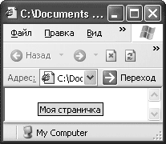 Рис. 1.1. Значение атрибута title отображено в виде экранной подсказки
Следует отметить, что атрибут dir в данном случае не обеспечен достаточной поддержкой известных браузеров даже последних версий. Например, IE 6 и Opera 9 просто выравнивают текст по правому краю, а некоторые устаревшие браузеры этот атрибут просто игнорируют. Так что, если вы намерены использовать текст с альтернативным направлением чтения (иврит, арабский язык), этот атрибут нужно применять с осторожностью.
После того как для документа создана основа, внутри нее нужно создать заглавную область. Информация, вводимая в элемент HEAD, не отображается в окне браузера, а помогает ему в обработке страницы.
В заголовке должны присутствовать как открывающий, так и закрывающий теги <HEAD> и </HEAD>, между которыми располагаются другие элементы, несущие служебную информацию о странице. Элементы, находящиеся внутри элемента HEAD, играют очень важную роль: данные, содержащиеся в них, помогают браузеру в обработке страницы, а поисковым системам – в индексации документа.
Для элемента HEAD определены те же атрибуты, что и для HTML, а также атрибут profil. Он позволяет задать адрес файла с настройками, которые устанавливаются элементами <META> внутри заголовка. С его помощью можно будет избежать многократной записи одних и тех же элементов <META>. Однако этот атрибут пока не введен в действие и рассчитан на будущее развитие языка HTML.
Элементы, которые можно использовать внутри элемента HEAD, представлены в табл. 1.1.
Таблица 1.1. Элементы, используемые внутри элемента HEAD
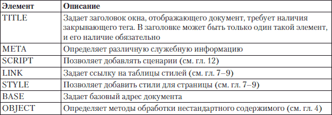
В таблице элементы описаны кратко, дальше мы рассмотрим некоторые из них подробнее. Как можно увидеть из краткого описания в табл. 1.1, они содержат данные, единые для всей страницы.
Начнем с элемента, определяющего заголовок страницы.
Он задает название страницы, которое будет отображаться в строке заголовка окна браузера. Согласно спецификации HTML 4.01 в содержимом элемента HEAD обязательно наличие элемента TITLE, причем в единственном числе.
Элемент требует наличия закрывающего тега </TITLE>. Текст, содержащийся между открывающим и закрывающим тегами, и будет отображаться в строке заголовка окна браузера.
Помимо основной функции – рассказать посетителю, о чем страница, – элемент выполняет несколько косвенных задач. Некоторые поисковые системы используют текст, содержащийся в этом элементе, для поиска и выводят его в качестве заголовка результата поиска, поэтому корректно и качественно составленное заглавие может привлечь посетителей на сайт.
По тексту заголовка пользователь получает дополнительную информацию: что это за сайт и как называется текущая страница. Не стоит думать, что достаточно в документе указать логотип сайта и проигнорировать заголовок. Посетитель может сворачивать окна, и тогда заголовки будут отображаться на кнопках Панели задач – по ним можно будет легко сориентироваться, с каким сайтом работать.
Большинство браузеров поддерживают возможность сохранения веб-страницы на компьютер. В этом случае имя сохраненного файла совпадает с названием заголовка документа. Если в тексте заголовка содержатся символы, недопустимые в имени файла (\ /: *? " < > |), то они будут проигнорированы или заменены другими разрешенными символами.
При сохранении в разделе браузера Избранное в качестве названия ссылки будет использоваться текст, записанный в элементе TITLE. В этом случае адрес текущей страницы с ее заголовком помещается в список ссылок. Поскольку этот список, как правило, хранится в виде отдельных файлов, к их именам также применяется вышеописанное правило.
В листинге 1.3 показан пример использования элемента TITLE.
Листинг 1.3. Использование элемента TITLE
<!DOCTYPE HTML PUBLIC «-//W3C//DTD HTML 4.01 Transitional//EN»
"http://www.w3.org/TR/html4/loose.dtd">
<html>
<head>
<title>Пример создания заголовка страницы</title>
<–!Другое содержимое заголовка–>
</head>
<–!Содержимое документа–>
</html>
Название страницы нужно придумывать, логически исходя из ее содержимого.
На рис. 1.2 представлен результат работы листинга 1.3. Видно, что текст заголовка отображается в строке заголовка окна.
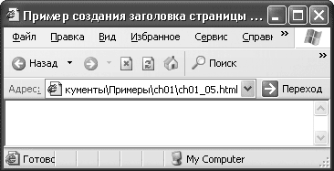 Рис. 1.2. Вид заголовка страницы
Мы определились с заголовком новой страницы, теперь посмотрим, какая служебная информация может содержаться внутри элемента HEAD.
Элемент META используется для хранения дополнительной информации о странице. Эту информацию браузеры применяют для обработки страницы, а поисковые системы – для ее индексации. Например, чтобы указать автора HTML-документа, можно использовать элемент META следующим образом:
<META name="Author" content="Вася Пупкин">
Здесь значение атрибута name задает имя свойства Author, которому в атрибуте content присваивается имя – «Вася Пупкин». В этом и состоит общее правило применения элементов META: с их помощью вы задаете в атрибуте name имя нового свойства, которому далее в атрибуте content присваиваете значение. Вместо атрибута name можно использовать атрибут http-equiv, который служит для обмена служебной информацией браузера с веб-сервером. Например, рассмотрим такой элемент:
<META http-equiv="Expires" content="Sun, 1 Nov 2009 16:20:47 GMT">
Он сообщает браузеру, когда будет исчерпан срок хранения в кэше данной страницы. После этого нужно будет выполнить повторный запрос сервера.
В элементе HEAD может быть несколько элементов META, потому что в зависимости от используемых атрибутов они могут нести разную информацию. В табл. 1.2 представлены возможные значения атрибута http-equiv. Заметьте, спецификация HTML 4.01 не определяет значения этого атрибута, поскольку они устанавливаются протоколом обмена информацией с веб-сервером. Использовать элементы META с такими атрибутами рекомендуется только подготовленным специалистам.
Таблица 1.2. Возможные значения атрибута http-equiv
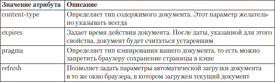
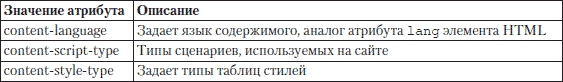
Рассмотрим подробнее применение описанных выше атрибутов.
В листинге 1.4 приведен пример того, как с помощью атрибута http-equiv задать свойства обработки страницы.
Листинг 1.4. Применение атрибута http-equiv
<!DOCTYPE HTML PUBLIC «-//W3C//DTD HTML 4.01 Transitional//EN»
"http://www.w3.org/TR/html4/loose.dtd">
<html title="Моя страничка" lang="ru">
<head>
<title>Использование элемента META</title>
<meta http-equiv="Content-Type" content="text/html" charset="windows-1251" />
<meta http-equiv="refresh" content="10" URL="http:\\test.ru" />
<meta http-equiv="pragma" content="no-cache" />
<meta http-equiv="expires" content="Sun, Oct 2010 10:09:00 GMT+3" />
</head>
</html>
Как видно из примера, значение атрибута http-equiv указывает на переменную, значение которой определено с помощью атрибута content.
Значение content-type, использованное в примере, будет одинаковым для всех сайтов в кириллической кодировке. Рекомендуем всегда указывать его, иначе браузер может некорректно отображать текст на вашей странице.
Использование параметра refresh полезно, когда страницу перенесли в другое место или когда у нее много адресов. В таком случае вместо того чтобы создавать множество сайтов по разным адресам, можно просто задать возможность переброски посетителя на основной сайт. В примере из листинга 1.4 через 10 секунд после загрузки страницы загрузится сайт test.ru.
Совет
Не все браузеры поддерживают автоматическую пересылку. На всякий случай на странице, с которой идет переадресация, нужно оставлять текстовую ссылку на страницу переадресации.
Рассмотрим возможные значения атрибута content для каждого из представленных свойств (табл. 1.3).
Таблица 1.3. Значения атрибута content для различных значений атрибута http-equiv
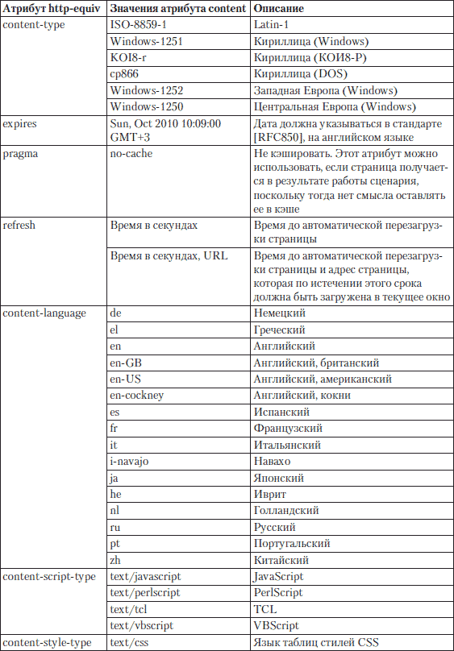
Большинство значений атрибута content, которые вам могут пригодиться, представлены в таблице. Поначалу вы вообще можете ограничиться использованием свойства content-type (оно обязательно), а остальные параметры будете включать при необходимости.
Атрибут name, как и http-equiv, содержит служебную информацию о документе, однако в нем записывается информация другого плана. Например, данные об авторе и содержимом документа. Эти данные не влияют на обработку документа браузером, однако дают информацию для поисковых систем.
В табл. 1.4 представлены возможные значения атрибута name.
Таблица 1.4. Возможные значения атрибута name
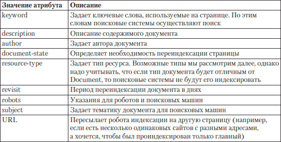
Как видно из табл. 1.4, большинство свойств отвечает за индексацию страницы в поисковиках. Это очень важный момент, ведь когда вы создаете сайт, то хотите сделать его посещаемым, а в этом помогает элемент META.
Параметры, задаваемые в элементе META, помогают поисковым роботам ассоциировать ваш сайт с определенной тематикой. В результате, когда человек введет в поисковике слово, установленное для вашей страницы в качестве ключевого, среди результатов отобразится ссылка на страницу.
Примечание
Роботы – это специальные программы, которые перемещаются по Интернету и запоминают просмотренные сайты. Результаты поиска заносятся в базы поисковых сайтов, и поиск с самих сайтов осуществляется по этим базам.
У каждого поисковика свои программы-роботы и своя логика поиска и хранения данных в базах, поэтому часто одинаковые запросы в разных поисковых системах дают различные результаты.
В листинге 1.5 приведен пример использования параметров элемента META для управления индексацией страницы.
Листинг 1.5. Параметры элемента META для индексации в поисковиках
<!DOCTYPE HTML PUBLIC «-//W3C//DTD HTML 4.01 Transitional//EN»
"http://www.w3.org/TR/html4/loose.dtd">
<html xmlns="http://www.w3.org/1999/xhtml" title="Моя страничка" lang="ru" xml:lang="ru">
<head>
<title>Использование элемента META</title>
<meta http-equiv="Content-Type" content="text/html; charset=windows-1251" />
<meta http-equiv="pragma" content="no-cache" />
<meta http-equiv="expires" content="Sun, 10 Oct 2010 10:09:00 GMT+3" />
<meta name="author" content="Автор" />
<meta name="description" content="Использование элемента META для индексации сайта в поисковых системах" />
<meta name="document-state" content="Dynamic" />
<meta name="keywords" content="тег, мета, индексация, поиск" lang="ru" />
<meta name="keywords" content="tags, meta, index, search" lang="en" />
<meta name="Resource-Type" content="Document" />
<meta name="Revisit" content="2" />
<meta name="Robots" content="noindex,follow" />
<meta name="URL" content="http:\\test.test" />
</head>
</html>
В примере из листинга 1.5 задано много свойств метаданных. Рассмотрим подробнее их действие.
Параметр author задает имя автора. Если владельцем сайта является компания, то вместо author используется параметр copyright, а в качестве значения атрибута content нужно задать имя компании. Можно указать язык, на котором записано значение параметра content. Для этого используется атрибут lang.
Свойство description задает описание документа. Текст, заданный для этого параметра, будет выводиться в качестве описания вашей страницы, отображаемого поисковиком в результатах поиска. Понятно, что этот параметр надо задавать очень аккуратно, потому что именно по этой фразе пользователь будет решать, имеет ли смысл посещение вашей страницы.
Значение dynamic свойства document-state сообщает роботам, что страницу надо будет индексировать при следующем проходе, потому что ее содержимое может поменяться.
Дальше два раза задаются ключевые слова свойства keywords: первый раз на русском языке, второй – на английском. При этом язык, на котором написаны ключевые слова, задается с помощью атрибута lang.
Эффективность сайта напрямую зависит от того, насколько адекватно он отображается в поисковых системах, а это во многом определяется хорошо подобранными ключевыми словами.
В качестве ключевых нужно использовать слова, имеющие прямое отношение к тексту, расположенному на странице. Это значит, что для каждой страницы вашего сайта надо составлять свой список ключевых слов так, чтобы они наилучшим образом отражали ее содержимое.
Не стоит повторять ключевые слова по нескольку раз. Если используете словосочетания, не применяйте в них союзы и предлоги, так как они не несут полезной смысловой нагрузки, а только занимают место. Обычно поисковые роботы распознают первые 200–250 символов, определенных в параметре keyword. Порядок слов зависит от их важности, наиболее важные слова следует располагать в начале списка.
При подборе ключевых слов постарайтесь предположить, какие сочетания и слова будет использовать пользователь при поиске страницы вашей тематики, и используйте в ключевых словах именно их. Для разных страниц сайта, даже если их тематика одинакова, старайтесь использовать разные сочетания ключевых слов, тогда шанс, что пользователь найдет именно ваш сайт, повысится.
Однако помните, что сейчас поисковые системы ведут поиск не только по ключевым словам – зачастую роботы просматривают всю страницу, чтобы определить ее тематику. Старайтесь создавать страницы, в которых ключевые слова соответствуют содержанию, тогда у вас будет шанс оказаться в первых рядах при поиске.
Параметр resource-type сообщает поисковому роботу тип страницы и применяется для больших сайтов, где много страниц различного назначения. Страница индексируется, только если в качестве значения resource-type задано document.
Рассмотрим параметр revisit. Он говорит, что поисковый робот должен вернуться для переиндексации сайта через два дня. Этот параметр надо задавать, если вы регулярно обновляете содержимое страниц, что поспособствует хранению в поисковых системах актуальной информации о вашем сайте.
Параметр robots дает роботам некоторые управляющие команды. В случае из примера он указывает на то, что текущую страницу индексировать не надо, однако нужно пройти по ссылкам на странице и проиндексировать остальную часть сайта.
В табл. 1.5 представлены команды, которые можно использовать для управления роботами.
Таблица 1.5. Значения атрибута content для свойства robots
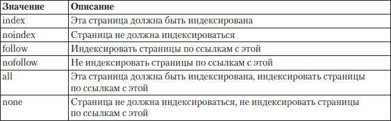
Встретив строку URL, робот прекратит индексацию текущей страницы и перейдет на страницу с адресом test.ru.
Из всего, что рассмотрено выше, становится понятна важность элемента META, он отвечает за многие параметры страницы. Далеко не все его возможности будут необходимы постоянно, однако всегда нужно помнить о том, что вы можете сделать с его помощью.
Вы должны знать, что без возможностей элемента META для раскрутки сайта в поисковых системах не обойтись, но они не спасут, если сайт не будет соответствовать ожиданиям посетителей. Поэтому пользуйтесь ими в качестве дополнения к качественно сделанному сайту.
Внутри этого элемента задаются стили, используемые на странице. Таких элементов внутри заголовка страницы может быть несколько. Элемент STYLE поддерживает знакомые вам атрибуты lang и title, а также новые атрибуты type и media. Атрибут type указывает, какой язык задания стилей применяется в данном документе, а атрибут media определяет, на каком устройстве предполагается воспроизводить данный HTML-документ.
Для задания стилей в документе HTML 4.01 применяется язык CSS, который мы будем подробно рассматривать в гл. 7. Здесь же мы немного познакомим вас с возможностями этого языка, чтобы вы поняли их достоинства. Они настолько велики, что консорциум W3C отказался от использования атрибутов форматирования содержимого HTML-документов в элементах, применяемых для разметки текста, например задающих шрифт, его начертание и прочие характеристики. Все эти методы признаны устаревшими, на их смену пришли средства CSS.
Каскадные таблицы стилей (CSS) используют, чтобы максимально отделить HTML-код страницы от ее оформления. Иными словами, внутри таблицы описано оформление различных элементов, а в HTML-коде – только применяемый стиль. Это очень удобный метод – вы можете менять оформление страницы, цвет фона, шрифт, не перебирая огромное количество команд HTML-кода, а просто заменив его в таблице стилей.
Элемент STYLE позволяет реализовать возможности CSS в документе без применения внешних источников. Внутри этого элемента можно записывать код форматирования содержимого странички в формате CSS. Чтобы браузер знал формат кода, атрибуту type элемента STYLE присваивается значение text/css, сообщающее браузеру о применении средств CSS. Вот пример задания CSS-стиля:
<style type="text/css">
p.style {
color:#CC0000;
background:#9999CC;
word-spacing:20px;
}
Здесь запись p.style указывает, что для элемента P, создающего абзац, определяется стиль под названием style, который определяет для текста внутри абзаца цвет шрифта (color: #CC0000), фона (background: #9999CC) и расстояние между словами (word-spacing:2 0px).
Чтобы подключить к элементу какой-либо стиль, нужно использовать атрибут class и в качестве его значения установить название стиля, который необходимо применить к этому элементу:
<p class="style">
Текст со стилем style
</p>
Таким образом, используя язык CSS и элемент STYLE, можно создать стили для конкретного элемента или общий стиль, который будет применим к любому элементу, а далее просто ссылаться на этот стиль в процессе разметки документа.
Более того, с помощью элемента STYLE можно задать разные стили для вывода на экран и для вывода на печать. Это полезно, если в качестве фона вы используете темные тона или рисунок. Совершенно не обязательно оставлять подобное декорирование документа при выводе на печать, тем более что это потребует больше краски от принтера. Для этого нужно использовать атрибут media.
Значения атрибута media таковы:
• print – стили для вывода на печать;
• screen – стили для вывода на экран;
• all – стили для вывода на любое устройство.
На примере кода из листинга 1.6 рассмотрим основы синтаксиса CCS.
Листинг 1.6. Использование стилей
<!DOCTYPE HTML PUBLIC «-//W3C//DTD HTML 4.01 Transitional//EN»
"http://www.w3.org/TR/html4/loose.dtd">
<html>
<head>
<meta http-equiv="Content-Type" content="text/html; charset=windows-1251" />
<style type="text/css" media="screen" >
p.style {
color:#CC0000;
background:#9999CC;
word-spacing:20px;
}
.style2 {
color:#66FFFF;
background:#990000;
word-spacing:10px;
}
</style>
<style type="text/css" media="print" >
p.style {
color:#000000;
background:#FFFFFF;
word-spacing:20px;
}
.style2 {
color:#000000;
background:#FFFFFF;
word-spacing:10px;
}
</style>
<title>Использование стилей</title>
</head>
<body>
<p class="style">
Текст со стилем style
</p>
<p class="style2">
Текст со стилем style2
</p>
<table border="1" >
<tr>
<td class="style2">
Для ячейки применен стиль style2
</td>
</tr>
</table>
</body>
</html>
В примере создано два стиля: style можно применять только для элемента P (для обозначения этого перед названием стиля стоит название элемента), style2 – для любого объекта. В листинге 1.6 стиль style2 применен еще и для ячейки таблицы.
Результат обработки листинга 1.6 представлен на рис. 1.3.
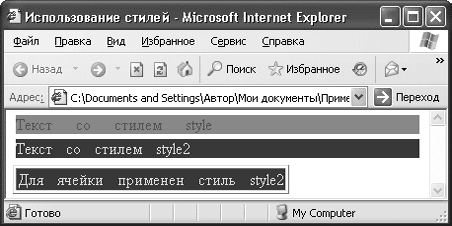 Рис. 1.3. Использование стилей
Для вывода на печать будет использован черный шрифт с белым фоном. Этим мы сэкономим чернила пользователей.
Совет
На странице можно делать ссылки на отображение документа в формате для вывода на печать. Это даст возможность пользователю определить, устраивает ли его установленный формат вывода.
Есть еще один способ применения к элементу стиля: встроить CSS-код непосредственно в элемент разметки в виде значения атрибута style. Такой атрибут доступен для всех элементов HTML. В нем в формате CSS через точку с запятой прописываются значения разных свойств элемента. Вот как это выглядит для элемента P:
<p style="color:#CC0000; background:#9999CC; word-spacing:20px;">
Как видите, CSS-код совпадает с содержимым элемента STYLE из предыдущего примера. В листинге 1.7 представлен пример задания свойств элементов с помощью встраивания CSS-кода в значение атрибута style.
Листинг 1.7. Использование атрибута style
<!DOCTYPE HTML PUBLIC «-//W3C//DTD HTML 4.01 Transitional//EN»
"http://www.w3.org/TR/html4/loose.dtd">
<html>
<head>
<meta http-equiv="Content-Type" content="text/html; charset=windows-1251" />
<title>Использование стилей</title>
</head>
<body>
<p style="color:#CC0000; background:#9999CC; word-spacing:20px;">
Текст с атрибутом style="color:#CC0000; background:#9999CC; word-spacing:20px;"
</p>
<p style="color:#66FFFF; background:#990000; word-spacing:10px;">
Текст с атрибутом style="color:#66FFFF; background:#990000; word-spacing:10px;"
</p>
<table border="1" >
<tr>
<td style="color:#66FFFF; background:#990000; word-spacing:10px;">
Описание ячейки таблицы с атрибутом style="color:#66FFFF; background: #990000; word-spacing:10px;"
</td>
</tr>
</table>
</body>
</html>
Здесь применены такие же стили, как и в предыдущем примере, но параметры заданы с помощью атрибута style.
На рис. 1.4 показан результат обработки кода из листинга 1.7.
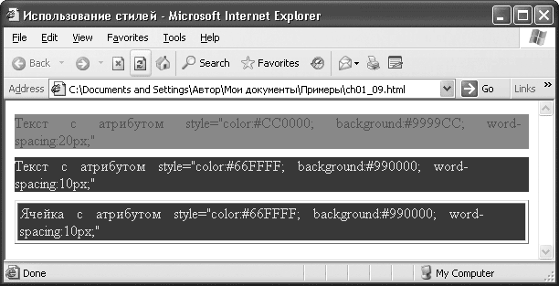 Рис. 1.4. Установка стилей с помощью атрибута style
Как видно из рисунков, результаты обоих листингов одинаковые по стилям. Однако задавать стили в начале документа удобнее, потому что при необходимости их легко будет найти и исправить.
Еще один способ задать стили для документа – записать их в отдельный файл с разрешением CSS. Синтаксис записи в этот файл такой же, как и при использовании элемента STYLE, однако этот способ более универсален.
Подключить файл со стилями к документу можно двумя способами. Первый представлен в листинге 1.8 и использует элемент STYLE. Внутри этого элемента нужно записать такую строку: @import URL("nyTb к файлу с таблицами");.
Листинг 1.8. Импорт файлов с таблицами стилей
<!DOCTYPE HTML PUBLIC «-//W3C//DTD HTML 4.01 Transitional//EN»
"http://www.w3.org/TR/html4/loose.dtd">
<html>
<head>
<style>
@import URL("test.css");
</style>
<meta http-equiv="Content-Type" content="text/html; charset=windows-1251" />
<title>Использование стилей</title>
</head>
</html>
При такой настройке к элементам нашего документа можно будет применять стили, описанные в файле test.css.
Использование элемента LINK – это второй способ подключения файла с таблицами стилей к документу. Элемент не требует наличия закрывающего тега. Его возможности намного шире, нежели просто подключение таблиц стилей. В общем, элемент LINK определяет отношения между текущей страницей и другими документами. Поскольку отношения могут быть разными, то и элементов LINK на странице может быть много.
Основным для этого элемента является атрибут href; его значение – это путь к объекту, для которого описывается тип связи. Этот атрибут является обязательным, что вполне логично – странно было бы устанавливать связи с объектом, не указав, где он расположен.
Другим атрибутом является type, он задает параметры объекта, с которым определяется связь. При связывании таблиц стилей этот атрибут принимает значение text/css.
У элемента LINK есть два взаимодополняющих атрибута: rel и rev. Первый определяет отношение между текущим документом и другим, а второй – отношение другого документа к текущему. Эти атрибуты могут принимать различные фиксированные значения, которые обозначают типы отношений.
В листинге 1.9 представлены примеры использования элемента LINK.
Листинг 1.9. Использование элемента LINK
<!DOCTYPE HTML PUBLIC «-//W3C//DTD HTML 4.01 Transitional//EN»
"http://www.w3.org/TR/html4/loose.dtd">
<html>
<head>
<link href="test.css" rel="stylesheet" type="text/css" />
<link href="copyrihgt.html" rel="copyright" />
<link href="help.html" rev="help" />
<meta http-equiv="Content-Type" content="text/html; charset=windows-1251" />
<title>Использование элемента LINK</title>
</head>
</html>
В примере из листинга 1.9 элемент LINK использован для прикрепления к текущему документу таблиц стилей, для указания файла, содержащего информацию об авторском праве на данный документ, и для определения файла, в котором хранится справочная информация.
В табл. 1.6 приведены некоторые возможные значения атрибута rel. За более подробной информацией стоит обратиться к специальной литературе или к спецификации на сайте W3C.
Таблица 1.6. Некоторые значения атрибута rel
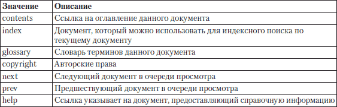
Совет
Использование значения alternate атрибута rel в сочетании с другими атрибутами hreflang и charset, которые задают в элементе LINK язык и кодировку документа, подскажет браузеру, где искать альтернативные версии текущего документа, написанные на других языках.
Мы разобрались с элементом LINK и выяснили его возможности относительно работы с различными документами и в частности с таблицами стилей. Теперь рассмотрим элемент, который пригодится при работе с другими важными объектами создания сайтов.
Элемент SCRIPT позволяет присоединять к документу сценарии. Он требует наличия закрывающего тега, при этом текст сценария может располагаться либо в этом элементе, либо во внешнем файле. Если текст сценария расположен во внешнем файле, то он подключается с помощью атрибутов элемента SCRIPT.
Рассмотрим атрибуты этого элемента. Основным можно считать атрибут type, который задает язык сценария, присоединяемого к странице. Если этот атрибут задан, он отменяет установленный по умолчанию язык сценариев. На случай подключения внешнего файла со сценариями у элемента SCRIPT есть атрибут src, в качестве значения которого используют место расположения файла со сценариями. Это удобно, если для различных страниц нужно использовать одинаковые сценарии.
У элемента SCRIPT есть еще один вспомогательный атрибут – defer, который запрещает загружать сценарий до окончания полной загрузки страницы.
В листинге 1.10 показаны разные примеры подключения сценариев к HTML-документу.
Листинг 1.10. Использование элемента SCRIPT
<!DOCTYPE HTML PUBLIC «-//W3C//DTD HTML 4.01 Transitional//EN»
"http://www.w3.org/TR/html4/loose.dtd">
<html>
<head>
<script defer="defer" type="text/javascript">
<!–текст сценария–>
</script>
<script type="text/javascript" src="test.js">
</script>
<title>Использование элемента SCRIPT</title>
</head>
</html>
Количество подключаемых сценариев не ограничено, однако помните, что на их обработку требуется время, так что не стоит загружать браузер больше необходимого.
Если внутри документа создаются относительные ссылки на файлы, то может возникнуть ситуация, когда текущий документ перемещен и файлы становятся недоступны. Но в языке HTML есть инструменты для решения этой проблемы.
Элемент BASE служит для того, чтобы задать базовый адрес, относительно которого вычисляются все относительные адреса. Это поможет избежать проблем в случае переноса вашей страницы в другое место. Иначе говоря, все ссылки будут работать, как и прежде.
Примечание
Абсолютный адрес документа использует полный путь к нему, начиная с корневого каталога. Например, C:\Test\test.jpg для файлов на вашем компьютере или http:// www.test.test/mytests/test.html для документов, расположенных в Интернете. Если путь к файлу очень длинный и неудобно каждый раз вводить его, то можно задать относительный адрес. Например, чтобы из документа, находящегося по адресу C:\Test\MyTests\test.html, получить доступ к документу C:\Test\test.jpg, достаточно в нем набрать. \test.jpg, при этом знак «.» означает переход на более высокий уровень иерархии каталогов.
Основным атрибутом элемента BASE является href. В качестве его значения используется адрес базовой папки, относительно которой и будут вычисляться относительные адреса.
Еще одним полезным атрибутом этого тега является target. Он предназначен для работы с фреймами, то есть с HTML-документами, представляющими собой набор окон, каждое из которых является дочерним к основному, родительскому окну документа. Атрибут target определяет, в какое окно будут загружаться страницы по ссылкам, встречающимся в документе. Этот атрибут может принимать четыре значения:
• _top – отменяет все фреймы и загружает страницу в полное окно браузера;
• _blanc – загружает страницу в новое окно;
• _self – загружает страницу в текущее окно;
• _parent – загружает страницу во фрейм-родитель.
При этом можно использовать элемент BASE с указанием только одного из атрибутов.
В листинге 1.11 представлен пример использования элемента BASE.
Листинг 1.11. Использование элемента BASE
<!DOCTYPE HTML PUBLIC «-//W3C//DTD HTML 4.01 Transitional//EN»
"http://www.w3.org/TR/html4/loose.dtd">
<html>
<head>
<base href="http://www.test.test/" target="_blank" />
<meta http-equiv="Content-Type" content="text/html; charset=windows-1251" />
<title>Использование элемента BASE</title>
</head>
</html>
В примере из листинга 1.11 все относительные адреса будут браться от адреса http://www.test.test/, то есть если в тексте документа будет строка с адресом ../IMG/test.jpg, то браузер будет ее воспринимать как http://www.test.test/IMG/test.jpg. При этом все ссылки будут открываться в новых окнах, если среди параметров самой ссылки не указать другой вариант.
Мы разобрались со всеми элементами, которые можно использовать внутри элемента HEAD, и от заголовка документа пора перейти к его телу.
Внутри элемента BODY располагается сам документ: весь текст, находящийся между открывающим тегом <BODY> и закрывающим тегом </BODY>, будет отображаться браузером. Все элементы, отвечающие за форматирование документа, помещают внутрь элемента BODY.
Атрибуты элемента BODY применяются для того, чтобы установить общие для всего документа свойства, и в этом отношении возможности данного элемента достаточно большие: можно задать цвет ссылок, параметры фона и т. п.
Сначала рассмотрим атрибуты элемента BODY, управляющие отображением ссылок. Для удобства посетителей страницы надо задавать разные цвета для посещенных, непосещенных и активных ссылок, при этом нужно следить, чтобы они не сливались с цветом фона страницы, потому что это будет неудобно посетителям.
За цвет ссылок отвечают следующие атрибуты элемента BODY:
• alink – задает цвет активной ссылки;
• vlink – определяет цвет посещенной ссылки;
• link – устанавливает цвет непосещенной ссылки.
Цвета ссылок можно задать в HEX-формате или ключевыми словами. Ключевые слова имеет смысл использовать, если вы хотите применить стандартный цвет. Ну а если вы собираетесь устанавливать нестандартные цвета, придется воспользоваться HEX-форматом.
В примере из листинга 1.12 представлены оба варианта записи.
Листинг 1.12. Цвет ссылок
<!DOCTYPE HTML PUBLIC «-//W3C//DTD HTML 4.01 Transitional//EN»
"http://www.w3.org/TR/html4/loose.dtd">
<html>
<head>
<base href="http://www.test.test/" target="_blank" />
<meta http-equiv="Content-Type" content="text/html; charset=windows-1251" />
<title>Использование элемента BODY</title>
</head>
<body alink="#00FF00" vlink="red" link="#330000">
</body>
</html>
В примере для активной и непосещенной ссылки цвет задан с помощью цифр и букв: они определяют код цвета в шестнадцатеричном формате и записываются в качестве значения соответствующего атрибута после знака #. Для посещенной ссылки цвет задан ключевым словом. Использовать ключевые слова просто. В качестве обозначения цвета с их помощью применяются стандартные названия цветов на английском языке. Указывайте простые названия цветов вроде blue, red, black и не ошибетесь.
Что касается записи цвета в цифрах, то код для нужного цвета можно определить, используя любой графический редактор.
Элемент BODY предоставляет большие возможности для управления фоном страницы. Рассмотрим атрибуты, отвечающие за это.
Для начала надо задать фоновый цвет страницы. Это делается с помощью атрибута bgcolor, значение которого определяет цвет фона. Потом нужно указать фоновый рисунок страницы с помощью атрибута background, значение которого представляет собой адрес файла с рисунком для фона. При этом старайтесь ставить цвет фона, близкий к цветовой гамме фонового рисунка. Это пригодится, если у пользователя не загрузится фоновый рисунок. Когда цвет фона близок к цвету рисунка, не будет дисбаланса в общем виде страницы.
Следующий атрибут управляет прокруткой фона и называется bgproperties. Он определяет, будет ли фон прокручиваться вместе с текстом. Этот атрибут принимает всего одно значение fixed, позволяющее зафиксировать фон документа и не прокручивать его вместе с текстом. В противоположном случае нужно просто удалить этот атрибут. При выборе параметров прокрутки фона надо действовать очень осторожно и следить за тем, чтобы при прокрутке не терялась читаемость текста.
В листинге 1.13 представлен пример использования атрибутов элемента BODY, отвечающих за фон документа.
Листинг 1.13. Параметры фона
<!DOCTYPE HTML PUBLIC «-//W3C//DTD HTML 4.01 Transitional//EN»
"http://www.w3.org/TR/html4/loose.dtd">
<head>
<base href="http://www.test.test/" target="_blank" />
<meta http-equiv="Content-Type" content="text/html; charset=windows-1251" />
<title>Использование элемента BODY</title>
</head>
<body background="test.jpg" bgcolor="#0033CC" bgproperties="fixed">
</body>
</html>
В примере из листинга 1.13 файл test. jpg оформлен в синих тонах, поэтому и цвет фона взят из синей гаммы. Прокрутка фона вместе с текстом запрещена.
После того как мы разобрались с фоном, можно задать положение содержимого страницы относительно границ окна браузера.
За отступ от границ окна отвечают следующие атрибуты элемента BODY:
• bottommargin – определяет расстояние от нижнего края окна браузера до содержимого страницы;
• leftmargin – указывает расстояние от левого края окна браузера до содержимого страницы;
• topmargin – задает расстояние от верхнего края окна браузера до содержимого страницы.
Расстояние для всех атрибутов устанавливается в пикселах.
В листинге 1.14 приведен пример указания расстояния до содержимого страницы с помощью атрибутов элемента BODY.
Листинг 1.14. Установка расстояния от границ окна до содержимого страницы
<!DOCTYPE HTML PUBLIC «-//W3C//DTD HTML 4.01 Transitional//EN»
"http://www.w3.org/TR/html4/loose.dtd">
<head>
<base href="http://www.test.test/" target="_blank" />
<meta http-equiv="Content-Type" content="text/html; charset=windows-1251" />
<title>Использование элемента BODY</title>
</head>
<body topmargin="10" leftmargin="20" bottommargin="10">
</body>
</html>
В примере расстояние сверху и снизу будет по 10 пикселов, а слева – 20 пикселов.
У элемента BODY есть еще два атрибута, которые могут нам пригодиться. Атрибут text отвечает за цвет текста в документе. Когда задаете цвет текста, следите, чтобы он не сливался с фоном страницы.
Атрибут scroll определяет, будет ли в окне документа вертикальная полоса прокрутки. У него всего два значения: yes и no, обозначающие разрешить и запретить прокрутку соответственно. На самом деле запрещать прокрутку не стоит, потому что документ, который у вас на экране виден полностью без проблем, у пользователя с низким разрешением монитора может не поместиться на экране. В итоге без полосы прокрутки он просто не увидит часть документа.
Мы рассмотрели элемент BODY, его возможности и функции. Все параметры, определяемые в этом элементе, влияют на общий вид документа.
Когда вы создаете большие сайты, то со временем можете забыть, что именно делает та или иная часть кода страницы. Комментарии помогут избежать этого.
Комментарии могут располагаться в любом месте страницы, потому что не отображаются браузером. В качестве текста комментариев можно задавать пояснения к коду страницы. Это удобно, если код большой или с текстом работают несколько человек.
Комментарии заключаются в тег: <! – текст комментария – >. Текст, расположенный внутри этого тега, не будет отображаться.
В этой главе вы ознакомились с основами построения HTML-документа и центральными понятиями, используемыми в языке HTML. Большое внимание было уделено метаданным, потому что именно они отвечают за распознавание кодировки страницы и ее индексацию в поисковых системах. Вы также познакомились с основами таблиц стилей и вариантами их подключения к странице.
Большая часть главы была посвящена вспомогательным данным, которые позволят сделать ваш сайт доступным для потенциальных пользователей и дадут возможность браузерам корректно его обрабатывать.
Глава 2
Ввод и оформление текста
2.1. Создание заголовков
2.2. Создание абзацев
2.3. Создание обрывов строк
2.4. Создание списков
2.5. Ссылки
2.6. Форматирование текста
Ввод текстовой информации на сайт осуществляется внутри элемента BODY. Однако чаще всего простое расположение текста внутри элемента BODY неприемлемо, необходимо его оформлять, например разделять на абзацы или создавать заголовки. Для оформления текста HTML предоставляет много возможностей: для любого абзаца или заголовка можно задать уникальный внешний вид. Язык HTML также позволяет создавать списки с маркерами любого типа. Можно менять цвет, размер и шрифт текста. В общем, у создателя сайта есть возможность оформить свой текст очень красочно.
Сначала рассмотрим общие принципы структурного форматирования текста, а затем перейдем непосредственно к управлению его внешним видом. При изучении материала этой главы следует помнить, что в новейшей версии языка XHTML форматировать текстовую информацию предлагается с помощью языка CSS, который мы будем изучать в гл. 7–9. Тем не менее содержимое главы весьма важно для практической работы, поскольку вам еще не раз придется столкнуться с многочисленными веб-страницами, оформленными согласно устаревшим средствам, ведь они применялись много лет и на их основе было создано огромное количество документов.
Заголовки – важный элемент сайта, они помогают систематизировать текст. В HTML доступно создание заголовков разных уровней, поэтому очень легко выделять смысловые темы и подтемы. Текст, находящийся в заголовках, влияет на индексацию сайта поисковыми системами, так как многие роботы при поиске обращают внимание на содержимое заголовков, имеющихся на сайте.
В HTML можно создавать заголовки шести уровней. Самым важным считается заголовок первого уровня, а самым малозначимым – шестого.
Заголовки создаются с помощью элементов H1, H2, H3, H4, H5, H6. По умолчанию заголовок самого верхнего уровня выделяется самым крупным шрифтом, и чем ниже уровень заголовка, тем меньше шрифт.
Для заголовка любого уровня можно задать выравнивание по горизонтали. Это делается с помощью атрибута align.
Значения атрибута align:
• left – по левому краю;
• right – по правому краю;
• center – по центру;
• justify – по ширине (только для заголовков длиннее строки).
Для заголовков можно задать атрибут title, значение которого – текст всплывающей подсказки, появляющейся при наведении указателя мыши на заголовок.
В листинге 2.1 представлен пример кода для создания разных типов заголовков и для их различного выравнивания.
Листинг 2.1. Заголовки
<html>
<head>
<title>Создание заголовков</title>
</head>
<body>
<h1 align="center">Заголовок 1 уровня</h1>
<h2 align="justify">Заголовок 2 уровня</h2>
<h3 align="left">Заголовок 3 уровня</h3>
<h4 align="right">Заголовок 4 уровня</h4>
<h5>Заголовок 5 уровня</h5>
<h6 title="Заголовок 6 уровня">Заголовок 6 уровня</h6>
</body>
</html>
На рис. 2.1 показан результат обработки листинга 2.1 браузером.
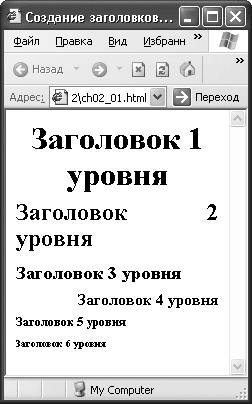 Рис. 2.1. Вид заголовков
На рис. 2.1 видно различие между заголовками разного размера. В принципе, придать тексту подобный вид можно с помощью управления обычным текстом, но, поскольку поисковики воспринимают текст заголовков как важный, имеет смысл для выделения важной информации использовать именно элементы заголовков.
При отображении заголовок всегда начинается с новой строки, а после него всегда идет новая строка – это отделяет заголовок от остального текста.
Для управления другими моментами отображения заголовков, например цветом или шрифтом, используется CSS. Поэтому в элементах H1-H6 разрешено использовать атрибуты style и class, которые подключают стили.
После того как заголовки созданы, можно добавить к ним немного обычного текста, который нужно логически разбить на абзацы.
Абзацы, как известно, делят текст на логические части и на письме выделяются отступом от края листа. В HTML абзацы отделяются друг от друга расстоянием в одну строку.
Для организации абзацев в HTML предусмотрен элемент P, который подразумевает наличие закрывающего тега. Элемент P, наверное, является самым востребованным – наибольшее количество текста, представленного в Интернете, находится внутри элемента P.
Для управления внешним видом текста абзацев в основном используются таблицы стилей, однако небольшое редактирование можно выполнить и с помощью HTML.
Для элемента P можно задать атрибут, определяющий выравнивание. Он называется align и может принимать следующие значения.
• center – выравнивание по центру. При таком виде выравнивания текст прижимается к центру экрана, образуя рваные края. Не стоит использовать подобное выравнивание для текста большого объема, потому что его будет неудобно читать.
• left – выравнивание по левому краю. Текст прижимается к левому краю окна браузера, а справа остаются неровные края. Это самый обычный вид выравнивания, текст такого вида достаточно легок для чтения.
• right – выравнивание по правому краю. Текст прижимается к правому краю экрана, образуя неровные края слева. Такое выравнивание подойдет небольшим эпиграфам. Читать большой текст, выровненный таким образом, будет неудобно.
• justify – выравнивание по ширине. Пробелы между словами автоматически регулируются таким образом, чтобы текст прижимался к левому и правому краям окна. Этот вид выравнивания является наилучшим для больших объемов текста, отсутствие рваных краев слева и справа придает ему аккуратный вид.
Кроме выравнивания, для абзаца можно задать всплывающую подсказку, которая появляется при наведении указателя мыши на текст. Подсказка создается с помощью атрибута title, значением которого является текст подсказки.
В листинге 2.2 приведен пример создания абзацев с разным выравниванием и всплывающими подсказками.
Листинг 2.2. Создание абзацев
<html>
<head>
<title>Абзацы</title>
</head>
<body>
<p align="center" title="Абзац, выровненный по центру">Это небольшой заголовочный абзац, выровненный по центру</p>
<p align="right" title="Абзац, выровненный по правому краю">Здесь эпиграф</p>
<p align="left" title="Абзац, выровненный по левому краю">Этот абзац с текстом выровнен по левому краю, поэтому края с правого края будут рваными</p>
<p align="justify" title="Абзац, выровненный по ширине">Этот абзац с основным текстом, выровненный по ширине. Края этого абзаца прилегают к краям окна браузера</p>
</body>
</html>
На рис. 2.2 показан результат обработки листинга 2.2, где видно различие между абзацами с разным выравниванием.
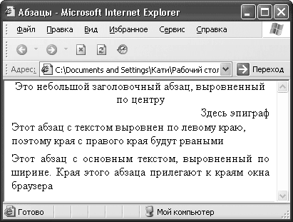 Рис. 2.2. Оформление абзацев
Для дальнейшего оформления текста абзацев используют каскадные таблицы стилей, для этого элемент P допускает использование атрибутов style и class.
С оформлением абзаца все понятно. Что же делать, если возникает необходимость оборвать строку, не закрывая абзац, например в том же эпиграфе для записи стихов?
В HTML есть возможность перенести текст на новую строку, не заканчивая абзац. Обычно браузер переносит слова в зависимости от размера окна, и возможность самостоятельно определить место переноса может пригодиться при записи стихов или для отделения различных элементов друг от друга.
Для переноса текста на новую строку служит элемент BR, он не требует закрывающего тега, однако рекомендуется записывать его открывающий тег как <BR />, чтобы все программы отображали его корректно.
В листинге 2.3 представлен пример кода для принудительного переноса строки.
Листинг 2.3. Обрыв строки
<html>
<head>
<title>Обрыв строки</title>
</head>
<body>
Наша Таня громко плачет,<br />
Уронила в речку мячик.<br />
</body>
</html>
На рис. 2.3 представлен результат обработки браузером кода из листинга 2.3.
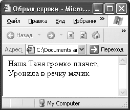 Рис. 2.3. Обрыв строки
Из рис. 2.3 видно, что при использовании элемента BR пустая строка после переноса не добавляется.
Есть еще один вариант применения элемента BR. Его используют, когда нужно задать обтекание текстом таблицы, изображения или любого другого плавающего элемента страницы (то есть элемента, для которого задан атрибут align).
Для этого применяют атрибут clear элемента BR. Атрибут может принимать следующие значения:
• all – запрещает обтекание элемента с двух сторон;
• left – запрещает обтекание с левой стороны плавающего объекта, расположенного после элемента BR;
• right – запрещает обтекание с правой стороны плавающего объекта, расположенного после элемента BR;
• none – отменяет свойство.
Если обтекание запрещено, то текст, следующий за элементом BR, будет отображаться на строке после плавающего объекта.
Кроме обязательного переноса строки, иногда нужно использовать обратное действие, то есть гарантировать, что текст не будет перенесен на новую строку ни в коем случае. Для создания таких неразрывных строк предназначен элемент NOBR, который требует наличия закрывающего тега. Текст, расположенный внутри элемента, будет размещаться в одной строке. При необходимости браузер создаст горизонтальную полосу прокрутки.
Иногда строка может оказаться очень длинной и неудобной для чтения, поэтому внутри элемента NOBR можно использовать элемент WBR, который указывает место для возможного переноса строки.
В листинге 2.4 представлен пример использования элементов NOBR и WBR.
Листинг 2.4. Запрет переноса строки
<html>
<head>
<meta http-equiv="Content-Type" content="text/html; charset=windows-1251" />
<title>Обрыв строки</title>
</head>
<body>
<nobr>Это очень важная строка, ее ни в коем случае нельзя переносить на другую строку, однако в этом месте <wbr>возможно сделать перенос.</nobr>
</body>
</html>
На рис. 2.4 показано отображение в браузере кода из листинга 2.4.
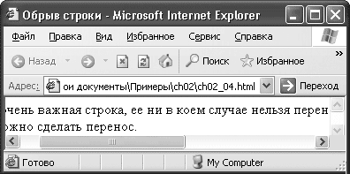 Рис. 2.4. Запрет переносов
Как видно на рис. 2.4, браузер создал горизонтальную полосу прокрутки и перенес строку в том месте, где было разрешено.
Возможность управлять переносами в браузере позволяет контролировать общий вид страницы, но нужно внимательно следить за тем, как браузер организовал переносы.
Простые списки можно создать с помощью обрывов страниц, но HTML предлагает для этого лучший инструмент.
Списки – важный инструмент, они применяются для организации и группировки данных. Это может пригодиться при создании карты сайта (то есть его оглавления), описания сложных структур и других подобных объектов.
В HTML можно выделить несколько типов списков:
• маркированный;
• нумерованный;
• список определений.
Они отличаются по типам представления информации.
Маркированные списки – это списки, в которых пункты отмечаются с помощью различных символов. Такие списки еще называют ненумерованными, или неупорядоченными, потому что для элементов данного списка последовательность неважна. Эти списки можно использовать для простого перечисления объектов или их свойств.
Для создания списков в HTML предусмотрен элемент UL, требующий наличия закрывающего тега. Пункты списка находятся внутри элемента UL. Каждый пункт начинается с элемента LI.
У элемента UL есть атрибут type, определяющий вид маркера списка. Он может принимать следующие значения:
• circle – создает маркер в виде круга, белого внутри;
• square – создает маркер в виде квадрата;
• disc – создает маркер в виде круга, закрашенного черным цветом.
Маркер можно выбирать любой, на ваш взгляд наиболее соответствующий виду страницы.
В листинге 2.5 представлен пример создания маркированных списков с разными маркерами.
Листинг 2.5. Маркированные списки
<html
<head>
<title>Списки</title>
<body>
<ul type="circle">
<li>Венера</li>
<li>Земля</li>
<li>Юпитер</li>
<li>Марс</li>
</ul>
<ul compact type="square" >
<li>Венера</li>
<li>Земля</li>
<li>Юпитер</li>
<li>Марс</li>
</ul>
<ul compact type="disc" >
<li>Венера</li>
<li>Земля</li>
<li>Юпитер</li>
<li>Марс</li>
</ul>
</body>
</html>
Результат обработки кода из листинга 2.5 показан на рис. 2.5. Здесь видно, как выглядят разные маркеры списков.
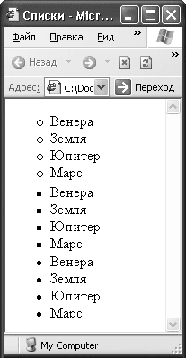 Рис. 2.5. Маркированные списки
При создании маркированных списков с помощью элемента LI можно задать вид маркера отдельно для каждого пункта списка.
В листинге 2.6 приведен пример создания списка с разными маркерами для различных пунктов.
Листинг 2.6. Список с разными маркерами
<html>
<head>
<title>Списки</title>
<body>
<ul>
<li type="circle">Земля</li>
<li type="circle">Марс</li>
<li type="square">Солнце</li>
<li type="circle">Венера</li>
<li type="disc">Луна</li>
</ul>
</body>
</html>
Результат обработки браузером кода из листинга 2.6 представлен на рис. 2.6.
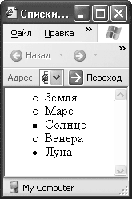 Рис. 2.6. Список с разными маркерами
В примере различные маркеры отмечают объекты разных типов.
Иногда удобнее создавать свои маркеры для списков, в этом случае внешний вид списков будет намного лучше соответствовать стилю вашего сайта и вашим желаниям.
В HTML есть возможность создать список с графическими маркерами. Для этого нужно вместо элемента LI подставить картинку с желаемым изображением. Элемент UL укажет браузеру, что надо сделать отступ, а с помощью элемента BR можно перенести строку.
В листинге 2.7 представлен пример создания списка с графическими маркерами.
Листинг 2.7. Список с графическими маркерами
<html>
<head>
<title>Списки</title>
<body>
<ul>
<img src="marker.jpg" />Венера<br />
<img src="marker.jpg" />Марс<br />
<img src="marker.jpg" />Земля<br />
</ul>
</body>
</html>
Результат обработки кода из листинга 2.7 показан на рис. 2.7.
Рис. 2.7. Список с графическими маркерами
Теперь можно использовать картинки для создания симпатичных списков, соответствующих стилю вашего сайта.
Однако использование неупорядоченных списков не всегда допустимо. Что делать, если нужно расписать порядок действий, например рецепт приготовления блюда? Для перечисления ингредиентов можно использовать неупорядоченный список, а для описания порядка действий понадобится пронумерованный список.
Нумерованные списки применяются, когда порядок следования пунктов списка имеет большое значение, например при описании алгоритмов или других пошаговых действий. Особенностью списков этого типа является то, что все их элементы упорядочены.
Для создания упорядоченных списков применяется элемент OL, которому требуется наличие закрывающего тега, а все пункты списка находятся внутри этого элемента.
У элемента OL есть атрибут type, который задает формат символов, используемых для нумерации.
Следующие значения атрибута type указывают, что пункты будут нумероваться с помощью:
• A – заглавных букв латинского алфавита;
• a – строчных букв латинского алфавита;
• I – заглавных римских цифр;
• i – строчных римских цифр;
• 1 – арабских цифр.
Вторым атрибутом элемента OL является атрибут start, указывающий, с какого числа начинать нумерацию всего списка.
В листинге 2.8 приведен пример кода для создания упорядоченных списков с разной нумерацией.
Листинг 2.8. Упорядоченные списки
<html>
<head>
<title>Списки</title>
<body>
<ol type="1" start="6">
<li>Достать ключ</li>
<li>Вставить ключ в замочную скважину</li>
<li>Повернуть ключ по часовой стрелке на два оборота</li>
<li>Достать ключ из замка</li>
<li>Открыть дверь</li>
</ol>
<ol type="A">
<li>Достать ключ</li>
<li>Вставить ключ в замочную скважину</li>
<li>Повернуть ключ по часовой стрелке на два оборота</li>
<li>Достать ключ из замка</li>
<li>Открыть дверь</li>
</ol>
<ol type="a">
<li>Достать ключ</li>
<li>Вставить ключ в замочную скважину</li>
<li>Повернуть ключ по часовой стрелке на два оборота</li>
<li>Достать ключ из замка</li>
<li>Открыть дверь</li>
</ol>
<ol type="I">
<li>Достать ключ</li>
<li>Вставить ключ в замочную скважину</li>
<li>Повернуть ключ по часовой стрелке на два оборота</li>
<li>Достать ключ из замка</li>
<li>Открыть дверь</li>
</ol>
<ol type="i">
<li>Достать ключ</li>
<li>Вставить ключ в замочную скважину</li>
<li>Повернуть ключ по часовой стрелке на два оборота</li>
<li>Достать ключ из замка</li>
<li>Открыть дверь</li>
</ol>
</body>
</html>
Фрагмент отображения в браузере кода из листинга 2.8 показан на рис. 2.8.
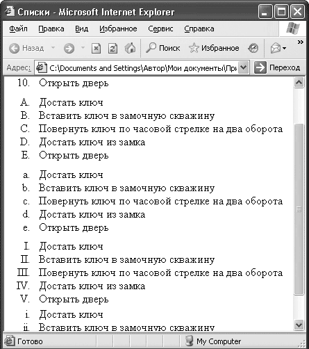 Рис. 2.8. Упорядоченные списки
В примере созданы списки с различными типами нумерации, для списка с арабской нумерацией задан стартовый номер 6.
При создании упорядоченных списков на элемент LI можно возложить дополнительные функции. Как и в примере с маркированными списками, в элементе LI можно задать вид нумерации конкретного пункта с помощью атрибута type. Помимо этого, с помощью атрибута value можно задать номер, с которого будет продолжена нумерация списка.
В примере из листинга 2.9 представлен код для создания списка с разными типами нумерации и различным порядком следования элементов.
Листинг 2.9. Список с разными типами нумерации
<html>
<head>
<title>Списки</title>
<body>
<ol type="1" >
<li type="1" value="10">Закрой дверь</li>
<li>Сходи в магазин</li>
<li value="1">Открой дверь</li>
<li>Возьми деньги</li>
<li type="I">Иди налево</li>
<li type="I">Потом поверни направо</li>
<li>Увидишь магазин</li>
</ol>
</body>
</html>
Результат обработки листинга 2.9 представлен на рис. 2.9.
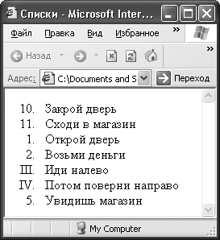 Рис. 2.9. Упорядоченный список с разной нумерацией
Как видно из примера, порядок нумерации и тип ее отображения отделены друг от друга, изменение типа чисел не влияет на числовое обозначение пунктов.
Бывает, что на сайте нужно создать список терминов или словарь. Это особенно актуально для сайтов узкой направленности. Для создания подобных конструкций служит список определений.
Список определений – это особый вид списка, который применяется для форматирования словарей или когда необходимо пояснять значения терминов.
Особенность списка определений следует из его функций: элемент такого списка всегда состоит из двух частей. Первая часть задает определяемое слово, а вторая – описание или расшифровку термина. При этом форматирование производится таким образом, что описание термина отображается с отступом от края экрана и, возможно, с пропуском строки от определения.
Для организации списков определений служит элемент DL – внутри него будут находиться определение и описание термина. У этого элемента нет атрибутов, кроме стандартных style и class, с помощью которых к данному определению можно подключить стили.
Чтобы внести информацию внутрь элемента DL, нужно задать элементы DT и DD. Первый используется для того, чтобы задать определение; у него нет никаких особенных атрибутов.
Второй применяется для описания термина из элемента DT. Особых атрибутов в нем также не предусмотрено. Чтобы изменить вид информации, представленной в этом элементе, нужно использовать таблицы стилей.
В листинге 2.10 представлен пример создания списков определений.
Листинг 2.10. Списки определений
<html>
<head>
<title>Списки</title>
<body>
<dl>
<dt>Земля</dt>
<dd>Третья планета Солнечной системы</dd>
<dt>Марс</dt>
<dd>Четвертая планета Солнечной системы</dd>
</dl>
</body>
</html>
Результат работы кода из листинга 2.10 показан на рис. 2.10.
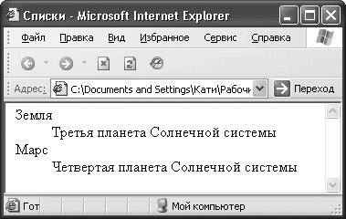 Рис. 2.10. Списки определений
На рис. 2.10 видны особенности форматирования списков определений; информацию в таком виде гораздо проще воспринимать.
Возможностей простых списков часто не хватает. Например, при создании оглавлений не обойтись без вложенных пунктов. Поэтому рассмотрим создание вложенных списков.
В HTML можно комбинировать и вкладывать друг в друга списки разных типов, но при этом нужно внимательно следить за тем, где заканчивается вложенный список, а где список верхнего уровня, иначе будут проблемы с отображением информации.
В листинге 2.11 представлен код для создания вложенного списка.
Листинг 2.11. Вложенные списки
<html>
<head>
<title>Списки</title>
<body>
<ol>
<li>
Открой дверь
<ul>
<li>Ключом</li>
<li>Отмычкой</li>
</ul>
</li>
<li>
Зайди в квартиру
<ul>
<li>Тихо шагая</li>
<li>Громко топая</li>
</ul>
</li>
<li>Ложись спать</li>
</ol>
</body>
</html>
На рис. 2.11 можно увидеть, как выглядит вложенный список.
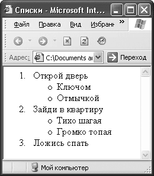 Рис. 2.11. Вложенный список
Видно, что элементы внутренних списков отступают от элементов списка более высокого уровня.
Мы разобрались с большей частью оформления текста, правда, осталось самое главное – то, на чем основан Интернет, – ссылки.
По своей сути Интернет – это текст и ссылки. Ссылки связывают документы, разбросанные по всему Интернету, в одну сеть. Ваш сайт может находиться на разных компьютерах, но для посетителя он будет казаться единым целым, и все это благодаря ссылкам.
Можно выделить два типа ссылок: внешние и внутренние. Первые связывают страницы в один сайт и помогают передвигаться по нему. Вторые помогают передвигаться в рамках одной страницы.
Внешними называют ссылки на объекты, расположенные вне текущей страницы. Это могут быть картинки, другие страницы сайта, мультимедийные приложения.
Основой внешних ссылок является URL-адрес объекта, на который вы собираетесь сослаться.
Для создания гиперссылок в HTML служит элемент A, который требует наличия закрывающего тега. Внутри элемента располагается текст, который будет выделен как ссылка. На самом деле, чтобы сообщить человеку, что в каком-то месте сайта у вас расположена ссылка, совершенно не обязательно писать прямым текстом адрес следующей страницы. Язык HTML дает возможность «замаскировать» адрес под текст ссылки. Получается, что у вас отдельно есть текст ссылки, который должен внятно описывать, что пользователь увидит, перейдя по ней, и отдельно находится адрес страницы, на которую будет сделан переход при щелчке кнопкой мыши на ссылке. Между тегами <A> и </A> располагается именно текст ссылки.
Адрес документа для перехода записывается в элементе A в качестве значения атрибута href. Таким образом, перемещение по сайту становится удобным, легким и прозрачным для пользователя. Ему абсолютно все равно, где находится документ, на который указывает ссылка, он видит только текст описания.
В листинге 2.12 представлен пример создания ссылки на HTML-страницу и рисунок.
Листинг 2.12. Создание ссылок
<html>
<head>
<title>Ссылки</title>
<body>
<a href="aboutme.html">Обо мне</a><br />
<a href="myfoto.jpg">Мое фото</a>
</body>
</html>
Пример отображения ссылок в браузере показан на рис. 2.12.
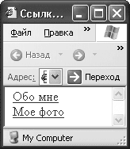 Рис. 2.12. Ссылки
Текст ссылки отображается подчеркнутым, а указатель мыши меняет вид при наведении на ссылку.
Когда посетитель сайта щелкнет кнопкой мыши на ссылке, он перейдет на страницу, которая указана в качестве адреса.
Что же делать, если нужно организовать быстрое перемещение в рамках одной страницы? Здесь тоже помогут ссылки.
Внутренние ссылки организуют переходы внутри одного HTML-документа. Они применяются, когда на одной странице много текста. Для простоты навигации можно создать ссылки, при щелчке кнопкой мыши на которых пользователь автоматически перейдет к нужной части документа.
Чтобы создать такую ссылку, сначала нужно определить место, к которому ссылка приводит. Это делается с помощью атрибута name элемента A. Необходимый кусок текста заключается в элемент A. Хотя совершенно не обязательно помещать туда текст, можно просто установить теги этого элемента в месте, к которому браузер должен переходить при щелчке кнопкой мыши на ссылке.
В качестве значения атрибута name можно взять любое имя, желательно, чтобы оно характеризовало текущее место, так вам самим будет проще пользоваться метками.
Затем нужно создать ссылку на эту метку. Ссылка на внутреннюю метку создается так же, как и ссылка на внешний документ, только вместо URL-адреса желаемой страницы надо ввести адрес метки в виде #met1. При этом metl – имя вашей метки.
Теперь при щелчке кнопкой мыши на ссылке браузер автоматически перейдет к месту, указанному меткой.
В листинге 2.13 показан пример создания внутренних ссылок.
Листинг 2.13. Внутренние ссылки
<html>
<head>
<title>Ссылки</title>
<body>
<a name="met2">Это метка для перехода 2</a><br />
<a href="#met1">Щелкните кнопкой мыши для перехода к метке 1</a><br />
<a href="#met2">Щелкните кнопкой мыши для перехода к метке 2</a><br />
<a name="met1">Это метка для перехода 1</a>
</body>
</html>
Представление внутренних ссылок в браузере показано на рис. 2.13.
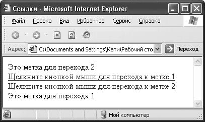 Рис. 2.13. Внутренние ссылки
Как видно, внутренние ссылки при отображении ничем не отличаются от внешних, а текст, отмеченный как метка, никак не выделяется.
Внутренние ссылки по своему синтаксису такие же, как и внешние, поэтому атрибуты элемента A применимы для обоих типов.
Все немногочисленные атрибуты элемента A можно применять при создании как внутренних, так и внешних ссылок, их действие в зависимости от этого не меняется.
У элемента A есть два вспомогательных атрибута. Первый – target – указывает на то, в каком окне должен открываться документ, отображающийся при выборе ссылки.
Следующие значения атрибута target указывают, что страница загружается:
• _blanc – в новое окно браузера;
• _parent – во фрейм-родитель;
• _self – в текущее окно;
• _top – в полное окно браузера.
Этот атрибут очень полезен, потому что иногда бывает удобно открыть ссылку в новом окне. Например, когда ссылка уводит на другой сайт, а вы не хотите, чтобы пользователь забыл о вашем. Открытие страницы в новом окне – гарантия того, что пользователь снова взглянет на вашу страницу.
Вторым вспомогательным атрибутом является title, он позволяет создать всплывающую подсказку для вашей ссылки, что бывает очень удобно и дает пользователю дополнительную информацию о том, что его ждет под ссылкой. Значение атрибута – текст всплывающей подсказки.
В листинге 2.14 представлен пример создания ссылок с рассмотренными выше атрибутами.
Листинг 2.14. Ссылки с дополнительными атрибутами
<html>
<head>
<title>Ссылки</title>
<body>
<a href="aboutme.html" target="_blank" title="Перейдя по ссылке, вы сможете узнать обо мне">Обо мне</a>
</body>
</html>
На рис. 2.14 показан пример отображения ссылки со всплывающей подсказкой.
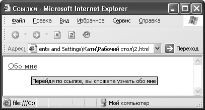 Рис. 2.14. Ссылки с дополнительными атрибутами
Видно, что всплывающая подсказка может помочь посетителю страницы.
Помимо этого, любой тип ссылки можно реализовать в виде изображения, то есть новая страница будет открываться при щелчке кнопкой мыши на рисунке. Можно, например, создать миниатюрные копии фотографий, при щелчке кнопкой мыши на которых будет открываться фото большего размера.
Для создания ссылки-изображения достаточно поместить рисунок внутри элемента A.
В листинге 2.15 показан пример создания ссылки-изображения.
Листинг 2.15. Ссылки-изображения
<html>
<head>
<title>Ссылки</title>
<body>
<a href="mypetfoto.html" target="_blank" title="Пройдя по ссылке, вы сможете увидеть фото моего зверя"><img src="mypetfotomini.jpg" /></a>
</body>
</html>
На рис. 2.15 показано, как браузер отображает ссылки-изображения.
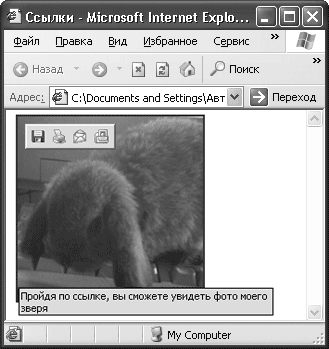 Рис. 2.15. Ссылка-изображение
Вокруг рисунка создается рамка, которая помогает посетителю понять, что перед ним не просто изображение, а ссылка.
Теперь вы можете создать ссылку любого вида на любой объект. Следите за тем, чтобы ссылки имели понятные названия, соответствующие содержанию документов, расположенных за ними, тогда посетители сайта будут вашими постоянными гостями.
Теперь рассмотрим, как можно влиять на внешний вид текста на странице.
Для чего форматировать текст? Странный вопрос, ведь при создании сайта хочется, чтобы он был выдержан в одном стиле, а цвет и вид текста, принятые по умолчанию, не отвечают стилистике большинства сайтов. Поэтому приходится форматировать текст самостоятельно, благо HTML предоставляет для этого огромные возможности.
Есть много элементов для форматирования текста, и все они делятся на две группы: логические и физические. Друг от друга группы отличаются принципиально.
Логические элементы сообщают браузеру о том, какой тип информации в них содержится, например важный текст или цитата. Браузер сам решает, как отобразить такой текст. Конечно, есть принятые стандарты для отображения определенных элементов, но в таких элементах главное – смысл. По сути они разбивают документ на логические части и при этом не обязывают браузер отображать текст, расположенный внутри элемента, каким-либо конкретным образом.
Физические элементы просто говорят браузеру, как должен выглядеть тот или иной блок текста, не уточняя никак смысл и значимость его содержимого. Другими словами, такой элемент заставляет браузер нарисовать букву красной, полужирной или курсивом, не уточняя, почему буква должна выглядеть именно так.
В некотором роде действие на внешний вид текста у многих элементов одинаково: для выделения текста полужирным шрифтом, например, можно использовать как логические, так и физические элементы.
Начнем рассмотрение способов форматирования текста с использования логических элементов.
Логические элементы для форматирования
Как уже говорилось, логические элементы для форматирования определяют не внешний вид текста, а его тип, и в зависимости от которого браузер применяет тот или иной вид внешнего форматирования. Все элементы, рассматриваемые ниже, являются контейнерами и требуют наличия закрывающего тега.
Некоторые из этих элементов могут вообще не изменять отображение текста, поэтому при их рассмотрении будем делать упор на то, как они определяют значение текста, а не на то, как они его форматируют.
Элемент ABBR
Элемент ABBR определяет текст как аббревиатуру. С помощью атрибута title можно задать всплывающую подсказку с расшифровкой аббревиатуры. При этом поисковые роботы индексируют именно полный вариант расшифровки, определенный в атрибуте title.
Пример:
<abbr title="Научно-исследовательский институт">НИИ</abbr>
Элемент ACRONYM
Элемент ACRONYM указывает, что текст является акронимом.
Примечание
Акронимы – это некие устоявшиеся сокращения, например СНГ, США и т. п.
Атрибут title позволяет задать расшифровку акронима. Пример:
<acronym>СНГ</acronym>
Элемент CITE
Элемент CITE отмечает небольшую цитату или сноску, взятую из другого источника. Такой текст обычно отображается курсивом.
Пример:
<cite>Здесь указан источник информации</cite>
Элемент CODE
Этот элемент указывает на программный код, который может содержать, например, переменные, функции, небольшие куски программы. Такой текст обычно выводится моноширинным шрифтом.
Пример:
Зададим функцию <code> func(int a, char b);</code>
Элемент DEL
Элемент DEL помечает текст как удаленный и может использоваться при внесении изменений в документы. У этого элемента есть два атрибута: cite должен содержать URL документа, в котором описаны причины удаления фрагмента, а datetime – дату и время удаления фрагмента в формате ГГГГ-ММ-ДДTчч: мм: ccTZD (аббревиатура от Time Zone region with Daylight Saving Time – регион часового пояса с летним временем). Браузеры такой текст отображают как зачеркнутый.
Пример:
<del cite="whydel.html" datetime="2007-10-06T10:11:45+3.00"> Неактуальный фрагмент</del>
Элемент DFN
Этот элемент выделяет текст как определение. Элемент можно использовать, если новый термин встречается в тексте впервые и тут же дается его определение. Браузер отображает такой текст курсивом.
Пример:
<dfn>Определение</dfn>-описание
Элемент EM
Элемент EM выделяет важные фрагменты текста. Браузер отображает такой текст курсивом.
Пример:
<em>Важно</em>
Элемент INS
Элемент INS отмечает текст как вставку и применяется для выделения изменений, вносимых в документ. У этого элемента есть два атрибута: cite должен содержать URL документа, в котором описаны причины добавления фрагмента, а datetime должен содержать дату и время добавления в формате ГГГГ-ММ-ДДTчч: мм: ссTZD. Браузеры отображают такой текст как подчеркнутый.
Пример:
<ins cite="whyadd.html" datetime="2007-10-06T10:11:45+3.00">Новый фрагмент</ins>
Элемент KBD
Элементом KBD помечают текст, вводимый пользователем с клавиатуры. Браузеры отображают такой текст моноширинным шрифтом.
Пример:
Введите слово <kbd>дом</kbd>
Элемент Q
Этот элемент обозначает текст как цитату и применяется для добавления коротких высказываний в текст. Обычно отображается как курсив, но некоторые браузеры берут в кавычки текст, отмеченный этим элементом.
Пример:
Цитата: <q>Как сказал поэт</q>
Элемент SAMP
Элемент SAMP определяет текст как пример и обычно используется для выделения результатов работы программы. Браузер выделяет этот текст моноширинным шрифтом.
Пример:
<samp>Образец</samp>
Элемент STRONG
Элемент STRONG предназначен для постановки акцента на тексте. Браузеры выделяют такой текст полужирным шрифтом.
Пример:
<strong>Очень важный фрагмент</strong>
Элемент VAR
Этот элемент применяется для выделения переменных из программ. Браузер отмечает такой текст курсивом.
Пример:
Введите переменную <var>X</var>
В листинге 2.16 показан код страницы с различным форматированием текста.
Листинг 2.16. Логическое форматирование текста
<html>
<head>
<title>Логические элементы для форматирования</title>
<body>
<abbr title="Научно-исследовательский институт">НИИ</abbr><br />
2.6. Форматирование текста
<acronym>СНГ</acronym><br />
<cite>Здесь указан источник информации</cite><br />
Зададим функцию <code>func(int a, char b);</code><br />
<del cite="whydel.html" datetime="2007-10-06T10:11:45+3.00">Неактуальный фрагмент</del><br />
<dfn>Определение</dfn>-описание<br />
<em>Важно</em><br />
<ins cite="whyadd.html" datetime="2007-10-06T10:11:45+3.00">Новый фрагмент</ins><br />
Введите слово <kbd>дом</kbd><br />
Цитата: <q>Как сказал поэт</q><br />
<samp>Образец</samp></br>
<strong>Очень важный фрагмент</strong><br />
Введите переменную <var>X</var><br />
</body>
</html>
Результат обработки браузером кода из листинга 2.16 показан на рис. 2.16.
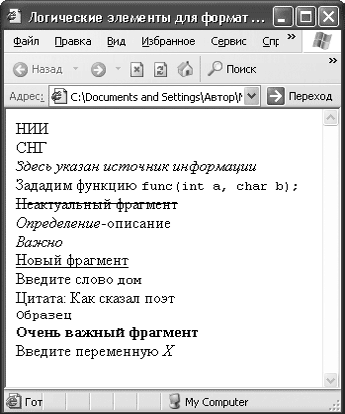 Рис. 2.16. Логическое форматирование текста
На рис. 2.16 видно, что не все логические элементы для форматирования изменяют вид текста, потому что предназначены не для этого. Различные браузеры могут по-разному выводить различные элементы, поэтому перед тем как выложить сайт в Интернете, проверьте его вид в различных программах.
Физические элементы для форматирования
Физические элементы для форматирования сообщают браузеру, как должен выглядеть текст, расположенный внутри элемента.
Элемент B
Элемент B задает полужирное написание шрифта.
Пример:
<b>Полужирный шрифт</b>
Элемент I
Элемент I отображает выделенный текст курсивом.
Пример:
<i>Курсив</i>
Элемент TT
Этот элемент задает моноширинное написание текста.
Пример:
<tt>Моноширинный шрифт</tt>
Элемент U
Элемент U отображает текст подчеркнутым шрифтом.
Пример:
<u>Подчеркнутый</u>
Элемент S
Элемент S зачеркивает текст горизонтальной линией.
Пример:
<s>Зачеркнутый</s>
Элемент STRIKE
Этот элемент также зачеркивает текст горизонтальной линией.
Пример:
<strike>Снова зачеркнутый</strike>
Элемент BIG
Элемент BIG отображает текст, расположенный внутри, шрифтом большего размера, чем остальной текст. Если быть точнее, то размер шрифта увеличивается на единицу.
Примечание
В языке HTML размеры шрифта измеряются в условных единицах от одного до семи. Размером по умолчанию принят третий размер.
При вложении элементов размер шрифта будет увеличиваться на единицу каждый раз.
Пример:
Шрифт <big>побольше <big>Еще больше</big></big>
Элемент SMALL
Элемент SMALL отображает выделенный текст шрифтом на единицу меньшего размера относительно окружающего текста. При вложении элементов шрифт будет уменьшаться на единицу с каждым вложением.
Пример:
Шрифт <small>поменьше</small>
Элемент SUB
Этот элемент задает подстрочное написание символов, то есть текст располагается ниже уровня базовой строки и становится меньшего размера. Удобно при вводе формул.
Пример:
<sub>Подстрочный</sub> шрифт
Элемент SUP
Элемент SUP задает надстрочное написание символов, то есть текст располагается выше базовой линии и становится меньшего размера. Этот элемент используют при написании формул.
Пример:
<sup>Надстрочный</sup> шрифт
Элемент SPAN
Элемент SPAN позволяет выделить часть текста и определить для нее особые параметры отображения с помощью таблиц стилей. Он применяется для выделения небольших областей текста.
Пример:
<span style="background-color:#00FFFF">Текст с фоном</span>
В листинге 2.17 представлен код страницы с различным форматированием текста.
Листинг 2.17. Физическое форматирование
<html>
<head>
<title>Элементы физического форматирования</title>
<body>
<b>Полужирный шрифт</b><br />
<i>Курсив</i><br />
<tt>Моноширинный шрифт</tt><br />
<u>Подчеркнутый</u><br />
<s>Зачеркнутый</s><br />
<strike>Снова зачеркнутый</strike><br />
Шрифт <big>побольше <big>Еще больше</big></big><br />
Шрифт <small>поменьше</small><br />
<sub>Подстрочный</sub> шрифт<br />
<sup>Надстрочный</sup> шрифт<br />
<span style="background-color:#00FFFF">Текст с фоном</span>
</body>
</html>
Результат обработки браузером кода из листинга 2.17 представлен на рис. 2.17.
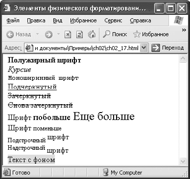 Рис. 2.17. Физическое форматирование
На рис. 2.17 видно, что любой физический элемент форматирования изменяет вид текста, потому что именно это является его функцией.
Как видно из описания, зачастую действие логических и физических элементов дублируется. В принципе, рекомендуется использовать логические элементы форматирования, так как они определяют суть фрагмента текста.
В табл. 2.1 кратко описаны аналоги рассмотренных физических элементов среди логических элементов и показано, какие элементы являются взаимозаменяемыми.
Таблица 2.1. Элементы форматирования текста
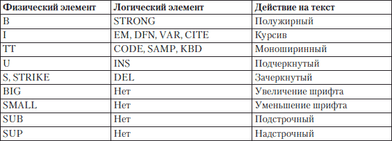
Как видно из таблицы, для многих физических элементов форматирования можно найти логические аналоги, которые намного лучше опишут смысловую нагрузку выделенного текста.
Все рассмотренные выше элементы применимы для форматирования небольших блоков текста. Дальше мы рассмотрим элементы, которые можно применять для изменения внешнего вида крупных текстовых блоков.
Элементы для форматирования больших блоков текста
Элементы, которые мы рассмотрим в этом подразделе, позволяют форматировать большие блоки текста. Они определяют параметры отображения и расположения текста, заключенного в их блок.
Начнем рассмотрение с элемента, напрямую отвечающего за параметры шрифта.
Элемент FONT
Элемент FONT задает параметры шрифта для текста. Хотя для форматирования предпочтительнее использовать таблицы стилей, некоторые простые документы допускают и такое определение параметров текста.
Параметры текста задаются с помощью атрибутов элемента FONT. Можно определить шрифт, размер и цвет текста, расположенного внутри него.
За шрифт отвечает атрибут face, значением которого должно быть название шрифта. Однако название должно быть знакомо компьютеру пользователя, иначе будет применен шрифт по умолчанию. Для решения проблемы несоответствия или отсутствия шрифтов можно задать несколько допустимых типов, введя их через запятую в качестве значения атрибута face.
За размер шрифта отвечает атрибут size. Значение задается в относительных величинах, то есть 2 или 6. По умолчанию используется размер 3. При этом можно задать размер шрифта относительно остального текста. Для этого нужно сначала указать +, если необходимо, чтобы размер шрифта на данном участке был больше, чем основной текст, или —, если требуется обратное форматирование. После знака надо указать количество пунктов, на которое текст должен быть больше или меньше.
За цвет шрифта отвечает атрибут color, значением которого должно быть либо ключевое слово, обозначающее имя цвета, либо код цвета в формате #RRGGBB.
Совет
Код цвета можно посмотреть в любом графическом редакторе.
В листинге 2.18 показан пример кода для определения параметров текста с помощью элемента FONT.
Листинг 2.18. Использование элемента FONT
<html>
<head>
<title>Элемент FONT</title>
<body>
<font color="#FF0000" face="Verdana, Arial, Helvetica, sans-serif" size="+2">
Текст красного цвета с размером +2
</font><br />
<font color="#FF00FF" face="Verdana, Arial, Helvetica, sans-serif" size="-4">
Текст фиолетового цвета с размером –4
</font><br />
</body>
</html>
Результат вывода на экран кода из листинга 2.18 показан на рис. 2.18.
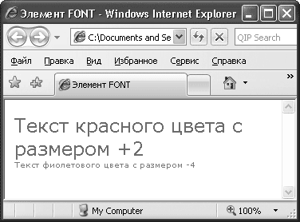 Рис. 2.18. Использование элемента FONT
В примере задан список похожих шрифтов. Браузер будет просматривать список по порядку и выведет текст тем шрифтом, который найдет первым. В качестве последнего варианта указан не шрифт, а семейство шрифтов Sans Serif. Если браузер не найдет ни один из перечисленных шрифтов, он возьмет известный ему шрифт из этого семейства.
Как задать параметры шрифта, мы разобрались. Однако этот метод не лучший. Как уже говорилось, удобнее задавать форматирование с помощью таблиц стилей.
Элемент DIV
Элемент DIV служит для выделения больших блоков текста под форматирование с помощью таблиц стилей. Иными словами, вы помещаете необходимый блок текста между тегами элемента DIV и либо задаете ему параметры в атрибуте style, либо подключаете класс из таблицы стилей с помощью атрибута class.
Единственное, что вы можете сделать с помощью HTML, – выровнять текст в блоке с помощью атрибута align и создать всплывающую подсказку для блока с помощью атрибута title.
В листинге 2.19 представлен пример кода для выделения текста с помощью элемента DIV.
Листинг 2.19. Использование элемента DIV
<html>
<head>
<title>Элемент DIV</title>
<body>
<div style="cursor:crosshair" align="center">
Текст внутри этого элемента выровнен по центру, а с помощью стилей задается вид указателя мыши при наведении на этот блок.
</div>
</body>
</html>
Результат обработки кода из листинга 2.19 показан на рис. 2.19.
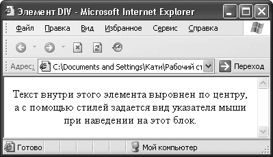 Рис. 2.19. Использование элемента DIV
Теперь рассмотрим ситуацию, когда у вас уже есть отформатированный нужным образом текст и вы не хотите ничего менять.
Элемент PRE
Этот элемент служит для ввода текста без форматирования, то есть с сохранением всех пробелов и переносов строк.
Примечание
Обычно в HTML несколько пробелов подряд воспринимаются как один пробел.
При использовании этого элемента текст выводится моноширинным шрифтом. Элемент PRE часто используют для вывода кодов программ. Внутри этого элемента можно применять большинство элементов форматирования текста.
В листинге 2.20 приведен пример использования элемента PRE.
Листинг 2.20. Использование элемента PRE
<html>
<head>
<title>Элемент PRE</title>
<body>
<pre>
Здесь
можно
расположить
код
программы
</pre>
</body>
</html>
На рис. 2.20 показано, как текст, расположенный между тегами элемента PRE, выглядит в браузере.
 Рис. 2.20. Использование элемента PRE
Рис. 2.20. Использование элемента PRE
Далее рассмотрим элемент, предназначенный для форматирования больших объемов текста и отвечающий за цитаты.
Элемент BLOCKQUOTE
Элемент BLOCKQUOTE определяет выделенный текст как цитату и применяется для описания больших высказываний. Он задает для текста отступы сверху, снизу и слева. Внутри этого элемента могут присутствовать элементы форматирования текста.
В листинге 2.21 представлен пример выделения цитаты с помощью элемента BLOCKQUOTE.
Листинг 2.21. Ввод больших цитат
<html xmlns="http://www.w3.org/1999/xhtml">
<head>
<meta http-equiv="Content-Type" content="text/html; charset=windows-1251" />
<title>Элемент BLOCKQUOTE</title>
<body>
<blockquote>
Здесь можно расположить важную и большую цитату.
</blockquote>
</body>
</html>
На рис. 2.21 показано, как в браузере выглядит текст из элемента BLOCKQUOTE.
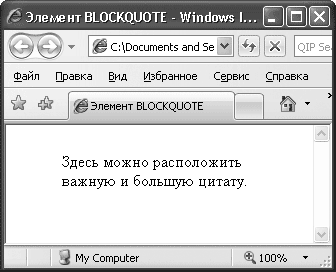 Рис. 2.21. Использование элемента BLOCKQUOTE
Мы рассмотрели, как действует каждый вариант форматирования текста отдельно, но HTML позволяет вкладывать элементы, при этом объединяя их действие.
Язык HTML позволяет вкладывать элементы форматирования друг в друга. При этом их действия суммируются. Если вложить в элемент B элемент I, то получится текст, написанный полужирным курсивом. При этом нужно следить за правильным закрытием элементов: тот, что открыт раньше, закрывается позже.
В листинге 2.22 показаны примеры правильного и неправильного вложения элементов.
Листинг 2.22. Вложение элементов
<html xmlns="http://www.w3.org/1999/xhtml">
<head>
<meta http-equiv="Content-Type" content="text/html; charset=windows-1251" />
<title>Вложение элементов</title>
<body>
<del><b><i>Это неправильное вложение элементов</b></i></del><br />
<ins><b><i>Это правильное вложение элементов</i></b></ins>
</body>
</html>
Неправильную запись некоторые браузеры могут отображать некорректно.
В данной главе были рассмотрены основные принципы форматирования текста с использованием возможностей HTML. Особенно подробно было рассказано об особенностях структурного форматирования документа и форматировании самого текста, были описаны особенности логического и физического форматирования текста, работа с большими блоками текста и вложением элементов.
Теперь внешний вид текста на вашем сайте полностью подвластен вам. Помните, что ни один символ не может быть написан напрямую в элементе BODY. Текст всегда должен быть включен в элемент, который определяет его назначение и внешний вид.
3.1. Что такое таблица
3.2. Создание тела таблицы
3.3. Ячейки таблицы
3.4. Граница таблицы
3.5. Ширина и высота таблицы и ячеек
3.6. Группировка строк и столбцов
3.7. Выравнивание таблицы и содержимого ячеек
3.8. Объединение ячеек таблицы
3.9. Установка фонового цвета или рисунка ячейки
3.10. Создание вложенных таблиц
В технической литературе и в различных документах таблицы используют, чтобы расположить информацию в простом и понятном виде. О том, как использовать таблицы в своих сайтах, вы узнаете в этой главе.
В языке HTML таблицы используются в двух случаях: для представления числовых данных, разбитых по строкам и столбцам, или как средство форматирования веб-страниц, задания взаимного расположения элементов страницы. Ячейки таблицы могут содержать любые HTML-элементы, например заголовки, списки, абзацы, фигуры, графику, а также элементы форм. Фактически весь сайт расположен в большой сложной таблице (рис. 3.1).
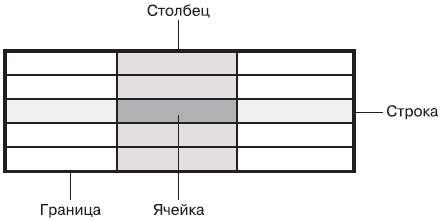 Рис. 3.1. Пример использования HTML-таблицы при создании сайта
Примечание
Как и в прошлой главе, напоминаю, что оформление таблицы согласно требованиям языка XHTML должно выполняться средствами CSS. Все элементы и атрибуты форматирования признаны в спецификации языка HTML 4. 01 нежелательными.
Таблица состоит из ячеек, образующихся при пересечении строк и столбцов (рис. 3.2).
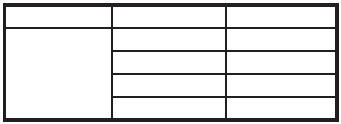 Рис. 3.2. Пример стандартной таблицы
Рассмотрим элементы таблицы.
• Ячейка – это основной элемент таблицы. Она формируется пересечением строки и столбца.
• Строка – это прямая линия ячеек, расположенных слева направо.
• Столбец – это набор ячеек, расположенных одна над другой сверху вниз.
• Граница – это линия, которая окружает каждую ячейку и таблицу в целом.
В стандартной таблице каждая строка и каждый столбец содержат одинаковое количество ячеек. Однако таблицы могут очень сильно отличаться от предложенной стандартной. В таблице, изображенной на рис. 3.3, одна ячейка объединяет в себе четыре строки, а другая – три столбца.
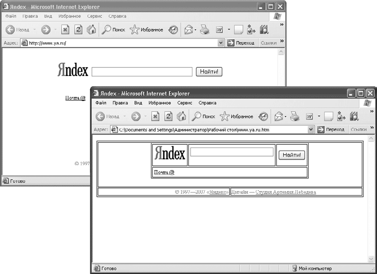 Рис. 3.3. Пример нестандартной таблицы
Кстати, при создании таблицы лучше начать с ее планирования, потом будет легче верстать, так как вы наглядно будете видеть вашу таблицу и будет меньше вероятности ошибиться. Для этого вам следует выбрать оптимальный способ создания таблицы.
Рассмотрим некоторые примеры планирования таблиц.
• Нарисуйте таблицу на бумаге.
• Нарисуйте таблицу в Paint, Adobe Photoshop или в AutoCAD.
• Используйте HTML-совместимые текстовые редакторы, например Microsoft Word. Создайте таблицу и сохраните в редакторе HTML-страницы. Затем откройте страницу в окне браузера и скопируйте исходный текст в ваш HTML-редактор для дальнейшей корректировки и форматирования.
В построении HTML-таблиц нет ничего сложного. Описание таблиц должно располагаться внутри элемента BODY. Документ может содержать произвольное количество таблиц, допускается вложение таблиц друг в друга. Каждая таблица должна начинаться тегом <TABLE> и завершаться тегом </TABLE>:
<body>
<table>
</table>
</body>
Все прочие элементы таблицы должны быть вложенными в элемент TABLE. Наименование таблицы определяется тегами <CAPTION>. </CAPTION>. Выравнивание наименования задается с помощью атрибута align, который может принимать значения top (над таблицей) и bottom (под таблицей). По умолчанию наименование располагается над таблицей.
Теперь приступим к созданию ячеек таблицы. Для начала нужно создать необходимое количество строк, затем поделить строки столбцами на ячейки. Количество пар тегов <TR> и </TR> определяет количество горизонтальных строк в вашей таблице. Встречаются случаи, когда строка создана только с помощью тега <TR> без использования закрывающего тега </TR>. Количество пар тегов <TD> и </TD>, расположенных между тегами соответствующей строки, определяет количество ячеек (столбцов) в пределах строки. Встречаются случаи использования элемента TD без закрывающего тега.
<body>
<table>
<tr><td> </td><td> </td></tr>
<tr><td> </td><td> </td></tr>
</table>
</body>
Чтобы созданная ячейка являлась заголовком в таблице (текст выравнивается по центру и выделяется полужирным шрифтом), нужно воспользоваться парой тегов <TH> и </TH>. Встречаются случаи использования элемента TH без закрывающего тега. Элементы TH, TR и TD без закрывающих тегов корректно интерпретируются только в последней версии браузера Internet Explorer.
Теперь вы можете создать простую HTML-таблицу. Рассмотрим пример таблицы, которая состоит из трех строк и трех столбцов, причем ячейки первой строки будут заголовками соответствующих столбцов (листинг 3.1). На рис. 3.4 показано, как данная таблица выглядит в окне браузера.
Листинг 3.1. Код простой HTML-таблицы, которая состоит из трех столбцов и трех строк
<html>
<head>
<title>Простая HTML-таблица</title>
</head>
<body>
<table>
<caption>Это заголовок таблицы</caption>
<tr><th>Заголовок 1</th><th>Заголовок 2</th><th>Заголовок 3</th></tr>
<tr><td>Ячейка 2x1 </td><td>Ячейка 2x2 </td><td>Ячейка 2x3 </td></tr>
<tr><td>Ячейка 3x1 </td><td>Ячейка 3x2 </td><td>Ячейка 3x3 </td></tr>
</table>
</body>
</html>
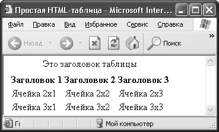
Рис. 3.4. Пример простой HTML-таблицы
Совет
Все браузеры игнорируют любые символы пробела и табуляции и перевод строки вне тегов HTML-документа, поэтому описывать таблицу можно так, чтобы она легко читалась. Я считаю, что использование предложенного варианта описания таблицы позволит вам не упустить ни одного тега HTML-документа.
В рассмотренном выше примере в таблице и ее ячейках отсутствовали границы. Граница таблицы создается с помощью атрибута border элемента TABLE. Ширина границы таблицы указывается в пикселах. Если атрибут border не указан, то таблица выводится без видимой рамки. Благодаря атрибуту bordercolor можно задать цвет границы таблицы, указав код цвета. Добавим к уже созданной таблице черную границу шириной четыре пиксела.
Для этого изменим строку
<table>
на
<table border="4" bordercolor="#000000">
Граница таблицы (и другие элементы сайта) в окне каждого браузера отображается по-разному. На рис. 3.5 показано, как созданная таблица отображается в окне стандартного браузера Internet Explorer, а на рис. 3.6 эта же таблица изображена в браузере Opera. Опытные веб-программисты стараются просматривать созданную страницу под разными типами браузеров, чтобы все везде выглядело одинаково. У каждого браузера свои капризы, так что создать сайт, чтобы все выглядело одинаково в любом браузере, – задача непростая.
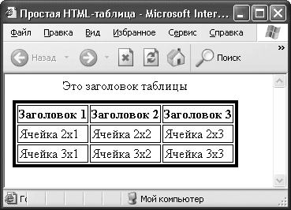 Рис. 3.5. Отображение таблицы в окне Internet Explorer
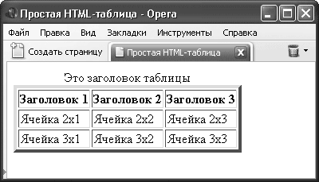 Рис. 3.6. Отображение таблицы в окне Opera
Из рис. 3.5 видно, что между границами ячеек и внешней границей таблицы существует свободное пространство. Это пространство легко регулируется атрибутами cellspacing и cellpadding элемента TABLE. Атрибут cellspacing определяет расстояние между ячейками таблицы в пикселах, а атрибут cellpadding – между содержимым ячейки и ее границей.
В листинге 3.2 приведен пример таблицы, у которой расстояние между содержимым ячеек и границей равно 10 пикселов, а расстояние между ячейками равно нулю (рис. 3.7).
Листинг 3.2. Код HTML-таблицы с нестандартными расстояниями между ячейками и границей
<html>
<head>
<title>Простая HTML-таблица</title>
</head>
<body>
<table border="4" bordercolor="#000000" cellspacing="0" cellpadding="10">
<caption>Это заголовок таблицы</caption>
<tr><th>Заголовок 1</th><th>Заголовок 2</th><th>Заголовок 3</th></tr>
<tr><td>Ячейка 2x1 </td><td>Ячейка 2x2 </td><td>Ячейка 2x3 </td></tr>
<tr><td>Ячейка 3x1 </td><td>Ячейка 3x2 </td><td>Ячейка 3x3 </td></tr>
</table>
</body>
</html>
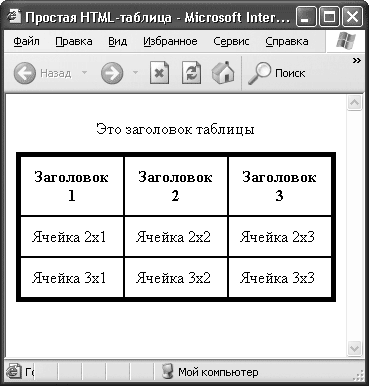 Рис. 3.7. Таблица с нестандартными расстояниями между ячейками и границей
Получив некоторые навыки работы с границей таблицы, вы можете приступать к управлению ее отображением. С помощью атрибута frame будем управлять отображением внешней границы, а с помощью атрибута rules – внутренними границами таблицы. Атрибут frame может принимать следующие значения:
• above – отображается только верхняя линия границы;
• below – видна только нижняя линия границы;
• box – отображается внешняя граница таблицы;
• border – видна внешняя граница таблицы (аналогично box);
• hsides – отображаются только горизонтальные линии границы;
• lhs – видна только левая линия границы;
• rhs – отображается только правая линия границы;
• void – внешняя граница таблицы не отображается;
• vsides – видны только вертикальные линии границы.
Frame и rules – это новые атрибуты в HTML, они поддерживаются только последними версиями браузеров.
Атрибут rules может принимать следующие значения:
• all – граница отображается вокруг каждой ячейки;
• cols – видны только вертикальные границы между столбцами;
• groups – отображаются только вертикальные границы между группами столбцов или горизонтальные границы между группами строк;
• none – границы между ячейками не отображаются;
• rows – видны только горизонтальные границы между группами строк.
В листинге 3.3 приведен пример использования атрибутов frame и rules.
Листинг 3.3. Код HTML-таблицы с частичным отображением линий внешней и внутренней границ
<html>
<head>
<title>Простая HTML-таблица</title>
<head>
<body>
<table border="4" bordercolor="#000000" cellspacing="0" cellpadding= "10" frame= Hsides rules= Cols>
<caption>Склонение слова пиксел по падежам </caption>
<tr><th>Падеж</th><th>Пример </th></tr>
<tr><td>Им. </td><td>пиксел </td></tr>
<tr><td>Рд. </td><td>пиксела </td></tr>
<tr><td>Дт. </td><td>пикселу </td></tr>
<tr><td>Вт. </td><td>пиксел </td></tr>
<tr><td>Тв. </td><td>пикселом </td></tr>
<tr><td>Пр. </td><td>о пикселе </td></tr>
</table>
</body>
</html>
На рис. 3.8 показано, как рассмотренная таблица будет отображаться в окне браузера. У таблицы есть горизонтальные линии внешней и вертикальные линии внутренней границы, так как именно такие значения мы задали соответствующим атрибутам rules и frame.
 Рис. 3.8.HTML-таблица с частичным отображением линий внешней и внутренней границ
Рис. 3.8.HTML-таблица с частичным отображением линий внешней и внутренней границ
3.5. Ширина и высота таблицы и ячеек
Ширина таблицы задается атрибутом width элемента TABLE. Значение можно задавать как в абсолютных единицах (width="2 5 0"), так и в относительных (width="80 %"). Например, задав значение ширины в 600 пикселов, можно быть уверенным, что таблица поместится в окне браузера при любом разрешении монитора. Если же ширина задается в процентах, то они высчитываются от ширины окна браузера или от ширины ячейки другой таблицы, в которую вставлена данная. То же самое можно делать и с высотой таблицы с помощью атрибута height.
Все вышесказанное относится и к ячейкам таблицы. Просто необходимо использовать элементы с соответствующими атрибутами. При этом вовсе не обязательно задавать размеры каждой отдельной ячейки. При изменении ширины или высоты ячейки все соседние ячейки в пределах столбца будут отображаться с учетом нового значения.
При задании чрезмерно малых величин ширины и высоты таблицы браузер определяет минимальные значения, которые позволяют нормально отображать данные.
На рис. 3.9 и 3.10 изображены две таблицы одинакового содержания, но разной ширины и высоты.
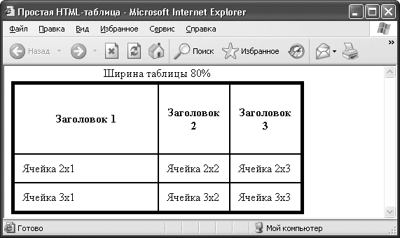 Рис. 3.9. Ширина таблицы равна 80 % от ширины окна браузера
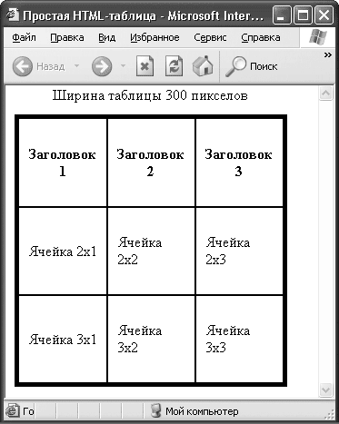 Рис. 3.10. Ширина и высота таблицы равна 300 пикселам
Ширина первой таблицы равна 80 % от размера окна браузера, а первый столбец этой таблицы занимает 50 % от всей ширины таблицы. Высота первой строки равна 100 пикселам.
Вторая таблица квадратная, ширина стороны равна 300 пикселам. В листингах 3.4 и 3.5 приведены коды страниц, содержащих описанные таблицы.
Листинг 3.4. Код таблицы шириной 80 % от ширины окна браузера
<html>
<head>
<title>Простая HTML-таблица</title>
</head>
<body>
<table border="4" bordercolor="#000000" cellspacing="0" cellpadding="10" width="80%">
<caption>Ширина таблицы 80%</caption>
<tr><th height="100" width="50%">Заголовок 1</th>
<th>Заголовок 2</th><th>Заголовок 3</th></tr>
<tr><td>Ячейка 2x1 </td><td>Ячейка 2x2 </td><td>Ячейка 2x3 </td></tr>
<tr><td>Ячейка 3x1 </td><td>Ячейка 3x2 </td><td>Ячейка 3x3 </td></tr>
</table>
</body>
</html>
Листинг 3.5. Код таблицы шириной 300 пикселов
<html>
<head>
<title>Простая HTML-таблица</title>
</head>
<body>
<table border="4" bordercolor="#000000" cellspacing="0" cellpadding="10" width="300" height="300">
<caption>Ширина таблицы 300 пикселов</caption>
<tr><th>Заголовок 1</th><th>Заголовок 2</th><th>Заголовок 3</th></tr>
<tr><td>Ячейка 2x1 </td><td>Ячейка 2x2 </td><td>Ячейка 2x3 </td></tr>
<tr><td>Ячейка 3x1 </td><td>Ячейка 3x2 </td><td>Ячейка 3x3 </td></tr>
</table>
</body>
</html>
3.6. Группировка строк и столбцов
В стандарте HTML 4 появились новые элементы для группировки (не объединения, а именно группировки) строк и столбцов таблицы в группы с общими свойствами.
Для группировки столбцов таблицы служат элементы COLGROUP и COL. Элемент COLGROUP создает структурную группу столбцов, которая выделяет множество логически однородных ячеек. Так, одна структурная группа может охватывать ячейки заголовков столбцов, а другая – ячейки, содержащие данные. Элемент COL предназначен для формирования неструктурных групп столбцов, которые делят таблицу на разделы, не имеющие отношения к структуре. Это удобно в том случае, когда не все столбцы содержат информацию одного типа.
Полезным атрибутом элементов COLGROUP и COL является атрибут span со значением n. Атрибут распространяет свойства, заданные этими элементами на n столбцов в группе.
<table>
<col span=2 style="color:red">
<tr><td> Этот текст будет красным цветом </td>
<td> И этот текст будет красным цветом </td>
<td> А этот текст будет черным цветом </td></tr>
</table>
Для группировки строк таблицы служат элементы THEAD, TBODY и TFOOT. Их использование существенно облегчает компоновку и форматирование таблиц.
Для создания группы заголовков для столбцов таблицы используют элемент THEAD. Его допускается использовать в пределах таблицы только один раз. Для создания одной или нескольких групп строк таблицы, содержащих основные данные, применяется элемент TBODY. Элемент TFOOT позволяет создать группу строк для представления информации о суммах или итогах в нижней части таблицы. Этот элемент допускается использовать в пределах таблицы только один раз. Вовсе не обязательно создавать группы строк таблицы всех трех типов.
<thead>
<tr><th> </th><th> </th><th> </th></tr>
</thead>
</tbody>
<tr><td> </td><td> </td><td> </td></tr>
<tr><td> </td><td> </td><td> </td></tr>
<tbody>
Предположим, нужно создать таблицу, в которой внутренние линии не отображаются, а отображается только линия, отделяющая заголовки столбцов от основного текста (тела таблицы). Чтобы создать такую таблицу, необходимо выполнить следующее.
1. Сгруппировать строки нужным образом.
2. Указать видимость границы между группами строк.
3.7. Выравнивание таблицы и содержимого ячеек
Для выравнивания элементов таблиц по горизонтали и вертикали в элементах TABLE, TR, TH и TD используют атрибуты align и valign.
Атрибут align применяется ко всем элементам таблицы и определяет общее горизонтальное выравнивание:
• <table align=left/right/center> – таблицы на странице по левому краю/правому краю/по центру;
• <tr align=left/right/center> – элементов строки по левому краю/правому краю/по центру;
• <th align=left/right/center> – заголовка таблицы по левому краю/правому краю/по центру (по умолчанию по центру);
• <td align=left/right/center/char> – данных в ячейке по левому краю/ правому краю/по центру/по заданному символу (по умолчанию по левому краю).
Атрибут valign также применяется ко всем элементам таблицы и определяет общее вертикальное выравнивание:
• <table valign=bottom/middle/top> – элементов таблицы внизу/по центру/вверху (по умолчанию по центру);
• <tr valign=bottom/middle/top> – элементов строки внизу/по центру/ вверху;
• <th valign=bottom/middle/top> – заголовка таблицы внизу/по центру/ вверху;
• <td valign=bottom/middle/top> – данных в ячейке внизу/по центру/ вверху.
В листинге 3.6 приведен пример использования в различных комбинациях описанных выше атрибутов форматирования таблицы и содержимого ячеек (рис. 3.11).
Листинг 3.6. Пример использования выравнивания таблицы и содержимого ячеек
<html>
<head>
<title>Простая HTML-таблица</title>
</head>
<body>
<table border="4" bordercolor="#000000" cellspacing="0" cellpadding="0"width= "400" height="150" align=center>
<caption>Наименование товара</caption>
<tr><th>Товар </th><th>Код</th><th>Количество</th><th>Цена </th></tr>
<tr valign=bottom align=center>
<td>Клей</td><td>028</td><td>190 шт </td><td>12,2 руб</td></tr>
<tr valign=bottom align=center>
<td>Скотч</td><td>058</td><td>120 шт </td><td>4,6 руб </td></tr>
<tr valign=bottom align=center>
<td>Ластик</td><td>986</td><td>100 шт </td><td>2,3 руб </td></tr>
</table>
</body>
</html>
 Рис. 3.11. Пример использования выравнивания таблицы и содержимого ячеек
Рис. 3.11. Пример использования выравнивания таблицы и содержимого ячеек
3.8. Объединение ячеек таблицы
На практике встречается большое количество таблиц, в которых одна ячейка объединяет в себе несколько ячеек по высоте и ширине (см. рис. 3.2). В HTML ячейки объединяют с помощью атрибутов colspan и rowspan. Атрибут colspan определяет количество ячеек, на которые простирается данная ячейка по горизонтали, а rowspan – по вертикали.
На рис. 3.12 изображена таблица с объединенными ячейками. Заголовок таблицы находится в ячейке, объединяющей все три ячейки строки. Таблица содержит еще две ячейки, каждая из которых объединяет две ячейки по вертикали. Код такой таблицы приведен в листинге 3.7.
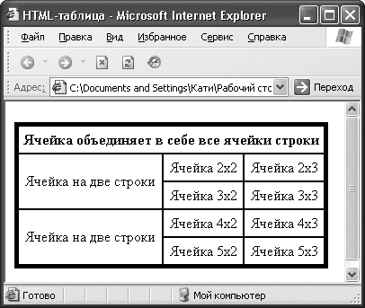 Рис. 3.12. Таблица с объединенными ячейками
Листинг 3.7. Пример использования атрибутов объединения ячеек
<html>
<head>
<title>HTML-таблица</title>
<head>
<body>
<table border="4" bordercolor="#000000" cellspacing="0" cellpadding="5" >
<tr align=center><th colspan=3>Ячейка объединяет в себе все ячейки строки </th></tr>
<tr align=center><td rowspan=2>Ячейка на две строки </td>
<td>Ячейка 2х2</td><td>Ячейка 2х3</td></tr>
<tr align=center><td>Ячейка 3х2</td><td>Ячейка 3х3</td></tr>
<tr align=center><td rowspan=2>Ячейка на две строки</td>
<td>Ячейка 4х2</td><td>Ячейка 4х3</td></tr>
<tr align=center><td>Ячейка 5х2</td><td>Ячейка 5х3</td></tr>
</table>
</body>
</html>
3.9. Установка фонового цвета или рисунка ячейки
В HTML возможны различные варианты установки фонового цвета или рисунка. Благодаря атрибуту bgcolor можно изменять цвет содержимого ячейки, строки, группы столбцов, группы строк, таблицы целиком.
Используя конструкцию <td bgcolor= "#000000">, чередующуюся с конструкцией <td></td> (со стандартным фоновым цветом ячеек), можно создать таблицу, изображенную на рис. 3.13.
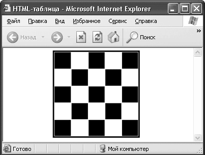 Рис. 3.13. Пример использования атрибута bgcolor
С помощью атрибута background можно задать графический фон ячейки или таблицы целиком, указав путь к изображению. Например, <td background="img\fon.gif">.
Если размеры изображения превышают габариты ячейки или таблицы, для которых оно предназначено, браузер обрезает его таким образом, чтобы оно уместилось в пределах соответствующего объекта.
3.10. Создание вложенных таблиц
Существуют такие моменты, когда необходимо создать ячейки, границы которых не должны совпадать (рис. 3.14). Здесь атрибут colspan бессилен.
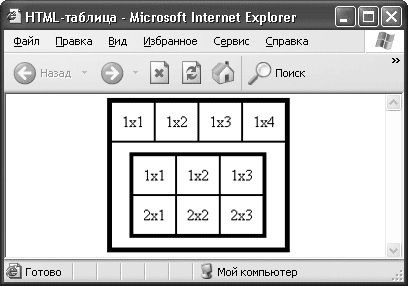 Рис. 3.14. Сложная HTML-таблица
Команды, управляющие созданием и отображением таблиц, допускают вложение одного элемента TABLE внутрь другого, поэтому в ячейке можно создать новую таблицу с независимой структурой.
В листинге 3.8 приведен код таблицы, изображенной на рис. 3.13. Здесь применяется метод вложения одной таблицы в другую. Внешняя таблица состоит из двух строк. Первая строка содержит четыре ячейки, вторая – таблицу со своей независимой структурой. Внутренняя таблица, в свою очередь, содержит две строки, каждая из которых содержит по три ячейки.
Листинг 3.8. Пример таблицы, которая содержит еще одну таблицу
<html>
<head>
<title>HTML-таблица</title>
<head>
<body>
<table border="4" bordercolor="#000000" cellspacing="0" cellpadding="10">
<caption>Создание вложенных таблиц</caption>
<tr><td> 1x1</td><td>1x2</td><td>1x3</td><td>1x4</td></tr>
<tr><td colspan=4>
<table border="3" bordercolor="#000000" cellspacing="0" cellpadding="10">
<tr><td> 1x1</td><td>1x2</td><td>1x3</td></tr>
<tr><td> 2x1</td><td>2x2</td><td>2x3</td></tr>
</table>
</td>
</tr>
</table>
</body>
</html>
В заключение следует отметить, что таблицы являются важнейшей частью любой веб-страницы. Для контроля над элементами веб-узла фирмы Microsoft (www.microsoft.com) использованы таблицы.
Умелое обращение с таблицами позволяет жестко связать текстовые блоки документа с графикой и другими объектами. Использование таблиц позволит странице загружаться быстрее, но большие рисунки следует разбить на несколько маленьких. Чтобы не нарушить целостность всего рисунка, его отдельные части следует расположить в ячейках таблицы таким образом, чтобы они образовали целый рисунок.
Использование таблиц также позволит вам разделить всю HTML-страницу на функциональные части: заголовок страницы, место для рекламы, панель инструментов и т. д. Подобное разделение страницы даст возможность быстро создать свой индивидуальный «остов» сайта, который в последующем можно использовать для создания других страниц.
Глава 4
Добавление изображений и мультимедиа
4.1. Встраивание изображений
4.2. Добавление мультимедиа
При создании сайта невозможно обойтись без использования активных объектов вроде Flash-анимации, видео или картинок. Так мы можем улучшить вид сайта, сделать его ярче, интереснее и удобнее для посетителей. Однако неграмотное использование мультимедиа на странице способно погубить самые лучшие и интересные сайты. Поэтому в данной главе, помимо технических аспектов встраивания мультимедиа, будут освещены эстетические аспекты и моменты, связанные с удобством для посетителя.
Начнем с добавления изображения, потому что это самый простой для добавления и самый распространенный мультимедийный элемент, встречающийся в Интернете. У изображений много плюсов: статичность, небольшие размеры файлов (относительно других типов мультимедиа-содержимого), широкая область применения. Сейчас трудно представить сайт без картинок. Дизайнеры научились использовать их очень разумно. Современные скорости соединений позволяют размещать большое количество графики на странице. Однако нужно знать меру, сайт не должен выглядеть пустым, но в то же время не стоит и злоупотреблять рисунками. Грамотное и уместное использование изображений поможет сделать сайт красивым, интересным и удобным. Бывают ситуации, когда без большого количества картинок невозможно обойтись, например при создании галереи, фотоальбома, каталога. В таких случаях умелое распределение файлов по сайту и удобная навигация помогут сэкономить время загрузки и трафик. Получается, что при создании сайта без изображений вам не обойтись, этот объект является самым простым, удобным и распространенным.
Для встраивания изображений в HTML-документ применяется элемент IMG. Он имеет обязательный атрибут src, значением которого должен быть адрес встраиваемого изображения.
Простейший вариант записи для включения картинки: <IMG src=" image.jpg">. При такой записи размер картинки на экране будет соответствовать ее реальному размеру.
Примечание
Адрес изображения может быть указан либо полностью (например, когда картинка находится на другом сервере (http://www.mypage.ru/IMG/myfoto.jpg)), либо относительно местоположения вашего документа (например, если картинка находится во вложенной папке (IMG/myfoto.jpg)). Во втором случае для указания директории, находящейся выше в иерархии каталогов, используются символы../ (переход из папки DOC, находящейся в одном каталоге с папкой IMG, будет выглядеть так:. /IMG/myfoto.jpg).
В листинге 4.1 продемонстрирован простейший вариант встраивания картинки.
Листинг 4.1. Простое встраивание изображения в документ
<html>
<head>
<title>Встраивание изображения</title>
</head>
<body>
<img src="image.jpg"/>
</body>
</html>
На рис. 4.1 показан результат обработки браузером кода из листинга 4.1 – простое встраивание картинки, без редактирования.
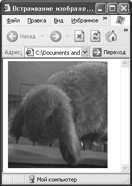 Рис. 4.1. Вставка изображения
Рисунок на странице отображается в реальном размере. Это простейший вариант вставки картинки, его можно использовать, когда нет необходимости ни в какой трансформации рисунка, например, если рисунок будет единственным элементом на странице.
Один рисунок на странице встречается нечасто, обычно на странице, помимо рисунка, присутствуют другие объекты, и большие размеры картинки становятся проблемой, но ничего страшного – размеры изображения можно легко подкорректировать.
Если необходимо значительно изменить размер изображения, то лучше использовать специальные программы, однако в небольших пределах допустимо использовать и атрибуты элемента IMG.
Чтобы редактировать размер картинки, используют атрибуты width и height. Их значения можно указывать в пикселах или процентах от размера окна (в этом случае после размера ставится знак %).
Примечание
При изменении размеров окна картинка, размер которой указан в процентах, тоже меняет размер.
Можно указать только один из атрибутов, и тогда второй будет вычисляться автоматически для сохранения пропорций рисунка.
Меняя размер картинки с помощью атрибутов элемента IMG, внимательно следите за изображением, есть вероятность того, что рисунок исказится. Сам браузер не обрабатывает картинки под новый размер, поэтому, если размер выставлен неаккуратно, из произведения искусства рисунок может превратиться во что-то непонятное (особенно если задать размер больше, чем в реальности). Искажение пропорций тоже не приводит к улучшению качества изображения, как видно на рис. 4.2.
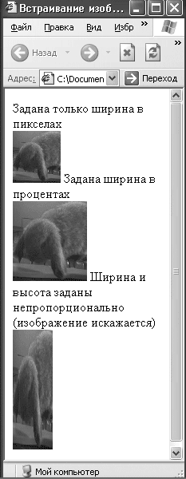 Рис. 4.2. Размеры изображения
В листинге 4.2 показан пример встраивания изображения с заданными размерами.
Листинг 4.2. Задание размеров изображения
<html>
<head>
<title>Встраивание изображения</title>
</head>
<body>
Задана только ширина в пикселах <br/>
<img src="image.jpg" width="60"/>
Задана ширина в процентах<br/>
<img src="image.jpg" width="50%"/>
Ширина и высота заданы непропорционально (изображение искажается)<br/>
<img src="image.jpg" width="50" height="150"/>
</body>
</html>IMG_0628.jpg
В листинге 4.2 для первого изображения задана только ширина, высота вычисляется автоматически. Для второго изображения размер определен в процентах, а для третьего установлены неверные размеры, которые искажают картинку.
Результат работы листинга 4.2 показан на рис. 4.2.
На рис. 4.2 видно, что размеры все-таки имеют значение, особенно для картинок, поэтому следить за их изменением нужно очень внимательно. Если нет необходимости в изменении размеров, то задавайте размеры картинки, соответствующие реальности. Это позволит избежать искажений и ускорит обработку картинки браузером.
Совет
Если вам нужно значительно изменить размер картинки, то используйте специальные программы для работы с изображениями. Они смогут проделать эту операцию, минимально исказив картинку или вовсе без искажений.
Помимо размеров картинки, на внешний вид сайта влияет расположение изображений.
Расположение картинки влияет на общий вид страницы, на восприятие текста вокруг нее. Удобство чтения текста, находящегося около картинки, сильно зависит от их взаимного расположения.
Есть множество вариантов выравнивания картинок относительно текста, и за все отвечает атрибут align элемента IMG. Он позволяет выравнивать изображения с правой, с левой стороны окна или относительно элементов строки.
У атрибута align много значений, которые позволяют установить картинку именно так, как надо, и именно там, где надо.
Горизонтальное выравнивание:
• left – по левому краю;
• right – по правому краю.
Вертикальное выравнивание:
• top – выравнивание верхней границы картинки по самому высокому элементу строки;
• texttop – выравнивание верхней границы картинки по самому высокому элементу текста;
• middle – середина изображения выравнивается по базовой линии строки;
• absmiddle – середина изображения выравнивается по середине строки;
• baseline – выравнивание нижней границы изображения по базовой линии строки;
• bottom – аналогично baseline;
• absbottom – нижняя граница изображения выравнивается по нижней границе текущей строки.
Примечание
Базовая линия строки – это линия, на которой расположены все элементы. При этом некоторые буквы выступают за эту линию, например буква «р». Ее палочка заканчивается ниже базовой линии и будет самым нижним элементом строки. Заглавные буквы, наоборот, выступают сверху этой линии.
В листинге 4.3 приведены примеры выравнивания картинок относительно текста по вертикали.
Листинг 4.3. Выравнивание картинки по вертикали
<html>
<head>
<title>Встраивание изображения</title>
</head>
<body>
<img src="image.jpg" width="70" align="top"/>Выравнивание по самому верхнему элементу в строке<br/>
<img src="image.jpg" width="70" align="absbottom"/>Нижняя граница изображения выравнивается по нижней границе текущей строки<br/>
<img src="image.jpg" width="70" align="bottom"/>Нижняя граница изображения выравнивается по базовой линии строки<br/>
<img src="image.jpg" width="70" align="middle"/>Середина изображения выравнивается по базовой линии строки<br/> </body>
</html>
На рис. 4.3 показан результат обработки кода из листинга 4.3, где можно увидеть разницу между выравниваниями по базовой линии и по границам строки.
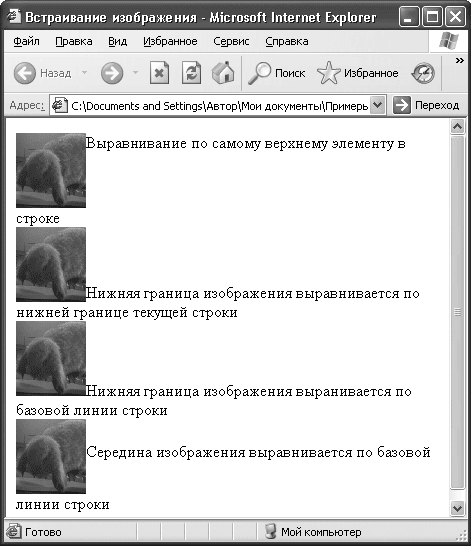 Рис. 4.3. Выравнивание по вертикали
С выравниваниями по горизонтали все проще. Код для выравнивания по горизонтали приведен в листинге 4.4.
Листинг 4.4. Выравнивание картинки по горизонтали
<html>
<head>
<title>Встраивание изображения</title>
</head>
<body>
<img src="image.jpg" width="100" align="right" />
Кролики – потрясающие животные, особенно декоративные. Многие люди заводят их дома вместо кошек или собак, потому что они менее прихотливы. Кролики – чистоплотные животные, и их хозяева не испытывают проблем с воспитанием. Кормить этих зверюшек просто: овощи, сено и немного специального корма. Следите, чтобы клетка была чистой и в ней всегда лежали свежие опилки. Если вы рискуете выпускать зверя на прогулки по дому, то следите за проводами. Кролик может решить, что провода – это сено, и перегрызть их. </html>
На рис. 4.4 виден результат обработки браузером кода из листинга 4.4, текст обтекает картинку слева.
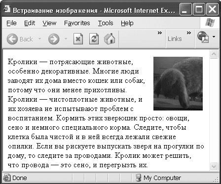 Рис. 4.4. Выравнивание по горизонтали
При горизонтальном выравнивании текст плотно обтекает картинку и для внешнего вида страницы важным параметром становится расстояние между текстом и изображением.
Расстояние между текстом и изображением
Расстояние между текстом и картинкой влияет на читаемость текста. Очень маленькое или очень большое расстояние может оказаться неудобным.
Чтобы отодвинуть текст от картинки, используют атрибуты hspace и vspace элемента IMG. Они задают расстояние в пикселах между изображением и текстом по горизонтали и вертикали.
В листинге 4.5 указано очень большое расстояние по вертикали (100 пикселов) и очень маленькое по горизонтали (1 пиксел). На рис. 4.5 видно, что такое сочетание расстояний неудобно для чтения.
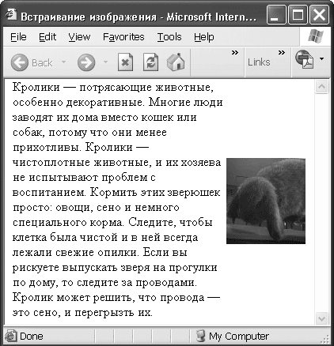 Рис. 4.5. Задано расстояние от картинки до текста
Листинг 4.5. Задание расстояния от текста до изображения
<html>
<head>
<title>Встраивание изображения</title>
</head>
<body>
<img src="image.jpg" width="100" align="right" vspace="100" hspace="1"/>Кролики – потрясающие животные, особенно декоративные. Многие люди заводят их дома вместо кошек или собак, потому что они менее прихотливы. Кролики – чистоплотные животные, и их хозяева не испытывают проблем с воспитанием. Кормить этих зверюшек просто: овощи, сено и немного специального корма. Следите, чтобы клетка была чистой и в ней всегда лежали свежие опилки. Если вы рискуете выпускать зверя на прогулки по дому, то следите за проводами. Кролик может решить, что провода – это сено, и перегрызть их. <br/> </body>
</html>
Кроме регулировки расстояния до текста, есть еще один способ отделить картинку от остального содержимого страницы.
Отделить изображение от текста можно, поступив с ним, как с обычной картиной: поставив в рамку. Это делается с помощью атрибута border, значение которого указывает ширину рамки в пикселах.
В листинге 4.6 задана рамка шириной 10 пикселов, а слева и справа указаны разумные расстояния по 50 пикселов. На рис. 4.6 видно, что с такими параметрами изображение выглядит намного лучше, чем в предыдущем примере, и текст гораздо проще воспринимать.
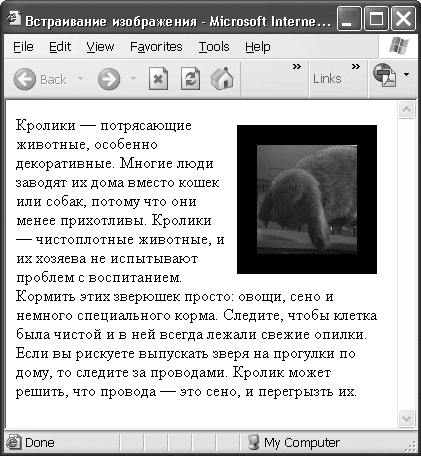 Рис. 4.6. Рамка
Листинг 4.6. Задание рамки вокруг изображения
<html>
<head>
<title>Встраивание изображения</title>
</head>
<body>
<img src="image.jpg" width="100" align="right" vspace="10" hspace="10" border="20"/>Кролики – потрясающие животные, особенно декоративные. Многие люди заводят их дома вместо кошек или собак, потому что они менее прихотливы. Кролики – чистоплотные животные, и их хозяева не испытывают проблем с воспитанием. Кормить этих зверюшек просто: овощи, сено и немного специального корма. Следите, чтобы клетка была чистой и в ней всегда лежали свежие опилки. Если вы рискуете выпускать зверя на прогулки по дому, то следите за проводами. Кролик может решить, что провода – это сено, и перегрызть их.
</body>
</html>
С атрибутами, отвечающими за оформление картинки, все понятно, но существуют еще атрибуты, напрямую не влияющие на отображение картинки, но тем не менее сильно облегчающие жизнь посетителям сайта.
Иногда получается так, что картинка не загружается, например, когда пользователь отключил загрузку картинок или сервер, на котором она расположена, «упал». Если размеры картинки указаны в явном виде, то посетитель имеет о них представление, однако зачем ему этот размер, если он не может даже предположить, что изображено на рисунке.
В таких ситуациях может помочь атрибут alt. Его значение – текст, который будет показан при наведении указателя мыши на картинку или если картинка не загрузится. Это даст возможность пользователям, которые не видят картинок, понять, хотят ли они увидеть их вообще, а тем, кто видит, поможет понять, что именно они видят.
В листинге 4.7 приведен пример кода для задания альтернативного текста.
Листинг 4.7. Альтернативный текст
<html>
<head>
<title>Встраивание изображения</title>
</head>
<body>
<img src="image.jpg" width="100" align="right" vspace="50" hspace="50" alt="Фотография карликового вислоухого кролика"/>
</body>
</html>
На рис. 4.7 показан результат обработки кода из листинга 4.7 при условии, что изображение загрузилось.
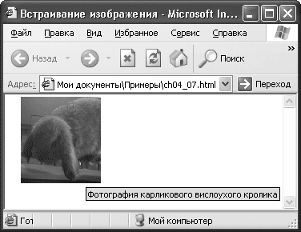 Рис. 4.7. Альтернативный текст при загруженном рисунке
Альтернативный текст всплывает при наведении указателя мыши на картинку.
На рис. 4.8 показан результат обработки кода из того же листинга, но в случае, когда изображение не загрузилось.
Рис. 4.8. Альтернативный текст при незагруженном рисунке
Вместо картинки виден поясняющий текст, и при наведении указателя мыши на рисунок появляется всплывающая подсказка.
Если изображений на сайте много и их загрузка занимает немало времени, можно не испытывать терпение посетителя, а дать ему примерное представление о том, что он увидит.
Это делается с помощью атрибута lowsrc, где в качестве значения используется адрес изображения худшего качества, но того же содержания, что и основная картинка. При первом проходе браузером страницы это изображение будет быстро загружено, и у пользователя появится представление о том, что он увидит дальше. При последующем проходе страницы браузер загрузит главное изображение хорошего качества.
Совет
Для получения изображения худшего качества нужно использовать специальные программы для работы с изображениями. В них возможно уменьшение размеров изображения за счет уменьшения количества цветов, например.
В листинге 4.8 приведен пример кода, который задает изображение с предварительной загрузкой.
Листинг 4.8. Изображение с предварительной загрузкой
<html>
<head>
<title>Встраивание изображения</title>
</head>
<body>
<img src="image.jpg" width="100" vspace="10" hspace="10" lowsrc= "lowimage.jpg">
</body>
</html>
На рис. 4.9 показан результат предварительной загрузки изображения, на следующем проходе браузер загрузит изображение нормального качества.
Рис. 4.9. Предварительное изображение
Альтернативный текст и предварительная загрузка изображения делают сайт удобнее.
Используя картинки, можно повысить функциональность сайта, создавая изображения-ссылки.
Ссылки – главное в Интернете, и, естественно, существует возможность использовать в качестве ссылок изображения.
Для создания ссылки из картинки достаточно поместить элемент IMG внутри тегов <А> и </A>, при этом вокруг картинки появится рамка, которой можно управлять с помощью атрибута border. Синие рамки вокруг рисунков выглядят некрасиво, зато с ними сразу понятно, что можно щелкнуть кнопкой мыши на этой картинке и перейти на другую страницу.
В листинге 4.9 приведены примеры создания ссылок-изображений с различными размерами рамок.
Листинг 4.9. Создание изображений-ссылок
<html>
<head>
<title>Встраивание изображения</title>
</head>
<body>
Ссылка без задания атрибута border (рамка ставится по умолчанию)<br/>
<a href="image.jpg"><img src="image.jpg" width="100" vspace="10" hspace="10" alt="Фотография карликового вислоухого кролика" /> </a><br />
Ссылка без рамки<br/>
<a href="image.jpg"><img src="image.jpg" width="100" vspace="10" hspace="10" alt="Фотография карликового вислоухого кролика " border="0" /> </a><br />
Рамка в 10 пикселов<br/>
<a href="image.jpg"><img src="image.jpg" width="100" vspace="10" hspace="10" alt="Фотография карликового вислоухого кролика " border="10" /> </a><br/>
</body>
</html>
Результат обработки кода из листинга 4.9 можно увидеть на рис. 4.10.
Рис. 4.10. Изображения-ссылки
Возможность делать из рисунков ссылки позволяет удобнее размещать информацию на сайтах, где необходимо использовать много изображений.
При создании галерей используют возможность менять размер картинок и таким образом создают галереи, в которых пользователь сначала видит миниатюрные варианты изображений, а затем может выбрать необходимую ему картинку для загрузки. Посетитель щелкает кнопкой мыши на картинке, и она открывается в полный размер на новой странице.
Примером может служить поиск картинок в поисковых системах. На основе галерей можно делать фотоальбомы и выставки картин, эта технология часто используется при создании каталогов.
Теперь вы можете добавлять любые изображения на сайт и делать это наилучшим образом. Вы знаете, как корректировать внешний вид картинки, ее размеры и расположение на странице, а также как добавлять элементы, позволяющие посетителю просматривать ваши рисунки с комфортом. Теперь вы умеете создавать галереи изображений, а надо сказать, что картинки чаще всего структурируют именно в галереи. В общем, создание сайта с графическим наполнением – больше не проблема для вас.
Что же делать, если, помимо коллекции картинок, у вас есть коллекция аудио или видео и вы хотите поделиться с посетителями сайта? В этом случае вы можете поместить на страницу ссылку на тот мультимедиа-файл, который желаете сделать доступным, или просто встроить его на страницу вместе с проигрывателем.
Ссылки на мультимедийные файлы
Ссылки на файлы мультимедиа ничем не отличаются от ссылок на другие страницы. Как видно из листинга 4.10, при щелчке кнопкой мыши на такой ссылке браузер откроет музыкальный файл в новом окне. Для удобства посетителей советую использовать атрибут title элемента A, он работает так же, как альтернативный текст для картинок. При наведении указателя мыши на ссылку всплывает строка с более подробной информацией о файле (рис. 4.11).
Рис. 4.11. Ссылки на мультимедиа
В листинге 4.10 приведен пример кода для создания ссылок на мультимедиа.
Листинг 4.10. Ссылки на мультимедиа
<html>
<head>
<title>Ссылки на мультимедиа</title>
</head>
<body>
<a href="test.mp3" title="Test">Test audio</a>
</body>
</html>
Указание ссылки на объект – самый простой вариант для реализации доступа к нему. Плюсом этого способа являются маленький объем страницы и простота использования. С помощью ссылки посетитель может сохранить файл у себя на компьютере, а затем проиграть его наиболее подходящим для себя проигрывателем. Для удобства посетителей сайта можно указывать размер мультимедийного файла.
Однако этот способ не помогает, если нужно, чтобы пользователь посмотрел Flash-файл. С их помощью обычно «раскрашивают» сам сайт; яркие и динамичные Flash-объекты могут нести смысловую нагрузку и быть неотъемлемой частью страницы, поэтому их удобнее встраивать сразу в страницу, а не передавать по ссылке. Хотя, если ваш Flash-мультик – самостоятельное произведение, можно использовать способ со ссылками.
Итак, есть способ загрузить наш мультимедиа-файл на страницу сразу, при этом надо учитывать, с помощью какой программы будет воспроизводиться файл, потому что загружать динамический объект нужно вместе с проигрывателем. Для обращения к этой программе необходимо использовать элемент OBJECT. Он позволит управлять многими параметрами проигрывателя. В предыдущих версиях языка для встраивания объектов использовали элементы EMBED и APPLET, но сейчас рекомендуют к использованию именно OBJECT. Этому элементу необходим закрывающий тег </OBJECT>.
Примечание
В последнем стандарте принято использование элемента OBJECT, но, чтобы избежать проблем у пользователей, которые работают со старыми версиями браузеров, не распознающими этот элемент, рекомендуется внутрь его встраивать элемент EMBED.
Этот элемент предоставляет большие возможности для управления встраиваемым объектом. Внутри тегов <OBJECT> и </OBJECT> могут находиться элементы PARAM, которые не требуют наличия закрывающего тега. С их помощью программам воспроизведения передают параметры, указывающие вид проигрывателя, тип воспроизведения и множество других параметров. С точки зрения управления содержимым и внешним видом сайта это очень удобно. Создатель сайта получает гибкий инструмент для управления воспроизведением мультимедиа на странице. В результате сайт выглядит и работает именно так, как хочется вам.
Начнем рассмотрение встраивания объектов с основного элемента, необходимого для этого, – элемента OBJECT.
Этот элемент позволяет встроить на сайт любой мультимедиа-объект вместе с программой обработки данного объекта. В этом разделе мы рассмотрим вопросы встраивания музыки, видео и Flash-анимации. Однако возможности элемента OBJECT намного шире: в принципе, вы можете встраивать в страницу любое активное содержимое, главное, чтобы у пользователя была программа для обработки этого объекта.
Элемент OBJECT использует программы, находящиеся на компьютере посетителя, и с их помощью воспроизводит активное содержимое. Он может использовать программу проигрывания по умолчанию для конкретного типа файлов, если этот тип файлов знаком браузеру, или использовать конкретную указанную вами программу, если она есть на компьютере пользователя.
У этого элемента много атрибутов. Очевидно, что не все они являются обязательными, точнее, у этого элемента нет строго обязательных атрибутов. Однако среди них можно выделить наиболее важные, которые упростят и ускорят обработку вашего объекта браузером.
Атрибут classid указывает адрес программы, которая будет работать с объектом. В качестве значения этого атрибута можно указывать полный или относительный путь к файлу программы. Это не всегда удобно, потому что на разных компьютерах программы располагаются в разных местах, а на серверах обычно не бывает программ, необходимых для воспроизведения мультимедиа-файлов. Удобнее второй метод: использование идентификатора зарегистрированного ActiveX-приложения. В этом случае перед самим идентификатором должно стоять ключевое слово clsid, как в листинге 4.11. Чаще всего применяют именно второй вариант, потому что он универсален. Идентификаторы для различных приложений и активных объектов легко найти в Интернете.
Атрибут codetype должен принимать значение, содержащее MIME-тип объекта, который указан в атрибуте classid. Браузер использует эту информацию для подготовки ресурсов, необходимых для запуска файла.
Совет
MIME-тип (Multipurpose Internet Mail Extensions) – стандарт, используемый в Интернете, для указания типа объекта. Тип, соответствующий вашему объекту, можно посмотреть в реестре. Для этого в папке HKEY_CLASSES_ROOT нужно открыть папку с разрешением, соответствующим вашему объекту, и в строке Content Type будет указан MIME-тип объекта.
В листинге 4.11 показано применение атрибутов classid и codetype.
Листинг 4.11. Использование атрибутов classid и codetype
<html>
<head>
<title>Встраивание объектов</title>
</head>
<body>
<object classid="CLSID:22D6F312-B0F6-11D0-94AB-0080C74C7E95" codetype= "audio/mp3">
</object>
</body>
</html>
В примере указан идентификатор для Проигрывателя Windows Media, а тип – для проигрывания МР3-файла. При просмотре страницы вы увидите проигрыватель, готовый к запуску (рис. 4.12).
Рис. 4.12. Вставка Проигрывателя Windows Media
Атрибут data в качестве значения принимает адрес файла, который необходимо запустить с помощью проигрывателя. Правда, такой метод определения файла используется не всегда – иногда имя файла для запуска нужно передавать через элемент PARAM. Путь к файлу необходимо указывать относительно папки, заданной атрибутом codebase. Если значение этого атрибута не указано, то путь следует задать относительно текущего документа.
Атрибут type задает тип объекта, который указан в параметре data. Здесь нужно указывать MIME-тип объекта. Это позволит браузеру выбрать программу для воспроизведения файла. Если вы не укажете конкретную программу для воспроизведения, то браузер сам выберет приложение для воспроизведения файлов заданного типа. Значение атрибута type браузер использует, когда не указано значение атрибута codetype.
В листинге 4.12 приведен код, который запустит файл test. mp3 на проигрывание.
Листинг 4.12. Использование атрибутов data и type
<html>
<head>
<title>Встраивание объектов</title>
</head>
<body>
<object data="test.mp3" type="audio/mp3">
</object>
</body>
</html>
Если вам понадобилось встроить на страницу Java-апплет, используйте атрибут code и в качестве его значения укажите имя класса вашего Java-апплета. По сути этот атрибут используется вместо элемента APPLET.
В листинге 4.13 представлен пример встраивания апплета.
Листинг 4.13. Встраивание Java-апплетов
<html>
<head>
<meta http-equiv="Content-Type" content="text/html; charset=iso-8859-1" />
<title>Встраивание объектов</title>
</head>
<body>
<object code="clock.class"></object>
</body>
</html>
С атрибутом codebase вы встречались уже несколько раз, он указывает путь к папке, в которой хранятся файлы, используемые этим объектом. Пути ко всем файлам определяются в элементе OBJECT относительно папки, указанной в качестве значения этого атрибута.
Помимо атрибутов, отвечающих за основные функции объекта, нас интересуют атрибуты, позволяющие управлять видом объекта на странице. Именно такие атрибуты элемента OBJECT мы рассмотрим далее.
Для выравнивания объекта на странице служит атрибут align, его значения аналогичны значениям этого атрибута для элемента IMG, но я их повторю на всякий случай.
Горизонтальное выравнивание:
• left – по левому краю;
• right – по правому краю.
Вертикальное выравнивание:
• top – выравнивание верхней границы объекта по самому высокому элементу строки;
• texttop – выравнивание верхней границы объекта по самому высокому элементу текста;
• middle – середина объекта выравнивается по базовой линии строки;
• absmiddle – середина объекта выравнивается по середине строки;
• baseline – выравнивание нижней границы объекта по базовой линии строки;
• bottom – аналогично baseline;
• absbottom – нижняя граница объекта выравнивается по нижней границе текущей строки.
За размеры объекта отвечают атрибуты height и width, они устанавливают его высоту и ширину соответственно. Эти параметры задают размеры окна приложения, которое будет использовано для воспроизведения файла. Иначе говоря, если вы воспроизводите видеофайл, то заданные высота и ширина будут указывать не только размер экрана, в них будет включен еще и размер панели проигрывателя.
Как и для картинок, для объектов можно задавать расстояние до текста с помощью атрибутов hspace и vspace.
Благодаря атрибутам элемента OBJECT вы можете менять общие параметры вашего объекта, но есть еще один очень важный элемент, позволяющий задавать параметры самого приложения, в котором происходит воспроизведение.
Это главный элемент, предназначенный для управления проигрывателем. С его помощью можно управлять панелями проигрывателя, регулировать начальную громкость воспроизведения и другие параметры приложения; в общем, этот элемент позволяет гибко управлять программой, которая воспроизводит мультимедийное содержимое. Команды для каждой из программ обработчиков свои, и их легко можно найти в Интернете.
Элементов PARAM внутри элемента OBJECT может быть много, так как для каждого управляющего параметра нужен свой элемент.
Используют два основных атрибута элемента PARAM: name и value. Первый задает имя параметра приложения (переменной), а value – значение этого параметра.
Элемент PARAM дает неограниченные возможности для управления воспроизведением мультимедиа на вашей странице.
В примере из листинга 4.14 указан параметр AutoStart, в котором можно задать автоматическое начало воспроизведения файла, и параметр URL, в котором задается адрес файла.
Листинг 4.14. Использование элемента PARAM
<html>
<head>
<title>Встраивание объектов</title>
</head>
<body>
<object classid="CLSID:22D6F312-B0F6-11D0-94AB-0080C74C7E95" width="300" height="300" Type="audio/x-mpeg">
<param name="FileName " value="test.mp3"/>
<param name="AutoStart" value="false"/>
</object>
</body>
</html>
Теперь подробно рассмотрим встраивание основных типов файлов.
Для начала возьмем самую распространенную задачу – проигрывание фонового звука. Чтобы разобраться с ней, нужно немного отвлечься от элемента OBJECT, потому что есть способ встроить фоновый звук и без него. Создатели языка HTML предусмотрели для этого специальный элемент BGSOUND. Он должен располагаться в заголовке документа, его основные атрибуты – src (путь к звуковому файлу) и loop (количество повторных воспроизведений файла). Для управления звуком можно задавать параметр volume, который определяет громкость воспроизведения музыки. Пример установки фонового звука с помощью элемента BGSOUND приведен в листинге 4.15.
Листинг 4.15. Задание фонового звука с помощью элемента BGSOUND
<html>
<head>
<title>Встраивание объектов</title>
</head>
<body>
<bgsound src="test.mp3" loop="1" volume="5" />
</body>
</html>
В случае примера из листинга 4.15 музыка из файла test.mp3 будет проиграна один раз с пятой громкостью.
Есть и другой способ задать фоновую музыку, например ввести на сайт проигрыватель и задать ему нулевые размеры. Этот способ имеет смысл использовать, когда нужно реализовать нестандартное управление воспроизведением музыки на сайте. В таком случае это можно будет сделать через управляющие команды проигрывателя.
В листинге 4.16 приведен пример того, как задать фоновую музыку с использованием элемента OBJECT.
Листинг 4.16. Задание фоновой музыки с помощью элемента OBJECT
<html>
<head>
<title>Встраивание объектов</title>
</head>
<body>
<object classid="CLSID:22D6F312-B0F6-11D0-94AB-0080C74C7E95" width="0" height="0" type="audio/x-mpeg" >
<param name="FileName" value=" test.mp3" />
<param name="AutoStart" value="true" />
<param name="Volume" value="10" />
<param name="PlayCount" value="2" />
</object>
</body>
</html>
В листинге 4.16 используются параметры AutoStart и Volume, которые задают автоматическое начало воспроизведения и громкость звука соответственно, а сам файл для воспроизведения указывается с помощью параметра URL. Количество повторов определяет параметр PlayCount. При обработке кода из листинга 4.16 файл test.mp3 будет проигрываться сразу при открытии страницы с десятой громкостью два раза.
Примечание
В последних версиях браузеров, перед тем как запустить активное содержимое, запрашивается разрешение пользователя на запуск. Если использовать вариант с элементом BGSOUNG, то подобного запроса не будет, а сразу же начнется воспроизведение звука. При использовании второго варианта для запуска активного содержимого необходимо будет получить согласие пользователя.
С фоновым звуком все просто, но его явно недостаточно для создания полноценной мультимедийной галереи, чаще приходится встраивать на страницу музыку вместе с проигрывателем. В таком случае без элемента OBJECT не обойтись, и альтернатив здесь нет.
Начнем с того, что приведем проигрыватель к удобному для посетителя виду. При воспроизведении музыки пропадает необходимость в полном окне проигрывателя и поэтому графический дисплей можно «срезать». Это делается очень просто: нужно изменить высоту объекта, то есть просто опустить атрибут height элемента OBJECT, оставляя проигрыватель без высоты.
Код для такого отображения проигрывателя представлен в листинге 4.17.
Листинг 4.17. Неполное окно проигрывателя
<html>
<head>
<title>Встраивание объектов</title>
</head>
<body>
<object classid="CLSID:22D6F312-B0F6-11D0-94AB-0080C74C7E95" type="audio/x-mpeg">
<param name="FileName" value="test.mp3" />
<param name="AutoStart" value="1" />
</object>
</body>
</html>
Результат обработки браузером листинга представлен на рис. 4.13.
Рис. 4.13. Аудиопроигрыватель
В примере не заданы ни высота, ни ширина. В случае с проигрыванием музыки в этом нет необходимости.
Итак, у нас есть удобный для посетителя сайта проигрыватель. Единственное, что хотелось бы добавить в него, это возможность видеть название песни и имя исполнителя данной мелодии. Это очень просто сделать: нужно добавить строку параметров: <PARAM name="ShowDisplay" value="1"/>.
Результат добавления такой строки параметров показан на рис. 4.14.
Рис. 4.14. Аудиопроигрыватель с дополнительной информацией
Теперь у нас есть удобный и симпатичный проигрыватель музыкальных файлов.
Примечание
При использовании Проигрывателя Windows Media версии выше 6. 4 параметры могут отличаться. Например, вместо FileName используется параметр URL. Идентификатор clsid для Проигрывателя Windows Media версий выше 6. 4: 6BF52A52-394A-11D3-B153-00C04F79FAA6.
Итак, музыка встроена, но нам не терпится добавить туда еще немного возможностей, например проигрывание видео.
Сейчас встраивать видео на сайт можно без опасений – нынешних скоростей доступа в Интернет достаточно, чтобы у пользователей не было проблем с просмотром и скачиванием видео. Тем более что сейчас перемещение видеоархивов в сеть становится весьма популярным. Однако надо помнить, что файлы для потокового видео должны быть небольшими, а если вы хотите поделиться большим фильмом, то лучше выложить его для скачивания по ссылке.
Примечание
Потоковое видео – это видео, для просмотра которого пользователю нет необходимости дожидаться полной загрузки файла. Иными словами, пока одна часть файла скачивается, другая воспроизводится.
Итак, вы определили размер вашего файла и решили, что он подходит для потокового воспроизведения. Теперь нужно выбрать программу для воспроизведения.
В этой части мы будем рассматривать воспроизведение в Проигрывателе Windows Media, однако позже рассмотрим и другие проигрыватели.
Выбор проигрывателя зависит от типа файла, и хотя большинство проигрывателей может воспроизвести любой файл, иногда встречаются исключения. Возьмем для рассмотрения формат AVI как наиболее универсальный. MIME-тип такого файла – video/x-msvideo.
Управление проигрывателем осуществляется с помощью элемента PARAM. Как видно в листинге 4.18, с помощью параметров задаются имя файла для проигрывания, параметры панели проигрывателя. В примере реализован проигрыватель, который после загрузки сразу начинает проигрывание со звуком 20. Вообще не стоит разрешать видеопроигрывателю автоматический старт. Поскольку видео требует много трафика и загружает канал, то лучше решение о старте оставить на усмотрение пользователя.
Листинг 4.18. Встраивание видео
<html>
<head>
<title>Встраивание объекта</title>
</head>
<body>
<object classid="CLSID:22D6F312-B0F6-11D0-94AB-0080C74C7E95" width="300" height="300" type="video/avi">
<param name="Volume" value="20" />
<param name="URL" value="test.avi" />
<param name="AutoStart" value="1" />
</object>
</body>
</html>
Добавить панель с информацией о видео можно так же, как и с аудио, присоединив строку параметров <PARAM name="ShowDisplay" value="1" />.
Таких полезных параметров много, вы их увидите, когда будете знакомиться с возможностями различных проигрывателей.
Главное – помните, что на первом месте должно стоять удобство посетителя вашего сайта, и выбирать элементы проигрывателя нужно с этой точки зрения.
Помимо видео и аудио, есть еще один распространенный вид мультимедийного содержимого: Flash. Он используется на многих сайтах и, возможно, понадобится вам.
Необходимость Flash-графики не всегда очевидна, однако красиво нарисованная заставка может оживить вашу страницу. Не стоит ни пренебрегать Flash-графикой, ни переоценивать ее действие. Переизбыток подобного содержимого может замедлить загрузку страницы. Если же вы создаете сайт только на Flash, то советую предусмотреть возможность просмотра содержимого без графики. Некоторые посетители будут вам благодарны.
Рассмотрим особенности встраивания Flash-графики. Для воспроизведения Flash-файла на компьютере пользователя должна быть установлена специальная программа. Чаще всего это Shockwave, ее можно бесплатно скачать с сайта производителя. Идентификатор этой программы clsid:d27cdb6e-ae6d-11cf-96b8-44455354 0000, а MIME-тип для SWF-файла будет application/ x-shockwave-flash.
Для управления проигрыванием файла, как обычно, используем элементы PARAM.
В листинге 4.19 показано встраивание Flash-объекта. Параметр movie задает имя файла, который надо воспроизвести. Параметр loop отвечает за количество воспроизведений, а play – за автоматическое начало воспроизведения.
Листинг 4.19. Встраивание Flash-графики
<html>
<head>
<title>Встраивание объекта</title>
</head>
<body>
<object classid="CLSID:d27cdb6e-ae6d-11cf-96b8-444553540000" width="300" height="300" type="application/x-shockwave-flash" >
<param name="movie" value="test.swf" />
<param name="play" value="false" />
<param name="loop" value="1">
</object>
</body>
</html>
При обработке этого кода браузер воспроизведет файл test.swf только после соответствующего указания пользователя и проиграет его один раз.
Теперь, когда вы знаете, как встроить Flash или любой другой активный объект на сайт, рассмотрим подробнее проигрыватели и их параметры.
Самыми распространенными являются Проигрыватель Windows Media, RealPlayer, QuickTime Player. Каждый из них имеет свой формат файлов, но воспроизводить может практически любые файлы мультимедиа.
Рассмотрим подробнее эти проигрыватели и их самые полезные параметры.
• Проигрыватель Windows Media – стандартный проигрыватель для Windows, его плюс в универсальности: там, где есть Windows, есть этот проигрыватель.
Идентификатор: 22D6F312-B0F6-11D0-94AB-0080C74C7E95.
Параметры приведены в табл. 4.1. Если в таблице в графе Значение указано 0/1, то 0 – выключить функцию, 1 – включить.
Таблица 4.1. Параметры WMP
• RealPlayer – этот проигрыватель, помимо простого проигрывания файлов, приспособлен для воспроизведения радио или телевидения в режиме online.
Идентификатор: CFCDAA03-8BE4-11cf-B8 4B-0 02 0AFBBCCFA.
Параметры приведены в табл. 4.2.
Таблица 4.2. Параметры RealPlayer
Таблица 4.3. Значения параметра controls
• QuickTime Player – воспроизводит большинство современных мультимедийных форматов, включая собственные форматы MOV и QT. Если позволяет скорость подключения, с помощью этого проигрывателя можно просматривать потоковое видео из Интернета.
Идентификатор: 02BF2 5D5-8C17-4B2 3-BC80-D3488ABDDC6B. Параметры приведены в табл. 4.4.
Таблица 4.4. Параметры QuickTime Player
Мы рассмотрели основные виды проигрывателей и их самые востребованные параметры, теперь видео– и аудиосодержимое сайта полностью в вашей власти.
Однако возможности элемента OBJECT не ограничиваются добавлением только музыки и фильмов, есть много других способов для использования этого элемента.
Дополнительные возможности элемента OBJECT
Посмотрим, что еще можно добавить на сайт с помощью элемента OBJECT.
В качестве объекта на сайт можно добавить картинку:
<object height="100" width="100"
type="image/jpeg" data="test.jpeg">
</object>
Можно добавить другой сайт:
<object type="text/html" height="100" width="100"
data="http://www.test.test">
</object>
По сути подобные возможности элемента позволяют добавлять абсолютно любые объекты и управлять ими как угодно.
Приведу интересный пример: добавление календаря, соответствующий код приведен в листинге 4.20.
Листинг 4.20. Добавление календаря
<html>
<head>
<title>Встраивание объекта</title>
</head>
<body>
<object width="500" height="500" classid="clsid:8E27C92B-1264-101C-8A2F– 040224009C02">
</object>
</body>
</html>
Получившийся календарь изображен на рис. 4.15.
Рис. 4.15. Встроенный календарь
Из этих примеров можно понять, что возможности элемента OBJECT очень большие и только от создателя сайта зависит, как они будут использованы.
В этой главе мы рассмотрели возможности улучшения вида сайта с помощью картинок, Flash, аудио и видео. Из примеров видно, что возможности языка HTML в этом плане весьма велики.
Однако необходимо проявлять осторожность, чтобы большое количество графики не помешало функциональности сайта, потому что мультимедиа-приложения используют значительные ресурсы для загрузки на компьютер пользователя.
В главе приведены примеры, показывающие универсальность элемента OBJECT и демонстрирующие его дополнительные возможности.
Теперь вы легко можете добавить на сайт картинку, причем разными методами; вставить видео– или аудиофайл вместе с проигрывателем. Вы знаете, в каком направлении двигаться для получения большей функциональности своей страницы.
5.1. Создание фреймов
5.2. Границы фрейма
5.3. Полосы прокрутки
5.4. Ссылки внутри фреймов
5.5. Изменение размеров фреймов
5.6. Плавающие фреймы
5.7. Управление пространством внутри фрейма
5.8. Достоинства и недостатки фреймов
Фреймы (frames) – это HTML-элементы, позволяющие разделить страницу на несколько независимых окон. В каждое окно можно поместить собственную независимую HTML-страницу, в которой может находиться ссылка из одного окна в другое. Фреймы поддерживаются в браузерах версий 3.0 и более. Они применяются в основном для организации постоянно находящихся на экране меню, в то время как в другом окне располагается непосредственно сама информация.
Фреймы чаще всего используют для создания следующих элементов.
• Оглавление – обычно создают в виде вертикального столбца. Пользователи могут обращаться к нему в любой момент, и им не нужно возвращаться к предыдущей странице, чтобы выбрать другой пункт оглавления.
• Неподвижные элементы интерфейса – использование фреймов позволит вам «закрепить» на экране графику, логотипы и другие неподвижные по замыслу элементы, в то время как остальная часть страницы будет прокручиваться во фрейме.
• Формы и результаты – можно в одном фрейме создать форму, а в другом отобразить результаты запроса.
Чтобы HTML-страница содержала фреймы, а экран был разделен на области, необходимо заменить пару тегов <BODY>..</BODY> в коде HTML-страницы парой тегов <FRAMESET>…</FRAMESET>. Необходимо также указать хотя бы один из атрибутов cols или rows. С помощью этих атрибутов задают размеры фреймов и количество строк и столбцов в разбиении страницы. Атрибут cols определяет количество строк, а атрибут rows – количество столбцов. Области, полученные в результате разбиения, и будут являться фреймами. Отсутствие этих атрибутов определяет один фрейм величиной во все окно браузера. В значении атрибутов необходимо указывать не количество строк или столбцов, а значение ширины каждого фрейма через запятую, если рассматривать атрибут cols (например, cols = «13,31,34»). Атрибут rows определяет высоту каждого фрейма соответственно. Размеры фреймов могут задаваться как в абсолютных, так и в относительных величинах.
• Простое числовое значение определяет фиксированную высоту или ширину фрейма в пикселах (например, cols = "20, 100, 20" rows = "30, 100"). Это далеко не самый лучший способ описания размеров фрейма, поскольку различные браузеры имеют различный размер рабочего поля, не говоря уже о различных экранных разрешениях у пользователя. Если вы все же используете данный способ описания размера, то настоятельно рекомендуется сочетать его с каким-либо другим, чтобы в результате вы точно получили стопроцентное заполнение окна браузера пользователя.
• Значение величины фрейма, заданное в процентах от 1 до 100 (например, cols = "20 %, 50 %, 3 0 %" rows = "30 %, 70 %"). Если общая сумма процентов, описывающих фрейм, превышает 100, то размеры всех фреймов пропорционально уменьшаются до суммы 100 %. Если, соответственно, сумма меньше 100, то размеры пропорционально увеличиваются.
• В значении указывается число со звездочкой (например, 5*). Однако числовое значение в данном описании является необязательным. Символ * указывает на то, что все оставшееся место будет принадлежать данному фрейму. Если указывается два или более фрейма с описанием * (например, cols = "*, *, *"), то оставшееся пространство делится поровну между этими фреймами. Если перед звездочкой стоит цифра, то она указывает пропорцию для данного фрейма (во сколько раз он будет больше аналогично описанного просто звездочкой). Например, описание rows = "2*,*,*" говорит, что будет создано три фрейма с размерами 2/3 свободного пространства для первого фрейма и по 1/3 для двух других.
Чтобы в каждой из областей отображалась информация, необходимо использовать элемент FRAME, обязательный атрибут src которого укажет адрес документа, отображаемого внутри фрейма. Если адрес отсутствует, то будет отображен пустой фрейм. Рассмотрим создание фреймов на примере, описанном в листинге 5.1.
Листинг 5.1. Пример создания фреймов
<html>
<head>
<title>Эта страница содержит 4 фрейма</title>
</head>
<frameset cols="45%,*"rows="30%,*">
<frame src=frame1.HTML>
<frame src=frame2.HTML>
<frame src=frame3.HTML>
<frame src=frame4.HTML>
</frameset>
</html>
На рис. 5.1 изображено, как будет отображаться HTML-документ, описанный в листинге 5.1. Страница содержит четыре области соответствующих пропорций, в каждую из которых первоначально загружаются HTML-документы Frame 1. html, Frame2.html, Frame3.html и Frame4.html.
Рис. 5.1. Пример страницы, содержащей четыре фрейма
Помимо HTML-документов, фрейм может содержать и изображение. Для этого необходимо указать адрес соответствующей картинки в атрибуте src, например src="pic. gif". Обратите внимание, что элемент FRAME используется без закрывающего тега.
Обращаю ваше внимание на то, что в описанном выше примере каждый фрейм имеет границу (см. рис. 5.1). Границей фрейма можно управлять, как и любыми другими элементами фрейма. Для этого существует несколько атрибутов элемента FRAMESET, позволяющих настраивать границы фреймов. Ширина границы определяется атрибутом border. По умолчанию значение ширины границы равно пяти. Чтобы граница фрейма отсутствовала, необходимо либо указать значение ширины границы равным нулю, либо присвоить значение no или 0 атрибуту frameborder. Данный атрибут может принимать только два противоположных значения. Если значение атрибута frameborder равно yes или 1, то граница фреймов будет отображаться, если 0 или no, то нет. Возможны конфликтные ситуации, так как значения атрибута frameborder различаются для разных браузеров. Однако эту проблему можно решить. Просто используйте дважды атрибут frameborder (<FRAMESET frameborder="no" frameborder="0">), чтобы браузер выбрал себе значение по вкусу.
С помощью атрибута bordercolor определяется цвет границы фрейма, необходимо только указать код или соответствующее зарезервированное имя цвета.
В листинге 5.2 приведен пример HTML-страницы, которая содержит описанные выше атрибуты управления границей фрейма.
Листинг 5.2. Пример управления границей фреймов
<html>
<head>
<title>Эта страница содержит 4 фрейма</title>
</head>
<frameset cols="45%,*"rows="30%,*" border="10" bordercolor="#000000" frameborder="1" frameborder="yes">
<frame src=frame1.HTML>
<frame src=frame2.HTML>
<frame src=frame3.HTML>
<frame src=frame4.HTML>
</frameset>
</html>
На рис. 5.2 показано, как будет отображаться страница, описанная в листинге 5.2, в окне браузера Internet Explorer. Страница разделена на четыре области линиями черного цвета, за что отвечает атрибут bordercolor="#000000".
Рис. 5.2. Пример управления границами фреймов
Стоит отметить, что изменять границу одного из фреймов нельзя. Если же указать атрибуты, управляющие границей фреймов, в элементе FRAME (например, <FRAME src=frame1.HTML border="10" bordercolor="#000000" frameborder="1" frameborder="yes">), то браузер не проигнорирует это сообщение, а границы каждого фрейма непредсказуемо изменятся (рис. 5.3).
Рис. 5.3. Попытка изменить границы отдельного фрейма
В некоторых случаях полосы прокрутки нарушают дизайн HTML-страницы. Если содержимое фрейма не помещается в отведенную область, то автоматически появляются полосы прокрутки для просмотра информации. Для управления отображением полос прокрутки используется атрибут scrolling, принимающий три основных значения:
• yes – всегда вызывает появление полос прокрутки, независимо от объема информации;
• no – запрещает появление полос прокрутки;
• auto – полосы прокрутки отображаются при необходимости (по умолчанию).
<frameset cols="45%,*"rows="30%,*">
<frame src=frame1.HTML scrolling=" yes" >
<frame src=fon.jpg>
<frame src=fon.jpg scrolling=" no">
<frame src=frame4.HTML>
</frameset>
Рассмотрим пример страницы, в которой использована конструкция, описанная выше (рис. 5.4).
Рис. 5.4. Пример управления полосами прокрутки
В данном примере второй и третий фреймы содержат изображение. Рассмотрим каждый фрейм по отдельности. Полосы прокрутки первого фрейма всегда, независимо от содержимого, будут отображаться, в данном случае они неактивны, так как содержимое фрейма меньше отведенного для него места. У второго фрейма полосы прокрутки появились автоматически, так как изображение не поместилось в отведенную область. Используя полосы прокрутки, вы все же можете просмотреть изображение. Изображение, которое содержит третий фрейм, просмотреть сложно, так как у него отключены полосы прокрутки. Таким образом, атрибут scrolling="no" следует использовать осторожно. Информация, содержащаяся в четвертом фрейме, поместилась в отведенное для фрейма место, поэтому полосы прокрутки не отображаются.
В большинстве случаев при переходе по ссылке в окне браузера текущий документ заменяется новым. При использовании фреймов схема загрузки документов отличается от стандартной. Главное отличие – возможность загружать документ в выбранный фрейм из другого. Для этого применяется атрибут target элемента А. В качестве значения используется имя фрейма, в который будет загружаться документ, указанный атрибутом name.
В листинге 5.3 приведен пример HTML-документа, где некоторым фреймам присвоены имена.
Листинг 5.3. Код главной страницы
<html>
<head>
<title>Эта страница содержит 4 фрейма</title>
</head>
<frameset cols="45%,*"rows="30%,*">
<frame src=frame1.HTML scrolling=" yes">
<frame src=frame2.HTML name="frame2">
<frame src=frame3.HTML scrolling=" no">
<frame src=frame4.HTML name="frame4">
</frameset>
</html>
На рис. 5.5 изображен HTML-документ (листинг 5.3), в четвертый фрейм которого загружается страница, содержащая ссылку на другой документ: <a href=page.HTML target="frame2">Другая страница</а>.
Рис. 5.5. Четвертый фрейм содержит ссылку на другой документ
Если пользователь щелкнет кнопкой мыши на данной ссылке, то новый документ загрузится во втором фрейме, на что указывает атрибут target = «frame2» (рис. 5.6).
Рис. 5.6. Во второй фрейм загрузился новый документ
Стоит также отметить, что имя фрейма должно начинаться с цифры или латинской буквы. Следующие имена используются в качестве зарезервированных:
• target="_blank" – документ загрузится в новом окне;
• target="_self" – документ загрузится в текущий фрейм;
• target="_parent" – если документ с гиперссылкой находится во вложенном наборе фреймов, то документ загружается в родительское окно или набор фреймов;
• target="_top" – отменяет все фреймы и загружает документ в полное окно браузера.
Используя фреймы, не стоит забывать и об особенностях гиперссылок. Если атрибут target не указан, то целевой документ загружается по умолчанию в тот же фрейм. Если указано несуществующее имя фрейма, то открывается новое окно браузера, получая при этом заданное имя. Для внешних ссылок следует задавать значения атрибута target либо _top, либо _blank, чтобы чужие сайты не отображались в ваших фреймах, а занимали полное окно.
Совет
Не стоит злоупотреблять именем «_blank», потому что часто пользователи не замечают, что открылось новое окно. Незакрытые окна копятся, и пользователь может запутаться в них.
5.5. Изменение размеров фреймов
По умолчанию размеры фреймов можно изменять с помощью указателя мыши. Необходимо просто навести указатель на границу между фреймами и, зажав левую кнопку мыши, переместить границу влево или вправо, вверх или вниз (рис. 5.7).
Рис. 5.7. Изменение размеров фрейма указателем мыши
Для того чтобы заблокировать возможность изменения пользователем размеров фреймов, следует воспользоваться атрибутом noresize элемента FRAME.
<frameset cols=20%,*>
<frame src=frame1.HTML noresize>
<frame src=frame2.HTML>
</frameset>
Атрибут noresize не требует никаких значений. Для страницы с двумя фреймами этот параметр можно указать лишь в одном месте. Естественно, если у одного фрейма нельзя изменять размеры, то у близлежащего к нему размеры также не будут меняться.
Браузеры последних версий позволяют использовать плавающие фреймы, добавляемые с помощью элемента IFRAME. Плавающий фрейм находится внутри обычного
документа, не содержащего тегов <FRAMESET>. </FRAMESET>, и позволяет добавлять на страницу любые другие независимые документы. В элементе I FRAME можно указывать те же атрибуты, что и в элементах, описывающих обычные фреймы. Кроме того, можно использовать следующие атрибуты: width, height, hspace, vspace, align, значения которых совпадают со значениями соответствующих атрибутов элемента IMG.
<iframe src=page.HTML width="50%" height="300" hspace="5" vspace="5" align="left">
Ваш браузер не поддерживает плавающие фреймы!
</iframe>
На рис. 5.8 изображено окно браузера, содержащее плавающий фрейм.
Рис. 5.8. Пример плавающего фрейма
Если браузер не поддерживает плавающие фреймы, то элемент IFRAME будет проигнорирован. Для таких браузеров можно указать альтернативный текст, расположенный между парой тегов <IFRAME> и </IFRAME>.
5.7. Управление пространством внутри фрейма
По умолчанию браузер отображает фреймы с полосой чистого пространства (полями) между содержимым и границей фрейма, равной 10 пикселов. Управлять этим пространством фрейма можно с помощью атрибутов marginheight и marginwidth. Атрибут marginwidth определяет высоту свободного пространства слева и справа от содержимого фрейма, а marginheight – сверху и снизу соответственно. Задавая величины полей, надо использовать оба атрибута, так как браузер может автоматически сократить размеры тех полей, которые вы не указали, до наименьшего значения. Значения этих атрибутов всегда должны указываться в абсолютных значениях (пикселах), а минимальное значение равняется одному пикселу.
<frame marginheight=45 marginwidth=1>
Рассмотрим пример HTML-документа, который содержит всего два фрейма (листинг 5.4). Изменим поля первого фрейма, а поля второго оставим по умолчанию. Чтобы разница была заметна невооруженным взглядом, в каждый фрейм загрузим изображения.
Листинг 5.4. Изменение полей фрейма
<html>
<head>
<title>Эта страница содержит 2 фрейма</title>
<head>
<frameset cols="45%,*">
<frame src="1.gif" marginheight=45 marginwidth=1>
<frame src="2.gif">
</frameset>
</html>
HTML-страница, описанная выше, изображена на рис. 5.9. В соответствии с кодом страницы поля первого фрейма значительно отличаются от полей второго, которые мы оставили по умолчанию.
Рис. 5.9. Пример управления полями фрейма
Стоит также отметить, что значения полей необходимо указывать для каждого фрейма в отдельности. Если использовать запись frameset marginheight=45 marginwidth =1>, то браузер просто проигнорирует значения атрибутов, а не определит их для всех фреймов.
5.8. Достоинства и недостатки фреймов
Поскольку вокруг фреймов существует много разговоров об их необходимости, рассмотрим их достоинства и недостатки, чтобы можно было самостоятельно решить, стоит ли использовать их на своем сайте.
Достоинства фреймов следующие.
• Простота – с помощью фреймов HTML-страница разграничивается на две области, которые содержат навигацию по сайту и его контент. Механизм фреймов позволяет открывать документ в одном фрейме по ссылке, нажатой в совершенно другом фрейме. Такое разделение HTML-страницы на составляющие интуитивно понятно и логически обусловлено.
• Быстрота – для верстки без фреймов характерно размещение на одной странице и навигации, и содержания. Это увеличивает объем каждой страницы и в сумме может существенно повлиять на объем загружаемой с сайта информации. Поскольку фреймы используют разделение информации на части, страницы с ними будут загружаться быстрее.
• Размещение – фреймы предоставляют уникальную возможность – размещение информации точно в нужном месте окна браузера. Так, можно поместить фрейм внизу браузера, и, независимо от прокручивания содержимого, эта область не изменит своего положения.
• Изменение размеров областей – можно изменять размеры фреймов «на лету», чего не позволяет сделать традиционная верстка HTML.
• Загрузка – загрузка HTML-страницы происходит только в указанное окно, остальные остаются неизменными. С помощью языка JavaScript можно осуществить одновременную загрузку двух и более страниц во фреймы.
Недостатки фреймов такие.
• Навигация – пользователь зачастую оказывается на сайте, совершенно не представляя, куда он попал, потому что всего лишь щелкнул кнопкой мыши на ссылке, полученной в поисковой системе. Чтобы посетителю сайта было проще разобраться, где он находится, на каждую страницу помещают название сайта, заголовок страницы и навигацию. Фреймы, как правило, нарушают данный принцип, отделяя заголовок сайта от содержания, а навигацию от контента. Представьте, что вы нашли подходящую ссылку в поисковой системе, щелкаете на ней кнопкой мыши, а в итоге открывается документ без названия и навигации. Чтобы понять, где вы находитесь, или посмотреть другие материалы, придется редактировать путь в адресной строке, что в любом случае доставляет неудобство.
• Плохая индексация поисковыми системами – поисковые системы плохо работают с фреймовой структурой, поскольку на страницах, которые содержат контент, нет ссылок на другие документы. Если вы хотите получать посетителей с поисковых систем, забудьте о фреймах.
• Внутренние страницы нельзя добавить в Избранное – фреймы скрывают адрес страницы, на которой находится посетитель, и всегда показывают только адрес сайта. По этой причине понравившуюся страницу невозможно поместить в раздел Избранное браузера.
• Несовместимость с разными браузерами – параметры фреймов обладают свойством совершенно по-разному отображаться в различных браузерах. Причем противоречие между ними настолько явное, что одни и те же параметры интерпретируются браузерами совершенно по-своему.
• Непрестижность – весьма странный недостаток, который не имеет никакого отношения к техническим особенностям создания сайта, а носит скорее идеологический характер. Сайты с фреймами считаются несолидными, а их авторы сразу выпадают из разряда профессионалов, которые никогда не используют фреймы в своих работах. Исключение составляют чаты, где без фреймов обойтись просто невозможно.
В этой главе вы познакомились с фреймами, которые являются одними из основных объектов HTML. Вы научились создавать их и управлять отдельными их элементами. Кроме того, вы узнали, в каких целях эффективно использовать фреймы и какие они имеют достоинства и недостатки в своем использовании.
Однако в среде веб-мастеров использование фреймов традиционно считается дурным тоном. На то есть много серьезных оснований, о которых говорилось выше. Хотя в некоторых случаях использование фреймов дает такие преимущества, что отказываться от них просто неразумно. У фреймов наряду с недостатками есть и достоинства, которые не позволяют отбросить эту технологию как бесперспективную. Использовать или не использовать фреймы на сайте – решать именно вам.
6.1. Элемент FORM
6.2. Создание полей формы
Что главное в Интернете? Его интерактивность. Можно общаться с посетителями сайта и получать от них отзывы о работе – такое взаимодействие всегда полезно и интересно. Создатели сайта узнают, насколько он интересен посетителям, и могут изменить его в лучшую сторону, а посетители получают возможность участвовать в жизни сайта, общаться друг с другом и с его создателями.
В этой главе мы рассмотрим объект, который помогает организовать взаимодействие пользователя с авторами сайта, – формы. Формы позволяют получать информацию о посетителях – любая информация, введенная в форму, может быть отправлена создателю сайта.
Формы напоминают анкеты, в них есть возможность создавать поля, в которые пользователь сам может ввести любую информацию, и поля-списки, где ему нужно выбрать ответ из вариантов, предложенных автором. Возможности форм по группировке и представлению информации позволяют разместить ее наилучшим образом. В умелых руках это мощный и полезный инструмент.
Главное при создании форм – следить за тем, чтобы предложенные вами поля были удобны для посетителей и приемлемы для ответов на ваши вопросы.
Технически формы передают данные от пользователя удаленному серверу. Это позволяет создавать системы регистрации пользователей, форумы, гостевые книги. Для получения и обработки данных форм используются языки веб-программирования (PHP, Perl), но мы не касаемся их в этой книге. Хотя и придется рассмотреть моменты, имеющие отношение к программированию, сконцентрируемся на тех особенностях и возможностях форм, которые пригодятся дизайнеру, чтобы грамотно и удобно расставлять их на странице.
Основой любой формы служит элемент FORM, требующий наличия закрывающего тега. Атрибуты этого элемента содержат информацию, общую для всех полей формы. На самом деле в одну форму надо включать поля, объединенные логически, потому что в один момент на сервер можно отправить только одну форму.
Большинство атрибутов этого элемента влияют на обработку формы, а не на ее внешний вид. Однако необходимо знать, для чего они предназначены, чтобы понимать, как связать форму с кодом.
Главным для рассматриваемого элемента является атрибут action, указывающий обработчик данных для формы. Обработчик – это файл, в котором описано, что нужно делать с данными формы. Создать этот файл – дело программиста, однако переменные, которые будут туда передаваться (их имена и возможные значения), зависят от тех, кто описывает форму. Сам обработчик может быть написан на любом языке, например это может быть файл test.php, как в примере из листинга 6.1. Если значение атрибута action не будет указано, то страница перезагрузится, а все элементы формы примут значения, заданные по умолчанию, то есть в этом случае форма окажется абсолютно бесполезной. В качестве значения данного атрибута надо указать URL-путь к файлу-обработчику на сервере.
Рассмотрим пример из листинга 6.1. Файл обработки находится по адресу test. php, именно ему и будут переданы все данные, введенные в форму.
Листинг 6.1. Атрибут action элемента FORM
<html>
<head>
<title>Конструирование форм</title>
</head>
<body>
<form action="test.php">
</form>
</body>
</html>
Сам файл test.php может делать с данными что угодно, например занести их в базу или отправить вам по почте. В общем, в том, что касается обработки данных, возможностей много, а реализуются они очень просто: дайте команду вашему программисту. Никаких усилий с вашей стороны.
Что же делать, если программиста нет, а получить данные от пользователя нужно? Можно сделать так, чтобы заполненная посетителем форма приходила вам на почту. Для этого надо в качестве значения атрибута action указать электронный адрес, на который должна приходить форма, начав с ключевого слова mailto. Для корректной обработки данных в этом случае необходимо указать значение атрибута enctype="text/plain".
В листинге 6.2 приведен пример того, как можно отправить данные по электронной почте. При отправке формы откроется почтовый клиент, установленный на компьютере пользователя, и появится предложение отправить данные формы в письме.
Листинг 6.2. Отправка данных формы по почте
<html>
<head>
<title>Конструирование форм</title>
</head>
<body>
<form action="mailto:test@test.ru" enctype="text/plain">
</form>
</body>
</html>
В письме будет отправлен текстовый файл, в котором названиям полей формы будут присвоены значения, которые ввел посетитель. Иначе говоря, вам придет текст такого вида:
название_поля=значение_введенное_посетителем
Вообще атрибут enctype используют для указания MIME-типа данных, отправляемых вместе с формой. Использовать этот атрибут обязательно только в случае отправки файла через форму, тогда значение атрибута должно быть multipart/ form-data.
В листинге 6.3 показан вариант задания атрибута enctype, когда через форму будет отправляться файл.
Листинг 6.3. Атрибут enctype элемента FORM
<html>
<head>
<title>Конструирование форм</title>
</head>
<body>
<form action="test.php" enctype="multipart/form-data">
</form>
</body>
</html>
Отправка файлов – важная возможность форм, потому что вместо ввода информации вручную пользователь может просто отправить вам файл, в котором будет содержаться необходимая информация.
Еще одним обязательным атрибутом является атрибут method, который задает то, как будет передаваться форма. При выборе метода отправки формы нужно ориентироваться на данные, которые необходимо отправить вместе с ней. Основную роль играет объем данных.
Существуют два основных метода: GET и POST. Рассмотрим применение каждого из них.
• GET – это наиболее распространенный метод, который применяется для получения данных с сервера. В методе GET данные на сервер передаются через адресную строку браузера. Он же вызывается, когда вы вводите адрес сайта в адресной строке или щелкаете кнопкой мыши на ссылке. В этом методе при формировании запроса к серверу все переменные и их значения формируют последовательность вида www.mytestserver.ru/form.php?var1=1&var2=2. Иными словами, имена и значения переменных присоединяются к адресу сервера после знака? и разделяются знаком &.
Этот метод нужно использовать, если вы не передаете больших объемов информации. Если же вместе с формой вы хотите переслать на сервер файл, этот метод не подойдет.
• POST – применяется для отправки данных на сервер. Данные, отправляемые с помощью этого метода, не видны в заголовке URL, поскольку они содержатся в теле сообщения. Именно поэтому метод POST подходит для отправки больших объемов информации.
В листинге 6.4 для отправки формы выбран метод POST, потому что вместе с формой нужно передать файлы.
Листинг 6.4. Атрибут method элемента FORM
<html>
<head>
<title>Конструирование форм</title>
</head>
<body>
<form action="test.php" enctype="multipart/form-data" method="post">
</form>
</body>
</html>
Форма готова для передачи файлов и больших объемов информации.
Теперь, чтобы позволить программисту управлять формой, надо задать ее имя. Для этого нужно использовать атрибут name. С его помощью можно указать уникальное имя формы, которое будет использоваться для доступа к элементам формы через сценарии.
В листинге 6.5 показан пример задания имени формы. Теперь открыт доступ к форме через сценарии.
Листинг 6.5. Атрибут name элемента FORM
<html>
<head>
<title>Конструирование форм</title>
</head>
<body>
<form action="test.php" enctype="multipart/form-data" method="get" name="test">
</form>
</body>
</html>
Было задано логичное и понятное имя для формы.
Совет
Старайтесь делать логичными имена форм и всех полей. Учтите, что программисту, который будет писать вам обработчик, придется использовать их многократно. Согласуйте с программистом правила создания имен, что сэкономит и ваше, и его время.
Вот мы добрались до единственного атрибута, который не заинтересует программистов, зато пригодится нам. Это атрибут target. Именно он указывает на то, в каком окне выводить результат обработки формы. Над этим стоит задуматься, потому что не всегда будет удобно выводить результат обработки формы в то же окно, где была сама форма.
Рассмотрим значения параметра target.
• _blank – загружает страницу в новое окно браузера.
• _self – загружает страницу в текущее окно.
• _parent – загружает страницу во фрейм-родитель. Если фреймов нет, то работает как _self.
• _top – отменяет все фреймы и загружает страницу в полном окне браузера. Если фреймов нет, то работает как _self.
В листинге 6.6 представлен пример кода, который после обработки страницы будет загружать результат в новом окне браузера.
Листинг 6.6. Атрибут target элемента FORM
<html>
<head>
<title>Конструирование форм</title>
</head>
<body>
<form action="test.php" enctype="multipart/form-data" method="get" name="test" target="_blank">
</form>
</body>
</html>
Открывать результаты в новом окне удобно, например, когда создается форма для поиска.
С элементом FORM мы разобрались: рассмотрели его основные атрибуты. Большинство атрибутов отвечают за параметры обработки формы и за ее общие настройки.
Кстати, если вы пробовали вывести код любого листинга из представленных выше и посмотреть, как он выглядит в браузере, то наверняка удивились, что увидели только белую страницу. Как говорилось выше, элемент FORM логически объединяет поля таблицы, сами же поля создаются с помощью других элементов, которые мы и рассмотрим дальше.
Теперь приступим к самому интересному – к созданию полей для форм. Полей, из которых можно составить форму, очень много, поэтому надо внимательно следить за выбором поля для представления конкретной информации. Говоря о каждом из видов, мы будем рассматривать, в каких случаях его можно использовать. Ведь есть поля с похожими функциями, разница будет только в удобстве применения конкретного поля в конкретной ситуации.
Большинство полей для формы создается с помощью элемента INPUT. Атрибуты элемента отличаются в зависимости от поля, для создания которого используется этот элемент. Тем не менее есть атрибуты, которые можно, а некоторые даже нужно применять вне зависимости от типа поля.
Начнем с главного атрибута, который, собственно, и задает поле, – с атрибута type. Он принимает значение, указывающее на тип поля. В табл. 6.1 описано, какое значение может принимать атрибут и какому полю оно соответствует. Дальше мы подробно рассмотрим каждый тип поля и атрибуты, которые могут применяться вместе с ним.
Таблица 6.1. Значения атрибута type
В таблице поля описаны кратко, подробно мы их рассмотрим позже, но теперь у вас есть некоторое представление о возможностях элемента INPUT.
Следующий атрибут, который мы рассмотрим, является обязательным и называется name. Его значение задает уникальное имя поля. Введенная пользователем информация будет передаваться обработчику в качестве значения переменной с именем поля. Этот атрибут имеет значение для программистов, поэтому имя должно быть логичным.
Иногда бывает нужно запретить пользователю изменение данных поля, например, чтобы он не смог поменять уже введенную информацию. Чтобы запретить изменение данных, в любое поле можно добавить атрибут disabled. При этом поле не просто нельзя будет поменять, его невозможно даже взять в фокус.
Атрибут value задает значение, которое будет передано обработчику. По сути, он определяет данные, введенные в поле. Для текстовых полей с помощью этого атрибута можно установить значение по умолчанию. Введя в поле значение по умолчанию, можно пояснить пользователю, какие данные и в каком формате вы хотите здесь видеть. Это как образец: гораздо удобнее заполнять форму, видя перед собой пример.
Для полей, предоставляющих возможность выбора, атрибут value определяет, какое значение будет передано обработчику при выборе конкретного пункта. В таком случае важно, чтобы значения этого параметра логически соответствовали пунктам, из которых можно выбирать. Помните о том, что с этими данными придется работать другим людям.
Рассмотренные выше атрибуты можно применять в любых полях, они всегда будут действовать. Теперь пора разобраться с самими полями. Начнем с текстового поля.
Без ввода текста никак не обойтись, потому что без него потеряется смысл создания формы. Рассмотрим поля для ввода текста в одну строку, для многострочного ввода служат другие элементы, которые мы разберем позже. Однострочное поле удобно для ввода имени, пароля и любой другой короткой информации.
Для создания текстового поля указываем значение атрибута TYPE="text". Вместе с этим атрибутом можно использовать атрибут maxlenght, значение которого определяет максимальное количество символов, которые можно ввести в данную строку. Этот атрибут имеет смысл применять, например, чтобы злоумышленник не смог засорить базу бессмысленными строками большой длины. Однако выбирать значение этого атрибута надо осторожно, чтобы у честного пользователя не возникло проблем с вводом информации.
Можно также задать длину поля ввода, используя атрибут size. Следить за длиной поля важно, потому что при вводе строки большой длины пользователю удобно видеть ее целиком. И наоборот, нет необходимости оставлять большое поле, если надо ввести один или два символа, – это будет неудобно. Таким образом, над размерами поля для ввода текста нужно подумать.
Внимание!
Ширина текстового поля определяется количеством символов моноширинного шрифта, то есть она задается количеством стоящих рядом букв одинаковой ширины. Если размер шрифта изменяется с помощью стилей, то ширина также соответственно меняется. Это справедливо для всех текстовых полей в формах.
В листинге 6.7 приведен пример полей для ввода основной информации о посетителе. Для поля Введите логин мы использовали атрибут maxlenght и ограничили его по количеству знаков, для других полей ограничений нет. Атрибут size нет необходимости использовать, так как все поля имеют размер, адекватный информации, которую в них нужно ввести. Для всех полей заданы значения по умолчанию, которые поясняют, какую информацию требуется ввести.
Листинг 6.7. Создание поля для ввода текста
<html>
<head>
<title>Конструирование форм</title>
</head>
<body>
<form action="test.php" enctype="multipart/form-data" method="post" name= "test" target="_blank">
Имя: <input type="text" name="Reg_name" value="Ваше имя" /><br />
Фамилия: <input type="text" name="Reg_surname" value="Ваша фамилия" /><br />
Отчество: <input type="text" name="Reg_patronymic" value="Ваше отчество" /><br />
Введите логин: <input type="text" name="Reg_login" maxlength="12" value= "< 10 знаков" size="14" /><br/>
</form>
</body>
</html>
Результат обработки листинга 6.7 показан на рис. 6.1.
Рис. 6.1. Текстовые поля для ввода данных о пользователе
Теперь у вас есть первые четыре поля для ввода данных о посетителе. Пользователю нужно придумать имя для входа и, соответственно, пароль.
Чтобы создать поле для ввода пароля, задаем значение атрибута type="password". Особенность этого поля в том, что все введенные буквы закрываются звездочками (или точками, в зависимости от системы) и увидеть вводимый пароль невозможно.
Вместе с этим полем можно использовать те же атрибуты, что и для строки ввода текста, то есть maxlenght и size.
В листинге 6.8 представлен пример создания поля для ввода пароля.
Листинг 6.8. Создание поля для ввода пароля
<html>
<head>
<title>Конструирование форм</title>
</head>
<body>
<form action="test.php" enctype="multipart/form-data" method="post" name="test" target="_blank">
Введите пароль: <input type="password" name="Reg_password" value= "Пароль" /><br/>
</form></body>
</html>
Результат обработки браузером кода из листинга 6.8 представлен на рис. 6.2.
Рис. 6.2. Поле для ввода пароля
На рис. 6.2 видно, что вместо текста в поле ввода видны точки – теперь пароль нельзя узнать.
После ввода личной информации пользователь должен отправить ее на сервер. Для этого служит инструмент, который мы рассмотрим дальше.
При создании формы без кнопок не обойтись: с их помощью можно отправить, очистить или отредактировать форму. В общем, кнопки необходимы. Мы можем создавать разные кнопки, в зависимости от того, что нужно сделать с формой.
Чтобы создать обычную кнопку, присваиваем атрибуту type значение «button». Если надо создать кнопку, которая будет отправлять форму обработчику, устанавливаем type="submit", а если создаем кнопку, очищающую форму, то type="reset".
Думаю, необходимость наличия в любой форме кнопок очевидна, без них элементарно невозможно будет отправить данные обработчику. Чаще всего создаются две кнопки: для отправки данных и для очистки формы. Для большинства форм такого набора достаточно.
Значение атрибута value задает надпись на кнопке, что очень полезно, потому что надписи по умолчанию очень скучные.
В примере из листинга 6.9 описано создание кнопок с разными надписями.
Листинг 6.9. Создание кнопок
<html>
<head>
<title>Конструирование форм</title>
</head>
<body>
<form action="test.php" enctype="multipart/form-data" method="post" name= "test" target="_blank">
Надпись по умолчанию:<br />
<input name="submit" type="submit"/><input name="reset" type="reset"/><br>
Заданные надписи:<br />
<input name="submit" type="submit" value="Отправить"/><input name="reset" type="reset" value="Очистить"/><br />
<input name="submit" type="submit" value="Отправить заполненную форму"/> <input name="reset" type="reset" value="Стереть все введенные данные"/><br/>
</form>
</body>
</html>
Результат обработки кода из листинга 6.9 показан на рис. 6.3.
Рис. 6.3. Кнопки с разными надписями
Видно, что надписи по умолчанию могут быть не очень понятны посетителю сайта, причем они могут различаться в зависимости от системы пользователя. Для нашей формы выберем второй вариант кнопок, так как он самый понятный и лаконичный.
У нас есть готовая маленькая форма, но, думаю, можно получить еще немного информации о пользователе. Для этого добавим еще поля.
Если вы задаете посетителю вопрос и уверены, что знаете все возможные варианты ответа на него, а также хотите, чтобы посетитель выбрал только один из предложенных вами вариантов, используйте переключатель. Только убедитесь, что действительно предоставили пользователю все возможные варианты ответов.
Совет
Даже если вам кажется, что вы придумали все возможные ответы, учтите: посетители сайта хитры и могут придумать то, что не пришло в голову вам. Поэтому предусматривайте поле с вариантом ответа Другое. А еще посетитель может не захотеть отвечать на ваш вопрос, для такого случая надо добавить пункт Не хочу отвечать.
Для создания переключателя устанавливаем type="radio" и получаем симпатичный кружочек. Текст пункта вводится рядом с тегом <INPUT>. Особенность переключателя в том, что можно выбрать только одно положение из всех возможных. Для всех переключателей, которые принадлежат к одной группе, должно быть установлено одинаковое значение атрибута name. Атрибут value в этом случае содержит значение, которое будет передано обработчику, если пользователь выберет указанное положение.
Вместе с переключателями можно использовать атрибут checked, который задает положение, выбранное по умолчанию. Это удобно, если вы знаете самый частый вариант ответа на заданный вопрос. В таком случае, установив этот вариант по умол – чанию, вы упростите процесс заполнения формы для посетителей вашего сайта.
В листинге 6.10 представлен пример создания различных вариантов переключателей.
Листинг 6.10. Создание переключателей
<html>
<head>
<title>Конструирование форм</title>
</head>
<body>
<form action="test.php" enctype="multipart/form-data" method="post" name="test" target="_blank">
Ваш пол: <input name="Reg_Gender" type="radio" value="man" />Мужской
<input name="Reg_Gender" type="radio" value="woman" />Женский
<input name="Reg_Gender" type="radio" value="dontanswer" checked />Не хочу отвечать<br />
Ваш возраст: <input name="Reg_Age" type="radio" value="before18" />до 18
<input name="Reg_Age" type="radio" value="1825" />18-25
<input name="Reg_Age" type="radio" value="2535" />25-35<br />
<input name="Reg_Age" type="radio" value="3550" />35-50
<input name="Reg_Age" type="radio" value="after50" />старше 50<br />
</form>
</body>
</html>
Результат обработки кода из листинга 6.10 представлен на рис. 6.4.
Рис. 6.4. Переключатели
Для создания опроса с переключателями мы выбрали вопросы, ответы на которые можно предположить. Один из вариантов ответа мы назначили выбранным по умолчанию, что видно на рис. 6.4.
Следующий элемент поможет вам, когда можно позволить посетителю выбрать несколько вариантов ответов из всех предложенных.
Флажки напоминают переключатели тем, что дают пользователю возможность выбирать из предложенных вами вариантов. Главным отличием является то, что посетитель может выбрать сразу несколько пунктов, а сами пункты обозначаются квадратиками, а не кружочками.
В группы эти элементы объединяются также присваиванием одинакового имени всем полям. Получать значения от таких полей труднее, потому что в одной группе может быть много выбранных пунктов.
Примечание
Для получения значений из полей форм, в которых возможен множественный выбор, в качестве имени поля используют массив.
Для флажков можно использовать атрибут checked, который здесь можно установить для нескольких пунктов.
В листинге 6.11 приведен пример создания опроса с флажками. Заданы несколько выбранных по умолчанию вариантов ответа.
Листинг 6.11. Создание флажков
<html>
<head>
<title>Конструирование форм</title>
</head>
<body>
<form action="test.php" enctype="multipart/form-data" method="post" name="test" target="_blank">
Увлечения: <input name="Reg_hobby[]" type="checkbox" value="sing" />Петь
<input name="Reg_hobby[]" type="checkbox" value="float" />Плавать
<input name="Reg_hobby[]" type="checkbox" value="walk" />Гулять
<input name="Reg_hobby[]" type="checkbox" value="work" checked />Работать<br />
<input name="Reg_hobby[]" type="checkbox" value="drive" checked />Кататься на машине
<input name="Reg_hobby[]" type="checkbox" value="cook" />Готовить
<input name="Reg_hobby[]" type="checkbox" value="dance" />Танцевать
<input name="Reg_hobby[]" type="checkbox" value="read" checked /> Читать<br />
</form>
</body>
</html>
Результат обработки браузером кода из листинга 6.11 приведен на рис. 6.5.
Рис. 6.5. Флажки
Теперь у вас достаточно данных о посетителе. Можно дать ему возможность отправить вам свое фото.
Возможность отправлять файлы на сервер очень помогает в работе. Посетители могут загрузить свои фотографии, рисунки или видео. Это помогает создателю сайта взаимодействовать с посетителями, а посетителям взаимодействовать друг с другом.
Для создания поля отправки файла надо установить значение атрибута type= «file». Особенность этого поля в том, что справа появляется кнопка, при нажатии которой пользователь сможет выбрать загружаемый файл через Проводник, что гораздо удобнее, чем вводить путь до файла вручную.
Вместе с этим полем можно использовать атрибут size, что весьма актуально. При длинном пути к файлу посетителю удобнее видеть весь адрес целиком, поэтому длину строки можно установить достаточно большой.
В листинге 6.12 показан пример создания поля размером 35 символов для ввода файла.
Листинг 6.12. Создание поля для загрузки файла
<html>
<head>
<title>Конструирование форм</title>
</head>
<body>
<form action="test.php" enctype="multipart/form-data" method="post" name= "test" target="_blank">
Добавьте свое фото: <input name="Reg_foto" type="file" size="55" /><br/>
</form>
</body>
</html>
Результат обработки кода из листинга 6.12 показан на рис. 6.6 – создано поле выбора и отправки файла.
Рис. 6.6. Поле для выбора файла
У вас уже достаточно полная форма, теперь можно подумать о том, как сделать ее красочнее.
С помощью картинок можно украсить форму. Их можно использовать в качестве кнопок. Для задания кнопки-картинки указываем type="image". При этом необходимо задать атрибут src. Его значение – адрес картинки на сервере.
Получается очень симпатичный вид формы, но надо следить за размером картинки, чтобы графические кнопки не оказались больше самой формы.
Для полей картинок можно использовать атрибут alt, который задает альтернативный текст, всплывающий при наведении указателя мыши на изображение. Обязательно используйте этот атрибут, потому что, если у посетителя отключена загрузка картинок, это будет единственная возможность сообщить ему, куда надо нажать для отправки формы.
Можно задать положение картинки на странице относительно текста с помощью атрибута align. Множество значений этого атрибута позволит вам выровнять изображение как угодно.
Значения атрибута align:
• left – по левому краю;
• right – по правому краю;
• top – выравнивание верхней границы картинки по самому высокому элементу строки;
• texttop – выравнивание верхней границы картинки по самому высокому элементу текста;
• middle – середина изображения выравнивается по базовой линии строки;
• absmiddle – середина изображения выравнивается по середине строки;
• baseline – выравнивание нижней границы изображения по базовой линии строки;
• bottom – выравнивание нижней границы изображения по окружающему тексту.
В листинге 6.13 представлен пример создания кнопок-картинок, которые предварительно нарисованы в графическом редакторе. Для них задано выравнивание и альтернативный текст.
Листинг 6.13. Создание графических кнопок
<html>
<head>
<title>Конструирование форм</title>
</head>
<body>
<form action="test.php" enctype="multipart/form-data" method="post" name= "test" target="_blank">
<input name="submit" type="image" src="Send.jpg" alt="Нажмите, чтобы отправить" align="left" border="5" /><input name="reset" type="image" src= "Clear.jpg" alt="Нажмите для очистки формы" align="right" />
</form>
</body>
</html>
Результат обработки браузером кода из листинга 6.13 показан на рис. 6.7.
Рис. 6.7. Графические кнопки
Нарисованные кнопки оживят вид вашей формы.
Вместе с формой можно передавать дополнительную информацию, которая не должна быть видна пользователю.
Для передачи служебной информации используются скрытые поля. Они не видны пользователю, однако информация из них передается обработчику. Такая информация часто носит служебный характер и не связана с данными, вводимыми пользователем. Это может быть, например, идентификатор посетителя в базе данных.
Для создания скрытого поля указывается значение атрибута type="hidden". Для него нужны только атрибуты name и value – имя и значение переменной, передаваемые обработчику.
В листинге 6.14 представлен пример создания скрытого поля, в котором вы можете передавать идентификатор пользователя.
Листинг 6.14. Скрытые поля
<html>
<head>
<title>Конструирование форм</title>
</head>
<body>
<form action="test.php" enctype="multipart/form-data" method="post" name= "test" target="_blank">
<input name="id_user" type="hidden" value="27" />
</form>
</body>
</html>
Мы разобрались со всеми возможностями элемента INPUT. Дальше рассмотрим поля, которые входят в форму, но создаются с помощью других элементов.
Списки дают возможность расположить большое количество пунктов компактно. При создании списков вы сами можете определить количество видимых элементов. Можно настроить возможность выбора одного или нескольких пунктов. По функциям списки напоминают переключатели и флажки, однако их плюс в компактности. С другой стороны, поиск по спискам занимает больше времени, хотя можно задать элементы, выбранные по умолчанию. В общем, советую использовать списки там, где много перечисляемых пунктов, или ориентироваться относительно дизайна и выбирать тот вариант, который лучше впишется в вашу страницу.
Для создания списков используется элемент SELECT, у которого два атрибута, отвечающих за общее отображение списка. Атрибут size устанавливает количество видимых элементов из списка. Если size="1" и при этом количество элементов списка больше одного, то появится раскрывающийся список выбора. Если size больше единицы, то при количестве пунктов списка, превышающем его размер, появится полоса прокрутки, а если пунктов меньше, то в поле останется пустое место. Атрибут multiple дает возможность выбирать несколько элементов из списка, для этого при выборе надо нажать и удерживать нажатой клавишу Ctrl.
Если же добавить на страницу элемент <SELECT> просто так, то вы увидите пустой список. Для добавления в список пунктов используются элементы OPTION, которые располагаются внутри элемента SELECT. Атрибут value задает значение, которое будет передано обработчику в случае выбора соответствующего пункта. Атрибут selected задает пункт, выбранный по умолчанию. Название элемента списка находится внутри элемента OPTION. Закрывающий тег не обязателен, но советую его использовать для обеспечения корректной работы.
В листинге 6.15 представлены примеры раскрывающегося списка и списка с полосой прокрутки. Для списка с полосой прокрутки установлена возможность множественного выбора.
Листинг 6.15. Создание списков
<html>
<head>
<title>Конструирование форм</title>
</head>
<body>
<form action="test.php" enctype="multipart/form-data" method="post" name="test" target="_blank">
Место проживания:
<select name="Reg_Place" size="1" >
<option value="SPb">Санкт-Петербург</option>
<option value="Mos" selected >Москва</option>
<option value="Ebr">Екатеринбург</option>
</select><br />
Области работы (можно выбрать несколько):<br />
<select name="Reg_Work[]" size="4" multiple="multiple" >
<option value="journ">Журналистика</option>
<option value="progr">Программирование</option>
<option value="site">Создание сайтов</option>
<option value="HR">Управление персоналом</option>
<option value="sale">Продажи</option>
<option value="admin">Администрирование</option>
<option value="trans">Перевод</option>
<option value="PR">Реклама</option>
</select><br />
</form>
</body>
</html>
Результат обработки листинга 6.15 представлен на рис. 6.8.
Рис. 6.8. Списки
Теперь попробуем систематизировать и уточнить наши списки, чтобы посетителю было проще найти нужный пункт. В этом нам поможет элемент OPTGROUP, который создает заголовки в списках. У него есть единственный атрибут label, в котором указывается текст заголовка.
В листинге 6.16 показан пример создания списка с заголовками.
Листинг 6.16. Использование элемента OPTGROUP
<html>
<head>
<title>Конструирование форм</title>
</head>
<body>
<form action="test.php" enctype="multipart/form-data" method="post" name="test" target="_blank">
Место проживания:
<select name="R_Place" size="1" >
<optgroup label="Россия">
<option value="SPb">Санкт-Петербург</option>
<option value="Mos" selected >Москва</option>
<option value="Ebr">Екатеринбург</option>
<optgroup label="Америка">
<option value="LA">Лос-Анджелес</option>
<option value="Va">Вашингтон</option>
<option value="NY">Нью-Йорк</option>
<optgroup label="Франция">
<option value="Par">Париж</option>
<option value="Lion">Лион</option>
</select><br />
Области работы (можно выбрать несколько):<br />
<select name="R_Job" size="8" multiple="multiple" >
<optgroup label="Журналистика">
<option value="biz">Бизнес</option>
<option value="ecol">Экология</option>
<option value="tur">Туризм</option>
<optgroup label="Программирование">
<option value="web">Web-программирование</option>
<option value="CPP">С/С++</option>
<option value="Del">Delphi</option>
<optgroup label="Создание сайтов">
<option value="Diz">Дизайн</option>
<option value="Html">Верстка</option>
<optgroup label="Перевод">
<option value="Eng">Английский</option>
<option value="Fr">Французский</option>
<option value="Ger">Немецкий</option>
<optgroup label="Другое">
<option value="HR">Управление персоналом</option>
<option value="sale">Продажи</option>
<option value="admin">Администрирование</option>
<option value="PR">Реклама</option>
</select><br />
</form>
</body>
</html>
Результат обработки браузером кода из листинга 6.16 представлен на рис. 6.9.
Рис. 6.9. Группы в списках
На рис. 6.9 видно, что списки стали гораздо удобнее, теперь посетителю проще найти нужный пункт.
Подобные элементы, конечно, не являются обязательными, но надо заботиться о тех, кто заполняет форму. Деление списков на группы поможет пользователям сэкономить время и с легкостью найти нужный пункт.
Есть только один недостаток – все эти списки и маленькие поля ограничивают простор фантазии посетителя, но это можно исправить.
Большие текстовые поля дадут посетителю возможность проявить свое творческое начало. В них можно писать что угодно в любых количествах. Такая конструкция совершенно необходима, размеров обычного текстового поля не хватит для ввода текста большого объема. В больших полях можно вводить комментарии, сообщения и многое другое.
Для создания таких полей применяется элемент TEXTAREA, который обязательно должен иметь закрывающий тег. Текст, вводимый по умолчанию, находится между открывающим и закрывающим тегами этого элемента. Размеры поля устанавливаются с помощью атрибутов cols и rows. Первый задает размеры по горизонтали, второй – по вертикали. Помните, что все размеры в формах считаются исходя из размера одного символа моноширинного шрифта.
Можно запретить пользователю изменять текст в текстовом поле, что пригодится, если поле используется, например, для представления договора. Запрет вводится путем установки атрибута readonly.
Еще один атрибут элемента TEXTAREA – wrap, указывающий браузеру, как осуществляется перенос текста и в каком виде текст отправляется на сервер. Этот атрибут может принимать три значения:
• hard – автоматически переносит строку, когда она доходит до границы окна ввода, и передает на сервер с такой расстановкой переносов;
• soft – переносит строку автоматически, но на сервер знак переноса передает только в том месте, где была нажата клавиша Enter;
• off – переносит слова только при нажатии клавиши Enter, и, если строка превышает горизонтальный размер окна, появляется полоса прокрутки.
В листинге 6.17 представлен пример создания больших текстовых полей. Первое поле с горизонтальной полосой прокрутки, второе – только для чтения.
Листинг 6.17. Создание больших текстовых полей
<html>
<head>
<title>Конструирование форм</title>
</head>
<body>
<form action="test.php" enctype="multipart/form-data" method="post" name= "test" target="_blank">
Расскажите немного о себе:<br />
<textarea cols="24" rows="10" name="about" wrap="off" >Я самый лучший, лучше меня нет никого.</textarea><br />
Соглашение:<br />
<textarea cols="24" rows="3" name="about" readonly >Условия нашего соглашения</textarea><br />
</form></body>
</html>
Результат обработки кода из листинга 6.17 приведен на рис. 6.10.
Рис. 6.10. Большие текстовые поля
Очевидно, что такие поля – единственная возможность для ввода больших объемов текста, поэтому от их использования в форме никуда не деться.
Все возможные поля для формы готовы, осталось добавить несколько мелочей. Возможности, которые мы рассмотрим дальше, необязательно использовать, но с ними формы становятся намного удобнее.
Есть элементы, которые не очень сильно влияют на вид формы, но при этом делают работу с ней намного удобнее. Примером может служить элемент LABEL, который применяется при реализации выбора с помощью переключателей и флажков. Он необходим, чтобы вы могли выбрать нужный пункт, просто щелкая кнопкой мыши на тексте, связанном с ним. Без использования этого элемента посетителю приходится щелкать кнопкой мыши на кружочке или квадратике, хотя просто щелкнуть кнопкой мыши на тексте намного удобнее. Тем более становится неважно, где находится текст – при щелчке на нем кнопкой мыши будет выбран связанный с ним пункт меню.
Использование этого элемента при работе с переключателями и флажками – самый распространенный вариант, однако это не ограничение. С таким же успехом можно связать текст с любым элементом формы, и при щелчке кнопкой мыши на тексте связанный элемент автоматически берется в фокус.
Связывание текста с элементом формы осуществляется просто: вы устанавливаете атрибут id элемента INPUT, а затем берете в элемент LABEL нужный текст и присваиваете атрибуту for этого элемента значение, совпадающее со значением id для элемента INPUT того поля, с которым хотите связать текст.
У элемента LABEL есть еще один замечательный атрибут – accesskey. Его значение устанавливает горячую клавишу для соответствующего элемента формы. Надо нажимать эту клавишу вместе с клавишей Alt, и фокус автоматически переместится на нужное поле.
В листинге 6.18 показан пример использования элемента LABEL.
Листинг 6.18. Использование элемента LABEL
<html>
<head>
<title>Конструирование форм</title>
</head>
<body>
<form action="test.php" enctype="multipart/form-data" method="post" name="test" target="_blank">
Ваш пол: <input name="Reg_Gender" type="radio" value="man" />Мужской
<input name="Reg_Gender" type="radio" value="woman" />Женский
<input name="Reg_Gender" type="radio" value="dontanswer" checked />Не хочу отвечать<br />
Ваш возраст: <input name="Reg_Age" type="radio" value="before18" id="ab18"/><label for="ab18">до 18</label>
<input name="Reg_Age" type="radio" value="1825" id="a1825" /><label for="a1825">18-25</label>
<input name="Reg_Age" type="radio" value="2535" id="a2535"/><label for="a2535">25-35</label><br />
<input name="Reg_Age" type="radio" value="3550" id="a3530"/><label for="a3530">35-50</label>
<input name="Reg_Age" type="radio" value="after50" id="aa50"/><label for="aa50">старше 50</label><br />
</form>
</body>
</html>
Как видно, использование элемента LABEL может сильно упростить работу посетителей сайта.
Осталось совсем немного: для большей наглядности сгруппируем вопросы из нашей формы по темам и составим наконец общую форму. В этом нам поможет элемент FIELDSET, который объединит поля формы, находящиеся внутри его контейнера, рамкой. У этого элемента есть атрибут title, который задает всплывающую подсказку для группы.
Чтобы добавить заголовок для каждой группы, понадобится элемент LEGENG, который задает встраиваемый в рамку текст заголовка группы. У элемента LEGEND два атрибута: align задает выравнивание заголовка, а title – всплывающую подсказку к тексту заголовка. Возможностей выравнивания немного, но достаточно.
Значения параметра align:
• right – по правому краю;
• left – по левому краю;
• center – по центру.
В листинге 6.19 показан итоговый код формы регистрации. В нем объединены все рассмотренные элементы.
Листинг 6.19. Форма регистрации
<html>
<head>
<title>Конструирование форм</title>
</head>
<body>
<form action="test.php" enctype="multipart/form-data" method="post" name= "test" target="_blank">
<fieldset title="Регистрационная информация">
<legend title="Регистрационная информация" align="left">Регистрационная информация</legend>
<input name="id_user" type="hidden" value="27" />
Введите логин: <input type="text" name="Reg_login" maxlength="12" value= "< 10 знаков" size="14" /><br />
Введите пароль: <input type="password" name="Reg_password" value= "Пароль" /><br />
</fieldset>
<fieldset title="Личная информация">
<legend title="Личная информация" align="center">Личная информация</legend>
Имя: <input type="text" name="Reg_name" value="Ваше имя" /><br />
Фамилия: <input type="text" name="Reg_surname" value="Ваша фамилия" /><br />
Отчество: <input type="text" name="Reg_patronymic" value="Ваше отчество" /><br />
Ваш пол: <input name="Reg_Gender" type="radio" value="man" />Мужской
<input name="Reg_Gender" type="radio" value="woman" />Женский
<input name="Reg_Gender" type="radio" value="dontanswer" checked />Не хочу отвечать<br />
Ваш возраст: <input name="Reg_Age" type="radio" value="before18" id="ab18"/><label for="ab18">до 18</label>
<input name="Reg_Age" type="radio" value="1825" id="a1825" /><label for="a1825">18-25</label>
<input name="Reg_Age" type="radio" value="2535" id="a2535"/><label for="a2535">25-35</label><br />
<input name="Reg_Age" type="radio" value="3550" id="a3530"/><label for="a3530">35-50</label>
<input name="Reg_Age" type="radio" value="after50" id="aa50"/><label for="aa50">старше 50</label><br />
</fieldset>
<fieldset title="Дополнительная информация">
<legend title="Дополнительная информация" align="right">Дополнительная информация</legend>
Место проживания:
<select name="R_Place" size="1" >
<optgroup label="Россия">
<option value="SPb">Санкт-Петербург</option>
<option value="Mos" selected >Москва</option>
<option value="Ebr">Екатеринбург</option>
</optgroup>
<optgroup label="Америка">
<option value="LA">Лос-Анджелес</option>
<option value="Va">Вашингтон</option>
<option value="NY">Нью-Йорк</option>
</optgroup>
<optgroup label="Франция">
<option value="Par">Париж</option>
<option value="Lion">Лион</option>
</optgroup>
</select><br />
Области работы (можно выбрать несколько):<br />
<select name="R_Job" size="8" multiple="multiple" >
<optgroup label="Журналистика">
<option value="biz">Бизнес</option>
<option value="ecol">Экология</option>
<option value="tur">Туризм</option>
</optgroup>
<optgroup label="Программирование">
<option value="web">Web-программирование</option>
<option value="CPP">С/С++</option>
<option value="Del">Delphi</option>
</optgroup>
<optgroup label="Создание сайтов">
<option value="Diz">Дизайн</option>
<option value="Html">Верстка</option>
</optgroup>
<optgroup label="Перевод">
<option value="Eng">Английский</option>
<option value="Fr">Французский</option>
<option value="Ger">Немецкий</option>
</optgroup>
<optgroup label="Другое">
<option value="HR">Управление персоналом</option>
<option value="sale">Продажи</option>
<option value="admin">Администрирование</option>
<option value="PR">Реклама</option>
</optgroup>
</select><br />
Увлечения: <input name="Reg_hobby[]" type="checkbox" value="sing" />Петь
<input name="Reg_hobby[]" type="checkbox" value="float" />Плавать
<input name="Reg_hobby[]" type="checkbox" value="walk" />Гулять
<input name="Reg_hobby[]" type="checkbox" value="work" checked />Работать<br />
<input name="Reg_hobby[]" type="checkbox" value="drive" checked />Кататься на машине
<input name="Reg_hobby[]" type="checkbox" value="cook" />Готовить
<input name="Reg_hobby[]" type="checkbox" value="dance" />Танцевать
<input name="Reg_hobby[]" type="checkbox" value="read" checked /> Читать<br />
Добавьте свое фото: <input name="Reg_foto" type="file" size="55" /><br />
Расскажите немного о себе:<br />
<textarea cols="24" rows="10" name="about" wrap="off" >Я самый лучший, лучше меня нет никого.</textarea><br />
</fieldset>
<fieldset title="Информация о нас">
<legend title="Информация о нас" align="center">Информация о нас</legend>
Соглашение:<br />
<textarea cols="24" rows="3" name="about" readonly >Условия нашего соглашения</textarea><br />
</fieldset>
<input name="submit" type="image" src="Send.jpg" alt="Нажмите, чтобы отправить" align="left" border="5" /><input name="reset" type="image" src="Clear.jpg" alt="Нажмите для очистки формы" align="right" />
</form>
</body>
</html>
Фрагмент формы регистрации с объединением полей в группы показан на рис. 6.11.
Рис. 6.11. Фрагмент итоговой формы
На рис. 6.11 видно, что после объединения полей в группы форма стала намного удобнее и логичнее.
Мы рассмотрели все возможности построения форм и создали достаточно большую форму регистрации. Возможности, которые предоставляют формы, очень велики. Это главный инструмент общения пользователей в Интернете. Использование форм на сайте позволяет иметь обратную связь с посетителями, а также расширить функциональность сайта.
Глава 7
Введение в таблицы стилей и язык CSS
7.1. Встраивание CSS в HTML
7.2. Синтаксис CSS
7.3. Селекторы
7.4. Псевдоэлементы и псевдоклассы
7.5. Правило @media
7.6. Правила!important
7.7. Правило @impor
В этой главе вы изучите основы языка CSS. Вы увидите, насколько легко разрабатываются таблицы стилей. Для этого достаточно лишь иметь общие представления о языке HTML, который мы подробно разобрали в предыдущих главах. Язык CSS в настоящее время считается основным средством оформления веб-страниц, пришедшим на смену тегов и атрибутов форматирования. Язык HTML 4 пока еще поддерживает эти средства, но они относятся к числу устаревших и нежелательных. В языке же XHTML оформление веб-страниц допускается только средствами CSS, поэтому если вы хотите, чтобы ваш сайт служил долгие годы, с самого начала создавайте его средствами CSS.
Начнем разбирать таблицы стилей с небольшого HTML-документа (листинг 7.1).
Листинг 7.1. Простой HTML-документ
<html>
<head>
<title>Моя домашняя страница</title>
</head>
<body>
<h1>Моя домашняя страница</h1>
<p>На этой странице вы найдете информацию обо мне и моих друзьях.
</body>
</html>
Чтобы сделать текст из элемента H1 синим, вместо обычного атрибута color элемента FONT нужно использовать следующее CSS-правило:
h1 { color: blue }
Собственно правило в CSS состоит из двух частей: селектора H1 и описания color: blue. Описание, в свою очередь, также имеет две части: свойство color и значение blue. В последующих разделах мы подробно разберем, что такое селектор, и, двигаясь дальше, узнаем, какие бывают свойства CSS и их значения.
В спецификации языка HTML 4 описано два правила описания таблиц стилей для HTML-документов. Первый – это вставка CSS-кода непосредственно внутрь HTML-документа. Второй – это запись таблицы стилей во внешнем файле и установка ссылки на этот файл в HTML-документе.
Чтобы добавить CSS непосредственно внутрь HTML, используется элемент STYLE, который должен располагаться внутри заголовка документа, то есть внутри элемента HEAD. В листинге 7.2 приведен пример простой HTML-страницы с записанной таблицей стилей внутри документа.
Листинг 7.2. CSS внутри HTML-документа
<html>
<head>
<title>Моя домашняя страница</title>
<style type="text/css">
h1 { color: blue }
</style>
</head>
<body>
<h1>Моя домашняя страница</h1>
<p>На этой странице вы найдете информацию обо мне и моих друзьях.
</body>
</html>
Для максимальной гибкости имеется возможность создавать внешние таблицы стилей. Если код таблицы стилей находится во внешнем файле, то вы имеете возможность использовать его во всех страницах сайта. Представьте, что ваш сайт насчитывает более 1000 страниц. Если вы захотите внести какие-то изменения, то вам придется изменять код на каждой странице. Используя внешние таблицы стилей, вы лишь один раз внесете изменения в CSS-файл таблицы стилей.
Для соединения HTML-документа с внешней таблицей стиля используется элемент LINK, который, как и элемент STYLE, рассмотренный выше, должен располагаться в заголовке документа внутри элемента HEAD. Код страницы со ссылкой на внешний файл таблицы стилей представлен в листинге 7.3.
Листинг 7.3. Таблица стилей во внешнем файле
<html>
<head>
<title>Моя домашняя страница</title>
<link rel="stylesheet" href="my_style.css" type="text/css">
</head>
<body>
<h1>Моя домашняя страница</h1>
<p>На этой странице вы найдете информацию обо мне и моих друзьях.
</body>
</html>
Как вы заметили, элемент LINK имеет несколько атрибутов. Рассмотрим их названия и подробное описание:
• rel – тип соединения, который для таблиц стилей задается как stylesheet;
• href – местонахождение таблицы стилей, то есть адрес и имя файла. В нашем примере в листинге 7.3 это my_style.css;
• type – тип присоединяемой таблицы стилей. Поскольку элемент LINK может использоваться для присоединения и других файлов в HTML-документ, то желательно указать тип присоединяемого файла. Для таблиц стиля это значение text/css.
Чтобы показать тесную связь между таблицей стилей и структурной разметкой документа, добавим в наш пример больше цветов (листинг 7.4), используя элемент STYLE.
Листинг 7.4. Оформление документа
<html>
<head>
<title>Моя домашняя страница</title>
<style type="text/css">
body { color: red }
h1 { color: blue }
</style>
</head>
<body>
<h1>Моя домашняя страница</h1>
<p>На этой странице вы найдете информацию обо мне и моих друзьях.
</body>
</html>
Таблица стилей теперь содержит два правила: первое предопределяет отображение элементов основного текста красным цветом red, в то время как второе – отображение текста, находящегося внутри элемента H1, синим цветом blue. Поскольку для элемента P значение цвета не было задано, то он унаследует цвет от родительского элемента, а именно от основного текста: элемента BODY. Элемент H1 также является дочерним элементом основного текста, но второе правило переопределяет унаследованное им значение.
В CSS существует более 100 различных свойств, одним из которых и является свойство color. Рассмотрим некоторые другие свойства на примере из листинга 7.5.
Листинг 7.5. Различные свойства CSS
<html>
<head>
<title>Моя домашняя страница</title>
<style type="text/css">
body {
font-family: "Some Type", sans-serif;
font-size: 12pt;
margin: 3em;
}
</style>
</head>
<body>
<h1>Моя домашняя страница</h1>
<p>На этой странице вы найдете информацию обо мне и моих друзьях.
</body>
</html>
Первой бросается в глаза группа строк, разделенных точкой с запятой и заключенных в фигурные скобки {}. За последней строкой в этой группе можно не ставить точку с запятой, это никак не повлияет на отображение документа.
Разберем каждую строку отдельно.
• Первая строка для элемента BODY устанавливает семейство шрифтов Some Type. Если этот тип шрифтов недоступен, то браузер будет использовать шрифт SansSerif, который является одним из пяти шрифтов, распознаваемых всеми браузерами. Все дочерние элементы наследуют значение font-fami l y элемента BODY. В последующих главах мы подробно разберем работу со шрифтами.
• Вторая строка устанавливает размер шрифта элемента BODY равным 12 пунктам. Далее мы подробно рассмотрим единицы измерения, которые могут использоваться в CSS, и их различия.
• Третья строка задает размер полей вокруг документа, хотя в ней используется уже другая единица измерения: em.
Теперь, когда вы имеете представление о том, как можно добавить таблицу стилей в HTML-документ, разберем синтаксис языка CSS.
В CSS, как и в других языках программирования, есть ключевые слова. Помните, что в CSS они не должны заключаться в кавычки («…» или …). Так, например, red – это ключевое слово, а «red» – нет. Для большего понимания приведу еще примеры недопустимого написания:
width: «auto»;
background: "green";
border: "none";
Рассмотрим каждую строку отдельно. Итак, в первой строке ширина должна задаваться автоматически. Для автоматической задачи ширины нужно использовать ключевое слово auto без кавычек. Во второй строке используется ключевое слово green, которое означает название цвета «зеленый», а в третьей – ключевое слово none, означающее, что рамка не будет видна вообще. Как и в предыдущих строках, оно не должно заключаться в кавычки.
Комментарии в CSS начинаются с символов /* и заканчиваются символами */. Они могут находиться в любом месте таблицы. Использование комментариев очень удобно. Впоследствии вам может понадобиться много времени, чтобы сообразить, за какую часть документа отвечает тот или иной CSS-код. В то же время наличие комментариев поможет быстро в этом разобраться.
Приведем пример CSS-кода с комментарием:
/* Цвет основного заголовка – синий */
h1 { color: blue }
Из записи в комментарии понятно, что делает данное CSS-правило.
Правила @ начинаются с ключевого слова @, непосредственно за которым следует идентификатор (например, @import, @page). Каждый из этих идентификаторов далее рассмотрим подробнее.
Все же надо отметить, что браузер с поддержкой CSS будет игнорировать все правила @import, которые находятся внутри блока CSS либо не предшествуют ни одному набору правил. Лучше всего это понять из примера. Рассмотрим неверную таблицу стилей:
@import «subs.css»;
h1 { color: blue }
@import "list.css";
Второе правило @import недопустимо. Браузер полностью проигнорирует второе правило @ целиком. Иными словами, в реальности он отобразит HTML-документ, используя такую таблицу стилей:
@import «subs.css»;
h1 { color: blue }
Приведем еще один пример недопустимого использования правила @:
@import «subs.css»;
@media print {
@import "print-main.css";
body { font-size: 10pt }
}
h1 {color: blue }
В этом примере второе правило @import недопустимо, так как оно находится в пределах другого блока @media.
В последующих разделах мы подробно разберем каждое правило @.
Селектором в CSS для простоты понимания будем считать название элемента, для которого задаются свойства. Теперь рассмотрим, как можно задать одни и те же свойства разным элементам документа.
Для задания разным элементам документа одних и тех же свойств в CSS существует группировка. Селекторы, то есть элементы, можно сгруппировать в список, разделив запятыми.
Приведу пример, в котором разным элементам задается одно и то же свойство:
h1 { color: red }
h2 { color: red }
h3 { color: red }
Вышеприведенный пример можно значительно упростить, используя правило группировки:
h1, h2, h3 { color: red }
Как отмечалось выше, при группировке селекторы разделяются запятыми.
Иногда необходимо задать свойства элементу, который располагается непосредственно внутри какого-то другого элемента, то есть является так называемым потомком. Селектор потомков состоит из двух и более селекторов, разделенных пробелом.
Допустим, внутри HTML-документа есть такой код:
<h1>Очень <em>важный</em> заголовок</h1>
Теперь предположим, что мы хотим изменить свойства элемента H1 и слова важный внутри строки. Если мы используем CSS-код, описанный ниже, то повлияем на все элементы EM на странице, а этого делать не нужно:
h1 { color: red }
em { color: blue }
Чтобы повлиять на свойства слова важный, которое в нашем примере находится внутри элемента EM, а тот, в свою очередь, внутри элемента H1, надо использовать следующий CSS-код:
h1 em { color: blue }
Обратите внимание, что в отличие от группировки при обращении к потомкам запятые не ставятся. Количество элементов, которые можно записать потомками, не ограничено. Например:
body div p span { color: green }
Если в документе встретится элемент SPAN, находящийся внутри элемента P, который, в свою очередь, находится внутри элемента DIV, то текст в элементе SPAN будет зеленым. В столь длинных описаниях элемент BODY можно опускать, так как все элементы находятся внутри него.
Если при разработке таблицы стилей вы еще точно не знаете, какой элемент будет размещаться внутри какого, можете воспользоваться символом *. Учтите, что с обеих сторон этого символа обязательно должны находиться пробелы.
Пример, представленный выше, можно переписать так:
body * span { color: green }
Нужно помнить, что текст будет зеленым, даже если элемент SPAN будет просто находиться внутри элемента DIV. Иными словами, звездочкой считается любой набор селекторов и их потомков.
Сестринскими называют элементы, которые идут друг за другом. Предположим, есть абзац, который имеет параметр class, заданный как first. Тогда, если за ним следует еще какой-то абзац, размер вертикального пространства между ними можно уменьшить, используя такой код:
p.first + p { margin-top: -5mm }
Создайте простую страницу и поэкспериментируйте с данным свойством, и вы быстро освоите, что такое сестринские селекторы в CSS.
CSS позволяет создавать правила, сопоставляемые элементам с атрибутами, определенными в исходном коде HTML-документа. Селекторы атрибутов могут сопоставляться в следующих четырех случаях.
• [att] – если для элемента установлен атрибут att независимо от значения этого атрибута.
• [att=val] – когда значение атрибута att данного элемента в точности равно val.
• [att~=val] – если значением атрибута att данного элемента является список слов, разделенных пробелами, одно из которых в точности равно val.
• [att|=val] – когда значением атрибута att элемента является начинающийся со слова val список разделенных дефисом слов. Сопоставление всегда начинается с начала значения атрибута.
Чтобы хорошо разобраться с данным свойством, рассмотрите ряд примеров и подробных комментариев к ним.
Итак, следующее правило CSS сопоставляется всем элементам P, для которых описан атрибут align, независимо от его значения:
p[align] { color: blue; }
В следующем примере селектор, то есть правило CSS, сопоставляется всем элементам SPAN, у которых значение атрибута class в точности равно example:
span[class=example] { color: blue; }
Для обращения к нескольким атрибутам элемента или многократного обращения к одному и тому же атрибуту можно использовать несколько селекторов атрибутов. В следующем примере селектор сопоставляется всем элементам TABLE, у которых значение атрибута width в точности равно 90 %, а значение атрибута height в точности равно 50 %:
table[width="90%"][height="50%"] { color: blue; }
Следующие селекторы иллюстрируют различия между знаками = и ~=. Первый селектор будет сопоставляться, например, значению copyright copyleft copyall атрибута rel. Второй селектор будет сопоставляться только в том случае, если значение атрибута href равно http://www.yoursite.com/:
a[rel~="copyright"]
a[href="http://www.yoursite.com/"]
Следующее правило скрывает все элементы, атрибут lang которых имеет значение fr, то есть элементы с текстом на французском языке:
*[lang=fr] { display : none }
Следующее правило будет сопоставляться тем значениям атрибута lang, которые начинаются с ru, включая ru, ru-RU и ru-UA:
*[lang|="ru"] { color : red }
В таблицах стилей, используемых с HTML-документами, при сопоставлении атрибуту class вы можете использовать точку (.) как альтернативу условному обозначению ~=. Таким образом, два выражения HTML DIV. value и DIV [class ~=value] имеют одинаковый смысл. Значение атрибута должно находиться непосредственно после точки (.).
Например, для всех элементов с class~=test информацию о стиле можно определить следующим образом:
*.test { color: red } /* все элементы с class~=test */
или просто
.test { color: red } /* все элементы с class~=test */
Рассмотрим еще один пример. Следующее правило назначает стиль только элементу H1с class~=test:
h1.test { color: green } /* элемент H1 с class~=test */
Благодаря этому правилу в следующем примере при первом появлении элемент H1 не будет отображаться красным цветом, а при втором – будет:
<h1>Не зеленый цвет</h1>
<h1 class="test">Настоящий зеленый цвет</h1>
Для сопоставления подмножеству значений атрибута class перед каждым из них, записанных в произвольном порядке, следует поставить точку (.).
Например, следующее правило сопоставляется любому элементу P, атрибуту class которого в качестве значения назначен список разделенных пробелами значений, включающий слова test и marine:
p.test.marine { color: green }
Это правило сопоставляется, если, например, для элемента P задано class = «Test blue aqua marine», и не сопоставляется, если задано class = «test blue».
Атрибут ID языка документа позволяет назначать идентификатор одному экземпляру элемента в дереве HTML-документа. В CSS ID-селекторы сопоставляются экземпляру элемента в зависимости от его идентификатора. В CSS ID-селектор содержит символ #, непосредственно за которым следует значение атрибута ID.
Например, следующий ID-селектор сопоставляется элементу H1, значение атрибута ID которого равно chapter7:
h1#chapter7 { text-align: center }
В листинге 7.6 правило стиля сопоставляется элементу, у которого значение атрибута ID равно z98y. Иначе говоря, это правило будет сопоставляться элементу P.
Листинг 7.6. ID-селекторы
<head>
<title>Глава 7</title>
<style type="text/css">
*#z98y { letter-spacing: 0.3em }
</style>
</head>
<body>
<p id=z98y>Текст абзаца</p>
</body>
Однако в примере из листинга 7.7 это правило стиля будет сопоставляться только элементу H1, значение атрибута ID которого равно z98y. В этом примере данное правило не сопоставляется элементу P.
Листинг 7.7. ID-селекторы
<head>
<title>Глава 7</TITLE>
<style type="text/css">
h1#z98y { letter-spacing: 0.5em }
</style>
</head>
<body>
<p id=z98y>Текст абзаца</p>
</body>
Надо отметить, что ID-селекторы имеют более высокий приоритет, чем селекторы атрибутов. Например, в HTML-документе селектор #p123 более специфичен, чем [ID=p123].
7.4. Псевдоэлементы и псевдоклассы
В языке CSS стиль обычно прикрепляется к элементу в зависимости от его местонахождения в дереве HTML-документа. В большинстве случаев эта простая модель оказывается приемлемой, но все же иногда из-за структуры дерева документа она не позволяет реализовать некоторые желаемые результаты. Например, в HTML нет элемента, который бы указывал на первую строку абзаца, и поэтому нет простого селектора CSS, который бы мог указывать на нее.
В CSS вводится представление о псевдоэлементах и псевдоклассах, позволяющих осуществлять форматирование на основании информации, не включенной в дерево HTML-документа.
Сразу отмечу, что имена псевдоклассов и псевдоэлементов учитывают регистр.
Начнем изучение с псевдокласса: first-child.
Псевдокласс: first-child сопоставляется элементу, который является первым дочерним элементом другого элемента.
Со слов это тяжело понять, поэтому рассмотрите примеры, представленные в данном разделе, и вам все станет ясно.
В следующем примере селектор сопоставляется каждому элементу P, который является первым дочерним по отношению к элементу DIV. Проще говоря, это правило запрещает отступ для первого абзаца элемента DIV:
div > p:first-child { text-indent: 0 }
Данный селектор сопоставляется элементу P внутри DIV в следующем фрагменте:
<p>Последний P перед примечанием.
<div class="note">
<p>Первый P внутри примечания.
</div>
Он не сопоставляется элементу P в следующем фрагменте, так как он второй, а первый дочерний элемент DIV теперь – H2:
<p>Последний P перед примечанием.
<div class="note">
<h2>Примечание</H2>
<p>Первый P внутри примечания.
</div>
В следующем примере устанавливается ширина шрифта bold для каждого элемента EM, являющегося одним из потомков первого дочернего элемента P:
p:first-child em { font-weight : bold }
Обратите внимание, что, поскольку безымянные блоки не являются частью дерева документа, они не учитываются во время определения первого дочернего элемента. Например, EM в этом примере является первым дочерним элементом по отношению к P:
<p>Это <em>полужирный</em> текст.</p>
Чтобы лучше разобраться, создайте простую страницу и поэкспериментируйте с ее стилем, используя псевдоклассы. Например, изменяя размер шрифта следующим правилом:
font-weight : bold
Обычно браузеры пользователей по-разному отображают просмотренные и непросмотренные ссылки. В CSS предусмотрены псевдоклассы: link и: visited для различения этих типов ссылок и задания им своего стиля:
•:link – применяется, если ссылка не была просмотрена;
•:visited – используется, если ссылка была просмотрена посетителем.
Язык HTML определяет элементы, которые служат точками привязки гиперссылки. В HTML 4 псевдоклассы ссылок применяются к элементам A с атрибутом href. Таким образом, следующие два объявления CSS эквивалентны:
a:link { color: red }
:link { color: red }
Если ссылка <a class="external" href=http://yoursite.com/>перейти</a> была просмотрена, то согласно правилу a.external:visited { color: blue } она будет представляться синим цветом.
Иногда браузеры пользователей изменяют вид элементов HTML-документа после выполнения пользователем некоторых действий. В CSS предусмотрены три псевдокласса для наиболее часто встречающихся действий.
•:hover – применяется, когда пользователь с помощью некоторого указывающего устройства (как правило, мыши) выделяет элемент, но не активизирует его. Например, браузер пользователя может применять этот псевдокласс, когда указатель мыши находится поверх поля, генерируемого данным элементом.
•:active – используется, когда элемент активизируется посетителем. Например, между моментами, когда он нажимает кнопку мыши и отпускает ее.
•:focus – применяется, когда элемент находится в центре некоторых событий. Например, обрабатывает события клавиатуры или другие типы ввода текста.
Надо отметить, что эти псевдоклассы не являются взаимоисключающими. Элемент может сопоставляться одновременно нескольким псевдоклассам. Например:
a:link { color: red } /* непросмотренные ссылки */
a:visited { color: blue } /* просмотренные ссылки */
a:hover { color: yellow } /* ссылка, над которой в данный момент находится указатель */
a:active { color: white } /* активные ссылки */
Обратите внимание, что правило a: hover должно располагаться после правил a: link и a: visited, так как в противном случае правила каскадирования скроют свойство color правила a: hover. Аналогичным образом благодаря тому, что a: active находится после a: hover, активная ссылка отображается белым цветом, когда пользователь устанавливает указатель поверх элемента А и одновременно активизирует его.
Рассмотрим пример сочетания динамических псевдоклассов:
a:focus { background: yellow }
a:focus:hover { background: white }
Во второй строке правило CSS сопоставляется элементам A, которые находятся в псевдоклассах focus и: hover.
Если в языке HTML-документа определен разговорный язык элемента, то CSS позволяет создавать селекторы, сопоставляемые элементу, использующему данный разговорный язык. Например, в HTML язык определяется сочетанием атрибута lang, элемента META и, возможно, информацией из протокола (такой, как заголовки HTTP).
Псевдокласс: lang (ru) сопоставляется элементу, использующему язык ru. Здесь ru – код языка. Он сопоставляется аналогично оператору |=. Приведу для примера несколько языков и коды:
• ru – русский;
• en – английский;
• fr – французский;
• de – немецкий;
• jp – японский.
Например, следующие правила расставляют кавычки в HTML-документе, написанном на французском либо немецком языке:
html:lang(fr) { quotes: " " }
html:lang(de) { quotes: " " \2039 \203A }
:lang(fr) > Q { quotes: " " }
:lang(de) > Q { quotes: " " \2039 \203A }
Вторая пара правил фактически задает свойство quotes для элементов Q в соответствии с языком их родительских элементов. Это сделано потому, что выбор кавычек обычно зависит от языка элементов вокруг кавычек, а не от самих кавычек, как это имеет место во фрагменте французского текста «а limproviste», расположенного в английском тексте и использующего английские кавычки.
Псевдоэлемент: first-line используется для применения стилей к первой строке абзаца. Например:
p:first-line { text-transform: uppercase }
Представленное выше правило указывает сделать буквы первой строки каждого абзаца заглавными. Однако селектор p: first-line не соответствует ни одному реальному HTML-элементу. Он сопоставляется псевдоэлементу, который браузеры пользователей будут помещать в начало каждого абзаца.
Обратите внимание, что длина первой строки зависит от множества таких факторов, как ширина страницы, размер шрифта и др.
Типичный абзац HTML-документа, как этот:
<p>Это довольно длинный абзац
HTML-документа, который будет разбит на несколько строк. Первая строка будет отмечена последовательностью функциональных тегов. Другие строки будут обрабатываться как обычные строки абзаца.</P>
претерпит следующую реорганизацию строк:
!!!
ЭТО ДОВОЛЬНО ДЛИННЫЙ АБЗАЦ HTML-ДОКУМЕНТА,
который будет разбит на несколько строк.
Первая строка будет отмечена последовательностью
функциональных тегов. Другие строки
будут обрабатываться как обычные строки абзаца.
Он будет «переписан» браузерами пользователей так, чтобы включить последовательность функциональных тегов для: first-line. Эта фиктивная последовательность помогает показать, как наследуются свойства:
<p><p:first-line> Это довольно длинный абзац HTML-документа,
</p:first-line> который будет разбит на несколько строк.
Первая строка будет отмечена последовательностью функциональных тегов. Другие строки будут обрабатываться как обычные строки абзаца. </p>
Если псевдоэлемент разрывает реальный элемент, то желаемый эффект зачастую может быть достигнут с помощью последовательности функциональных тегов, которая закрывает и повторно открывает этот элемент. Таким образом, если вы используете в предыдущем абзаце элемент SPAN, то получите следующее:
<p><span class="test"> Это довольно длинный абзац HTML-документа, который будет разбит на несколько строк.</span> Первая строка будет отмечена
последовательностью функциональных тегов. Другие строки будут обрабатываться как обычные строки абзаца.</p>
Теперь браузер пользователя сможет сгенерировать соответствующие начальные и конечные теги для SPAN во время вставки последовательности функциональных тегов для: first-line. Получится следующее:
<p><p:first-line><SPAN class="test"> Это
довольно длинный абзац HTML-документа, </span></p:first-line><span class="test"> который будет разбит на несколько строк. </span> Первая строка будет отмечена последовательностью функциональных тегов. Другие строки будут обрабатываться как обычные строки абзаца.</p>
Псевдоэлемент: first-line может прикрепляться только к элементам уровня блока. Он подобен строковому элементу, но с некоторыми ограничениями. К псевдоэлементу: first-line применяются следующие свойства: свойства шрифтов, цветов, фона, word-spacing, letter-spacing, text-decoration, vertical-align, text-transform, line-height, text-shadow и clear.
Псевдоэлемент: first-letter может использоваться для создания таких простых типографических эффектов, как заглавные буквы и буквицы. Тип начальной буквы аналогичен строковому элементу, если его свойству float присвоено значение none, в противном случае он аналогичен перемещаемому объекту.
К псевдоэлементам: first-letter применяются следующие свойства: свойства шрифтов, цветов, фона, text-decoration, vertical-align (если для свойства float установлено значение none), text-transform, line-height, свойства полей, полей в ячейке таблицы, рамок, float, text-shadow и clear.
В следующем примере из листинга 7.8 высота буквицы устанавливается равной высоте двух строк.
Листинг 7.8. Стиль заглавной буквы
<!DOCTYPE HTML PUBLIC «-//W3C//DTD HTML 4.0//EN»>
<html>
<head>
<title>Глава 7. Стиль заглавной буквы</title>
<style type="text/css">
p { font-size: 12pt; line-height: 12pt }
p:first-letter { font-size: 200%; font-style: italic;
font-weight: bold; float: left }
span { text-transform: uppercase }
</style>
</head>
<body>
<p><span>Первые</span> несколько слов из книги
"Самоучитель по HTML и CSS".</p>
</body>
</html>
Пример из листинга 7.8 может быть отформатирован, как показано на рис. 7.1.
Рис. 7.1. Стиль заглавной буквы
Приведу последовательность функциональных тегов:
<p>
<span>
<p:first-letter>
П
</p:first-letter>ервые
</span>
несколько слов из статьи в журнале "Экономист".
</p>
Обратите внимание, что теги псевдоэлементов: first-letter примыкают к содержимому (например, к начальному символу), а открывающий тег псевдоэлемента: first-line вставляется сразу после открывающего тега элемента, к которому он прикрепляется.
Учтите, что в некоторых языках могут существовать специальные правила обращения с определенными сочетаниями букв. Например, в голландском языке, если сочетание букв «ij» находится в начале слова, то они обе находятся в псевдоэлементе: first-letter.
В следующем примере показано, как могут повлиять друг на друга налагающиеся псевдоэлементы. Первая буква каждого элемента P выделяется зеленым цветом, а размер шрифта установлен 24 пункта. Остальные буквы первой форматируемой строки будут представлены синим цветом, а все оставшиеся буквы абзаца – красным. CSS-код примера будет выглядеть следующим образом:
p { color: red; font-size: 12pt }
p:first-letter { color: green; font-size: 200% }
p:first-line { color: blue }
Например, рассмотрим этот CSS код применительно к такому абзацу:
<p>Некоторый текст, разделенный на две строки</p>
Допустим, что разрыв строки произойдет до слова «разделенный», тогда последовательность функциональных тегов для данного фрагмента может быть следующей:
<p>
<p:first-line>
<p:first-letter>
Не
</p:first-letter>который текст,
</p:first-line>
разделенный на две строки
</p>
Обратите внимание, что элемент: first-letter находится внутри элемента: first-line. Свойства, установленные для элемента: first-line, наследуются: first-letter, но могут быть переназначены, если в элементе: first-letter этому же свойству присваивается значение.
Псевдоэлементы :before и: after
Псевдоэлементы: before и: after можно использовать для вставки генерируемого содержимого до или после содержимого элемента.
h1:before {content: counter(chapno, upper-roman) ". "}
Когда псевдоэлементы: first-letter и: first-line сочетаются с псевдоэлементами: before и: after, они применяются к первой букве или строке элемента, включая вставляемый текст.
p.special:before {content: "Важно! "}
p.special:first-letter {color: gold}
Буква В слова Важно! будет представлена золотистым цветом.
Правило @media позволяет задавать правила CSS для различных устройств в пределах одной таблицы стилей, разделенных запятыми. Иными словами, вы можете задать для одного и того же элемента один размер шрифта для печати, а другой для просмотра на экране.
Например:
@media print {
body { font-size: 10pt }
}
@media screen {
body { font-size: 12pt }
}
В примере при просмотре документа на экране размер шрифта будет 10 пунктов, а при печати 12 пунктов.
Рассмотрим еще один пример:
@media screen, print {
body { font-size: 14pt }
}
В этом примере и при печати, и при просмотре размер шрифта будет одинаковый – 14 пунктов.
Рассмотрим список всех устройств, поддерживаемых CSS. Значение указывает, что документ предназначен:
• all – для всех устройств;
• aural – речевых синтезаторов;
• braille – устройств чтения азбуки Брайля;
• embossed – печати азбуки Брайля;
• handheld – переносимых портативных устройств (небольшие монохромные экраны с ограниченной полосой частот);
• print – страничных непрозрачных материалов и для документов, просматриваемых на экране в режиме предварительного просмотра печати;
• projection – настенных презентаций, например для проекторов или для печати плакатов;
• screen – цветных дисплеев;
• tty – устройств, использующих набор символов с фиксированной шириной, например телетайпов, терминалов или портативных устройств с ограниченными возможностями отображения; для устройств типа tty не следует использовать пикселы;
• tv – устройств типа телевизора, для которых характерны низкое разрешение, цветное изображение, ограниченная прокрутка на экране и возможность передачи звука.
Следует отметить, что названия типов устройств не зависят от регистра.
Как правило, для схожих устройств задаются схожие правила CSS, поэтому все устройства в CSS разбиты по типам. В табл. 7.1 представлены взаимоотношения между группами и типами устройств.
Таблица 7.1. Группы устройств
Значение both в таблице означает, что используются устройства всей группы.
Приведу перевод названий типов устройств:
• без разбивки – continuous;
• с разбивкой – paged;
• визуальные – visual;
• звуковые – aural;
• тактильные – tactile;
• сеточные – grid;
• растровые – bitmap;
• интерактивные – interactive;
• статичные – static.
Попробуйте в качестве эксперимента создать простую страницу с различными свойствами и значениями для устройств screen и print и посмотреть ее на экране и в окне предварительного просмотра.
В CSS предпринята попытка установить баланс между возможностями таблиц стилей разработчика и пользователя. По умолчанию правила в таблице стилей разработчика имеют приоритет над правилами пользовательской таблицы стилей.
Однако для соблюдения баланса объявление!important наделяется преимуществом перед обычным объявлением. Таблицы стилей как разработчика, так и пользователя могут содержать объявления!important, но пользовательские правила!important имеют приоритет над правилами!important разработчика. Эта особенность CSS улучшает возможность доступа к документам, предоставляя пользователям со специальными требованиями (большие размеры шрифтов, сочетания цветов и т. д.) более гибкий контроль над представлением.
Надо отметить, что объявление свойства стенографического типа (например, background) как !important равнозначно объявлению всех содержащихся в нем свойств как !important.
В следующем примере первое правило пользовательской таблицы стилей содержит объявление!important, которое имеет приоритет над соответствующим объявлением в таблице стилей разработчика. Второе объявление также имеет больший приоритет, так как оно помечено !important. Однако третье правило в пользовательской таблице стилей не является правилом!important, и поэтому более высокий приоритет будет иметь второе правило в таблице стилей разработчика (которое устанавливает стиль в свойстве стенографического типа). Кроме того, третье правило разработчика имеет меньший приоритет, чем второе, так как последнее является!important. Это говорит о том, что объявления!important работают и в таблицах стилей разработчика.
/* Из пользовательской таблицы стилей */
p { text-indent: 1em ! important }
p { font-style: italic ! important }
p { font-size: 18pt }
/* Из таблицы стилей разработчика */
p { text-indent: 1.5em !important }
p { font: 12pt sans-serif !important }
p { font-size: 24pt }
Правило @import позволяет импортировать правила стилей из других таблиц стилей. Массив правил @import должен предшествовать всем другим правилам в таблице стилей. После ключевого слова @import должен следовать URL-адрес таблицы стилей, которую необходимо импортировать. Допускается использование строки. В этом случае подразумевается, что она заключена в url(…).
Следующие строки эквивалентны по значению и представляют два варианта синтаксиса правила @import (один с использованием url(…) и один с открытой строкой):
@import «mystyle.css»;
@import url("mystyle.css");
Вы также можете задать правила @import, зависящие от устройств. Тогда в этих правилах импортирования после URL задается список типов устройств, разделенных запятыми.
Действие приведенных ниже правил происходит так, как если бы импортируемая таблица стилей при прочих равных условиях присоединялась посредством правила @media, с той лишь разницей, что они позволяют пользовательскому агенту не выполнять бесполезную загрузку.
@import url(«fineprint.css») print;
@import url("bluish.css") projection, tv;
При отсутствии каких-либо типов устройств импорт не зависит ни от каких условий. Если при этом использовать значение all для импортируемых аппаратных средств, то будет достигнут аналогичный эффект.
В данной главе мы разобрали основные понятия языка CSS. В последующих главах мы разберем все остальные свойства CSS. А пока, если вы внимательно читали, с уверенностью можно сказать, что, открыв любую таблицу стилей, вы с легкостью в ней разберетесь.
Глава 8
Форматирование текста средствами CSS
8.1. Выделение текста цветом
8.2. Шрифты
8.3. Форматирование текста
В этой главе мы разберем основные приемы работы с текстом средствами CSS. Форматирование и установка стиля, выбор шрифта и задание цвета – все это с легкостью решается средствами CSS.
Изначально язык CSS был разработан для управления видом текста, поэтому он предоставляет веб-разработчику впечатляющие средства по работе с текстом. Как правило, обычного набора элементов HTML недостаточно, чтобы оформить текст на странице. Здесь на помощь и приходит CSS.
Чтобы понять всю мощь CSS по работе с текстом и в то же время освоить основные приемы создания таблиц стилей, создадим простую HTML-страницу, которая и будет служить примером (листинг 8.1, рис. 8.1).
Листинг 8.1. Тестовая HTML-страница
<html>
<head>
<title>Глава 8. Форматирование текста средствами CSS</title>
<link href="my_style.css" rel="stylesheet">
</link>
</head>
<body>
<h1>Форматирование текста средствами CSS</h1>
<p class="namek">Намек: добивается успеха только тот, кто старается.</p>
<h2>Предисловие</h2>
<p>В CSS нет ничего сложного, к концу данной главы вы научитесь изменять
цвет текста, шрифт, размер. Научитесь управлять его положением на
странице и выучите еще много других приемов форматирования,
которые сделают вас настоящим профессионалом веб-дизайна.</p>
<p>Вам будет под силу отформатировать любой текст. И вы сделаете это
так же просто, как в обычном текстовом редакторе.
Вы сможете заставить читать посетителя по буквам.</p>
<p class="w_600">К примеру, задать "жирность" в 600 для данного абзаца
средствами HTML просто невозможно.
Так же, как и <span class="bg_test">выделить</span> данный текст.</p>
<p>Если из примера вам все понятно, то вы можете сразу перепрыгнуть
далее к <a href="#">главе 9.</a></p>
</body>
</html>
Рис. 8.1. Тестовая HTML-страница
Страница, которую вы создадите, используя код листинга 8.1, может незначительно отличаться от приведенной в книге. К примеру, у вас может быть другой шрифт. По ходу изучения главы мы отформатируем страницу так, чтобы ваша тестовая страница и страницы из дальнейших примеров выглядели одинаково. Собственно, это и есть одна из самых сложных задач веб-дизайна.
После создания страницы первое, что бросается в глаза, – неудачно отформатированный текст. Точнее, он вообще не отформатирован. Постепенно мы будем совершенствовать наш CSS-код и к концу главы получим отформатированную страницу.
CSS-код можно добавлять в HTML-страницы двумя путями. Первый – вписать код таблицы стилей непосредственно в саму HTML-страницу. Второй, который мы и будем использовать в примере, – вынести содержание CSS во внешний файл таблицы стилей, а в HTML-странице оставить ссылку на него. В нашем примере файл таблицы стилей располагается во внешнем файле с именем my_style.css в той же папке, что и наша страница.
Следует добавить, что каждый раз дописывать новое свойство для одного и того же элемента, указывая его название, нерационально. К примеру, задать цвет текста красным и выровнять его по правому краю для абзацев можно, определив для элемента P такой CSS-код:
p {
color: red;
text-align: right;
}
Данный прием был подробно рассмотрен в подразд. «Группировка» разд. 7.3.
По ходу изучения главы вы будете встречаться с одиночными примерами. Однако в таблицу стилей можете дописывать свойства так же, как показано выше.
Сразу оговорюсь, что при работе со шрифтами надо учитывать, что выбранный вами шрифт должен быть установлен на компьютере клиента, иначе он увидит страницу в шрифте, который задан по умолчанию настройками его браузера. Про это подробно будет рассказано в разд. 8.2, посвященном выбору и заданию шрифтов.
Итак, приступим к изучению форматирования текста и начнем с рассмотрения работы с цветами.
Выбор цветовой схемы страницы – одна из главных и сложных задач, которые стоят перед веб-дизайнером. Поэтому в последующих двух разделах разберемся со способами задания цвета в CSS, научимся менять цвет текста и выделять его.
Надо отметить, что все свойства CSS по работе с цветами наследуемы. Для понимания, что это такое, приведу следующий пример. Представьте, что мы задали красный цвет текста для элемента BODY. Как это сделать, мы разберем дальше, сейчас сконцентрируйтесь только на «наследовании». Представьте, что весь текст на странице стал красным. Если теперь мы зададим синий цвет для таблиц с именем класса blue_text, то весь текст во всех таблицах с классом blue_text будет синим. Если же мы зададим красный цвет для элементов P, а синий – для BODY, то цвет текста в таблицах останется синим, так как в таблицах мы редко используем элемент абзаца P. Если же внутри какой-то ячейки мы используем элемент P, то цвет текста в этой ячейке, то есть внутри элемента P, будет красным. Если из этого текстового примера вам еще что-то непонятно, не расстраивайтесь, по ходу главы мы разберем все подробнее.
Для изменения цвета текста используется свойство color, в качестве параметра которого задается значение или название цвета. Сделаем для примера все заголовки первого уровня тестовой страницы красными. Заголовки первого уровня в HTML обозначаются элементом H1, поэтому добавим в файл my_style.css такой код:
h1 {
color: red;
}
Значение цвета можно задать тремя способами.
1. Вы можете использовать название цвета, как в примере выше. Например, если вы захотите изменить цвет заголовков в примере на синий. Тогда вместо указанного названия цвета red используйте blue.
2. Цвет может быть задан и с помощью шестнадцатеричного значения, например #ff0000. Вы можете поменять в нашем примере red на #ff0000, но вид страницы от этого не изменится.
3. Допускается задание цвета с помощью RGB-значения: rgb(255, 0, 0). Оно также задаст тексту красный цвет.
Свойство color тоже полезно использовать для задания цвета ссылкам в документе. Если ваша страница представляет, например, некую статью и вы решили оставить цвет текста черным, то ссылки можно сделать синими или серыми, тогда они не будут сильно бросаться в глаза и в то же время будут выделяться в основном тексте. Задание свойств для ссылок ничем не отличается от задания свойств для основного текста, только надо знать, что в CSS выделяют четыре типа ссылок:
• link – все ссылки на странице, которые пользователь еще не посетил;
• visited – все ссылки на странице, которые пользователь посетил;
• active – все активные ссылки;
• hover – ссылка, над которой находится указатель мыши.
Чтобы задать тип ссылки, к которому вы хотите применить свойства форматирования, укажите без пробелов символ: и название типа ссылки. Например, чтобы цвет ссылки на странице менялся на серый, когда пользователь наводит на нее указатель мыши, используем следующий код:
a:hover {
color: grey;
}
Добавим данный код в нашу таблицу стилей. Результат всех изменений, сделанных в этом разделе, изображен на рис. 8.2.
Рис. 8.2. Задание цвета
Поэкспериментируйте с заданием цвета другими способами и другим элементам документа, и вы быстро освоите данный прием форматирования.
Цвет фона задается с помощью свойства background-color. Его можно использовать, чтобы сделать в документе текст, похожий на выделенный маркером. Значение цвета задается, как и в предыдущей главе, одним из трех способов: названием цвета, шестнадцатеричным значением или RGB-значением.
Теперь поработаем с тестовой страницей. Для примера выделим заголовки первого уровня, то есть элементы H1, синим цветом. Для этого, как и в предыдущей главе, добавим в файл таблицы стилей такой код:
h1 {
background-color: blue;
}
Следует отметить, что если задать один и тот же цвет фона и текста, то текст просто-напросто сольется с фоном и не будет виден. Результат работы примера можно увидеть на рис. 8.3.
Рис. 8.3. Выделение заголовка фоновым цветом
Наверное, вы уже обратили внимание, что на рис. 8.3 цветом выделена вся строка. Это потому, что браузер отводит место под элемент H1 до конца строки. То же самое будет и с элементом P. Если вы хотите, чтобы был выделен только текст без пустого пространства справа, надо внутрь H1 вложить элемент SPAN и записать таблицу стилей следующим образом:
h1 span {
background-color: blue;
}
В этом случае стиль будет применяться только к последовательности элементов hi span.
В элемент H1 включаем элемент SPAN:
<h1><span>Форматирование текста средствами CSS</span></h1>
В результате синим цветом будет выделена только строка заголовка.
Теперь, когда вы научились работать с цветами, перейдем к следующему важному разделу, где вы научитесь придавать тексту нужный вид и размер.
Шрифт – это лицо текста, поэтому для начала научимся задавать нашему тексту нужный шрифт. Двигаясь дальше, подробно рассмотрим все возможные варианты работы со шрифтом текста. Итак, начнем с семейства шрифта.
Свойство font-family указывает браузеру шрифт или список шрифтов, которыми должен отображаться текст. Не надо забывать, что заданный вами шрифт может быть не установлен на машине клиента. Тогда браузер отобразит текст на экране первым шрифтом, который найдет установленным при просмотре списка слева направо. Если не будет найден ни один из перечисленных шрифтов, то браузер клиента отобразит текст шрифтом по умолчанию. Вы также можете задать семейство шрифта.
Семейство – это группа шрифтов, созданных с использованием сходных принципов дизайна и внешнего вида. В CSS есть пять основных групп: serif, sans-serif, monospace, fantasy, cursive.
Примечание
После задания шрифтов последним в списке лучше указывать название семейства, к которому относится шрифт. Тогда, если не будет найден ни один из шрифтов, браузер отобразит текст шрифтом из заданного семейства, что позволит сохранить стиль оформления.
Для примера зададим шрифт текста абзацев Trebuchet MS и группу, к которой относится данный шрифт, sans-serif (рис. 8.4):
p {
font-family: "Trebuchet MS", sans-serif;
}
В примере, изображенном на рис. 8.4, показано окно браузера в системе, где установлен шрифт Trebuchet MS.
Рис. 8.4. Установка шрифта
Внимание!
Необходимо помнить, что если название шрифта содержит пробелы, то его необходимо заключить в кавычки.
Вы можете попробовать работать и с другими шрифтами и группами. Ниже приведены несколько групп и их основные шрифты, которые доступны для большинства пользователей с разными браузерами и операционными системами:
• serif – Times New Roman, Garamond, Georgia;
• sans-serif – Trebuchet, Arial, Verdana;
• monospace – Courier, Courier New, Andale Mono.
Старайтесь не использовать экзотических шрифтов, и тогда вы сможете быть уверенными, что страница у клиента будет отображена так, как вы задумали.
Стиль шрифта задается свойством font-style, которое может принимать одно из трех значений: normal, oblique или italic. Эти значения имеют следующий смысл.
• normal – определяет шрифт, который классифицируется как Normal. При отображении на экране он выглядит как обычный текст.
• oblique – задает шрифт, который классифицируется как Oblique. К нему, как правило, относятся шрифты со словами Oblique, Slanted или Incline в названиях. Такой текст может в действительности генерироваться электронным наклоном нормального шрифта.
• italic – определяет шрифт, который классифицируется как Italic и, если это недоступно, шрифт, помеченный как Oblique. К Italic, как правило, относятся шрифты со словами Italic, Cursive или Kursiv в названиях.
Для примера изменим стиль элементов P класса namek в нашем примере на курсив:
p.namek {
font-style: italic;
}
На рис. 8.5. видно что текст Намек: добивается успеха только тот, кто старается теперь записан курсивом.
Рис. 8.5. Стиль шрифта
Вы также можете сделать весь текст на странице курсивом, используя такой код:
body {
font-style: oblique;
}
Свойство font-variant может принимать одно из двух значений: normal или small-caps. Если задано значение small-caps, то текст будет выведен шрифтом из малых прописных букв. Если задано значение normal, то текст отображается, как обычно.
Лучше всего это понятно на примере. Применим свойство small-caps для наших заголовков второго уровня:
h2 {
font-variant: small-caps;
}
Результат просмотра страницы браузером Internet Explorer 6 показан на рис. 8.6.
Рис. 8.6. Вариант шрифта
Примечание
Следует отметить, что если font-variant имеет значение small-caps, а шрифт недоступен, то браузер будет симулировать такой шрифт, например, замещением букв нижнего регистра обычного шрифта пересчитанными символами верхнего регистра. В крайнем случае весь текст будет воспроизведен буквами верхнего регистра.
Свойство font-weight определяет ширину шрифта. Значение может быть задано числом от 100 до 900 (в сотнях), где каждый номер обозначает шрифт, который темнее своего предшественника. В других случаях значение может быть следующим.
• normal – текст будет отображен обычным шрифтом. В числовом выражении соответствует значению 4 0 0.
• bold – текст будет отображен более широким шрифтом, чем обычно. Численно оно равно значению 7 0 0.
• bolder – определяет более темный вес шрифта, чем наследуемый. Если наследуемое значение равно 9 0 0, то результат будет также 9 0 0.
• lighter – задает вес шрифта, который светлее, чем наследуемый. Если наследуемое значение равно 10 0, то результат будет также 10 0.
Для примера установим значение свойства font-weight для класса w_600 элемента P, равное 600.
p.w_600 {
font-weight: 600;
}
Результат приведен на рис. 8.7.
Рис. 8.7. Вес шрифта
В качестве эксперимента вы можете попробовать задать элементу BODY значение свойства font-weight равным normal, а потом изменить его на 400. Вы увидите, что толщина шрифта основного текста в обоих случаях осталась одинаковой и вид текста на странице не изменился.
Теперь изменим размер шрифта основного текста. Для этого существует свойство font-size. Размер шрифта задается с помощью значения и единицы измерения, выбранной в одной из двух разных групп: абсолютной и относительной.
Абсолютные единицы:
• in – дюйм, примерно равен 2,5 см;
• mm – миллиметр;
• cm – сантиметр;
• pt – пункт, примерно равен 1/7 дюйма;
• pc – пика (равна 12 пунктам).
Относительные единицы:
• em – высота шрифта элемента;
• ex – высота буквы x;
• px – пиксел;
• % – процентное соотношение.
Группу относительных единиц удобно использовать, чтобы сохранить первозданный вид документа на любом устройстве (на экране, при печати).
Для нашего примера сделаем размер шрифта текста, равный 14 пунктам:
p {
font-size: 14pt;
}
Результат можно увидеть на рис. 8.8.
Рис. 8.8. Размер шрифта 14 pt
Мы рассмотрели основные возможности CSS по работе со шрифтами. Теперь приступим к изучению форматирования текста.
В этом разделе вы познакомитесь с впечатляющими средствами CSS для отображения текста. Начнем изучение форматирования текста с отступов.
Представьте, что вы форматируете несколько HTML-страниц размером с небольшую книгу. Язык HTML не предоставляет специальных средств для задания отступа абзаца, и отступ приходится делать с помощью пробелов. Согласитесь, не очень-то удобно в начале каждого абзаца набирать пробелы, да еще и следить, чтобы их было одинаковое количество в начале всех абзацев. Еще хуже, если, выполнив часть или всю работу, вы обнаружите, что отступы недостаточны или слишком большие. CSS предоставляет замечательное свойство text-indent для решения данной проблемы. Размер отступа может задаваться как абсолютными, так и относительными единицами. В том числе и процентами. В качестве 100 % считается ширина всей страницы.
Зададим в нашем примере отступ 25 пикселов (рис. 8.9):
p {
text-indent: 25px;
}
Рис. 8.9. Задание отступа 25 пикселов
Для данного свойства остается порекомендовать поэкспериментировать с разными значениями и единицами измерений, чтобы лучше разобраться в них.
Выравнивание текста задается с помощью свойства text-align, значения которого такие же, как и значения свойства align у элемента P. Следующие значения указывают, что текст будет выровнен:
• left – по левому краю;
• right – по правому краю;
• center – по центру;
• justify – по формату.
Для примера зададим для заголовков выравнивание по центру, а для вступительного намека – по правой стороне (рис. 8.10):
h1 {
text-align: center;
}
p.namek {
text-align: right;
}
Рис. 8.10. Выравнивание текста
С помощью CSS можно изменять или добавлять декоративное оформление текста. Для этого существует свойство text-decoration. Ниже перечислены все возможные значения данного свойства и их описания:
• none – не производит декоративное оформление;
• underline – каждая строка текста будет подчеркнута;
• overline – над каждой строкой текста будет отображена линия;
• line-through – каждая строка текста будет зачеркнута;
• blink – текст будет мигать.
Примечание
Вы можете указывать значения как по одному, так и по нескольку сразу. Если же вы определяете несколько значений, между ними нужно ставить только пробел. Указание запятой недопустимо, иначе браузер использует только те эффекты, которые записаны после последней запятой.
Свойство none на первый взгляд может показаться лишним. Ведь если не задавать его, то текст и так будет без декоративного оформления. Однако его полезно использовать для ссылок. Для них браузер по умолчанию считает заданным значение underline этого свойства. Иными словами, все ссылки на странице отображаются подчеркнутыми. Если вы захотите сделать ссылки такими же, как и основной текст, то есть без подчеркивания, то вам пригодится значение none.
Применим новые знания на практике. Для примера обычным ссылкам установим значение text-decoration, равное none, а для ссылок типа hover – underline (рис. 8.11).
a {
text-decoration: none;
}
a:hover {
text-decoration: underline;
}
 Рис. 8.11. Декоративное оформление
Рис. 8.11. Декоративное оформление
На рис. 8.11 видно, что ссылка главе 9 больше не подчеркнута.
Чтобы лучше освоить данный пример форматирования, попробуйте сделать мигающими ссылки, на которые пользователь наводит указатель мыши.
Расстояние между буквами можно задать свойством letter-spacing. В качестве значения указываются необходимая величина и абсолютная единица измерения.
Для нашего примера зададим расстояние между буквами в заголовке шириной 6 пикселов:
h1 {
letter-spacing: 6px;
}
Результат можно увидеть на рис. 8.12.
Рис. 8.12. Интервал между буквами
Вы можете попробовать применить это свойство к другим элементам страницы.
Далее вы узнаете, как с помощью данного свойства можно выделить необходимый текст на странице.
Можно задать расстояние как между буквами, так и между словами, используя свойство word-spacing. В качестве значения вы можете указать желаемое значение либо normal, чтобы использовать значение браузера по умолчанию.
Это свойство не представляет сложностей, поэтому приведу лишь CSS-код:
h1 { word-spacing: 1em }
В данном примере расстояние между всеми словами в элементах H1 увеличивается на 1 em.
Свойство text-transform управляет регистром символов. Существует три значения для данного свойства:
• capitalize – пишет все слова с большой буквы;
• uppercase – переводит все символы в верхний регистр;
• lowercase – переводит все символы в нижний регистр.
Сделаем заглавие первого уровня как в английском языке: все слова запишем с прописной буквы (рис. 8.13):
h1 {
text-transform: capitalize;
}
Рис. 8.13. Изменение регистра букв
Вы можете использовать это свойство вместе со свойством letter-spacing, описанным выше. Вместе они дают интересный оформительский эффект. Текст, выделенный этими свойствами, может не отличаться по цвету от основного текста, не нарушая тем самым цветовую схему документа. И в то же время он будет сильно бросаться в глаза.
Поэкспериментируйте с заданием разных значений данного свойства для нашего примера, попробуйте сделать весь текст заголовка написанным сначала прописными буквами, а потом строчными.
CSS также позволяет задавать способ обработки браузером пустого пространства. Для этого нужно использовать свойство white-space. Рассмотрим значения, которые может принимать это свойство, и их описание:
• normal – браузер будет сжимать последовательно пустое пространство и разбивать строки для вмещения линейных блоков;
• pre – браузер не может изменять последовательность символов пустого пространства, строки разбиваются только в местах начала новой строки, обозначенных в исходном тексте;
• nowrap – работает, как значение normal в смысле сокращения пустого пространства, но запрещает образовывать разрывы строк в тексте, за исключением разрывов, определенных с помощью элемента BR.
Рассмотрим такой пример:
body { white-space: pre }
Браузер отобразит HTML-документ так, как он отображается в исходном виде, например в программе Блокнот.
Направлением вывода текста можно управлять, используя CSS-свойство direction. Оно может принимать следующие значения:
• ltr – направление слева направо;
• rtl – направление справа налево.
В данной главе мы разобрали основные методы форматирования текста средствами CSS. Вы познакомились с приемами изменения внешнего вида текста, заданием его шрифта, цвета, размера, научились изменять его внешний вид и располагать на странице.
Теперь вам под силу отформатировать текст любой сложности и любых размеров. Немного практики – и вы станете настоящим профессионалом веб-дизайна.
Глава 9
Оформление HTML-документа средствами CSS
9.1. Фон
9.2. Генерируемое содержимое
9.3. Автоматическая нумерация и списки
9.4. Таблицы
9.5. Интерфейс пользователя
9.6. Поля и отступы
9.7. Границы
9.8. Работа с блоками
В этой главе мы рассмотрим все возможности CSS по оформлению документа. Изучив этот материал, вы с легкостью сможете придать вашим страницам эксклюзивный вид. Начнем изучение с изменения фона страницы.
В качестве фона любого элемента страницы вы можете задать либо цвет, либо изображение. Свойства фона не наследуются, но фон родительского блока всегда будет виден, так как в качестве начального значения свойства background-color выступает значение transparent, то есть прозрачность.
Следует отметить, что некоторые браузеры будут отображать фон HTML-документов, заданный для элемента HTML. Хотя рекомендуется устанавливать фон для элемента BODY, а не для элемента HTML.
Рассмотрим пример, приведенный в листинге 9.1.
Листинг 9.1. Фон страницы
<html>
<head>
<title>Глава 9. Установка фона области представления</title>
<style type="text/css">
body { background: url("http://style.com/marble.png") }
</style>
</head>
<body>
<p>Я использую мраморный фон из файла картинки.
</body>
</html>
Фон документа, представленного в листинге 9.1, будет задан картинкой, размноженной на все окно браузера и находящейся в файле marble.png.
Список всех возможных свойств фона таков: background-color, background-image, background-repeat, background-attachment, background-position и background.
Теперь рассмотрим каждое из них подробнее.
Итак, первое свойство – background-color. Оно устанавливает цвет фона элемента, равный либо шестнадцатеричному значению цвета, либо названию цвета, либо RGB-значению цвета, либо ключевому слову transparent. Ключевое свойство transparent просто-напросто делает фон элемента прозрачным.
Пример:
body { background-color: #FF0000 }
Приведенный код устанавливает красный цвет фона страницы.
Второе свойство – background-image. Оно задает графический объект, то есть картинку из файла, в качестве фона элемента. При определении фонового изображения рекомендуется также указывать цвет фона, который будет использоваться, если изображение недоступно. Если изображение доступно, то оно отображается поверх фонового цвета, который все же будет виден сквозь прозрачные фрагменты изображения. В качестве значения этого свойства выступает адрес картинки. Вы также можете задать в качестве значения ключевое слово none, чтобы не использовать фоновое изображение, например, пока не известен адрес файла фоновой картинки. Рассмотрим такой фрагмент таблицы стилей:
body { background-image: url(«some_bgimage.gif») }
p { background-image: none }
В данном примере в качестве фона страницы будет использоваться изображение из файла some_bgimage.gif. Однако содержимое страницы внутри элемента P будет находиться на белом либо на таком фоне, который задан в браузере по умолчанию (как правило, белый).
Если вы задали фоновое изображение, то можете также использовать свойство background-repeat, которое определяет, будет ли изображение дублироваться, и если да, то каким образом. Данное свойство может принимать следующие значения:
• repeat – дублируется как по вертикали, так и по горизонтали;
• repeat-x – дублируется только по горизонтали;
• repeat-y – дублируется только по вертикали;
• no-repeat – не дублируется: выводится только одна копия изображения.
Рассмотрим такой пример:
body {
background: white url("pendant.gif");
background-repeat: repeat-y;
background-position: center;
}
Цвет страницы будет белым. Фоновое изображение будет вертикально продублировано и расположено посередине страницы.
Если вы задали фоновое изображение, то нужно указать свойство background-attachment, которое определяет, будет ли изображение фиксироваться относительно окна просмотра (значение fixed) или перемещаться вместе с документом (значение scroll) в процессе его прокрутки.
Рассмотрим пример:
body {
background: red url("pendant.gif");
background-repeat: repeat-y;
background-attachment: fixed;
}
При использовании приведенного примера для какого-то HTML-документа цвет фона документа станет красным, а на странице сформируется бесконечная вертикальная полоса из файла pendant.gif. Полоса будет оставаться как бы «приклеенной» к окну просмотра во время горизонтальной или вертикальной прокрутки.
Вы также можете задать начальное положение фонового изображения на странице, используя свойство background-position. Есть несколько способов присвоения значения данному свойству.
Например, вы можете задавать местоположение, используя проценты. Причем если вы используете пару значений 0 % 0 %, то верхний левый угол изображения выравнивается относительно верхнего левого угла краевой линии отступов блока. Если зададите пару значений 100 % 100 %, то нижний правый угол изображения помещается в нижний правый угол краевой линии отступов. Если вы зададите пару значений 14 % 8 4 %, то верхний левый угол изображения смещается вдоль изображения на 14 % вправо по горизонтали и на 84 % вниз по вертикали. Тем самым он помещается в точку, смещенную вдоль области, предназначенной для отступов, на 14 % вправо по горизонтали и на 84 % вниз по вертикали.
Вы также можете задать данное значение, используя число и единицу длины. Например, если вы зададите пару 2 cm 2 cm, то верхний левый угол изображения помещается на 2 см правее и 2 см ниже верхнего левого угла области, предназначенной для отступов.
Помимо этого, вы можете использовать в качестве значений ключевые слова. Ниже приведены их список и описания:
• top left и left top – аналогично паре значений 0 % 0 %;
• top, top center и center top – как и пара значений 50 % 0 %;
• right top и top right – аналогично паре значений 100 % 0 %;
• left, left center и center left – как и пара значений 0 % 50 %;
• center и center center – аналогично паре значений 50 % 50 %;
• right, right center и center right – как и пара значений 100 % 50 %;
• bottom left и left bottom – аналогично паре значений 0 % 100 %;
• bottom, bottom center и center bottom – как и пара значений 50 % 100 %;
• bottom right и right bottom – аналогично паре значений 100 % 100 %.
Если вы зададите только одно значение длины или одно процентное соотношение, то оно определит позицию только по горизонтали, а позиция по вертикали будет принята браузером как значение 50 %. Если вы зададите два значения, то первым браузер будет считать позицию по горизонтали. Вы также можете сочетать значение длины и процентное соотношение (например, 5 0 % 2 cm). Можно использовать отрицательные значения. Однако помните, что ключевые слова нельзя применять вместе со значениями длины или процентными соотношениями.
Можно использовать сокращенную запись для всех свойств, приведенных выше, с помощью свойства background. Например:
body { background: url(«chess.png») gray 50% 20% repeat fixed }
В данной таблице стилей заданы значения для всех свойств фона документа.
В некоторых случаях у вас может возникнуть необходимость в том, чтобы браузер пользователя отображал на экране содержимое, которое не принадлежит так называемому «дереву» HTML-документа. Хорошим примером может служить нумерованный список. Без сомнения, вам не захочется вводить числа нумерации вручную. Ведь если список довольно большой, а вам вдруг необходимо добавить элемент в его начало, то придется менять всю нумерацию. Не правда ли, будет гораздо удобнее, если браузер будет генерировать нумерацию автоматически? Согласитесь, также гораздо удобнее работать с большими страницами, если, к примеру, браузер сам добавляет слово «Рисунок» и номер рисунка перед его названием или, например, вставляет надпись «Глава 9.» перед заголовком девятой главы.
Хотя это может показаться нелепым, но в отличие от HTML CSS предоставляет средства для решения данных проблем.
С помощью CSS можно генерировать содержимое несколькими способами:
• с использованием свойства content в сочетании с псевдоэлементами: before и: after;
• с использованием элементов, свойство display которых принимает значение list-item.
Подробно рассмотрим все возможности CSS по генерации содержимого и начнем с использования свойства content.
Псевдоэлементы :before и: after
С помощью псевдоэлементов: before и: after можно задать стиль и местоположение генерируемого содержимого. Не требуется особых познаний в английском языке, чтобы из названия догадаться, что эти псевдоэлементы определяют местоположение «перед» и «после» содержимого элемента, принадлежащего дереву HTML-документа. Используя эти псевдоэлементы в сочетании со свойством content, вы можете определить содержимое и место, куда оно должно быть вставлено.
Рассмотрим простой пример. Пусть браузер сам расставит точки в конце абзацев в документе:
p:after { content: "." }
Надо помнить, что псевдоэлементы: before и: after могут быть связаны с элементом HTML-документа. Тогда они будут наследовать его свойства. Чтобы вы лучше разобрались, приведу такой пример:
p:before {
content: open-quote;
color: red
}
Теперь перед каждым элементом P будет добавлена кавычка красного цвета, а шрифт кавычки будет такой же, какой задан всему абзацу.
Это свойство используется вместе с псевдоэлементами: before и: after для генерации содержимого в документе. В примерах выше мы уже использовали это свойство. Теперь разберем его подробно.
Свойство content может принимать одно из нескольких значений: строку текста, URL-адрес документа, который должен быть вставлен, счетчик, кавычки либо значение атрибута. Вы можете создавать сложную вложенную строку, используя строку текста, счетчики, значения атрибутов элемента одновременно. При этом сложная строка должна быть разделена только пробелами, а не запятыми. Например:
content: "Рисунок " counter(imagenum) ". " attr(alt)
В документ может быть вставлена обычная текстовая строка, которая обязательно должна быть заключена в кавычки. Для примера добавим перед всеми абзацами надпись Абзац::
p:before { content "Абзац: " }
Вы также можете вставлять в генерируемое содержимое переходы на новую строку с помощью последовательности \A. Вставка данной последовательности приводит к принудительному разрыву строки, аналогичному тому, который получается при использовании элемента BR.
Скорректируем наш пример:
p:before {
content: "Абзац:\A"
}
Теперь перед каждым абзацем будет добавлена строка Абзац:, а сам абзац будет начинаться со следующей строки.
Рассмотрим вставку строки, которая является значением параметра элемента. На первый взгляд может показаться непонятным, где это можно использовать. Такая функция применяется, например, для вставки значения атрибута alt элемента IMG:
img:before { content: attr(alt) }
Если изображение не будет выведено, то читатель, по крайней мере, увидит текст атрибута alt, то есть название или описание рисунка.
Хорошо разобраться с данным свойством помогут только эксперименты. Не пожалейте на них времени, и при разработке и обслуживании страниц оно вам с лихвой окупится.
Может понадобиться, чтобы в документе или в какой-то его части кавычки отображались не так, как обычно, а в зависимости от стиля и содержимого. С помощью CSS вы можете определять, каким образом браузер будет отображать кавычки. Свойство quotes задает пару «» для каждого уровня вложенности цитат, а свойство content предоставляет доступ к этим кавычкам и вставляет их до и после цитаты.
Рассмотрим определения кавычек с помощью свойства quotes. Лучше всего это можно понять из примера. Попробуйте применить следующую таблицу стиля:
/* Определение пар кавычек для двух уровней в двух языках */
Q:lang(ru) { quotes: ‘"’ ‘"’ "’" "’" }
Q:lang(no) { quotes: "«" "»" "<" ">" }
/* Вставка кавычек до и после содержимого элемента Q */
Q:before { content: open-quote }
Q:after { content: close-quote }
к HTML-документу, представленному в листинге 9.2.
Листинг 9.2. Кавычки
<html>
<head>
<title>Глава 9</title>
</head>
<body>
<p><q>Этот текст выделен кавычками.</q>
</body>
</html>
В результате его обработки браузером вы получите такой текст:
«Этот текст выделен кавычками.»
Если ту же таблицу стилей применить к HTML-документу, приведенному в листинге 9.3, то получим такую строку:
«Trondere graˇter naˇr <Vinsjan paˇ kaia> blir deklamert.»
Листинг 9.3. Кавычки
<html>
<head>
<title>Глава 9</title>
</head>
<body>
<p><q>Trondere graˇter naˇr <q>Vinsjan paˇ kaia</q> blir deklamert.</q>
</body>
</html>
Как вы, наверное, заметили из примера, кавычки вставляются в соответствующие места документа благодаря значениям open-quote и close-quote, принимаемым свойством content. Каждое вхождение open-quote или close-quote в зависимости от глубины вложения заменяется одной из строк, принадлежащих значению свойства quotes.
Open-quote указывает на первую из двух кавычек, а close-quote – на вторую. Тип используемых кавычек зависит от уровня их вложенности.
Вы также можете задавать кавычки, используя один из шестнадцатеричных кодов, приведенных в табл. 9.1, предварительно поставив знак \.
Таблица 9.1. Кавычки
Например:
quotes: """ """ «\2039» «\203A»
9.3. Автоматическая нумерация и списки
В CSS существует два свойства для управления нумерацией: counter-increment и counter-reset. Счетчики, которые определены данными свойствами, используются функциями counter() и counters() свойства content. Рассмотрим подробно свойства для управления нумерацией.
• counter-increment – с помощью этого свойства вы можете задать одно или несколько имен счетчиков, после каждого из которых может быть указано целое число. Оно определяет величину, на которую увеличивается содержимое счетчика при каждом его использовании. По умолчанию значение счетчика увеличивается на единицу. Вы также можете использовать отрицательные целые числа.
• counter-reset – также содержит список из одного или нескольких имен счетчиков, после каждого из которых может быть указано целое число. Оно задает значение, которое сначала присваивается счетчику. По умолчанию значение равно 0.
Для примера рассмотрим таблицу стилей, которая нумерует главы и разделы таким образом:
• Глава 1:
· 1.1;
· 1.2.
• Глава 2:
· 2.1;
· 2.2 и т. д.
Код таблицы следующий:
h1:before {
content: "Глава " counter(chapter) ". ";
counter-increment: chapter; /* Добавление 1 к номеру главы */
counter-reset: section; /* Установка значения 0 для раздела */
}
h2:before {
content: counter(chapter) "." counter(section) " ";
counter-increment: section;
}
В примере не указана цифра, с которой начинать нумерацию, так как по умолчанию она начинается с единицы. Однако, как отмечалось выше, это возможно.
Если вы одновременно зададите увеличение или сбрасывание счетчика, а также используете его с помощью свойства content, то сначала счетчик будет увеличен или сброшен, а потом применится в документе.
Важно помнить, что свойство counter-reset поддерживает правила каскада. По этим правилам в следующей таблице стилей сбрасывается только счетчик imagenum:
h1 { counter-reset: section -1 }
h1 { counter-reset: imagenum 99 }
Чтобы выполнить сброс обоих счетчиков, необходимо задать их вместе:
h1 { counter-reset: section -1 imagenum 99 }
По умолчанию браузер отображает значение счетчика как число в десятичном формате, но вы можете использовать и другие стили отображения счетчика, доступные через свойство list-style-type. Тогда описание счетчика будет выглядеть так:
counter(«название счетчика», list-style-type)
Чтобы задать стиль, используемый по умолчанию, можно использовать следующую запись:
counter(«название счетчика»)
Иными словами, просто не задавать значение list-style-type.
Вы можете использовать любые стили, в том числе disc (круг), circle (окружность), square (квадрат) и none (ничего). Например:
h1:before { content: counter(chno, upper-latin) ". " }
h2:before { content: counter(section, upper-roman) " – " }
blockquote:after { content: " [" counter(bq, hebrew) "]" }
div.note:before { content: counter(notecntr, disc) " " }
p:before { content: counter(p, none) }
Попробуйте создать простую HTML-страницу, используя элементы, которые записаны в данном CSS-коде, и применить к ней только что созданную таблицу стилей.
Счетчики со свойством display: none
Неотображаемые элементы, то есть элементы, для свойства display которых установлено значение none, не могут увеличивать или уменьшать значение счетчика.
Например, в таблице стилей, представленной ниже, элементы H2 класса do_not_ display не увеличивают значение счетчика count_h2:
H2. do_not_display {counter-increment: count_h2; display: none}
Следует отметить, что элементы, для которых свойство visibility задано как hidden, увеличивают значения счетчиков.
Рассмотрим все возможности задания спискам различного визуального форматирования.
Кстати, если вы с помощью display: marker укажете маркер вместе с элементом списка, созданным с помощью свойств списка, то маркер просто-напросто заменит стандартный элемент списка. Подробно про маркеры будет рассказано дальше.
Для списков также нельзя задать фон. Чтобы использовать в документе список с фоном, нужно задать список как маркер, то есть использовать display: marker, но про это также будет рассказано дальше.
Итак, начнем со стилизации списка с помощью свойства list-style-type. Это свойство задает вид маркера элемента списка, если для свойства list-style-image указано значение none или изображение, на которое указывает URL, недоступно. Можно использовать три типа маркеров: глифы, нумерованные и алфавитные, либо задать значение none, которое означает, что маркер не используется.
Рассмотрим типы маркеров списка подробнее. Первыми разберем глифы. Они определяются с помощью значений disk, circle и square. Обычно они отображаются браузерами клиента как круг, окружность или квадрат. Пример списка с маркером в виде квадрата приведен в листинге 9.4.
Листинг 9.4. Нумерация средствами CSS
<html>
<head>
<title>Глава 9. Маркеры в виде квадрата</title>
<style type="text/css">
ol { list-style-type: square }
</style>
</head>
<body>
<ol>
<li> Это первый элемент списка.
<li> Это второй элемент списка.
<li> Это третий элемент списка.
</ol>
</body>
</html>
Теперь рассмотрим нумерованные списки. Различают несколько систем нумерации списков. Ниже представлены все системы нумерации, используемые в CSS, и их описание:
• decimal – десятичные числа, начиная с 1;
• decimal-leading-zero – десятичные числа, дополненные нулями (например, 01, 02, 03… 98, 99);
• lower-roman – римские цифры, представленные строчными буквами (i, ii, iii, iv, v и т. д.);
• upper-roman – римские цифры, представленные прописными буквами (I, II, III, IV, V и т. д.);
• hebrew – традиционная еврейская нумерация;
• georgian – традиционная грузинская нумерация (an, ban, gan…, he, tan, in, in-an…);
• armenian – традиционная армянская нумерация;
• cjk-ideographic – простые идеографические числа;
• hiragana – a, i, u, e, o, ka, ki…;
• katakana – A, I, U, E, O, KA, KI…;
• hiragana-iroha – i, ro, ha, ni, ho, he, to…;
• katakana-iroha – I, RO, HA, NI, HO, HE, TO….
Третий вариант задания маркеров списка – с помощью так называемой алфавитной системы, или с помощью букв. Ниже приведены алфавитные системы и их описание:
• lower-latin или lower-alpha – строчные буквы в коде ASCII (a, b, c… z);
• upper-latin или upper-alpha – прописные (заглавные) буквы в коде ASCII (A, B, C… Z);
• lower-greek – классические строчные греческие буквы: альфа (а), бета (Р), гамма (у) и т. д.
Для примера создадим страницу, представленную в листинге 9.5.
Листинг 9.5. Нумерация
<html>
<head>
<title>Глава 9. Нумерация с использованием римских цифр</title>
<style type="text/css">
ol { list-style-type: upper-roman }
</style>
</head>
<body>
<ol>
<li> Это первый элемент списка.
<li> Это второй элемент списка.
<li> Это третий элемент списка.
</ol>
</body>
</html>
В результате обработки браузером кода из листинга 9.5 вы должны увидеть такой список:
I Это первый элемент.
II Это второй элемент.
III Это третий элемент.
Теперь рассмотрим свойство list-style-image. Оно определяет файл с картинкой, используемой в качестве маркера списка. Если картинка доступна, то она заменяет маркер, устанавливаемый свойством list-style-type.
Рассмотрим такой пример:
UL { list-style-image: url(«http://my_site.com/my_marker.jpg») }
Если браузеру удастся загрузить файл картинки my_marker. jpg, то он отобразит ее перед каждым пунктом списка в качестве маркера.
Свойство list-style-position определяет положение блока маркера в главном структурном блоке. Для данного свойства вы можете задавать следующие значения:
• outside – блок маркера находится за пределами главного структурного блока;
• inside – блок маркера находится в первом строковом блоке главного структурного блока, следом за которым выводится содержимое элемента.
Рассмотрим данное свойство на примере (листинг 9.6).
Листинг 9.6. Нумерация в списках
<html>
<head>
<title>Глава 9. Сравнение внутреннего/внешнего расположения</title>
<style type="text/css">
ul { list-style: outside }
ul.compact { list-style: inside }
</style>
</head>
<body>
<ul>
<li>первый элемент списка располагается первым
<li>второй элемент списка располагается вторым
</ul>
<ul class="compact">
<li>первый элемент списка располагается первым
<li>второй элемент списка располагается вторым
</ul>
</body>
</html>
HTML-документ, представленный в листинге 9.6, показан на рис. 9.1.
Рис. 9.1. Сравнение внутреннего/внешнего расположения
Следует отметить, что если направление отображения текста справа налево, то маркеры будут располагаться справа от текста.
Свойство list-style является сокращенной формой задания трех свойств list-style-type, list-style-image и list-style-position, как и рассмотренная ранее сокращенная запись для шрифтов font. Например:
UL { list-style: upper-roman inside } /* Любой элемент UL */
UL > UL { list-style: circle outside } /* Любой дочерний элемент UL элемента UL */
Хотя вы можете задать информацию list-style о стиле списка непосредственно в элементах списка (например, в элементе LI языка HTML), тем не менее такой способ нужно применять с определенной осторожностью. Следующие два правила CSS выглядят похожими, хотя первое определяет селектор потомков, а второе (более специфичное) – селектор дочерних элементов:
OL.alpha LI { list-style: lower-alpha } /* Любой потомок LI элемента OL */
OL.alpha > LI { list-style: lower-alpha } /* Любой дочерний элемент LI элемента OL */
В чем же опасность? При использовании только селекторов потомков вы можете не достичь желаемых результатов. Рассмотрим пример, приведенный в листинге 9.7.
Листинг 9.7. Каскад
<html>
<head>
<title>Глава 9. Результат применения каскада</title>
<style type="text/css">
ol.alpha li { list-style: lower-alpha }
ul li { list-style: disc }
</style>
</head>
<body>
<ol class="alpha">
<li>первый уровень списка
<ul>
<li>второй уровень списка
</ul>
</ol>
</body>
</html>
Отображение элементов списка первого и второго уровней, помеченных маркерами типа lower-alpha и disc соответственно, будет осуществлено надлежащим образом. Однако каскад приведет к тому, что первое правило стиля (включающее специфичную информацию о классе) будет перекрывать второе. И вы получите одну и ту же маркировку для первого и второго уровней (рис. 9.2).
Рис. 9.2. Каскад
Следующий код позволит решить данную проблему:
OL.alpha > LI { list-style: lower-alpha }
UL LI { list-style: disc }
Есть еще один способ записи, который позволит отобразить ваш список так, как вы задумали. Для этого нужно задать информацию list-style о стиле списка исключительно в элементах списка:
OL.alpha { list-style: lower-alpha }
UL { list-style: disc }
Благодаря наследованию значения свойства list-style элементов OL и UL будут передаваться соответствующим свойствам элементов LI. Именно этот способ рекомендуется использовать для задания стиля списка.
Значение URL вы можете комбинировать с любыми другими значениями, как в этом примере:
UL { list-style: url(«http://my_site.com/my_image.gif») disc }
Если в данном примере браузер не сможет получить доступ к графическому объекту, то вместо него он будет использовать маркер типа disc.
Надо отметить, что если для свойства list-style устанавливается значение none, то свойствам list-style-type и list-style-image также присваивается значение none:
UL { list-style: none }
В результате маркер элемента списка просто не отображается.
В данном разделе мы рассмотрим использование маркеров.
Для понимания маркеров нужно знать, что браузер обрабатывает каждый элемент HTML-документа как прямоугольный блок.
Большинство элементов CSS генерируются внутри одного главного структурного блока HTML-элемента. При использовании в CSS маркеров браузер применяет два способа отображения, то есть генерирует два блока: один главный структурный блок (для содержимого элемента) и один отдельный блок для маркера (используемый для таких элементов оформления, как маркеры позиции, изображения или числа). Блок маркера может находиться внутри или вне главного блока. В отличие от содержимого, добавляемого с помощью свойства content, блок маркера не влияет на расположение главного блока.
Более ограниченный в своих возможностях способ разбиения документа использует свойства списков. И хотя маркеры более сложны для понимания, в отличие от списков они позволят вам точно управлять их позицией и содержимым. Вы также можете использовать маркеры вместе со счетчиками для создания новых стилей списков, для нумерации заметок на полях и множества других действий.
В примере из листинга 9.8 показано, как могут использоваться маркеры для добавления точек после каждого элемента нумерованного списка.
Листинг 9.8. Создание списка с помощью маркеров
<html>
<head>
<title>Глава 9. Создание списка с помощью маркеров</title>
<style type="text/css">
li:before {
display: marker;
content: counter(mycounter, upper-roman) ".";
counter-increment: mycounter;
}
</style>
</head>
<body>
<ol>
<li> Это первый элемент списка.
<li> Это второй элемент списка.
<li> Это третий элемент списка.
</ol>
</body>
</html>
В результате выполнения этого HTML-кода и таблицы стилей получим следующий список:
I. Это первый элемент списка.
II. Это второй элемент списка.
III. Это третий элемент списка.
С помощью селекторов потомков и селекторов дочерних элементов вы можете задавать различные типы маркеров в зависимости от глубины вложенности списков.
Чтобы задать маркер, вы должны присвоить свойству display в псевдоэлементе: before или: after значение marker. Если содержимое псевдоэлемента: before или: after, которое относится к типу block или inline, является частью главного блока генерируемого элемента, то содержимое типа marker формируется в отдельный блок маркера, находящийся вне главного блока. Блоки маркеров формируются в виде отдельной строки. Следует также отметить, что блок маркера создается только тогда, когда свойство content псевдоэлемента генерирует какое-то содержимое.
Вы можете задавать для блока маркера границы и отступы.
В официальной документации по CSS говорится, что в псевдоэлементе: before вертикальное выравнивание базовой линии текста, содержащегося в блоке маркера, осуществляется относительно базовой линии текста первой строки содержимого главного блока. Если главный блок не содержит текста, то выравниваются верхние сегменты внешних краевых линий блока маркера и главного блока. В псевдоэлементе: after вертикальное выравнивание базовой линии текста, содержащегося в блоке маркера, осуществляется относительно базовой линии текста последней строки содержимого главного блока. Если главный блок не содержит текста, то выравниваются нижние сегменты внешних краевых линий блока маркера и главного блока.
Высоту блока маркера вы можете задать свойством line-height. Блок маркера, связанный с псевдоэлементом: before или: after, принимается во внимание при вычислении высоты первого или последнего линейного блока, содержащегося в главном блоке. Таким образом, маркеры выравниваются по первой или по последней строке содержимого элемента, даже если блоки маркеров располагаются в отдельных линейных блоках.
Вертикальное выравнивание внутри блока маркера определяется свойством vertical-align.
Вы также можете изменять ширину блока маркера, используя свойство width. Если вы зададите для свойства width значение auto, то ширина содержимого блока маркера будет равна ширине содержимого.
Для маркера также можно изменять величину горизонтального интервала, используя свойство marker-offset. Это свойство задает расстояние между блоком маркера и связанным с ним главным блоком. Расстояние измеряется между их ближайшими краями границ.
Если для свойства display элемента задано CSS-правило display: list-item и устанавливается значение marker, то блок маркера, генерируемый для псевдоэлемента: before, заменяет обычный маркер элемента списка.
Создадим такую страницу, в которой содержимое располагается по центру внутри блока маркера фиксированной ширины 6 em (листинг 9.9).
Листинг 9.9. Выравнивание содержимого в блоке маркера
<html>
<head>
<title>Глава .9 Выравнивание содержимого в блоке маркера</title>
<style type="text/css">
li:before {
display: marker;
content: "(" counter(counter) ")";
counter-increment: counter;
width: 6em;
text-align: center;
}
</style>
</head>
<body>
<ol>
<li> Это первый элемент.
<li> Это второй элемент.
<li> Это третий элемент.
</ol>
</body>
</html>
Если вы откроете документ, представленный в листинге 9.9, в браузере, то увидите следующее:
(1) Это первый элемент.
(2) Это второй элемент.
(3) Это третий элемент.
Рассмотрим еще один пример (листинг 9.10). В нем маркеры создаются перед элементами списка и после них.
Листинг 9.10. Маркеры перед элементами списка и после них
<html>
<head>
<title>Глава 9. Маркеры перед элементами списка и после них</title>
<style type="text/css">
@media screen, print {
li:before {
display: marker;
content: url("smiley.gif");
li:after {
display: marker;
content: url("sad.gif");
}
}
</style>
</head>
<body>
<ul>
<li>первый элемент списка располагается первым
<li>второй элемент списка располагается вторым
</ul>
</body>
</html>
В результате обработки браузером документа из листинга 9.10 вы получите следующее:
:-) первый элемент списка располагается первым :-(
:-) второй элемент списка располагается вторым :-(
Рассмотрим еще один пример, где маркеры используются для нумерации абзацев-заметок (листинг 9.11).
Листинг 9.11. Маркеры, используемые для создания нумерованных заметок
<html>
<head>
<title>глава 9. Маркеры, использующиеся для создания нумерованных заметок</title>
<style type="text/css">
p { margin-left: 12 em; }
@media screen, print {
p.note:before {
display: marker;
content: url("note.gif")
"Примечание " counter(note-counter) ":";
counter-increment: note-counter;
text-align: left;
width: 10em;
}
}
</style>
</head>
<body>
<p>Это первый абзац в данном документе.</p>
<p class="note">Это очень короткий документ.</p>
<p>Конец.</p>
</body>
</html>
В результате выполнения документа из листинга 9.11 получим следующее:
Это первый абзац в данном документе.
Примечание 1: Это очень короткий документ.
Конец.
Вы также можете изменять расстояние между ближайшими краями границ блока маркера и связанного с ним главного блока, используя свойство marker-offset. В качестве значения можно использовать служебное слово auto. Тогда браузер задаст расстояние автоматически.
Разберем это свойство на примере. Создадим страницу, в которой маркеры используются для добавления точек после каждого элемента нумерованного списка, и зададим область для маркеров списка шириной 8 em (листинг 9.12).
Листинг 9.12. Пример маркера
<html>
<head>
<title>Глава 9. Пример маркера</title>
<style type="text/css">
p { margin-left: 8em } /* Создаем пространство для счетчиков 8 em */
li:before {
display: marker;
marker-offset: 3em;
content: counter(mycounter, upper-roman) ".";
counter-increment: mycounter;
}
</style>
</head>
<body>
<p> Это предыдущий абзац ...
<ol>
<li> Это первый элемент списка.
<li> Это второй элемент списка.
<li> Это третий элемент списка.
</ol>
<p> Это следующий абзац ...
</body>
</html>
В результате получим следующее:
Это предыдущий абзац ...
I. Это первый элемент списка.
II. Это второй элемент списка.
III. Это третий элемент списка.
Это следующий абзац ...
Теперь вы сможете справиться с любым списком и при этом оформить его так, что он не будет выглядеть «серо» на фоне всей страницы.
Таблицы – одно из главных средств расположения элементов на странице. Они позволяют расположить меню рядом с текстом и могут подстраиваться под монитор компьютера клиента.
В CSS ячейки таблицы могут принадлежать одному из двух типов групп: строкам или столбцам. В HTML ячейки являются наследующими элементами строк, а не столбцов. Тем не менее на некоторые свойства ячеек оказывают влияние свойства столбцов.
Ниже приведен список свойств, которые могут быть заданы столбцам таблицы и, соответственно, влиять на вид ячеек.
• border – задает различные свойства границы столбцам, но работает, только если для свойства border-collapse в элементе таблицы установлено значение collapse.
• background – определяет фон для ячеек в столбце.
• width – определяет ширину столбца.
• visibility – если свойству столбца visibility присвоено значение collapse, то ни одна ячейка столбца не представляется, а ячейки, охватывающие другие столбцы, урезаются. Кроме того, ширина таблицы уменьшается на ширину этого столбца. Другие значения свойства visibility не имеют влияния на отображение.
Рассмотрим несколько строк CSS-кода, определяющих свойства столбцов:
col.totals { background: blue }
table { table-layout: fixed }
col.totals { width: 5em }
Первое правило выделяет столбец класса totals синим цветом, а последние два правила указывают способ фиксирования размера столбца, используя фиксированное расположение.
Положение и выравнивание заголовка
Первым в данном разделе рассмотрим свойство caption-side. Оно определяет положение поля заголовка относительно поля таблицы. Вот список его значений, указывающих, что поле заголовка располагается:
• top – над полем таблицы;
• bottom – ниже поля таблицы;
• left – слева от поля таблицы;
• right – справа от поля таблицы.
Заголовки, расположенные ниже или выше элемента TABLE, форматируются подобно элементам блока, находящимся ниже или выше таблицы, с тем исключением, что они:
• наследуют наследуемые свойства таблицы;
• не считаются блоками для элементов compact или run-in, которые могут предшествовать таблице.
Заголовок, находящийся ниже или выше поля таблицы, действует как блок для вычисления ширины; она вычисляется относительно ширины содержащего блока таблицы.
Для заголовка, располагающегося в правой или левой части поля таблицы, значение свойства width, отличное от auto, явным образом устанавливает ширину, в то время как значение auto предписывает браузеру выбрать ширину самому. Значение, выбранное браузером автоматически, может колебаться от «самого узкого блока» до «одной строки», поэтому рекомендуется не указывать значение auto для установки ширины левого и правого заголовка.
Для выравнивания содержимого заголовка по горизонтали внутри поля заголовка используйте свойство text-align. Для вертикального выравнивания левого и правого блока заголовка относительно блока таблицы используйте свойство vertical-align. В этом случае смысл имеют только значения top, middle и bottom. Все другие значения данного свойства будут трактоваться браузером как top.
Чтобы лучше разобраться с данным свойством, рассмотрим пример.
caption {
caption-side: bottom;
width: auto;
text-align: left
}
В этом примере свойство caption-side определяет расположение заголовка под таблицей. Заголовок может иметь ширину родительского элемента таблицы, а текст заголовка будет выровнен по левому краю.
Теперь рассмотрим более сложный пример.
body {
margin-left: 8em
}
table {
margin-left: auto;
margin-right: auto
}
caption {
caption-side: left;
margin-left: -8em;
width: 8em;
text-align: right;
vertical-align: bottom
}
В этом примере показан способ помещения заголовка в левое поле. Таблица выровнена по центру за счет задания для левого и правого полей значения auto, а весь блок с таблицей и заголовком сдвинут в левое поле на расстояние, равное ширине заголовка.
Чтобы определить фон каждой ячейки таблицы, браузер разбивает различные элементы таблицы на шесть слоев (рис. 9.3). Фон элемента, установленный в одном из слоев, будет видим, только если у расположенных выше слоев фон прозрачный.
Рис. 9.3. Схема слоев таблицы
Рассмотрим каждый слой таблицы подробно снизу вверх.
1. Самый нижний слой представляет собой одну плоскость и сам блок таблицы. Как и все блоки, он может быть прозрачным.
2. Следующий слой содержит группы столбцов. Они по высоте равны самой таблице, но не обязательно занимают всю ее ширину.
3. В верхней части групп столбцов находятся области, представляющие блоки столбцов. Как и группы, столбцы по высоте равны самой таблице, но не всегда занимают всю ее ширину.
4. Далее следует слой, содержащий группы строк. Каждая группа строк имеет ширину, равную ширине таблицы. Вместе взятые, группы полностью занимают таблицу сверху вниз.
5. Предпоследний слой содержит строки. Строки также занимают всю таблицу.
6. Самый верхний слой содержит собственно ячейки. Как показано на рис. 9.3, хотя все строки и содержат одинаковое количество ячеек, не в каждой ячейке имеется содержимое. «Пустые» ячейки считаются прозрачными, поэтому через них будут видны нижние слои.
В качестве примера будем использовать страницу с таблицей стилей, описываемую в листинге 9.13. В этом примере первая строка содержит четыре ячейки, вторая – ни одной, поэтому через нее виден фон таблицы, за исключением тех случаев, когда ячейка первой строки занимает и вторую строку.
Листинг 9.13. Форматирование таблиц средствами CSS
<html>
<head>
<style type="text/css">
table { background: #ff0; border-collapse: collapse }
td { background: red; border: double black }
</style>
</head>
<body>
<p>
<table>
<tr>
<td> 1
<td rowspan="2"> 2
<td> 3
<td> 4
</tr>
<tr><td></td></tr>
</table>
</body>
</html>
Документ, представленный в листинге 9.13, будет выглядеть, как показано на рис. 9.4.
Рис. 9.4. Таблица с тремя пустыми ячейками в нижней строке
Теперь рассмотрим, как можно изменять ширину таблицы свойствами CSS.
Для управления отображением ширины таблицы при размещении ее ячеек, строк и столбцов используется свойство table-layout. Оно может принимать следующие значения.
• fixed – горизонтальное положение таблицы не зависит от содержимого ячеек; оно зависит только от ширины таблицы, ширины столбцов и расстояния между границами или ячейками. Ширина таблицы может указываться явным образом с помощью свойства width либо может быть равной auto.
• auto – браузер автоматически размещает таблицу. Ширина таблицы задается шириной столбцов и расстоянием между границами.
Высоту таблицы можно задать, используя свойство height для элемента TABLE. Как и для ширины, вы можете оставить выбор высоты браузеру, используя значение auto, либо задать значение числом и указать единицу измерения.
Используя свойство height, вы также можете задавать высоту поля элемента table-row, то есть высоту строк.
Свойство vertical-align каждой ячейки таблицы определяет вертикальное выравнивание ее содержимого. Содержимое каждой ячейки имеет базовую линию, верх, середину и низ. В контексте таблиц свойство vertical-align может принимать следующие значения.
• baseline – базовая линия ячейки располагается на той же высоте, что и базовая линия первой строки, занимаемой ячейкой.
• top – верх блока ячейки совпадает с верхом первой строки, занимаемой ячейкой.
• bottom – низ блока ячейки совпадает с низом последней строки, занимаемой ячейкой.
• middle – середина ячейки совпадает с серединой строк, занимаемых ячейкой.
• sub, super, text-top, text-bottom – эти значения не применяются к ячейкам. В случае их использования ячейка выравнивается по базовой линии.
Горизонтальное выравнивание содержимого ячейки устанавливается свойством text-align. Если в качестве значения свойства text-align для нескольких ячеек в столбце задана строка текста, то содержимое этих ячеек выравнивается относительно вертикальной оси. Начало строки соприкасается с этой осью. Расположение строки слева или справа относительно оси определяется направлением текста. Если значением свойства text-align для ячейки таблицы является строка, но этой строки нет в содержимом ячейки, то конец содержимого соприкасается с вертикальной осью выравнивания.
Это станет понятно из примера. Создадим следующую таблицу стиля:
td { text-align: "." }
td:before { content: "$" }
Создадим также HTML-документ, который имеет следующий фрагмент кода:
<table>
<col width="40">
<tr> <th>Плата за междугородние звонки
<tr> <td> 1.30
<tr> <td> 2.50
<tr> <td> 10.80
<tr> <td> 111.01
<tr> <td> 85.
<tr> <td> 90
<tr> <td> .05
<tr> <td> .06
</table>
Тогда согласно этой таблице стилей цифры, обозначающие доллары, будут выровнены относительно десятичной точки. Здесь также используется псевдоэлемент: before для вставки значка доллара перед каждой цифрой в строке.
Браузер клиента представит на странице эту таблицу следующим образом:
Плата за междугородние звонки
$1.30
$2.50
$10.80
$111.01
$85.
$90
$.05
$.06
Динамические эффекты строк и столбцов
Свойство visibility для элементов строк, групп строк, столбцов и групп столбцов может принимать значение collapse. В результате вся строка или весь столбец не будет отображаться и место, которое бы он занимал, будет доступно для размещения содержимого. Это позволяет динамически удалять строки или столбцы, не меняя расположения таблицы.
Данное свойство удобно использовать, если приходится добавлять на страницу некий блок, который должен, во-первых, обтекаться текстом, а во-вторых, быть выделенным фоном и границей.
Для задания границ вы можете использовать следующие свойства: border, border-collapse и border-spacing.
Свойство border задает стиль границы и размер. Стили границ будут подробно рассмотрены в следующих разделах. Размер границы задается целым числом и с указанием единицы измерения.
Свойство border-collapse позволяет выбрать модель границ таблицы. Значение separate задает модель с отдельными границами. Значение collapse задает модель с пересекающимися границами.
Свойство border-spacing может принимать сразу два значения длины. Заданная длина обозначает расстояние между границами соседних ячеек. Если указана одна длина, то она определяет расстояние по горизонтали и по вертикали. Если указаны оба значения, то первое определяет расстояние по горизонтали, а второе – по вертикали. Естественно, длины не могут быть отрицательными.
Рассмотрим простой пример задания границы для таблиц на странице:
table { border: outset 10pt;
border-collapse: separate;
border-spacing: 15pt }
td { border: inset 5pt }
Этот CSS-код создаст вокруг таблицы выпуклую границу размером 10 пунктов. Поскольку задано значение separate свойства border-collapse, то для ячеек будут созданы вдавленные границы размером 5 пунктов. Расстояние между ячейками будет составлять 15 пунктов.
Помимо размера, CSS предоставляет возможность задавать стиль границ таблицы. Для этого используется свойство border-style. Рассмотрим список значений данного свойства и их описания.
• none – граница отсутствует.
• hidden – аналогично значению none, но в модели с пересекающимися границами имеет приоритет над любыми другими границами.
• dotted – граница представляется рядом точек.
• dashed – граница представляется рядом коротких линейных сегментов.
• solid – граница представляется единым сегментом линии.
• double – граница представляется двумя сплошными линиями. Сумма толщины двух линий и расстояния между ними равна значению border-width.
• groove – граница выглядит вдавленной.
• ridge – в противоположность groove, граница выглядит выпуклой.
• inset – в модели с отдельными границами весь блок выглядит вдавленным. В модели с пересекающимися границами это значение дает тот же эффект, что и значение groove.
• outset – в модели с отдельными границами весь блок выглядит выпуклым. В модели с пересекающимися границами это значение дает тот же эффект, что и значение ridge.
Вы можете поэкспериментировать с различными значениями и посмотреть, как их отобразит ваш браузер. Подробнее про границы будет рассказано в разд. 9.7.
CSS позволяет определить, отображать ли границы пустых ячеек. Вы можете задать отображение пустых ячеек, используя свойство CSS empty-cells. Это свойство управляет представлением границ вокруг ячеек, не имеющих видимого содержимого. Считается, что видимого содержимого нет в пустых ячейках и ячейках, для которых свойству visibility присвоено значение hidden.
Чтобы все ячейки таблицы (в том числе и пустые) имели границы, можно использовать следующий CSS-код:
table { empty-cells: show }
Таблицы стилей позволяют управлять и интерфейсом пользователя, то есть, например, задавать вид указателя мыши или определять стили шрифта и оформления, установленные по умолчанию на компьютере клиента.
Средства CSS позволяют задавать указатель мыши свойством cursor. Данное свойство может принимать следующие значения.
• auto – браузер определяет отображаемый указатель исходя из контекста.
• crosshair – простое перекрестие (напоминающее символ +).
• default – указатель, используемый в данной операционной системе по умолчанию. Зачастую представляется в виде стрелки.
• pointer – указатель, обозначающий ссылку.
• move – указатель, определяющий объект, который можно переместить.
• e-resize, ne-resize, nw-resize, n-resize, se-resize, sw-resize, s-resize, w-resize – указатель, определяющий перемещение некоторого края. Например, при перемещении, начинающемся с правого нижнего угла блока, используется указатель se-resize. Первые буквы в этом значении – это первые буквы частей света South и East.
• text – указатель, используемый при выделении текста. Зачастую представляется в виде вертикальной линии |.
• wait – указатель, показывающий занятость программы, когда пользователю необходимо подождать. Зачастую представляется в виде циферблата или песочных часов.
• help – указатель, означающий, что для объекта, на который он указывает, имеется справочная информация. Зачастую представляется в виде вопросительного знака или воздушного шара.
• hand – указатель представляет собой «руку». Зачастую такой указатель используется для ссылок.
• uri_адрес_файла – при данном значении браузер пользователя загружает файл указателя, задаваемого этим URL-адресом.
Если браузеру не удается обработать указатель мыши, расположенный первым в списке указателей, то он попытается обработать второй, третий и т. д. Если браузеру не удается обработать ни одного указателя, заданного в таблице стилей, он будет использовать общий указатель, расположенный в конце списка. Например:
p { cursor : url(«mything.cur»), url(«second.csr»), text; }
В этом примере при наведении на содержимое элемента P указатель мыши станет таким, какой задан в файле mything.cur. Если браузер не сможет загрузить данный файл указателя, он попробует загрузить файл second.csr и отобразить указатель, изображенный в этом файле. Если и этот файл окажется недоступным, браузер отобразит указатель, используемый при выделении текста.
Пользовательские настройки цветов
Чтобы цветовая схема вашей страницы отвечала цветовой схеме операционной системы пользователя, вы можете использовать одно из определенных в CSS значений, задающих цвета следующих элементов.
• ActiveBorder – граница активного окна.
• ActiveCaption – заголовок активного окна.
• AppWorkspace – фон мультидокументного интерфейса.
• Background – фон Рабочего стола.
• ButtonFace – «лицевая» сторона объемных элементов.
• ButtonHighlight – насыщенная тень для объемных элементов (ребер, находящихся в тени).
• ButtonShadow – тень объемных элементов.
• ButtonText – текст на кнопках.
• CaptionText – текст в заголовках, в элементах управления размерами и элементах полосы прокрутки.
• GrayText – отключенный (недоступный) текст. Если текущий драйвер дисплея не поддерживает насыщенно-серый цвет, то для этого цвета устанавливается значение #0 0 0.
• Highlight – объекты, выделяемые в элементах управления.
• HighlightText – текст в объектах, выделенных в элементах управления.
• InactiveBorder – граница неактивного окна.
• InactiveCaption – заголовок неактивного окна.
• InactiveCaptionText – текст в неактивном заголовке.
• InfoBackground – фон всплывающей подсказки.
• InfoText – текст всплывающей подсказки.
• Menu – фон меню.
• MenuText – текст в меню.
• Scrollbar – полоса прокрутки.
• ThreeDDarkShadow – насыщенная тень для объемных элементов.
• ThreeDFace – «лицевая» сторона объемных элементов.
• ThreeDHighlight – выделенные объемные элементы.
• ThreeDLightShadow – объемные элементы (ребра, расположенные «лицом» к источнику света).
• ThreeDShadow – насыщенная тень для объемных элементов.
• Window – фон окна.
• WindowFrame – рамка окна.
• WindowText – текст в окне.
Рассмотрим CSS-код:
body { background: Background; }
При использовании данной таблицы стилей в HTML-документе цвет фона страницы будет такой же, как цвет Рабочего стола пользователя.
Пользовательские настройки шрифтов
Наряду с заданием пользовательских настроек цвета вы можете указывать пользовательские настройки шрифтов. Рассмотрим список доступных значений, относящихся к системным шрифтам, и их описание.
• caption – используется для заголовков элементов управления (кнопок, выпадающих меню и т. д.).
• icon – применяется для обозначения пиктограмм.
• menu – используется в меню (например, в выпадающих меню и списках меню).
• message-box – применяется в диалоговых окнах.
• small-caption – используется для обозначения небольших элементов управления.
• status-bar – применяется в панелях, описывающих статус окон.
Рассмотрим пример:
h1 { font: caption; }
Приведенный выше фрагмент таблицы стилей задаст для элемента H1 шрифт, используемый для заголовков элементов управления операционной системой пользователя.
Иногда при создании страницы вам может понадобиться акцентировать внимание пользователя на некотором визуально отображаемом объекте, например на кнопке, активном поле формы, месте для графического объекта и т. п. Используя CSS, такие объекты можно окружить контуром, отличие которого от границ состоит в следующем:
• контуры вообще не занимают места;
• они могут иметь непрямоугольную форму.
Для задания контура используются свойства outline-width, outline-style и outline-color.
Для более компактной записи можно использовать свойство outline. Это сокращенное свойство, которое устанавливает значения для всех трех свойств outline-style, outline-width и outline-color. Рассмотрим их подробнее.
• outline-style – задает стиль контура и может принимать такие же значения, как и свойство границы border-style, за исключением значения hidden: none, dotted, dashed, solid, double, groove, ridge, inset, outset.
• outline-width – определяет размер контура.
• outline-color – принимает те же значения, что и ключевое слово invert, осуществляющее инверсию цветов, используемых для отображения пикселов на экране. Этот традиционный прием используется для того, чтобы независимо от цвета фона контур был всегда виден.
Поскольку использование контура не приводит к переформатированию браузером HTML-страницы, вы также можете применять его для выделения активного элемента либо элемента, на котором располагается фокус. Рассмотрим следующий пример:
:focus { outline: thick solid black }
:active { outline: thick solid red }
Если в данной таблице стилей в начале строк задать элемент HTML-страницы, то всякий раз, когда элемент будет находиться в фокусе, вокруг него будет отображаться толстая линия черного цвета, а когда элемент будет активизирован, вокруг него будет отображаться линия красного цвета.
В этом разделе мы разберем важный момент при создании веб-страниц – задание полей и отступов. Итак, начнем с полей.
Как отмечалось выше, отображая каждый элемент, браузер как бы создает прямоугольный блок, внутри которого и размещается содержимое элемента. Свойства полей определяют ширину области поля блока. Свойство margin позволяет управлять шириной всех четырех полей. Вы также можете указывать одно из следующих свойств: margin-top, margin-right, margin-bottom, margin-left либо некоторые из них в любой комбинации, чтобы задать значения полей только для отдельных сегментов.
Все свойства margin могут принимать следующие значения.
• «длина» – вы указываете фиксированную ширину поля.
• «проценты» – вы указываете значения поля в процентах. Процентное соотношение вычисляется относительно ширины сгенерированного блока.
• auto – браузер задает значение поля автоматически. Соответственно, разные браузеры будут использовать разные значения.
Рассмотрим пример – небольшое правило CSS, которое устанавливает значение ширины верхнего поля, равное 2 em.
H1 { margin-top: 2em }
Подробнее разберем сокращенную запись этих свойств – margin. Согласитесь, не очень-то удобно каждый раз набирать следующий код:
body {
margin-top: 2em;
margin-right: 2em;
margin-bottom: 2em;
margin-left: 2em;
}
Если свойство margin принимает только одно значение, то оно применяется ко всем полям. Если свойство принимает два значения, то первое применяется к верхнему и нижнему полям, а второе – к правому и левому. Если же оно принимает три значения, то первое значение применяется к верхнему, второе – к левому и правому, а третье – к нижнему полю. И, наконец, если оно принимает четыре значения, то они применяются к верхнему, правому, нижнему и левому сегментам соответственно.
Если вы зададите для свойства margin только одно значение, то оно будет применяться ко всем полям. Если вы зададите два значения, то первое будет применяться к верхнему и нижнему, а второе – к правому и левому полям. Если же вы зададите три значения, то первое будет применяться к верхнему, второе – к левому и правому, а третье – к нижнему полю. И, наконец, если зададите четыре значения, то они будут применяться к верхнему, правому, нижнему и левому полям соответственно.
Напоследок рассмотрим такой пример:
body { margin: 1em 2em 3em }
Применив эту таблицу стилей к HTML-документу, вы установите ширину верхнего, правого, нижнего и левого полей страницы равной 1 em, 2 em, 3 em и 2 em соответственно.
Свойства отступов позволяют задать ширину области отступов блока.
Всего существует четыре свойства отступов: padding-top, padding-right, padding-bottom и padding-left, которые задают верхний, правый, нижний и левый отступы соответственно. Эти свойства можно комбинировать. Свойства padding могут принимать одно из следующих значений.
• «длина» – вы указываете фиксированную ширину поля.
• «проценты» – вы указываете значения поля в процентах. Процентное соотношение вычисляется относительно ширины сгенерированного блока.
В отличие от свойств поля свойства отступов не могут принимать отрицательные значения, и для них не может быть задано значение auto. Как и для свойств поля, процентные соотношения, задаваемые для свойств отступов, вычисляются относительно ширины сгенерированного блока.
Свойство padding является сокращенной записью всех четырех свойств отступов: padding-top, padding-right, padding-bottom и padding-left. Свойство padding работает, как и сокращенная запись для полей. Если свойство принимает только одно значение, то оно применяется ко всем отступам. Если свойство принимает два значения, то первое применяется к верхнему и нижнему отступам, а второе – к правому и левому отступам. Если оно принимает три значения, то первое значение применяется к верхнему, второе – к левому и правому, а третье – к нижнему отступу. Если свойство принимает четыре значения, то они применяются к верхнему, правому, нижнему и левому отступам соответственно.
Фон отступов будет использовать цвет или изображение, заданные этому элементу с помощью свойства background:
h1 {
background: white;
padding: 1em 2em;
}
В приведенном примере ширина вертикальных (padding-top и padding-bottom) и горизонтальных (padding-right и padding-left) отступов устанавливается равной 1 em и 2 em соответственно. Напомню, что единица измерения em задается относительно размера шрифта элемента: 1 em равен размеру используемого шрифта.
Для всех элементов страницы вы можете задать границы, а также установить их ширину, цвет и стиль. Начнем изучение границ со свойства ширины.
Рассмотрим свойства border-top-width, border-right-width, border-bottom-width, border-left-width, которые определяют значение ширины верхней, правой, нижней и левой границы элемента страницы соответственно. Все свойства, рассматриваемые в данном разделе, могут принимать одно из следующих значений:
• thin – тонкая граница;
• medium – граница средней толщины;
• thick – толстая граница;
• «длина» – толщина границы задается числом. Естественно, что число, заданное в качестве значения ширины границы, не может быть отрицательным.
Надо отметить, что каждый браузер будет по-своему устанавливать числовое значение для ключевых слов thin, medium и thick, соблюдая такое правило: thin <= medium <= thick.
Для границ также существует свойство border-width, позволяющее одновременно установить значения всем четырем свойствам: border-top-width, border-right-width, border-bottom-width и border-left-width. Причем, если задать для border-width только одно значение, оно будет применяться ко всем границам. Если задать два значения, то первое будет применяться к верхней и нижней границам, а второе – к правой и левой. Если указать три значения, то первое значение будет применяться к верхней границе, второе – к левой и правой, а третье – к нижней границе. Если же задать четыре значения, то они будут применяться к верхней, правой, нижней и левой границам соответственно.
Рассмотрим три CSS-правила:
h1 { border-width: thin } /* тонкая */
h1 { border-width: thin thick } /* тонкая толстая */
h1 { border-width: thin medium thick } /* тонкая средняя толстая */
В первой строке записано правило, которое будет создавать четыре тонкие границы для всех элементов H1. Во второй строке записано правило, которое для элементов H1 создаст тонкую верхнюю и нижнюю границы и толстую правую и левую границы. Третье правило в третьей строке для элементов H1 в документе задаст их верхнюю границу тонкой, левую и правую – средней, а нижнюю – толстой ширины.
Теперь рассмотрим, как можно задавать границе цвет.
Как и для ширины, для задания цвета существует четыре свойства для четырех сторон: border-top-color, border-right-color, border-bottom-color, border-left-color и сокращенная запись – border-color. Они задают цвет верхней, правой, левой и нижней границ соответственно. Для всех этих свойств вы можете либо задать значения цвета, либо использовать ключевое слово transparent, которое сделает границу прозрачной. Если задать значение transparent, то граница будет невидимой, даже если она имеет какую-то ширину.
Рассмотрим такой пример: p {
p {
border-width: 2px
border-color: blue;
}
Для элемента P будет создана граница синего цвета размером два пиксела.
Для задания стиля границы используются следующие свойства: border-top-style, border-right-style, border-bottom-style, border-left-style и сокращенная запись – border-style. Свойства стиля границы определяют стиль линии (сплошная, двойная, пунктирная и т. д.), выступающей в качестве границы. Все свойства могут принимать одно из следующих значений.
• none – граница отсутствует. В результате значение свойства border-width будет равно нулю.
• hidden – подобно значению none, за исключением сценария разрешения конфликтов между границами, используемого для элементов таблицы.
• dotted – граница отображается пунктирной линией.
• dashed – граница выводится штрихпунктирной линией.
• solid – граница отображается сплошной линией.
• double – граница выводится двумя непрерывными линиями. Сумма значений ширины двух линий и расстояния между ними равна значению свойства border-width.
• groove – граница отображается вдавленной линией.
• ridge – противоположно значению groove: граница отображается выпуклой линией.
• inset – весь блок выглядит вдавленным.
• outset – противоположно значению inset: весь блок выглядит выпуклым.
Все границы выводятся поверх фоновой заставки блока. Цвет границ для значений groove, ridge, inset и outset зависит от значения свойства элемента color.
Свойство border-style определяет стиль всех четырех сегментов границ. Оно может иметь от одного до четырех значений, каждое из которых присваивается различным сегментам подобно тому, как это происходит у свойства border-width.
Рассмотрим такой пример:
#xyz { border-style: solid dotted }
Здесь горизонтальные сегменты границы будут иметь значение solid, а вертикальные – dotted.
Следует отметить, что, поскольку начальное значение стиля границы равно none, она не будет видна до тех пор, пока для нее не будет указан другой стиль.
В этом разделе мы рассмотрим работу с блоками и слоями. Изучив данный материал, вы сможете указывать точное место на странице, где по вашему желанию и будут размещаться элементы страницы.
Свойства position и float определяют алгоритм позиционирования, используемый для определения положения блока.
Рассмотрим значения этого свойства и их интерпретацию браузером.
• static – является обычным блоком, позиционируемым в соответствии с нормальным потоком. Свойства left и top не применяются.
• relative – положение блока рассчитывается в соответствии с нормальным потоком (оно называется нормальным положением). Затем блок смещается относительно своего нормального положения. Когда для расположения блока применяется модель относительного позиционирования, положение следующего блока рассчитывается так, как будто блок не был смещен.
• absolute – положение блока (возможно, и размер) указывается свойствами left, right, top и bottom. Они определяют величину смещения относительно контейнера блока. Абсолютно позиционируемые блоки изымаются из нормального потока. Это значит, что они не влияют на размещение последующих сестринских элементов. Следует заметить, что поля абсолютно позиционируемых блоков не перекрываются никакими другими полями.
• fixed – положение блока рассчитывается в соответствии с моделью абсолютного позиционирования, а затем он фиксируется относительно некоторого объекта. При использовании устройств без разбивки блок фиксируется относительно области просмотра (и не перемещается при прокрутке). При использовании устройств с постраничной разбивкой блок фиксируется относительно страницы, даже если она отображается в области просмотра (например, при предварительном просмотре печати). Вы также имеете возможность сделать определение значения fixed аппаратно-зависимым. Например, вы можете сделать так, чтобы на экране блок всегда отображался в верхней части области просмотра, но на печатной странице этого бы не происходило. Два объявления могут быть отделены друг от друга с помощью правила @media, как это показано на примере ниже:
@media screen {
h1#first { position: fixed }
}
@media print {
h1#first { position: static }
}
Говорится, что элементу была присвоена позиция, если для свойства position устанавливается значение, отличное от static. Позиционированные элементы порождают позиционированные блоки, положение которых регулируется с помощью следующих четырех свойств.
• top – задает смещение верхнего сегмента внутренней краевой линии относительно верхнего сегмента краевой линии контейнера блока.
• right – определяет смещение правого сегмента внутренней краевой линии влево относительно правого сегмента краевой линии контейнера блока.
• bottom – задает смещение нижнего сегмента внутренней краевой линии вверх относительно нижнего сегмента краевой линии контейнера блока.
• left – определяет смещение левого сегмента внутренней краевой линии вправо относительно левого сегмента краевой линии контейнера блока.
Значения этих четырех свойств имеют следующий смысл.
• «длина» – смещение задается фиксированным значением расстояния от исходной краевой линии.
• «проценты» – смещение задается процентным соотношением относительно ширины (для свойств left и right) или высоты (для свойств top и bottom) контейнера. Если высота контейнера не указана точно, то есть зависит от высоты содержимого, то процентное соотношение, определяющее значение свойств top и bottom, интерпретируется как значение auto.
• auto – результат данного значения зависит от того, какие из свойств, близких по своему содержанию к рассматриваемым, также имеют значение auto.
Для абсолютно позиционируемых блоков смещение осуществляется относительно контейнера, а для относительно позиционируемых блоков – относительно внешней краевой линии самого блока. Сначала блоку присваивается положение в нормальном потоке, а затем с использованием названных свойств указывается смещение относительно этого положения.
Позиционирование перемещаемого объекта
Перемещаемый объект – это блок, который смещается по строке в левую или правую сторону. Свойство float определяет, будет ли блок перемещен влево, вправо или вообще не будет перемещен. Оно может устанавливаться для элементов, порождающих блоки, не являющиеся абсолютно позиционируемыми. Значения данного свойства имеют следующий смысл.
• left – элемент порождает структурный блок, перемещаемый влево. Содержимое выводится вдоль правой стороны блока, начиная с самого верха (за счет свойства clear). Свойство display игнорируется, если ему не присвоено значение none.
• right – подобно значению left с той лишь разницей, что содержимое выводится вдоль левой стороны блока, начиная с самого верха.
• none – блок не перемещается.
Следующее правило перемещает все блоки, порожденные элементом IMG с атрибутом class="icon", влево и устанавливает значение ширины поля равным нулю:
IMG.icon {
float: left;
margin-left: 0;
}
Рассмотрим исходный HTML-документ и таблицу стилей на примере из листинга 9.14.
Листинг 9.14. Пример перемещаемого объекта
<html>
<head>
<title>Глава 9. Пример перемещаемого объекта</title>
<style type="text/css">
img { float: left }
body, p, img { margin: 2em }
</style>
</head>
<body>
<p><img src="img.gif" alt="Данный рисунок иллюстрирует перемещаемые объекты">
Пример текста, у которого нет другого...
</body>
</html>
Блок, порожденный элементом IMG, перемещается влево. Следующее за ним содержимое форматируется справа от него, начиная с той же строки, на которой находится он сам. Присутствие перемещаемого объекта влияет на то, что, пока линейные блоки находятся справа от него, они укорачиваются, но как только они достигают его конца, сразу восстанавливают свою исходную ширину (равную ширине контейнера, назначенного элементом P). Приведенный документ может быть отформатирован следующим образом:
<body>
<p>Произвольный текст,
<img src="img.gif" alt="Данный рисунок иллюстрирует перемещаемые объекты">
у которого нет другого...
</body>
Это объясняется тем, что содержимое, находящееся слева от перемещаемого объекта, заменяется им, а само отображается справа от него.
Фиксированное позиционирование
Фиксированное позиционирование – разновидность абсолютного позиционирования. Единственным его отличием является то, что контейнер определяется областью просмотра. Для устройств без разбивки фиксированные блоки не перемещаются при прокрутке документа. В этом отношении они схожи с фиксированными фоновыми изображениями. Для устройств с постраничной разбивкой блоки с фиксированным положением повторяются на каждой странице. Это может оказаться удобным, например, при размещении подписей в нижней части каждой страницы.
Вы можете использовать фиксированное позиционирование для создания презентации в виде совокупности кадров. Рассмотрим один из примеров такой презентации, представленный на рис. 9.5.
Рис. 9.5. Фиксированное позиционирование
Подобного эффекта можно достичь с помощью HTML-кода и правил стиля, представленных в листинге 9.15.
Листинг 9.15. Создание кадров в CSS
<html>
<head>
<title>Глава 9. Создание кадров в CSS</title>
<style type="text/css">
body { height: 8.5in } /* будет использовано ниже для определения */
/* процентных соотношений, задающих значение */
/* высоты элемента */
#header {
position: fixed;
width: 100%;
height: 15%;
top: 0;
right: 0;
bottom: auto;
left: 0;
}
#sidebar {
position: fixed;
width: 10em;
height: auto;
top: 15%;
right: auto;
bottom: 100px;
left: 0;
}
#main {
position: fixed;
width: auto;
height: auto;
top: 15%;
right: 0;
bottom: 100px;
left: 10em;
}
#footer {
position: fixed;
width: 100%;
height: 100px;
top: auto;
right: 0;
bottom: 0;
left: 0;
}
</style>
</head>
<body>
<div id="header"> ... </div>
<div id="sidebar"> ... </div>
<div id="main"> ... </div>
<div id="footer"> ... </div>
</body>
</html>
Попробуйте нарисовать на листе бумаги свою разметку страницы, а потом создать ее, используя приобретенные навыки.
Определение позиционного уровня
Для размещенного блока вы можете задать позиционный уровень, в текущем контексте используя свойство z-index. Это свойство может принимать такие значения.
• «целое число» – является значением позиционного уровня сгенерированного блока в текущем контексте. Блок также назначает локальный позиционный контекст с позиционным уровнем 0.
• auto – позиционный уровень блока в текущем контексте совпадает с позиционным уровнем родительского блока.
Рассмотрим пример, приведенный в листинге 9.16. В этом примере позиционные уровни блоков именуются с использованием атрибута id. Причем позиционный уровень text2 наследуется от корневого блока. Другие уровни указываются свойством z-index.
Листинг 9.16. Позиционирование вдоль оси z
<html>
<head>
<title>Глава 9. Позиционирование вдоль оси z</title>
<style type="text/css">
.pile {
position: absolute;
left: 2in;
top: 2in;
width: 3in;
height: 3in;
}
</style>
</head>
<body>
<p>
<img id="image" class="pile"
src="someimg.gif" alt="Картинка"
style="z-index: 1">
<div id="text1" class="pile"
style="z-index: 3">
Этот текст будет находиться поверх изображения.
</div>
<div id="text2">
Этот текст будет находиться под всем остальным.
</div>
<div id="text3" class="pile"
style="z-index: 2">
Этот текст будет находиться ниже текста text1, но поверх изображения.
</div>
</body>
</html>
Данный пример должен пояснить вам понятие прозрачности. По умолчанию блок ведет себя так, что другие блоки, находящиеся за ним, видны сквозь прозрачную область его содержимого. В данном примере каждый блок, накладывающийся на другие блоки, является прозрачным. Такой тип поведения может быть переназначен посредством использования одного из существующих свойств фона.
В данной главе были разобраны основные возможности CSS по оформлению документа. Немного попрактикуйтесь, и с уверенностью можно будет сказать, что вы можете создать и оформить страницу как истинный профессионал.
Глава 10
Введение в динамический HTML
10.1. Браузер и HTML-документ
10.2. Родительские и дочерние объекты
10.3. Объекты браузера
10.4. Объектная модель документа (DOM)
Язык HTML позволяет создавать только статические веб-страницы, не обеспечивающие интерактивное взаимодействие с посетителем сайта. Однако в HTML-документ можно встраивать сценарии, то есть небольшие программы, написанные на специальном языке, придающие веб-странице динамичность. Одним из таких языков создания сценариев является JavaScript.
JavaScript – это объектно-ориентированный язык программирования. Это означает, что каждый элемент на веб-странице и в окне вашего браузера предстает в виде некоего объекта, доступного для управления из программного кода. Кнопки и поля формы, гиперссылки, изображения, цвет фона веб-страницы и даже само окно браузера с точки зрения программирования на JavaScript являются объектами.
Каждый объект имеет свои свойства, и с ним можно совершать определенные действия. Это позволяет разработчику легко получать доступ к любому элементу веб-страницы. Какие объекты существуют в JavaScript, какими свойствами они обладают и как с помощью сценариев управлять любыми элементами HTML-документа, вы узнаете, прочитав данную главу.
При программировании сценариев на JavaScript вы всегда будете использовать объекты в качестве основных инструментальных средств. Объекты – это элементы рабочей области браузера и HTML-документа. Окно браузера, веб-страница, ее фоновый цвет, изображения, текст и все, что находится на странице, – это объекты. В языке JavaScript принято различать объекты браузера и объекты HTML-документа. Рассмотрим их подробнее.
Объекты браузера создаются автоматически при загрузке веб-страницы. К ним относятся Window, Navigator, Screen, History, Location. Приведу их краткую характеристику.
• Window – дает доступ к окну браузера.
• History – дает доступ к истории посещенных ссылок.
• Navigator – дает доступ к характеристикам браузера.
• Location – содержит текущий URL страницы.
• Screen – дает доступ к характеристикам экрана монитора.
С точки зрения языка JavaScript окно вашего браузера – это объект Window. Данный объект, в свою очередь, также содержит некоторые объекты – элементы оформления, например строку состояния и полосу прокрутки.
Внутри окна браузера размещается веб-страница – HTML-документ. Он является ни чем иным, как объектом Document. В свою очередь, объект Document содержит другие объекты – объекты HTML. Это ссылки, изображения, формы, цвет фона, то есть все, что находится на веб-странице.
Итак, в языке JavaScript есть объекты. Их можно сравнить с существительными или предметами. У каждого объекта есть свои свойства, или характеристики. Свойства описывают объекты, как прилагательные описывают существительные. В синтаксисе языка JavaScript свойство любого объекта описывается так: oбъект. свойство. Например, установить желтый цвет фона веб-страницы с помощью языка JavaScript можно следующим образом: document.bgColor = «yellow». В этой конструкции document – объект (веб-страница, HTML-документ), bgColor – свойство объекта Document (фоновый цвет веб-страницы), yellow – значение свойства bgColor.
Кроме того, над каждым объектом можно совершать определенные действия. Эти действия принято называть методами. Согласно синтаксису языка JavaScript после метода всегда ставятся скобки по схеме oбъект. мeтoд(). Например, чтобы с помощью языка JavaScript отобразить на веб-странице текст «Hello world!», нужно использовать следующую конструкцию: document. write ("Hello world! "). Здесь document – объект, write() – метод, присущий объекту Document, а выражение в скобках – текст, который должен отобразиться на странице в результате использования метода write(). На языке программирования это называется «метод возвращает результат».
В листинге 10.1 представлен пример сценария, демонстрирующий рассмотренные ранее правила записи свойства и метода объекта Document.
Листинг 10.1. Свойство и метод объекта Document
<html>
<head>
<title>Hello!</title>
</head>
<body>
<script language="JavaScript">
document.write("Hello world!"); //пишем текст на странице
document.bgColor="yellow" //устанавливаем желтый фон страницы
</script>
</body>
</html>
Обратите внимание, что строки внутри сценария отделяются друг от друга точкой с запятой. Данный сценарий меняет фоновый цвет веб-страницы и выводит текст Hello world! (рис. 10.1).
Рис. 10.1. Вывод текста и изменение фонового цвета страницы
Таким образом, каждый элемент браузера и HTML-документа для сценария на JavaScript предстает в виде объекта. И каждый такой объект может иметь определенные свойства и методы. Можно сказать, что свойства объектов – это данные, связанные с объектом, методы – функции для обработки данных объекта. При этом у разных объектов разные свойства и методы. Более того, по отношению друг к другу объекты не равноценны. В JavaScript существует строгая иерархия объектов.
10.2. Родительские и дочерние объекты
Согласно правилам языка JavaScript все элементы на веб-странице выстраиваются в иерархическую структуру. Каждый объект является потомком объекта более высокого уровня.
Иерархия объектов JavaScript показана на схеме, представленной на рис. 10.2.
Рис. 10.2. Иерархия объектов в языке JavaScript
Родительским по отношению ко всем остальным объектам является объект Window, расположенный на самом верхнем уровне иерархии. Он представляет окно браузера и создается при его запуске. Свойства объекта Window относятся ко всему окну, в котором отображается документ.
Прямыми потомками объекта Window являются объекты Document, History, Location, Frame. Свойства объекта History представляют адреса ранее загруженных веб-страниц. Свойства объекта Location связаны с URL-адресом документа, отображаемого в окне браузера в данный момент, объекта Frame – со специальным способом представления данных в HTML-документе через фреймы.
Для каждой веб-страницы создается один объект Document. Он содержит другие объекты – объекты HTML. Это различные элементы веб-страницы: формы, ссылки на другие HTML-документы или локальные ссылки внутри одного документа, объекты, определяющие URL-адрес, и т. д. Все эти объекты являются дочерними для объекта Document.
Если в HTML-документе имеются формы, то они также предстают в виде иерархического набора объектов. Сама форма соответствует объекту Form, выступающему дочерним по отношению к объекту Document. Объект Fo rm может включать в себя такие объекты, как кнопки, переключатели, поля для ввода текстовой информации. Все элементы формы являются ее дочерними объектами.
Иерархия объектов внутри веб-страницы задается вложенностью HTML-элементов друг в друга и текста внутрь элементов. Объекты, имеющие открывающий и закрывающий теги (элементы-контейнеры), могут иметь дочерние объекты. Текст, атрибуты и элементы типа img, не имеющие закрывающего тега, не могут иметь дочерних объектов.
Чтобы лучше понять иерархию объектов в HTML-документе, рассмотрим простейший пример (листинг 10.2).
Листинг 10.2. Иерархия объектов в HTML-документе
<html>
<head>
<title>javascript objects</title>
</head>
<body>
<h1>Объекты JavaScript</h1>
<p>Все элементы этой страницы являются объектами</p>
</body>
</html>
Разберем этот документ с точки зрения иерархии объектов в языке JavaScript. Самому HTML-документу соответствует объект Document. Он является родителем для всех элементов, расположенных на веб-странице. Эти элементы принято называть узлами, а их иерархию – деревом HTML-документа.
Узел HTML является родительским по отношению ко всем остальным элементам веб-страницы. Узел HEAD имеет один дочерний узел TITLE. В свою очередь, узел TITLE имеет свой дочерний узел – текст Объекты JavaScript. BODY имеет два дочерних узла: H1 и P. Текст Все элементы этой страницы являются объектами выступает дочерним по отношению к P. Соответственно, текст Объекты JavaScript является дочерним объектом по отношению к H1.
Таким образом, с точки зрения сценария JavaScript браузер и HTML-документ представляются иерархически организованным набором объектов. Обращаясь к свойствам и методам этих объектов, можно выполнять различные операции над окном браузера, загруженным в это окно HTML-документом, а также над отдельными элементами в HTML-документе.
Объекты браузера являются тем интерфейсом, с помощью которого сценарий JavaScript взаимодействует с пользователем и HTML-документом, загруженным в окно браузера, а также с самим браузером. Рассмотрим подробнее каждый из объектов браузера.
Объект Window представляет собой окно браузера и является родительским по отношению ко всем остальным объектам в языке JavaScript. Он имеет свойства, описывающие размеры окна, расположенные в окне фреймы, имя окна и содержимое строки состояния окна браузера.
• defaultStatus – сообщение, отображаемое в строке состояния браузера по умолчанию.
• status – текущее сообщение, отображаемое в строке состояния браузера.
• frames – массив всех фреймов данного окна.
• length – количество фреймов в родительском окне.
• name – имя окна, указанное при его открытии методом open(), а также в атрибуте target элемента A или в атрибуте name элемента FORM.
• parent – синоним имени окна, относится к окну, содержащему набор фреймов.
• self – синоним имени окна, относится к текущему окну.
• top – синоним имени окна, относится к окну верхнего уровня.
• window – синоним имени окна, относится к текущему окну.
• Свойства window и self – синонимы. Вы можете применять любое из них по своему усмотрению, результат будет одинаков.
• Свойства frames, length, parent и top применяются, когда в окно загружен HTML-документ с фреймами. Анализируя свойство length, вы можете определить количество фреймов в окне, а с помощью свойства frames (которое является массивом) получить доступ к окнам этих фреймов. Об использовании фреймов в JavaScript было подробно рассказано в гл. 5.
• Рассмотрим использование свойств объекта Window на примере сценария из листинга 10.3.
Листинг 10.3. Свойство status объекта Window
<html>
<head>
<title>Свойство status объекта Window</title>
</head>
<body>
<script language="JavaScript">
window.status="ЗДЕСЬ БУДЕТ ВАШ ТЕКСТ!"
</script>
<p>Обратите внимание на текст в строке состояния вашего браузера!</p>
</body>
</html>
Сценарий позволяет изменить текст в строке состояния браузера (рис. 10.3).
Рис. 10.3. Изменение текста в строке состояния браузера
Этот механизм удобно использовать при работе со ссылками. Вместо того чтобы выводить на экран URL-ссылку, вы можете объяснять пользователю краткое содержание загружаемой по ней веб-страницы.
Среди методов, определенных для объекта Window, можно отметить методы, предназначенные для открытия новых окон и закрытия существующих, для отображения на экране диалоговых панелей с сообщениями и методы для установки таймера.
• alert() – отображение диалоговой панели Alert (Предупреждение) с сообщением и кнопкой OK.
• close() – закрытие окна.
• confirm() – отображение диалоговой панели Confirm (Подтверждение) с кнопками OK и Отмена.
• prompt() – отображение диалоговой панели Prompt (Запрос) с полем ввода.
• open() – открытие окна.
• setTimeout() – установка таймера.
• clearTimeout() – сброс таймера.
Рассмотрим практические примеры использования каждого из этих методов.
Метод alert() применяется для вывода на экран простейшей диалоговой панели, отображающей какое-либо сообщение. После вызова этого метода выполнение сценария задерживается до тех пор, пока пользователь не нажмет кнопку OK в окне с сообщением.
Пример сценария, в котором используется метод alert(), приведен в листинге 10.4.
Листинг 10.4. Использование метода alert
<html>
<head>
<title>Метод alert</title>
</head>
<body>
<script language="JavaScript">
alert("Добро пожаловать!")
</script>
</body>
</html>
Приведенный в примере сценарий выдает пользователю окно с сообщением Добро пожаловать! (рис. 10.4).
Рис. 10.4. Окно с сообщением
Внимание!
При вызове метода alert() не нужно указывать объект, для которого вызывается метод, – объект Window. Если при вызове метода объект не указан, интерпретатор сценария, встроенный в браузер, предполагает, что метод относится к объекту Window. Тем не менее вы можете явно указывать объект window: window. alert(). Результат будет тем же самым.
С помощью метода confi rm() также можно отобразить на экране диалоговую панель с вашим сообщением, однако эта панель содержит две кнопки – OK и Отмена. В зависимости от того, какая кнопка будет нажата, метод возвратит значение true или false. Поэтому данный метод часто применяется в сценариях с условиями if…else.
Рассмотрим использование метода confirm() на примере сценария из листинга 10.5.
Листинг 10.5. Использование метода confirm
<html>
<head>
<title>Метод confirm()</title>
<script language="JavaScript">
<!– Маскировка сценария
function okno() //функция
{
if (confirm("Вы действительно желаете закрыть окно браузера?") )
{
alert("До свидания!");
window.close();
}
else
{
alert("Tогда оставайтесь");
}
}
// Конец маскировки сценария –>
</script>
</head>
<body onLoad="okno()">
</body>
</html>
Помимо метода confirm(), в сценарии использованы методы alert() и close(). В области заголовка документа определена функция okno(). Она содержит условие и обращается к методу confirm(), который выводит на экран диалоговую панель с запросом на закрытие окна (рис. 10.5).
Рис. 10.5. Окно с запросом, выводимое методом confirm()
Если пользователь нажмет кнопку OK, метод возвратит значение true, а если кнопку Отмена – значение false.
В случае положительного ответа функция okno() вызывает методы alert() и close() для текущего объекта Window. В данном случае таким объектом является окно браузера. Метод close() позволяет закрыть текущее окно браузера, а метод alert() выдаст пользователю сообщение До свидания!. Если же пользователь нажмет кнопку Отмена, то получит окно с сообщением Тогда оставайтесь.
Примечание
Вместо объекта Window в сценарии можно указывать объект Self, так как это синоним текущего окна. Например, self.close().
Если вам необходимо получить от пользователя одну текстовую строку, то можете применить другой метод объекта Window – метод prompt(). Он отображает на экране диалоговую панель, в которой есть одно текстовое поле ввода и кнопка OK. Когда пользователь нажимает эту кнопку, метод prompt() возвращает введенную строку.
Рассмотрим пример сценария, вызывающего метод prompt() (листинг 10.6).
Листинг 10.6. Использование метода prompt()
<html>
<head>
<title>Метод prompt()</title>
</head>
<body>
<script language="JavaScript">
<!– Маскировка сценария
var name = prompt("Напишите свое имя, пожалуйста","Введите имя")
document.write("Привет, "+name+ ". Спасибо, что зашли.")
// Конец маскировки сценария –>
</script>
</body>
</html>
Сценарий выдает пользователю запрос на ввод его имени (рис. 10.6).
Рис. 10.6. Окно запроса
Имя, которое ввел пользователь в окне запроса, отображается на веб-странице благодаря команде document.write.
Совет
Метод prompt() позволяет сценарию получить от пользователя только одну текстовую строку. Когда необходимо ввести сразу несколько строк, используйте форму, имеющую произвольное количество полей и кнопку завершения ввода с обработкой события onClick. Когда пользователь нажмет эту кнопку, обработчик события сможет извлечь из полей формы введенные данные.
Ранее мы рассматривали пример закрытия окна браузера с использованием метода close(). С помощью метода open() в сценарии JavaScript можно открыть новое окно браузера и загрузить в него HTML-документ или изображение для просмотра.
Синтаксис команды с использованием метода open() следующий: ореп('адрес URL', 'имя окна', сопйд='параметр 1, параметр 2, параметр 3…., параметр n').
Первый параметр метода open() задает URL-адрес HTML-документа, предназначенный для загрузки в новое окно. Например, data.html. Если загружаемая HTML-страница располагается на другом сервере, то добавьте http:// и полный адрес страницы в Интернете. Например, http://www.mysite.ru/download/javascript.html.
Второй параметр в синтаксисе метода open() определяет имя окна для использования в атрибуте target элемента A или FORM. Вы также можете указать его как пустую строку вида "". Если вам нужно, чтобы страница загружалась в маленьком окне, то данный параметр должен иметь значение joe. Необходимо будет указать joe и после атрибута target.
Параметр config показывает, что следующие атрибуты относятся к конфигурации нового окна и определяют его внешний вид.
• width – ширина окна в пикселах.
• height – высота окна в пикселах.
• toolbar – если параметр имеет значение yes или 1, окно снабжается стандартной панелью инструментов. Если же значение этого параметра равно no, то панель инструментов в новом окне не отображается.
• location – параметр определяет, будет ли отображаться поле ввода адреса HTML-документа (адресная строка).
• status – отображение строки состояния.
• menubar – отображение строки меню.
• scrollbars – отображение полос прокрутки.
• resizable – если этот параметр указан как yes или 1, пользователь сможет изменять размер вновь созданного окна.
Все атрибуты параметра config перечисляются через запятую без пробелов и заключаются в одинарные кавычки, поскольку являются подкомандами.
Примечание
Помните, что пробел для браузера означает конец команды.
Теперь рассмотрим примеры сценариев, использующих метод open() (листинги 10.7 и 10.8).
Листинг 10.7. Файл okno.html
<html>
<head>
<title>Метод open()</title>
</head>
<body>
<script language="JavaScript">
<!– Маскировка сценария
window.open('okno2.html', 'joe',config='height=250,width=300,toolbar= no,menubar=no,scrollbars=no,resizable=yes,location=no,status=yes')
window.name="main window"
// Конец маскировки сценария –>
</script>
</body>
</html>
Листинг 10.8. Файл okno2.html
<html>
<head>
<title>Метод open()</title>
</head>
<body>
<a href="http://www.ya.ru" TARGET="main window">Yandex</a>
<p><a href="" onClick="window.close">Щелкните, чтобы закрыть</a></p>
</body>
</html>
Сценарий в файле okno.html открывает документ okno2. html в новом маленьком окне браузера (рис. 10.7).
Рис. 10.7. Новое окно браузера
Это окно имеет размеры 300 х 250 пикселов, в нем не отображаются меню, панель инструментов, адресная строка и полоса прокрутки. За это отвечают значения атрибутов параметра config, равные no. В новом окне отображается только строка состояния, что определяется атрибутом status=yes. Кроме того, пользователь может изменять размеры нового окна. За это отвечает атрибут resizable=yes.
Обратите внимание на строку window.name="main window". Здесь использовано свойство name объекта Window, а main window – это имя главного (большого) окна. Вместо window.name можно написать self.name. Результат будет тот же самый, поскольку window и self – синонимы.
В новое окно загружается документ okno2.html, содержащий две ссылки. Одна ссылка загружает главную страницу сайта поисковой системы «Яндекс» в большом окне браузера, имя которому main window. Этого результата мы добились благодаря команде target="main window". Если необходимо, чтобы страница загружалась в маленьком окне, просто напишите j oe вместо main window. Другая ссылка позволяет закрыть маленькое окно благодаря обработчику события onCli ck и методу close(): onClick="window.close".
Совет
При открытии новых окон ставьте сценарий ближе к концу HTML-документа. Причина проста: сначала загрузится веб-страница, а потом всплывет окошко. Если команда стоит в начале HTML-документа, то окошко всплывет прежде, чем пользователь увидит вашу страницу. Он может закрыть новое окно, не успев им воспользоваться.
Рассмотрим следующий метод объекта Window – setTimeout(). С его помощью вы можете запрограммировать компьютер на выполнение определенных команд по истечении некоторого времени.
При использовании описываемого метода применяется следующий синтаксис: setTimeout ("cmd", timeout). Когда пройдет время, заданное параметром timeout (в миллисекундах), запускается команда JavaScript, определенная параметром cmd.
Пример сценария, содержащего метод setTimeout(), приведен в листинге 10.9.
Листинг 10.9. Использование метода setTimeout
<html>
<head>
<title>Метод setTimeout</title>
<script language="JavaScript">
<!– Маскировка сценария
function timer() //функция
{
idTimer=window.setTimeout("alert('Время истекло!')", 3000);
}
// Конец маскировки сценария –>
</script>
</head>
<body>
<form> //форма
<input type="button" value="Timer" onClick="timer()">
</form>
</body>
</html>
Данный HTML-документ содержит сценарий и форму с кнопкой Timer. При нажатии кнопки открывается окно Alert с задержкой в три секунды (рис. 10.8).
Рис. 10.8. Окно Alert с сообщением
Здесь setTimeout() – это метод объекта Window. Он определяет интервал времени в 3000 миллисекунд (3 секунды) и команду, которая должна быть выполнена по истечении этого времени. В данном случае это вызов окна с сообщением с помощью метода alert: «alert(Время истекло!)». Обратите внимание, что код на JavaScript должен быть обязательно заключен в кавычки, а время указывается в миллисекундах и без кавычек.
С помощью метода clearTimeout() можно остановить таймер, запущенный только что рассмотренным методом setTimeout(). В качестве параметра методу clearTimeout() необходимо передать идентификатор таймера, полученный от метода setTimeout():
clearTimeout(idTimer)
Методы setTimeout() и clearTimeout() применяются для периодического вызова функции сдвига сообщения в строке состояния браузера («бегущая» строка) и для ограничения времени ввода пользователем пароля в формах. Еще одно применение данного метода – создание анимационных эффектов с использованием сценариев JavaScript.
Помимо свойств и методов, с объектом Window связаны два обработчика событий – onLoad и onUnload. Первый из них срабатывает, когда браузер заканчивает загрузку окна, а второй – когда пользователь завершает работу с HTML-документом.
В своем сценарии вы можете предусмотреть обработку этих событий, назначив для каждого определенную функцию. Функция, которая вызывается при завершении загрузки документа, может выполнять какие-либо действия, создавать дополнительные окна или выводить сообщения. Обработчик события onUnload может освобождать полученные ресурсы или выводить какие-либо дополнительные сообщения при уходе пользователя с веб-страницы.
Внимание!
Как правило, вызов обработчиков событий onLoad и onUnload располагается в строке элемента BODY.
В качестве примера рассмотрим HTML-документ, который приведен в листинге 10.10.
Листинг 10.10. Использование обработчиков событий onLoad и onUnload
<html>
<head>
<title>Обработчики событий onLoad и onUnload</title>
</head>
<script language="JavaScript">
<!– Маскировка сценария
function hello() //функция
{
alert("Добро пожаловать на мою домашнюю страничку!")
}
function bye() //функция
{
alert("До свидания! Спасибо, что зашли!")
}
// Конец маскировки сценария –>
</script>
<body bgcolor=white onLoad="hello()" onUnload="bye()">
</body>
</html>
Здесь в элементе BODY определены обработчики событий onLoad и onUnload. При возникновении первого события будет вызываться функция hello, при возникновении второго – функция bye.
Поскольку HTML-документ интерпретируется в направлении сверху вниз, функции hello и bye необходимо определить до появления элемента BODY. Лучшее место для определения этих функций – заголовок HTML-документа.
Итак, вы познакомились с методами, свойствами и событиями объекта Window, позволяющими выполнять различные действия с окном браузера. Теперь рассмотрим другой объект JavaScript, с помощью которого вы можете получить некоторые данные о самом браузере, – объект Navigator.
Объект Navigator автоматически создается при открытии веб-страницы браузером и содержит общую информацию о браузере пользователя.
Примечание
Объект Navigator служит для доступа к самой программе обозревателя. Не путайте его с объектом Window, представляющим текущее окно браузера, и названием программы Netscape Navigator.
Благодаря объекту Navigator можно узнать некоторые данные о браузере и компьютере пользователя. Эта информация может пригодиться при формировании
разного стиля веб-страниц для различных браузеров.
Как и другие объекты JavaScript, Navigator имеет свои свойства. Это конкретные
строковые значения о браузере пользователя.
• appCodeName – определяет кодовое имя (платформу, «движок») браузера.
• appName – указывает имя (название) браузера, например Netscape или Internet Explorer.
• appVersion – определяет версию браузера, включая платформу, выпуск браузера и операционную систему пользователя.
• userAgent – возвращает строку, идентифицирующую браузер пользователя, то есть заголовок протокола, используемого браузером во время работы с сервером. Проще говоря, это название браузера, посылаемое серверу с помощью HTTP-протокола. Оно является комбинацией значений свойств appCodeName и appVersion.
• cookieEnabled – указывает, разрешено или нет использование cookies, позволяющих сохранять небольшие фрагменты информации на компьютере пользователя. Возвращает true, если пользователь разрешил браузеру прием cookies. Поддерживается только Internet Explorer, начиная с версии 4.0.
• browserLanguage – определяет текущий язык браузера. Поддерживается только Internet Explorer, начиная с версии 4.0.
• systemLanguage – указывает язык операционной системы по умолчанию, например ru, если используется русская версия Windows. Поддерживается только Internet Explorer, начиная с версии 4.0.
• userLanguage – определяет пользовательские настройки языка операционной системы. Поддерживается только Internet Explorer, начиная с версии 4.0.
• platform – указывает платформу операционной системы пользователя, например Win32.
• cpuClass – определяет класс (тип) центрального процессора компьютера пользователя. Например, x8 6 или Alpha. Поддерживается только Internet Explorer, начиная с версии 4.0.
Рассмотрим пример сценария, в котором определяются различные характеристики браузера (листинг 10.11).
Листинг 10.11. Определение характеристик браузера
<html>
<head>
<title>Свойства объекта Navigator</title>
</head>
<body>
<script language=JavaScript>
<!– Определение переменных –>
var an = navigator.appName;
var av = navigator.appVersion;
var acn = navigator.appCodeName;
var ua = navigator.userAgent;
var cook = navigator.cookieEnabled;
var blang = navigator.browserLanguage;
var slang = navigator.systemLanguage;
var ulang = navigator.userLanguage;
var platf = navigator.platform;
var cpu = navigator.cpuClass;
<!– Код JavaScript для отображения надписи на странице –>
document.write("<b>Ваш браузер</b> "+an+" <b>версии</b> "+av+"<br><b>Его кодовое имя</b> "+acn+" <b>и заголовок протокола</b> "+ua+"<br><b>Текущее значение cookies </b>"+cook+"<br><b>Текущий язык браузера </b>"+blang+ "<br><b>Язык ОС by default </b>"+slang+"<br><b>Пользовательские настройки языка ОС </b>"+ulang+ "<br><b>Платформа ОС </b>"+platf+"<br><b>Тип процессора вашего компьютера </b>"+cpu)
</script>
</body>
</html>
В данном примере каждому свойству объекта Navigator назначена отдельная переменная. Благодаря команде document. write() информация о характеристиках браузера отображается на веб-странице (рис. 10.9).
Рис. 10.9. Характеристики браузера
Если какие-либо свойства объекта Navigator не определяются, значит, ваш браузер их не поддерживает.
Рассмотрим еще один пример использования свойств объекта Navigator (листинг 10.12).
Листинг 10.12. Определение имени браузера
<html>
<head>
<title>Test of Browser name</title>
</head>
<body>
<h1 align=center>Проверка имени браузера</h1>
<hr>
<script language=JavaScript>
<!– Маскировка сценария
if(navigator.appName == "Microsoft Internet Explorer") //условие
{
alert("У вас хороший браузер"); //окно с сообщением
}
else
{
alert("А чем вам не понравился Microsoft Internet Explorer?");
}
// Конец маскировки сценария –>
</script>
</body>
</html>
Приведенный в листинге сценарий содержит условие if…else и проверяет имя браузера пользователя (рис. 10.10).
Рис. 10.10. Проверка имени браузера
Если страница открыта в Internet Explorer, то пользователь получит сообщение У вас хороший браузер (рис. 10.11).
Рис. 10.11. Окно с сообщением
Если для открытия страницы используется другой браузер, сообщение будет следующим: А чем вам не понравился Microsoft Internet Explorer?.
Этот простейший пример показывает, как можно применять свойства объекта Navigator при решении задач программирования типа «Если браузер клиента такой-то, то…, иначе…».
Помимо свойств, для объекта Navigator в языке JavaScript определены свои методы.
• taintEnabled() – проверяет браузер на несовместимость с Netscape Navigator.
• javaEnabled() – проверяет, разрешено ли в браузере выполнение сценариев JavaScript.
Оба метода возвращают логические значения (true или false). Их можно использовать для принятия каких-либо решений в других сценариях.
Объект Screen содержит информацию о различных параметрах экрана монитора пользователя: разрешающая способность, глубина цвета, частота обновления экрана и т. п. Эти данные могут помочь разработчику подстроить интерфейс сайта под конкретные параметры экрана.
Как и другие объекты, Screen имеет свои свойства.
• width – определяет полную ширину экрана монитора в пикселах.
• height – задает полную высоту экрана монитора пользователя в пикселах.
• availHeight – определяет высоту полезной области экрана монитора без Панели задач и подобных ей элементов графического интерфейса операционной системы.
• availWidth – возвращает ширину полезной области экрана монитора без Панели задач и подобных ей элементов графического интерфейса операционной системы.
• colorDepth – возвращает глубину цвета. Для 16 цветов возвращается 2, для 256 – 8, для 16,7 миллионов цветов (режим High Color) – 32.
• updateInterval – возвращает интервал времени (в миллисекундах) между обновлениями экрана. Значение 0 позволяет браузеру выбирать среднее число, что обычно работает лучше всего.
Примечание
На значения свойств объекта Screen также влияют пользовательские настройки параметров видео в Панели управления.
В следующем примере приведен сценарий, который позволит вам определить параметры экрана монитора (листинг 10.13).
Листинг 10.13. Свойства объекта Screen
<html>
<head>
<title>Свойства объекта Screen</title>
</head>
<body>
<script language=JavaScript>
<!– Маскировка сценария
document.write('width: '+window.screen.width+'<br>');
document.write('availWidth: '+window.screen.availWidth+'<br>');
document.write('height: '+window.screen.height+'<br>');
document.write('availHeight: '+window.screen.availHeight+'<br>');
document.write('colorDepth: '+window.screen.colorDepth+'<br>');
document.write('updateInterval: '+window.screen.updateInterval)
// Конец маскировки сценария –>
</script>
</body>
</html>
Результат работы сценария показан на рис. 10.12.
 Рис. 10.12. Параметры экрана монитора
Рис. 10.12. Параметры экрана монитора
Размеры экрана монитора пользователя являются очень важными для разработчика. Создавая сайт под разрешение монитора 1280 х 720 пикселов, нужно помнить, что его будет очень неудобно просматривать на экране с разрешением 800 х 600. Используя свойства объекта Screen, в сценарии JavaScript можно изменять размер веб-страниц в зависимости от разрешения экрана монитора пользователя. Если вместе с этим приемом использовать сценарий для определения браузера пользователя, то ваш сайт будет прекрасно отображаться в окне любого браузера на экране с любым разрешением.
Объект History является частью объекта Window. Он содержит информацию о посещенных пользователем веб-страницах за текущий сеанс путешествия по Сети. Эти URL-адреса можно загружать снова, то есть передвигаться по истории посещений. Основной целью объекта History является доступ к списку введенных в браузере адресов URL.
Внимание!
Поскольку объект History является частью объекта Window, доступ к нему осуществляется именно через этот объект: window, history, length.
У объекта History всего одно свойство – length. Оно определяет количество посещенных веб-страниц за текущий сеанс работы в браузере. Сценарий из листинга 10.14 показывает, сколько страниц вы посетили за сеанс.
Листинг 10.14. Определение количества посещенных веб-страниц
<html>
<head>
<title>Количество посещенных страниц</title>
</head>
<body>
<script language=JavaScript>
<!– Маскировка сценария
function hislen() //функция
{
alert(window.history.length)
}
// Конец маскировки сценария –>
</script>
<!– Элементы страницы –>
<input type="button" onclick="hislen()" value="Показать количество посещенных страниц">
</body>
</html>
Данный сценарий содержит функцию hislen(), вызывающую окно Alert при нажатии кнопки формы. В окне отображается количество веб-страниц, посещенных за текущий сеанс работы с браузером. Если вы запускаете сценарий с жесткого диска, не удивляйтесь, если количество посещенных страниц будет равно нулю (рис. 10.13).
Рис. 10.13. Окно с указанием количества посещенных веб-страниц
Передвигаться по истории и загружать ранее посещенные пользователем веб-страницы позволяют следующие методы объекта History:
• go() – загружает веб-страницу с определенным номером относительно страницы, открытой в данный момент в браузере (текущая страница имеет индекс 0, предыдущая– 1, посещенная до этого страница–2 и т. д.);
• back() – загружает предыдущую веб-страницу, посещенную пользователем (эквивалентно go(-1));
• forward() – загружает следующую веб-страницу из списка истории, если таковая имеется (эквивалентно go(1)).
Например, чтобы перейти на две страницы назад, можно использовать сценарий из листинга 10.15.
Листинг 10.15. Перемещение по истории посещений
<html>
<head>
<title>Перемещение по истории посещений</title>
</head>
<body>
<script language=JavaScript>
<!– Маскировка сценария
function goback() //функция
{
window.history.go(-2)
}
// Конец маскировки сценария –>
</script>
<!– Элементы страницы –>
<input type="button" onclick="goback()" value="Перейти на 2 страницы назад">
</body>
</html>
При нажатии кнопки формы (рис. 10.14) запускается функция goback(), позволяющая перейти на две страницы назад.
Рис. 10.14. Кнопка для запуска функции
Используя методы объекта History, вы сможете организовать удобную систему навигации по сайту. Учтите, что для этого пользователь должен просматривать все страницы вашего сайта в одном окне браузера. Как только какая-либо из страниц будет открыта в новом окне, история посещений применительно к этому окну браузера начнется с нуля.
Объект Location является частью объекта Window. Он содержит информацию об URL-адресе текущей страницы и его составляющих.
Использование объекта Location в сценарии JavaScript позволяет обновить текущую страницу или полностью поменять URL-адрес, то есть перейти на другую веб-страницу.
Свойства объекта Location содержат различную информацию о подключении пользователя к HTTP-серверу.
• href – полный URL-адрес текущей веб-страницы.
• hash – имя «якоря» в URL-адресе веб-страницы (значение атрибута name), если он есть.
• host – часть URL-адреса страницы, содержащая имя сервера в Интернете и номер порта.
• hostname – имя сервера в Сети, с которого загружена текущая веб-страница.
• pathname – путь к файлу на веб-сервере без имени сервера и порта.
• port – сообщает номер порта HTTP-сервера, через который идет обращение к веб-странице. Если порт не указан, возвращает номер 8 0 – стандартный порт, через который работает протокол HTTP.
• protocol – протокол передачи данных (HTTP, FTP и др.). Если протокол не указан, возвращает значение http:.
• search – строка параметров для серверных сценариев, начинается со знака?.
Команды host, hostname, port, search не работают, если просматривать страницу с жесткого диска компьютера. Результат может быть только в том случае, если веб-страница размещается на сервере в Интернете.
Внимание!
Поскольку объект Location является частью объекта Window, доступ к нему осуществляется именно через этот объект: window.location.property.
Рассмотрим использование свойств объекта Location на примере сценария из листинга 10.16.
Листинг 10.16. Свойство href объекта Location
<html>
<head>
<title>URL текущего HTML-документа</title>
</head>
<body>
<script language=JavaScript>
<!– Маскировка сценария
document.write(location.href); //код JavaScript
// Конец маскировки сценария –>
</script>
</body>
</html>
Данный сценарий определяет полный URL-адрес текущего HTML-документа. При запуске сценария с жесткого диска вашего компьютера команда location. href покажет полный путь к файлу со сценарием (рис. 10.15).
Рис. 10.15. Путь к файлу со сценарием
Методы объекта Location позволяют перезагружать текущую веб-страницу или менять URL-адрес, загружать другую веб-страницу вместо предыдущей. При этом будет невозможен переход к предыдущей странице с помощью кнопки Назад в браузере пользователя. Возникает эффект, что страницы как бы подменяются друг другом.
Рассмотрим подробнее методы объекта Location.
• assign() – загружает другую страницу, меняя URL-адрес текущей веб-страницы на адрес, указанный в параметре метода.
• reload() – обновляет текущую веб-страницу (не всегда срабатывает правильно, поскольку некоторые браузеры все равно берут эту страницу из кэша, не обращаясь к серверу).
• replace() – замена текущей веб-страницы страницей, URL которой указан в параметре метода. При этом в списке истории браузера адрес предыдущего HTML-документа заменяется адресом нового.
В листинге 10.17 приведен пример сценария, содержащего один из методов объекта Location – метод replace().
Листинг 10.17. Использование метода replace()
<html>
<head>
<title>Метод replace()</title>
<script language=JavaScript>
<!– Маскировка сценария
function replaceDoc()
{
window.location.replace("http://www.yandex.ru") //код JavaScript
}
// Конец маскировки сценария –>
</script>
</head>
<body>
<input type="button" value="Replace" onclick="replaceDoc()" /> //кнопка
</body>
</html>
Сценарий позволяет изменить текущую страницу в окне браузера на главную страницу сайта www.yandex.ru. За это отвечает функция replaceDoc(), которая вызывается при нажатии кнопки Replace (рис. 10.16).
Рис. 10.16. Кнопка Replace
Таким образом, объект Location позволяет не только определять адрес загруженного в браузер HTML-документа, но, что более важно, загружать в текущее окно новую вебстраницу.
Итак, мы рассмотрели объекты браузера, их свойства и методы. Для HTML-документа и его содержимого в языке JavaScript также определены свои объекты.
10.4. Объектная модель документа (DOM)
Стандартный набор объектов в HTML-документе, их свойства и способ доступа к ним определяется объектной моделью документа (Document Object Model, сокращенно DOM). DOM позволяет управлять всеми элементами на веб-странице, изменять их свойства и содержание, создавать новые элементы.
Для работы с документами HTML в языке JavaScript существует отдельный объект – Document. Пользуясь его свойствами и методами, сценарий JavaScript может получить информацию о текущем документе, загруженном в окно браузера, а также управлять отображением содержимого этого документа.
Любая веб-страница, которую вы просматриваете в окне браузера, может быть описана как набор объектов. Она включает собственно HTML-документ «в целом» и более мелкие объекты – элементы веб-страницы. Например, заголовок, абзац_1, абзац_2, абзац_3, рисунок, ссылка, форма и т. п.
HTML-документ «в целом» и есть объект Document. Элементы веб-страницы называются HTML-объектами, поскольку определяются элементами языка HTML. Все HTML-объекты выступают в качестве дочерних по отношению к объекту Document. Благодаря этому вы можете обращаться к данным объектам из сценариев JavaScript.
Совокупность описывающих веб-страницу объектов со всеми их методами и свойствами в языке JavaScript называется объектной моделью документа. Объект Document является главным в этой модели. Он содержит внутри себя множество подчиненных объектов и коллекций.
Коллекция – это массив объектов, проиндексированный не только по числовым номерам элементов, но и по их именам и имеющий свойства и методы. Коллекция отличается от обычного массива именно наличием свойств и методов. Поэтому каждая коллекция сама по себе объект и в то же время свойство объекта Document.
Рассмотрим, какие же коллекции существуют для объекта Document.
• anchors – коллекция всех локальных меток («якорей»), размещенных в HTML-документе. Эти метки содержатся в тегах <a name="…"> </a> и применяются для организации ссылок внутри одной веб-страницы.
• links – коллекция всех ссылок в HTML-документе, содержащихся в тегах <a href="…"> </a>.
• images – массив всех изображений на веб-странице.
• forms – коллекция всех форм в HTML-документе.
Благодаря этим коллекциям сценарию JavaScript доступны все локальные метки, формы, изображения и ссылки в HTML-документе как элементы соответствующих массивов.
Пример сценария, использующего одну из коллекций объекта Document, приведен в листинге 10.18.
Листинг 10.18. Использование коллекции anchors
<html>
<head>
<title>Anchors</title>
</head>
<body>
<!– Элементы страницы –>
<a name="first">1 anchor</a><br />
<a name="second">2 anchor</a><br />
<a name="third">3 anchor</a><br />
<br />Количество "якорей" в этом HTML-документе:
<!–Код JavaScript –>
<script language=JavaScript>
document.write(document.anchors.length)
</script>
</body>
</html>
Данный сценарий демонстрирует использование массива anchors для определения количества «якорей» в HTML-документе. Команда document. write отображает количество «якорей» на странице в числовом выражении (рис. 10.17).
Рис. 10.17. Использование коллекции anchors
Количество «якорей» подсчитывается с помощью команды document.anchors. length, где document – объект Document, anchor – массив всех «якорей» на веб-странице, а length – длина массива (то есть количество элементов в массиве).
Аналогично можно определить количество всех ссылок, изображений и форм на веб-странице. Для этого вместо коллекции anchors в строку document. anchors. length достаточно подставить названия массивов: links, images или forms.
Помимо коллекции, для объекта Document существуют свои свойства, анализируя которые, сценарий JavaScript может определить значения различных параметров веб-страницы. Рассмотрим эти свойства объекта Document.
• alinkColor – содержимое атрибута alink. Он определяет цвет ссылок, выбранных пользователем.
• linkColor – содержимое атрибута link, определяющего цвет еще не посещенных ссылок, размещенных в HTML-документе.
• vlinkColor – содержимое атрибута vlink. Он задает цвет уже посещенных ранее ссылок, размещенных в HTML-документе.
• bgColor – содержимое атрибута bgcolor. Применяется для создания цветного фона HTML-документа. Цвет задается либо в шестнадцатеричном виде (например, #F0F8FF), либо в виде названий цветов (например, red или white).
• fgColor – содержимое атрибута text, определяющего цвет текста. Задается таким же образом, что и цвет фона веб-страницы bgcolor.
• lastModified – дата последнего изменения HTML-документа.
• location – полный URL-адрес текущей веб-страницы.
• referrer – URL-адрес страницы, с которой была открыта данная веб-страница.
• title – заголовок документа, заданный с помощью элемента TITLE.
• URL – полный URL-адрес HTML-документа.
Многие из перечисленных свойств объекта Document позволяют динамически изменять значения HTML-элементов, расположенных в блоке BODY. Например, фоновый цвет страницы, цвет ссылок, содержание заголовка документа.
Большинство свойств объекта Document доступно сценарию JavaScript как для чтения, так и для записи. Следующий пример демонстрирует, как с помощью сценария JavaScript изменить свойства HTML-документа: цвет фона и текста, а также цвета посещенных, непосещенных и выбранных пользователем ссылок (листинг 10.19).
Листинг 10.19. Свойства объекта Document
<html>
<head>
<title> Свойства объекта Document</title>
<!–Код JavaScript –>
<script language="JavaScript">
document.bgColor = "#00FF80";
document.fgColor = "#800080";
document.linkColor = "#000000";
document.alinkColor = "#FF0000";
document.vlinkColor = "#4000FF";
</script>
</head>
<body bgcolor=white>
<h1>Изменение цветового оформления страницы</h1>
<h3>Щелкните по этим ссылкам: </h3>
<p><a href="http://www.yandex.ru">Yandex</a>
<p><a href="http://www.mail.ru">Бесплатная электронная почта</a>
<p><a href="http://www.microsoft.com">Сервер Microsoft</a>
</body>
</html>
Результат работы сценария показан на рис. 10.18.
Рис. 10.18. Изменение цвета фона, текста и ссылок
Обратите внимание, что данный сценарий переопределяет цвет фона веб-страницы, заданный параметром bgcolor=white в элементе BODY: document. bgColor = «#00FF80».
Рассмотрим еще один пример сценария, в котором используется свойство lastModified объекта Document (листинг 10.20).
Листинг 10.20. Использование свойства lastModified
<html>
<head>
<title> Свойство lastModified</title>
</head>
<body>
<center>
<!–Код JavaScript –>
<script language="JavaScript">
document.write("Последний раз страница редактировалась:<br>" +document. lastModified)
</script>
</center>
</body>
</html>
Свойство lastModified позволяет узнать дату внесения последних изменений в содержание HTML-документа. В сценарии это реализовано в команде document.lastModified. Строка document. write() помещает полученную дату на веб-страницу (рис. 10.19).
Рис. 10.19. Использование свойства lastModified
Во многих рассмотренных ранее примерах сценариев JavaScript вам не раз встречалась строка document. write(). Write() – это метод объекта Document, позволяющий отображать какую-либо информацию на веб-странице. Кроме этого широко используемого метода, сценарии JavaScript могут вызывать и другие методы, определенные для объекта Document.
• close() – заставляет веб-страницу немедленно обновить свое содержимое после использования метода write(). Метод close() не имеет параметров и не возвращает значения. Поддерживается Internet Explorer, начиная с версии 4.0.
• getElementsByName({имя_элемента}) – возвращает элемент, специфическое имя которого передано в качестве параметра. Данный метод поддерживается браузером Internet Explorer, начиная с версии 5.0.
• getElementByld ({ID}) – возвращает элемент, имя которого передано в качестве параметра. Имя элемента страницы задается атрибутом ID. Метод getElementById() имеет единственный параметр – имя элемента страницы. Поддерживается браузером Internet Explorer, начиная с версии 5.0.
• getElementsByTagName({Имя тега}) – возвращает тег, имя которого передано в качестве параметра. Поддерживается браузером Internet Explorer, начиная с версии 5.0.
• write() – записывает текст или HTML-код в текущее место документа.
В браузере Microsoft Internet Explorer версии 5.0 появилась поддержка таких методов объекта Document, как getElementById(), getElementsByName() и getElementsByTagName(). Последний используется в сценариях JavaScript особенно часто. Рассмотрим пример такого сценария (листинг 10.21).
Листинг 10.21. Использование метода getElementsByTagNameO
<html>
<head>
<title> Метод getElementsByTagName()</title>
<!–Код JavaScript –>
<script language="JavaScript">
function getElements() //функция
{
var x=document.getElementsByTagName("input");
alert(x.length);
}
</script>
</head>
<body>
<!–Форма –>
<input name="myInput" type="text" size="30" /><br />
<input name="myInput" type="text" size="30" /><br />
<input name="myInput" type="text" size="30" /><br />
<br />
<input type="button" onclick="getElements()" value="Посчитаем элементы input" />
</body>
</html>
Данный сценарий содержит функцию getElements(), которая производит подсчет всех элементов типа INPUT на веб-странице, а затем выводит результат в окне Alert (рис. 10.20).
Рис. 10.20. Окно с количеством элементов
Функция срабатывает при нажатии кнопки в форме. Как видите, в этом HTML-документе содержится четыре элемента, обозначенные элементом INPUT: три поля для ввода и кнопка (рис. 10.21).
Рис. 10.21. Элементы INPUT
Итак, мы рассмотрели один из главных объектов в языке JavaScript – объект Document, представляющий собой веб-страницу, загруженную в окно браузера. Благодаря определенным свойствам и методам через объект Document можно получить доступ к любым другим объектам, расположенным на веб-странице.
Сценарии JavaScript очень часто применяются для создания динамических вебстраниц, способных получать и обрабатывать произвольную информацию. Для этого необходимо организовать доступ сценария к определенным элементам веб-страницы.
Доступ к различным объектам HTML-документа в языке JavaScript организован в строгом соответствии с иерархией объектов. Каждый объект иерархической структуры имеет свое имя.
Например, на веб-странице может находиться несколько изображений с именами img1, img2 и img3. Если вы хотите обратиться к первому рисунку, то должны сориентироваться в иерархии объектов и начать с самой ее вершины. Главный объект на веб-странице называется Document. Все изображения на странице представлены как коллекция images. Причем первый рисунок всегда обозначается как images [0], второй как images [1], третий как images [2] и т. д. Иными словами, отсчет объектов в коллекции начинается не с единицы, а с нуля.
Таким образом, вы можете получить доступ к первому изображению img1, записав в сценарии JavaScript document.images[0]. Чтобы получить доступ ко второму изображению img2, запишите в сценарии строку document. images [1]. Соответственно для получения доступа к третьему изображению img3 на веб-странице используйте конструкцию document.images[2].
Примечание
Как видите, номер изображения на веб-странице и номер изображения в коллекции отличаются на единицу.
Тот же принцип действует по отношению к ссылкам и формам. Если вы хотите получить доступ к какому-либо элементу формы, снова необходимо начать с вершины иерархии объектов. Затем прослеживаете путь к объекту и последовательно записываете названия всех объектов, которые минуете.
Например, чтобы узнать, какой текст ввел посетитель вашей веб-страницы в поле формы, необходимо обратиться к значению (value) данного поля. Для этого в сценарии JavaScript можно записать строку name= document. forms [0]. elements [0]. value. Полученная строка заносится в переменную name. И теперь вы можете работать с этой переменной, используя ее в других строках сценария JavaScript.
Однако, если вы создаете сложную веб-страницу, процедура адресации к различным объектам по номеру становится весьма затруднительной. Например, довольно неудобно обращаться к объекту через строку document. forms [4]. elements [15]. Можно запутаться в количестве объектов на странице и неправильно указать номер нужного объекта.
Во избежание подобной проблемы в JavaScript можно не только пользоваться существующими коллекциями объекта Document, но и самим присваивать различным объектам уникальные имена. Например, форме на вашей веб-странице можно присвоить имя myform с помощью оператора name: <form name="myform">. Эта запись означает, что первая форма, соответствующая объекту forms[0], получает уникальное имя myform.
Точно так же нужно поступать по отношению к любому элементу формы. Вместо elements[0] вы можете указывать оператор name. Вместо name = document. forms[0].elements[0].value можно записать name = document.myf orm. element name.value.
Такой прием значительно упрощает доступ к элементам HTML-документа, а следовательно, и программирование на JavaScript, особенно в случае с большими веб-страницами, содержащими множество объектов.
Внимание!
При написании имен объектов обязательно следите за положением регистра. Нельзя писать Myform вместо myform, поскольку язык JavaScript чувствителен к регистру и будет воспринимать их как совершенно разные имена объектов.
Таким образом, доступ к объектам HTML-документа можно получить двумя способами:
• используя коллекции и нумерацию объектов;
• присваивая каждому объекту уникальное имя.
В любом из этих случаев вам необходимо будет определить имя объекта и всех его предков. Объект высшего уровня всегда находится слева в выражении, и слева направо происходит переход к дочерним объектам. По правилам языка JavaScript родительские и дочерние объекты отделяются друг от друга точками.
Рассмотрим несколько примеров, иллюстрирующих способы доступа к объектам веб-страницы.
В листинге 10.22 приведен текст сценария, в котором данные, введенные пользователем в поле формы, передаются в функцию для дальнейшей обработки.
Листинг 10.22. Передача данных в функцию
<html>
<head>
<!–Код JavaScript –>
<script language="JavaScript">
function doit()
{
var greeting="Мне нравится "
alert(greeting + document.aform.color.value
+ " " + document.aform.geometr.value)
var prich="Потому, что "
alert(prich + document.aform.prichina.value)
alert("Количество букв в названии вашей фигуры "
+ document.aform.geometr.value.length)
}
</script>
</head>
<body>
<center>
<!–Форма –>
<form name="aform">
Ваша любимая геометрическая фигура:
<input type="text" NAME="geometr"><p>
Ваш любимый цвет:
<input type="text" NAME="color"><p>
Почему вам нравится эта фигура:
<input type="text" NAME="prichina"><p>
<input type="button" VALUE="Ответить" onClick="doit()">
</form>
</center>
</body>
</html>
В данном HTML-документе расположена форма с полями ввода и кнопкой (рис. 10.22). При ее нажатии обработчик событий onClick запускает функцию doit(), обрабатывающую данные, введенные пользователем в поля формы.
Рис. 10.22. Элементы формы
Доступ к объектам формы в данном сценарии организован путем присвоения каждому объекту формы уникального имени и перечисления всех объектов в соответствии с их иерархией в документе.
Самой форме присвоено имя aform. Каждому полю ввода также присвоены уникальные имена: geometr, color, prichina. Введенные пользователем данные передаются в функцию как значение value. В соответствии с иерархией объектов на первом месте стоит объект Document, далее идет форма, затем поле формы и, наконец, значение поля – текст, введенный пользователем.
В сценарии эта цепочка объектов выглядит следующим образом: document. aform.geometr.value. Таким образом, функция doit() получает данные пользователя из значения value поля geometr формы aform в HTML-документе document. Аналогично происходит передача данных в функцию из других полей формы.
Данные, полученные от формы, отображаются функцией в окне Alert (рис. 10.23).
Рис. 10.23. Результат работы сценария
Рассмотрим еще один пример сценария JavaScript (листинг 10.23).
Листинг 10.23. Смена изображений на веб-странице
<html>
<head>
<title>Смена картинок через массив</title>
<!–Код JavaScript –>
<script language="JavaScript">
function myimage(pic) //функция
{
document.images[0].src=pic
}
</script>
</head>
<body text="#000000" bgcolor="#FFFFCC" link="#0000EE" vlink="#551A8B" alink="#FF0000">
<!– Элементы страницы –>
<h1>
<font color="#000099">Просмотр фотографий</FONT>
</h1>
<center>
<table cols=2 width="100%">
<caption>
<font color="#000099" size=+2>Природа</font>
</caption>
<tr>
<td>
<ul>
<li><a href="javascript:myimage('a.jpg')">картинка1</li>
<li><a href="javascript:myimage('b.jpg')">картинка2</li>
<li><a href="javascript:myimage('c.jpg')">картинка3</li>
<li><a href="javascript:myimage('d.jpg')">картинка4</li>
<li><a href="javascript:myimage('e.jpg')">картинка5</li>
<li><a href="javascript:myimage('f.jpg')">картинка6</li>
<li><a href="javascript:myimage('g.jpg')">картинка7</li>
</ul>
</td>
<td align=center valign=center>
<img src="d.jpg"> </td>
</tr>
</table>
</center>
</body>
</html>
Данный сценарий позволяет просматривать различные фотографии природы на веб-странице (рис. 10.24).
Рис. 10.24. Просмотр фотографий на странице
В HTML-документе размещена таблица с двумя столбцами. В первом столбце находятся ссылки на изображения, которые загружаются во второй столбец. Без сценария JavaScript реализация такой задачи практически невозможна.
Сам сценарий находится в заголовке HEAD HTML-документа. Он содержит функцию myimage(pic), которой передаются названия рисунков. В функции определена строка, ответственная за смену изображений: document. images [0]. src=pic. Как видите, в данной строке указаны объект Document, массив изображений на странице (images [0]) и источник изображений (src). В массиве определен индекс [0], поскольку в веб-странице отображается только одна картинка. Как вы помните, нулевой индекс в коллекции соответствует первому изображению в HTML-документе.
Изначально на странице отображается картинка d.jpg. Это определено в строке <IMG SRC="d.jpg">. При щелчке кнопкой мыши на ссылке с названием картинки запускается сценарий: <A HREF="javascript: myimage ('a.jpg')">. Фотографии сменяют друг друга благодаря тому, что название изображения из скобок передается в строку document.images [0].src=pic. Значение pic заменяется названием фотографии из выбранной ссылки, например 'a.jpg'. При выборе следующей ссылки значение pic опять заменяется названием фотографии, а точнее именем файла с изображением.
С помощью данного сценария можно организовать удобный просмотр фотографий в одном окне браузера на одной веб-странице. Этот прием довольно часто используется в фотогалереях и интернет-магазинах.
Итак, мы рассмотрели объекты HTML-документа. Это сама веб-страница и расположенные на ней элементы. Все они обладают своими свойствами. К каждому из них можно применить определенные действия, или методы. Эти методы позволяют управлять содержимым веб-страницы и динамически его изменять.
В этой главе вы познакомились с фундаментальными понятиями языка JavaScript – объектами, свойствами и методами. Теперь вы сможете использовать в сценариях различные элементы окна браузера и веб-страницы, изменять их свойства и управлять ими с помощью JavaScript. Помните, что все эти элементы являются объектами. Правильное применение их свойств и методов позволит вам стать профессиональным веб-разработчиком.
Глава 11
Основы языка JavaScript
11.1. Работа с информацией
11.2. Переменные и типы данных
11.3. Выражения
11.4. Условия и циклы
11.5. Функции и события
11.6. Встроенные объекты JavaScript
Эта глава является незаменимой для новичков, так как в ней разъясняются основные элементы языка JavaScript: переменные, типы данных, выражения, различные операторы, функции и т. д. Эти знания являются базовыми – без них невозможно понимание остального материала книги.
Любая программа или сценарий работают с информацией, то есть получают некие данные, обрабатывают их согласно своему алгоритму, а затем обычно возвращают результат в виде изображения на экране или бумаге, звука, файла, сигнала другой программе и т. д.
Серверные программы получают данные либо от пользователя, например через формы, либо из баз данных. При этом в качестве обрабатываемой информации могут выступать абсолютно любые данные: опросы, регистрационные данные, фотографии, почта, статистические данные.
Клиентские сценарии часто выступают буфером между пользователем и серверной программой, осуществляя предварительную обработку и верификацию данных. Следовательно, они работают с теми же данными.
Клиентские сценарии могут получать информацию различными способами, которые описаны ниже.
• Информация может быть заложена в сценарий разработчиком. Обычно это некие начальные значения.
• Информация может передаваться от пользователя с помощью форм.
• Передача через URL.
• Получение информации обработкой событий, например после перемещения указателя мыши, щелчка кнопкой мыши, нажатия клавиш.
• Получение данных с других сайтов или передача серверной программой.
Для знакомства с вводом/выводом информации в JavaScript понадобятся три метода: alert(), prompt() и confirm().
Эти методы генерируют различные окна сообщений.
Примечание
В действительности методы alert(), prompt() и confirm() являются методами объекта Window в браузере.
Метод alert() отображает окно предупреждения с соответствующим сообщением. После прочтения сообщения пользователю необходимо нажать кнопку OK, чтобы закрыть окно. Аргументом данного метода является строка.
Примечание
О типах данных в JavaScript, в том числе и о строках, будет рассказано далее в этой главе.
В простейшем случае текст предупреждения, заключенный в кавычки, вводится внутри круглых скобок (листинг 11.1).
Листинг 11.1. Работа с предупреждением
<html>
<head>
<title>Работа с предупреждением</title>
</head>
<script>
alert("Это мое предупреждение");
</script>
<body>
</body>
</html>
Окно предупреждения генерируется самим браузером, поэтому внешний вид окна в разных браузерах может различаться. На рис. 11.1, 11.2 и 11.3 представлен вид окна, сгенерированного в трех популярных браузерах с помощью описанного кода.
Рис. 11.1. Окно предупреждений в браузере Internet Explorer
Рис. 11.2. Окно предупреждений в браузере Mozilla Firefox
Рис. 11.3. Окно предупреждений в браузере Opera
Метод prompt() имеет противоположное предназначение. Он служит для получения данных от пользователя (листинг 11.2). При его вызове отображается окно приглашения с текстовым полем. Метод может содержать два аргумента. Оба этих аргумента должны быть строками. Первый аргумент – сообщение, которое отображается в окне. Второй аргумент – это текст по умолчанию, который должен появиться в соответствующем поле. Кроме того, этот метод, в свою очередь, возвращает значение, которое также является строкой, – это текст, который ввел пользователь.
Листинг 11.2. Работа с запросом
<html>
<head>
<title>Работа с запросом</title>
</head>
<script>
//Объявляем переменную
var nameUser;
//Введенное пользователем значение присваивается переменной nameUser
nameUser=prompt("Здравствуйте, как вас зовут?", "аноним");
//Используем метод alert() для вывода введенного имени
alert("Рад вас видеть, "+ nameUser);
</script>
<body>
</body>
</html>
После запуска страницы с вышеприведенным кодом появится запрос (рис. 11.4), вслед за которым отобразится предупреждение.
Рис. 11.4. Работа с запросом
В этом примере для демонстрации работы метода prompt() использована переменная, а в методе alert() в качестве аргумента выступает выражение. Данные понятия будут введены далее в этой главе.
Примечание
В методе prompt() можно опустить второй аргумент, то есть указывать только одну строку. В этом случае различные браузеры по-разному реагируют: строка запроса может быть пустой, а может отображать ключевое слово undefined (не определено).
Метод confirm() отображает окно подтверждения, которое сходно с окном предупреждения, генерируемым методом alert(), но содержит две кнопки: OK и Cancel. В листинге 11.3 демонстрируется создание окна подтверждения, но в этом сценарии не делается разницы между кнопками OK и Cancel. Нажатие любой из кнопок просто закроет окно (рис. 11.5).
Рис. 11.5. Работа с подтверждением
Листинг 11.3. Работа с подтверждением
<html>
<head>
<title>Работа с подтверждением</title>
</head>
<script>
confirm("Это мое подтверждение");
</script>
<body>
</body>
</html>
После прочтения данной главы вы научитесь использовать этот метод, чтобы сценарий по-разному реагировал на нажатие кнопок OK и Cancel.
11.2. Переменные и типы данных
Во время интерпретации сценария браузер разбивает код на отдельные слова, фразы или символы, которые умеет распознавать. Эти элементы называются лексемами. В языке JavaScript лексемы делятся на четыре типа: идентификаторы, ключевые слова, литералы и операции.
Идентификаторами называются имена, которые обозначают переменные, функции и объекты. Некоторые имена являются ключевыми или зарезервированными и не могут использоваться в качестве идентификатора, так как имеют особый смысл. О них будет рассказано далее.
Идентификаторы образуются с помощью комбинации различных символов, однако при этом накладываются некоторые ограничения.
• Все идентификаторы должны начинаться с буквы.
• После первой буквы остальными символами могут быть буквы и цифры.
• Буквами считаются заглавные и строчные буквы латинского алфавита: от A до Z и от a до z.
• Символ подчеркивания (_) выступает в качестве буквы и часто используется вместо пробела, который нельзя применять в идентификаторах.
• Символ доллара ($) выступает в качестве буквы и обычно используется при автоматической генерации кода.
• Можно использовать в качестве букв символы Unicode, однако старые версии браузеров не умеют работать с Unicode.
• Цифрами считаются символы от 0 до 9.
Совет
Не следует использовать в одном сценарии идентификаторы, отличающиеся только символами верхнего и нижнего регистра, например flagld и FlagID, так как это будут различные идентификаторы, которые могут вызвать трудноуловимые ошибки.
В табл. 11.1 приведены примеры допустимых и недопустимых идентификаторов.
Таблица 11.1. Примеры идентификаторов JavaScript
Обратите внимание, что идентификатор new хотя и содержит разрешенные символы, но относится к числу ключевых слов, поэтому не может выступать в качестве пользовательского идентификатора.
Ключевые и зарезервированные слова
К ключевым словам относятся предопределенные идентификаторы, которые образуют ядро языка JavaScript. Эти слова имеют особый смысл и выполняют определенные функции. Ключевые слова не могут использоваться для пользовательских идентификаторов. В табл. 11.2 представлен список ключевых слов JavaScript.
Таблица 11.2. Ключевые слова JavaScript
Зарезервированные слова не рекомендуется использовать в качестве пользовательских идентификаторов, так как в последующем планируется использовать их в качестве ключевых слов. Список зарезервированных слов приведен в табл. 11.3.
Таблица 11.3. Зарезервированные слова JavaScript
Совет
Конечно, вы можете использовать зарезервированные слова для своих идентификаторов, но это не гарантирует работоспособности ваших сценариев в будущем, когда зарезервированные слова могут перейти в состав ключевых.
Литералы – это числа или строки, которые применяются для представления значений в JavaScript. Поскольку информация может быть разнообразной, то значения могут быть различных видов. Простейшие типы данных в JavaScript называют основными типами данных: числа, строки и логические значения.
Числа
В языке JavaScript различают два типа чисел: целые числа и числа с плавающей точкой.
Целочисленные величины могут быть положительными, например 1, 2, 3, и отрицательными, например -1, -2, -3. К целочисленным величинам также относится нуль – 0. Кроме того, целочисленные величины могут быть выражены в десятичной, восьмеричной или шестнадцатеричной системах счисления.
Числа в десятичном формате могут включать любую последовательность цифр от 0 до 9, которая не начинается с нуля.
Числа в восьмеричном формате могут включать любую последовательность цифр от 0 до 7, которая обязательно начинается с нуля.
Числа в шестнадцатеричном формате могут включать любую последовательность цифр от 0 до 9 и буквы от a до f, которая обязательно начинается с 0x.
В табл. 11.4 рассмотрены примеры представления целых чисел в различных форматах.
Таблица 11.4. Примеры целых чисел
Совет
Будьте внимательны с использованием восьмеричного формата, так как обычно браузеры интерпретируют числа как десятичные, даже если они начинаются с нуля, если в их составе есть цифры 8 или 9. Например, число 076 – это 62, а 078 – это 78.
Числа с плавающей точкой определяют десятичные числа с дробной частью. Эти числа могут быть выражены в обычном или экспоненциальном виде. В последнем случае для представления порядка используется символ e или E. И десятичная мантисса, и порядок могут быть положительными или отрицательными. Ниже показаны примеры чисел с плавающей точкой:
1,4142135623730950488016887242097
–35.0
4567.0002
3.4e100
–5.456e–3
0.007
Внимание!
Число, начинающееся с нескольких нулей и содержащее десятичную точку, например 000.45, расценивается некоторыми браузерами как ошибка.
Примечание
Числа с плавающей точкой могут быть очень большими и очень маленькими: от 10-323 до 10308.
Логические величины
В языке JavaScript есть поддержка логических типов данных, которые могут принимать лишь два значения: true (истина) и false (ложь). Логические (булевые) величины необходимы для работы с условиями, с которыми вы познакомитесь дальше в этой главе.
Внимание!
Ключевые слова true и false обязательно должны вводиться буквами нижнего регистра.
Строки
Наверное, наиболее часто используемым типом данных в JavaScript является строка. Строка – это набор символов, возможно пустой, заключенный в одинарные или двойные кавычки. Использование двух типов кавычек введено потому, что строка может содержать и кавычки какого-либо вида. Далее представлены примеры строковых литералов:
«Строка текста»
"Россия!"
"4567"
""
'Операционные системы'
'Льюис Кэрролл "Алиса в стране чудес"'
Специальные символы
Иногда может возникнуть необходимость дать компьютеру команду на использование специальных символов, например табуляции или перевода строки. Чтобы ввести в строку любой Unicode-символ, нужно указать его код после \u в виде \uXXXX. В табл. 11.5 представлены наиболее часто используемые управляющие символы.
Таблица 11.5. Управляющие символы
Часто управляющие символы используются для выравнивания данных (листинг 11.4).
Листинг 11.4. Выравнивание с помощью управляющих символов
<html>
<head>
<title> Выравнивание с помощью управляющих символов </title>
</head>
<script>
alert("Имя:\t\tВася\nФамилия:\t\tПетров\nКомпания:\tВася&K");
</script>
<body>
</body>
</html>
Поскольку окно, создаваемое методом alert(), зависит от браузера, то и выравнивание в различных браузерах происходит по-разному. На рис. 11.6 показан результат выполнения вышеприведенного кода, адаптированного к браузеру Internet Explorer.
Рис. 11.6. Выравнивание с помощью управляющих символов
Специальные типы данных
Помимо чисел, строк и логических величин, существует еще два типа данных: функции и объекты. Функции могут быть встроенными, например alert(), а могут быть созданы разработчиком. Кроме того, функции могут принадлежать объекту, тогда они называются методами. Объекты также могут быть встроенными, например document, а могут быть созданы программистом. Считается, что значение null является объектом.
Если браузер не может определить тип данных, то он присваивает им значение undefined (неопределяемый).
Переменная – это имя, присваиваемое ячейке памяти компьютера, которая хранит определенные данные во время работы сценария. Переменные есть в каждом языке программирования, даже в низкоуровневом языке Ассемблер. Они облегчают программисту работу по манипулированию с данными.
Имя переменной является идентификатором, поэтому подчиняется тем же правилам.
Объявление переменных
Объявление переменной означает, что вы даете команду зарезервировать место для хранения данных, при этом указанный идентификатор будет использоваться в качестве имени переменной. Чтобы объявить переменную, надо после ключевого слова var указать ее идентификатор. Можно сразу объявить несколько переменных, задав их имена через запятую.
Рассмотрим примеры объявлений переменных:
var myData1;
var x,y,z;
var k, msg1, msg2, IM;
В процессе объявления переменную можно проинициализировать, то есть установить для нее начальное значение:
var myStr="Здравствуйте, ";
var k=1000, x=12, y=-5;
var s=1.34e–5, msg11="Error", Flag=false;
Пока переменная не получит значение, она не определена – undefined. Чтобы определить тип переменной, можно использовать операцию typeof, которая возвращает строку с типом переменной (листинг 11.5).
Листинг 11.5. Типы данных
<html>
<head>
<title>Типы данных</title>
</head>
<body>
<h2>Типы данных</h2>
<pre>
<script>
//Объявляем переменные
var i=45.78, msg="Строка";
var f=false, y;
//Выводим типы переменных
document.write("\n"+"Переменная i="+i+" – "+ typeof(i)+"\n");
document.write("Переменная msg="+msg+" – "+ typeof(msg)+"\n");
document.write("Переменная f="+f+" – "+ typeof(f)+"\n");
document.write("Переменная y ="+y+" – "+ typeof(y)+"\n");
//Инициализируем переменную y
y=null;
document.write("А теперь переменная y="+y+" – "+ typeof(y)+"\n");
</script>
</pre>
</body>
</html>
В вышеприведенном коде для вывода информации используется метод document. write(), который позволяет дописывать строку текста прямо в страницу (рис. 11.7).
Рис. 11.7. Типы данных
Для вывода текста, значений переменных и их типа аргументом данного метода выступает довольно сложное выражение. Более подробно выражения будут рассмотрены далее в этой главе.
Совет
Язык JavaScript относится к числу языков, слабо контролирующих типы данных, поэтому одна переменная может в ходе работы сценария принимать значения различных типов. Однако такого следует избегать, так как это может привести к трудноуловимым ошибкам и усложнить понимание кода.
Область действия переменных
Переменные могут быть глобальными и локальными. Понятие области действия переменных тесно связано с функциями, которые являются отдельными блоками кода. Переменная, объявленная внутри функции, является локальной, и только эта функция имеет доступ к ее значению. Локальные переменные создаются и уничтожаются вместе с соответствующей функцией. Глобальные переменные должны объявляться вне функций. Такие переменные позволяют функциям обмениваться данными.
Массив – это особая переменная, позволяющая хранить сразу несколько значений. Обычно эти значения связаны между собой, например массив может содержать названия месяцев. Массивы могут существенно упростить код и при использовании циклов снизить трудоемкость разработки сценария.
Рассмотрим пример объявления и задания значений элементов массива (листинг 11.6).
Листинг 11.6. Работа с массивом
<html>
<head>
<title>Работа с массивом</title>
<script>
//Объявляем массив с 5 элементами
var stars= new Array(5);
//Задание значений элементам массива
stars[0]='Сириус';
stars[1]=' Канопус';
stars[2]=' Арктур';
stars[3]=' Капелла';
stars[4]=' Вега';
//Вывод первого элемента массива
alert(stars[0]);
//Вывод всех элементов массива
alert(stars);
</script>
</head>
<body>
</body>
</html>
Обратите внимание, что при объявлении массива количество элементов указывается в круглых скобках, а при обращении к элементу его индекс указывается в квадратных скобках. Кроме того, в языке JavaScript нумерация элементов массива начинается с нуля, поэтому первый элемент массива – stars[0].
Язык JavaScript позволяет не перечислять все элементы по одному, а сразу вывести все элементы массива. Для этого необходимо обратиться к самому массиву, в результате чего получится строка, в которой все элементы массива перечислены через запятую (рис. 11.8).
Рис. 11.8. Вывод всех элементов массива
Значения элементов массива можно задать при его объявлении, тогда не нужно указывать количество элементов в массиве (листинг 11.7).
Листинг 11.7. Инициализация массива
<html>
<head>
<title>Инициализация массива</title>
<script>
//Объявляем массив и инициализируем значения элементов
var stars= new Array('Сириус',' Канопус',' Арктур',' Капелла',' Вега');
//Вывод первого элемента массива
alert(stars[0]);
//Вывод всех элементов массива
alert(stars);
</script>
</head>
<body>
</body>
</html>
Размерность массива можно не указывать, так как язык JavaScript этого не требует. Таким образом, можно постепенно расширять массив по мере добавления данных. Более того, можно объявить элемент с индексом n, что увеличит длину массива до n+1. Узнать длину массива можно с помощью свойства length (листинг 11.8).
Листинг 11.8. Размер массива
<html>
<head>
<title>Размер массива</title>
<script>
//Объявляем массив и инициализируем значения элементов
var stars= new Array('Сириус',' Канопус',' Арктур',' Капелла',' Вега');
stars[99]='Ригель';//Создаем 100-й элемент
//Вывод размера массива
alert(stars.length);
</script>
</head>
<body>
</body>
</html>
Несмотря на то что фактически элементов в массиве шесть, длина массива равна 100 (рис. 11.9).
Рис. 11.9. Размер массива
Выражения являются комбинациями операндов с помощью операций. Обычно в качестве операндов выступают значения и переменные, но могут выступать и другие выражения. Например, выражение 4 + 6 складывает два значения, в результате чего получается значение 10. А выражение q=5 присваивает переменной q значение 5. Если манипуляции производятся с одной величиной, то операция называется унарной, а если с двумя, то бинарной. Рассмотрим операции в JavaScript.
Одной из часто используемых операций является операция присвоения. В простейшем случае эта операция присваивает значение переменной:
a=7
Она может одновременно использоваться для нескольких переменных:
msg1=msg2="Привет"
Остальные операции присваивания являются комбинацией операции присваивания и арифметической или поразрядной операции (табл. 11.6 и 11.7).
Таблица 11.6. Комбинация с арифметическими операциями
Таблица 11.7. Комбинация с поразрядными операциями
Для работы с числами используют арифметические операции.
• Сложение – знак плюс (+). Например, 5 + 7 = 12.
• Вычитание – знак минус (-). Например, 67 – 43 = 24.
• Умножение – звездочка (*). Например, 2 * 2 = 4.
• Деление – косая черта (/). Например, 45 / 5 = 9.
• Остаток от деления – процент (%). Например, 7 % 5 = 2.
В программировании очень часто встречаются операции увеличения или уменьшения переменной на единицу, которые называются операциями инкремента и декремента. Для обозначения инкремента используется последовательность ++, а для обозначения декремента – последовательность —. Например, i++ является альтернативой выражению i=i + 1. Различают префиксную и постфиксную форму этих операций. В случае префиксной операции сначала выполняется инкремент или декремент, а затем вычисляется выражение:
i = 4
++i * 2 = 10
Если же используется постфиксная операция, то сначала вычисляется выражение, а затем производится увеличение или уменьшение переменной:
i = 4
i++ * 2 = 8
Помимо инкремента и декремента, есть еще две унарные арифметические операции: унарный плюс и унарный минус. Унарный минус изменяет знак числа, а унарный плюс преобразует операнд в число.
В листинге 11.9 демонстрируется работа с арифметическими операциями.
Листинг 11.9. Арифметические операции
<html>
<head>
<title>Арифметические операции</title>
</head>
<body>
<h2>Арифметические операции </h2>
<pre>
<script>
var i=5, z
document.write("\nПеременная i="+i+"\n");
z=i+56*2;
document.write("z=i+56*2="+z+"\n");
z=6.7*2-i;
document.write("z=6.7*2-i="+z+"\n");
z=i++ +10;
document.write("z=i++ +10="+z+"\n");
document.write("Переменная i="+i+"\n");
z=–i *4;
document.write("z=–i *4="+z+"\n");
document.write("Переменная i="+i+"\n");
z=(5+11)%8;
document.write("z=(5+11)%8="+z+"\n");
</script>
</pre>
</body>
</html>
В этом примере можно заметить, что арифметические операции подчиняются математическим правилам. Например, умножение совершается до сложения (рис. 11.10). Это выполняется за счет приоритета операций, который можно изменить, используя скобки.
Рис. 11.10. Арифметические операции
Операции сравнения используются для сопоставления операндов. В этих операциях операндами могут быть не только числа, но и строки, логические величины и объекты. В табл. 11.8 приведены все операции сравнения.
Таблица 11.8. Операции сравнения
В листинге 11.10 показана работа с операциями сравнения.
Листинг 11.10. Операции сравнения
<html>
<head>
<title>Операции сравнения</title>
</head>
<body>
<h2>Операции сравнения</h2>
<pre>
<script>
var i=5, m1="строка1";
var m2;
document.write("\nПеременная i="+i+"\n");
document.write("i>7 – ");
//Результат сравнения
document.write(i>7);
document.write("\n(3+i)>=8 – ");
//Результат сравнения
document.write((3+i)>=8);
m2="строка1"
document.write("\nПеременная m1="+m1);
document.write(", переменная m2="+m2+"\n");
document.write("m1!=m2 – ");
document.write( m1!=m2);
m2="строка2"
document.write("\nПеременная m1="+m1+", переменная m2="+m2+"\n");
document.write("m1<=m2 – ");
document.write(m1<=m2);
m2="5"
document.write("\nПеременная i="+i+", переменная m2="+m2+"\n");
document.write("i==m2 – ");
document.write(i==m2);
document.write("\ni===m2 – ");
document.write( i===m2);
document.write("\ni===5 – ");
document.write(i===5);
</script>
</pre>
</body>
</html>
В приведенном коде сравниваются переменные i = 5 и m2 = "5". Они считаются равными, но не идентичными (рис. 11.11).
Рис. 11.11. Операции сравнения
Как уже говорилось, строки можно сравнивать. Кроме того, строки можно объединять с помощью операции конкатенации (+), что мы уже не раз делали. Например:
S1="Здравствуй";
S2=",";
S3="Мир!";
S=S1+S2+" "+S3;
В итоге переменная S будет содержать строку «Здравствуй, Мир!».
Благодаря автоматическому приведению типов можно объединять числа и строки:
«год „+1984=“год 1984»
Логические операции позволяют комбинировать выражения, возвращающие логические величины. Язык JavaScript поддерживает три логические операции.
Операция логического И (&&) возвращает true, если только оба операнда истинны. Например, (1<7)&&(3>2). При этом сначала вычисляется левый операнд. Если он ложен, то второй операнд не вычисляется, что надо учитывать. Так, в строке (3<1)&&(i++<7) операция инкремента переменной i не произойдет.
Операция логического ИЛИ (||) возвращает true, если хотя бы один операнд истинен. Например, (2<3) || (1>2). При этом сначала вычисляется левый операнд. Если он истинен, то второй операнд не вычисляется.
Операция логического НЕ (!) является унарной и изменяет значение логической величины на обратное.
В JavaScript есть одна тернарная операция?:, которая позволяет присвоить значение переменной в зависимости от выполнения условия. Рассмотрим следующий пример:
var sign = (a>=0) ? «Положительное»: «Отрицательное»;
В зависимости от результата выражения до вопросительного знака переменная принимает одно из значений: если значение истинно, то вычисляется выражение до двоеточия, если ложно, то выражение, стоящее после двоеточия. В данном случае, если переменная a больше или равна 0, переменная sign принимает значение «Положительное», иначе переменная sign принимает значение «Отрицательное».
Очень редко в сценариях JavaScript используются поразрядные операции, позволяющие манипулировать числами на уровне битов. Различают поразрядные логические операции и поразрядные операции сдвига. Для хранения целочисленных значений в JavaScript выделяется 32 бита. Для демонстрации работы поразрядных операций лучше использовать двоичную систему (табл. 11.9 и 11.10).
Таблица 11.9. Поразрядные логические операции
Таблица 11.10. Поразрядные операции сдвига
Вы уже встречались с операцией typeof, которая возвращает строку с именем типа данных. В табл. 11.11 приведены результаты, возвращаемые этой операцией.
Таблица 11.11. Результаты работы операции typeof
Кроме того, существуют операции, позволяющие обратиться к элементу какой-то структуры данных. При работе с элементами массива используется операция индексирования массива [], позволяющая обратиться к элементу массива:
myArray[5]=56
Для доступа к элементу объекта используется точка (.):
ИмяОбъекта.имяСвойства
Редко какая-либо программа или сценарий имеют линейный алгоритм. Обычно в ходе работы часто проверяются различные условия и в зависимости от результата принимаются какие-то решения. Для автоматизации работы в коде также используются циклы, которые позволяют намного снизить трудоемкость разработки.
В процессе создания сценариев обычно требуется изменить порядок выполнения кода. В этом разделе рассматриваются механизмы ветвления, позволяющие выбирать одно из альтернативных действий в зависимости от условия.
Оператор if
Оператор if управляет последовательностью выполнения команд. Синтаксис этого оператора:
if (логическое выражение)
{
операторы
}
Сначала вычисляется логическое выражение, затем, если оно равно true, выполняются операторы, если же оно равно false, то операторы пропускаются и продолжается выполнение сценария.
Рассмотрим пример. Допустим, функция f(x) определяется следующим образом:
Для нахождения значения этой функции на определенной точке можно воспользоваться кодом, приведенным в листинге 11.11.
Листинг 11.11. Пример работы оператора if
<html>
<head>
<title>Пример работы оператора if</title>
<script>
var x, y;
//Запрашиваем значение x
x=prompt ("Введите значение x","0");
//Преобразуем введенную строку в число
x=+x;
//Определяем значение функции
if (x<0){
y=x+10;
}
if ((x>=0)&&(x<=5)){
y=x*x+4;
}
if (x>5){
y=5/x;
}
alert("Функция f("+x+")="+y);
</script>
</head>
<body>
</body>
</html>
С помощью этого кода можно легко найти значение данной функции в любой точке (рис. 11.12).
Рис. 11.12. Определение значения функции с помощью оператора if
Оператор if..else
Часто удобно использовать полную форму условного оператора if..else. С его помощью можно задать действия, которые необходимо выполнить, если логическое выражение равно false:
if (логическое выражение)
{
операторы1
}
else
{
операторы2
}
Более того, можно совместить else с другим оператором if. В этом случае можно рассмотреть несколько альтернативных вариантов и выполнить соответствующие операторы:
if (логическое выражение1)
{
операторы1
}
else if (логическое выражение2)
{
операторы2
}
else
{
операторы3
}
Теперь перепишем предыдущий сценарий для определения функции с помощью оператора if..else (листинг 11.12).
Листинг 11.12. Пример работы оператора if..else
<html>
<head>
<title>Пример работы оператора if..else</title>
<script>
var x, y;
//Запрашиваем значение x
x=prompt ("Введите значение x","0");
//Преобразуем введенную строку в число
x=+x;
//Определяем значение функции
if (x<0) y=x+10; //при x<0
else if (x>5) y=5/x; //при x>5
else y=x*x+4; //при 0<=x<=5
alert("Функция f("+x+")="+y);
</script>
</head>
<body>
</body>
</html>
Как видно из данного кода, фигурные скобки необязательны, если выполняется только один оператор. Однако рекомендуется всегда использовать их для облегчения чтения кода. Обратите внимание, что в целях оптимизации второй проверкой проверяется условие x>5.
Оператор switch
Оператор switch позволяет сравнить значение с множеством других. Этого же эффекта можно достичь с помощью нескольких операторов if, но оператор switch позволяет создавать наглядный и краткий код. Этот оператор дает возможность предусмотреть операторы по умолчанию, которые выполняются, если не найдено ни одно соответствие:
switch (выражение)
{
case значение1:
операторы
case значение2:
операторы
..
default:
операторы
}
Допустим, необходимо, чтобы сценарий переводил названия животных с английского языка на русский (листинг 11.13).
Листинг 11.13. Пример работы оператора switch
<html>
<head>
<title>Пример работы оператора switch</title>
<script>
var trans;
//Запрашиваем название животного
var beast=prompt ("Введите название животного","dog");
//Находим соответствующее название на русском языке
switch (beast)
{
case "dog":
trans="собака";
break;
case "cat":
trans="кошка";
break;
case "cow":
trans="корова";
break;
default:
trans="неизвестное животное"
}
alert(beast+" – "+trans);
</script>
</head>
<body>
</body>
</html>
Этот код позволяет получить перевод названия одного из трех животных (рис. 11.13).
Рис. 11.13. Пример работы оператора switch
Обратите внимание на оператор break, который позволяет закончить работу оператора switch, так как иначе будет выполняться оставшийся код в операторе switch.
Для многократного выполнения кода используют операторы цикла. Кроме того, циклы предоставляют удобные средства для манипулирования массивами.
Цикл for
Оператор for служит для создания цикла. Он имеет следующий синтаксис:
for (выражение инициализации; выражение условия; выражение цикла)
{
операторы
}
Выражение инициализации обычно служит для задания начального значения счетчика цикла. Выражение условия позволяет прекратить выполнять цикл, когда условие перестанет выполняться, то есть примет значение false. Выражение цикла обычно осуществляет инкремент или декремент счетчика цикла. Любое из этих выражений может быть пропущено, но соответствующая точка с запятой должна стоять.
В листинге 11.14 представлен код, позволяющий найти факториал числа – n!=1*2*3*..*n.
Листинг 11.14. Факториал с помощью оператора for
<html>
<head>
<title>Факториал с помощью оператора for</title>
<script>
var f=1;
var x=prompt ("Введите число","5");
x=+x;
for(var i=1;i<=x;i++)
{
f=f*i;
}
alert(f);
</script>
</head>
<body>
</body>
</html>
В этом коде организуется цикл от 1 до x, при этом для простоты введенное значение не проверяется на допустимость, поэтому можно, например, получить значение Infinity (бесконечность) при большом значении x.
Цикл while
Оператор while сходен с оператором for, но он не производит инициализацию и инкремент счетчика в своем объявлении. Синтаксис этого оператора следующий:
while (выражение условия)
{
операторы
}
Если выражение условия в цикле while сразу ложно, то операторы не выполнятся ни разу.
В листинге 11.15 представлен код, позволяющий найти факториал с помощью цикла while.
Листинг 11.15. Факториал с помощью оператора while
<html>
<head>
<title>Факториал с помощью оператора while</title>
<script>
var f=1;
var x=prompt ("Введите число","5");
x=+x;
var i=1;
while(i<=x)
{
f=f*i;
i++;
}
alert(f);
</script>
</head>
<body>
</body>
</html>
Цикл do..while
Оператор do..while практически идентичен оператору while, но, поскольку в нем проверка условия осуществляется в конце, он гарантирует выполнение операторов по крайней мере один раз:
do
{
операторы
} while (выражение условия)
В листинге 11.16 представлен код, позволяющий найти факториал с помощью цикла do..while.
Листинг 11.16. Факториал с помощью оператора do..while
<html>
<head>
<title>Факториал с помощью оператора do..while</title>
<script>
var f=1;
var x=prompt ("Введите число","5");
x=+x;
var i=1;
do
{
f=f*i;
i++;
} while(i<=x)
alert(f);
</script>
</head>
<body>
</body>
</html>
Цикл for..in
С помощью конструкции for..in можно выполнить операторы почти для каждого свойства объекта. Синтаксис этого оператора:
for (свойство in объект)
{
операторы
}
Например, с помощью данного оператора можно произвести инкремент всех элементов массива (листинг 11.17).
Листинг 11.17. Пример использования оператора for..in
<html>
<head>
<title>Пример использования оператора for..in </title>
<script>
var a= new Array (5,76,43,12,77,-5, 0);
for (var i in a)
{
a[i]++;
}
alert(a);
</script>
</head>
<body>
</body>
</html>
В ходе выполнения этого кода все элементы массива a увеличат свое значение на единицу (рис. 11.14).
Рис. 11.14. Инкремент элементов массива
Обратите внимание, что в цикле for..in не определяется свойство массива length.
Операторы break и continue
Иногда в ходе выполнения цикла возникает необходимость прервать весь цикл или одну его итерацию. Для этой цели служат операторы break и continue. Оператор break полностью прекращает выполнение цикла и передает управление операторам, следующим за циклом. Оператор continue прерывает текущее выполнение цикла и переходит к выполнению следующего шага цикла. Различие в работе этих операторов продемонстрировано в листинге 11.18.
Листинг 11.18. Пример использования операторов выхода из цикла
<html>
<head>
<title>Пример использования операторов выхода из цикла</title>
<script>
var a= new Array (5,0,2,0-3,0);
var b= new Array();
//Создаем бесконечный цикл
while(true)
{
var x=prompt ("Введите число","0");
//Преобразуем введенную строку в число
x=+x;
//Если введен ноль, то цикл прерывается
//Это единственный выход из бесконечного цикла
if (x==0) {break}
//Вложенный цикл, просматривающий все элементы массива
for (var i=0;i<a.length;i++)
{
//Проверяем значение элемента массива a
if (a[i]==0)
{
b[i]="-";
//Прерываем текущую итерацию цикла for, чтобы избежать
//деления на ноль
continue;
}
//Находим частное
b[i]=x/a[i];
}//Конец цикла for
alert(a+"\n"x+"\n"+b);
}//Конец цикла while
</script>
</head>
<body>
</body>
</html>
Данный код позволяет определить частное от введенного пользователем числа и элементов массива a. При этом в числе элементов этого массива могут быть нули, тогда необходимо в элемент массива с результатом b ввести прочерк (—) (рис. 11.15).
Рис. 11.15. Пример использования операторов выхода из цикла
В вышеприведенном коде также демонстрируется возможность вложения одного цикла в другой. Из цикла while возможен выход, только если ввести нуль (значение по умолчанию). Цикл for во время исполнения иногда прерывается, если элемент массива a равен нулю, чтобы избежать деления на ноль.
До сих пор сценарии представляли собой простой код, сразу полностью выполняющийся. Однако часто требуется исполнение кода в какой-то момент или многократное исполнение одного и того же кода. В этом помогут функции и события.
Функция – это набор команд, объединенных под общим именем для выполнения некоторой задачи. Синтаксис функции имеет следующий вид:
function ИмяФункции([аргумент1][,..аргументN])
{
операторы
}
Ключевое слово function объявляет функцию с именем ИмяФункции. Функции могут передаваться (но могут и не передаваться) аргументы, которые перечисляются через запятую в скобках рядом с именем функции. В качестве аргументов могут выступать переменные, значения и выражения.
Использование функций
Функции можно объявлять в любом месте внутри элемента SCRIPT. Можно даже объявить функцию внутри другой функции, однако в этом случае она будет локальной, то есть будет действовать только внутри родительской функции. Тем не менее рекомендуется объявлять функцию в блоке HEAD до начала выполнения основного кода, иначе она может быть недоступной в момент вызова. В листинге 11.19 представлен пример работы с функциями.
Листинг 11.19. Пример использования функций
<html>
<head>
<title>Пример использования функций</title>
<script>
//Глобальный массив
var a= new Array (1,2,4,8);
function sum()
{
var s=0; //локальная переменная для хранения суммы
//Цикл по всем элементам массива a
for (var i in a)
{
s=s+a[i];
}
alert("Сумма элементов массива="+s);
}
function product()
{
var p=1; //локальная переменная для хранения произведения
for (var i in a)
{
p=p*a[i];
}
alert("Произведение элементов массива="+p);
}
</script>
</head>
<body>
<script>
var x=prompt("Найти сумму или произведение (0 или 1)?","0");
if (x=="0")
{
sum();
}
if (x=="1")
{
product();
}
</script>
</body>
</html>
При запуске этого кода отображается запрос, на который необходимо ввести 0 или 1. В зависимости от ответа запускается одна из функций: sum() или product(), которые находят сумму или произведение элементов глобального массива a соответственно.
Функции могут возвращать значение. Для этого необходимо использовать оператор возврата return. Вообще этот оператор может встречаться несколько раз в теле функции. Таким образом, функции можно использовать в выражениях (листинг 11.20).
Листинг 11.20. Использование значения функции
<html>
<head>
<title>Использование значения функции</title>
<script>
function sum(a,b)
{
return (a+b);
}
</script>
</head>
<body>
<script>
var x1=5, x2=6, x3=3, x4=3;
//Отображаем (x1+x2)*(x3+x4)
alert (sum(x1,x2)*sum(x3,x4));
</script>
</body>
</html>
Функция может объявляться в выражении. Обычно в этом случае функция присваивается переменной, которая затем может использоваться в выражении:
var cube=function(x){return x*x*x}
alert(cube(2)+cube(3));
В данном случае объявляется переменная-функция, вычисляющая куб числа.
Переменное количество аргументов
Иногда в процессе создания функции неизвестно, сколько ей передадут аргументов. В этом случае необходимо воспользоваться объектом arguments. Все аргументы, переданные функции, сохраняются в этом объекте и могут быть извлечены. Например, для доступа к первому аргументу можно использовать следующий код:
var arg1=arguments[0];
Таким образом, аргументы индексируются, начиная с нуля. Для определения общего количества аргументов, переданных функции, можно использовать свойство length объекта arguments.
Листинг 11.21 демонстрирует возможность обработки переменного количества аргументов.
Листинг 11.21. Пример переменного количества аргументов в функции
<html>
<head>
<title>Пример переменного количества аргументов в функции</title>
<script>
function sum(x1,x2) //Функция содержит не меньше двух аргументов
{
var s=0; //Начальное значение суммы
//Цикл по всем аргументам
for (var i=0;i<arguments.length;i++)
{
s+=arguments[i];
}
return (s);
}
</script>
</head>
<body>
<script>
//Вызываем функцию
alert (sum(1,2,3,4));
alert (sum(1,-3,40,2,5,7));
</script>
</body>
</html>
Дополнительная информация о функциях
Аргументами функции могут выступать не только данные простого типа, но и объекты. Однако при передаче функции строки, числа или логической величины в функции создается копия переданного значения и оригинал не изменяется, то есть что бы ни делали с аргументом внутри функции, после завершения функции эта переменная уничтожается, а оригинальная переменная остается прежней. Иначе происходит при передаче объекта. В этом случае копия объекта не создается, а передается ссылка на данный объект. Если бы происходило иначе, то терялось бы много времени и памяти на создание дубликатов. Представьте, сколько потребовалось бы времени на передачу массива из 10 000 элементов, когда фактически можно обойтись передачей одного значения – ссылки на этот массив. Однако программист должен помнить, что работает в функции с оригинальным объектом.
Функции могут быть рекурсивными, то есть прямо или косвенно вызывать сами себя. Если в теле функции явно используется вызов этой же функции, то имеет место прямая рекурсия. Если же функция содержит обращение к другой функции, содержащей прямой или косвенный вызов первой функции, то данная функция является косвенно рекурсивной. Классический пример – функция для вычисления факториала неотрицательного целого числа (листинг 11.22).
Листинг 11.22. Пример рекурсивной функции
<html>
<head>
<title>Пример рекурсивной функции </title>
<script>
function fact(n)
{
if (n<0) return(null); //Проверка на отрицательные числа
if (n==0) return (1); //Проверка на 0
return (n*fact(–n));//Рекурсивный вызов
}
</script>
</head>
<body>
<script>
var x=prompt("Введите число","5");
x=+x;
//Вызываем функцию
alert (x+"!="+fact(x));
</script>
</body>
</html>
Для отрицательного числа факториала не существует. В этом случае возвращается null. Для нулевого значения функция возвращает 1, так как 0!=1. В противном случае вызывается та же функция с декрементом параметра и результат умножается на текущее значение параметра. Вызов функции прерывается при вызове fact (0) (рис. 11.16).
Рис. 11.16. Пример рекурсивной функции
Очень часто язык JavaScript применяется для реагирования на события, которые могут быть вызваны пользователем или браузером. К событиям относятся открытие новой страницы, перемещение указателя мыши, щелчок кнопкой мыши и т. д. Каждое событие имеет соответствующий обработчик, который автоматически реагирует на возникшее событие.
Так, событие onLoad происходит после загрузки какого-либо элемента, например веб-страницы. Использование обработчика этого события позволяет выполнять JavaScript-код сразу после полной загрузки документа.
Одним из часто используемых событий является щелчок кнопкой мыши на объекте. При его возникновении обработчик события onClick объекта выполняет код JavaScript (листинг 11.23).
Листинг 11.23. Пример обработчиков событий
<html>
<head>
<title>Пример обработчиков событий</title>
<script>
function mes()
{
alert ("Замечательная ссылка");
}
</script>
</head>
<body>
<h2>Пример обработчиков событий</h2>
<a href=http://www.myserver.ru/page1.html onClick="mes()">Ссылка 1</a>
<br>
<a href=http://www.myserver.ru/page2.html
onClick="alert('Еще одна ссылка')">Ссылка 1
</a>
</body>
</html>
Из данного кода видно, что обработчик события может быть вызовом функции. Однако может и непосредственно указываться JavaScript-код. В данном случае оба обработчика вызывают метод alert() (рис. 11.17).
Рис. 11.17. Пример обработчиков событий
11.6. Встроенные объекты JavaScript
Объекты JavaScript объединяют в себе переменные, именуемые свойствами, и функции, управляющие этими свойствами, именуемые методами. Кроме того, они могут реагировать на события. Пользователь может создавать свои объекты, но JavaScript содержит ряд базовых объектов.
• Global – набор высокоуровневых свойств и методов, у которых нет родительского объекта.
• String – позволяет форматировать и изменять текстовые строки.
• Number – дает возможность обрабатывать числа.
• Boolean – позволяет создавать логические величины.
• Array – дает возможность создавать и управлять массивами.
• Function – позволяет создать функцию.
• Date – дает возможность работать с временем и датой.
• Math – предоставляет некоторые математические функции и константы.
• RegExp – позволяет выполнять функции регулярных выражений для заданных строк.
• Object – является прототипом для всех объектов.
Этот объект содержит несколько методов и свойств, которые не принадлежат ни одному объекту (табл. 11.12 и 11.13). Для удобства их объединили в объект Global.
Таблица 11.12. Свойства объекта Global
Таблица 11.13. Методы объекта Global
Для доступа к методам и функциям этого объекта родительский объект не указывается:
flag=isFinite(x/y)
Объект String предоставляет средства для форматирования и выделения части строк. Для этой цели он содержит обширный перечень методов (табл. 11.14 и 11.15).
Таблица 11.14. Свойства объекта String
Таблица 11.15. Методы объекта String
Рассмотрим использование методов объекта String:
MyText="Я люблю HTML";
MyText=MyText.substring(0,8)+"JavaScript";
В результате строка MyText примет значение «Я люблю JavaScript».
Объект Number обычно применяется для доступа к некоторым постоянным значениям, например к отрицательной бесконечности. Свойства и методы этого объекта указаны в табл. 11.16 и 11.17.
Таблица 11.16. Свойства объекта Number
Таблица 11.17. Методы объекта Number
Объект Boolean обычно используется для преобразования объекта в логическое значение. Этот объект имеет ограниченное количество методов и свойств (табл. 11.18).
Таблица 11.18. Методы и свойства объекта Boolean
С массивами вы уже познакомились в данной главе, однако массивы – это объекты, которые имеют свои свойства и методы, облегчающие работу программисту (табл. 11.19 и 11.20).
Таблица 11.19. Свойства объекта Array
Таблица 11.20. Методы объекта Array
С помощью объекта Function можно манипулировать функцией как объектом. Этот объект содержит ряд специфичных методов и свойств (табл. 11.21 и 11.22).
Таблица 11.21. Свойства объекта Function
Таблица 11.22. Методы объекта Function
Синтаксис определения объекта Function выглядит следующим образом:
ИмяОбъектаФункции = new Function ([аргумент1, аргумент2,.. аргументN],
телоФункции);
Например,
sumFunc = new Function ("a","b","return(a+b)");
alert(sumFunc(5,4));
Объект Date предоставляет значительное количество свойств и методов, связанных с датами и временем (табл. 11.23 и 11.24). В качестве базовой даты в JavaScript принято 1 января 1970 года. Язык JavaScript имеет доступ только к времени и дате на клиентской машине.
Таблица 11.23. Свойства объекта Date
Таблица 11.24. Методы объекта Date
Конструктор этого объекта принимает значение даты в числовом или строковом формате:
ИмяОбъектаДаты = new Date();
ИмяОбъектаДаты = new Date(миллисекунды);
ИмяОбъектаДаты = new Date("месяц дд, гггг чч:мм:сс");
ИмяОбъектаДаты = new Date(год, месяц, день [, час, минуты, секунды, миллисекунды]);
где значение определяется следующим образом:
• миллисекунды – целое число, определяющее количество миллисекунд, прошедших с 0 часов 0 минут 0 секунд 1 января 1970 года по Гринвичу;
• месяц, дд, гггг, чч, мм, сс – месяц, день, год, час, минуты и секунды соответственно;
• год, месяц, день, час, минуты, секунды, миллисекунды – целые числа, определяющие соответствующие величины.
Если параметры не указаны, то объект инициализируется текущей датой и временем.
Например, чтобы узнать текущий день недели, можно воспользоваться следующим кодом:
MyDate=new Date();
alert(MyDate.getDay());
Этот код отобразит число от 0 до 6, соответствующее дню недели. Например, 0 соответствует воскресенью.
Для математических вычислений JavaScript поддерживает объект Math, который содержит ряд математических констант и функций (табл. 11.25 и 11.26).
Таблица 11.25. Свойства объекта Math
Таблица 11.26. Методы объекта Math
Регулярные выражения – это шаблоны для поиска определенных комбинаций символов в строках. В данной книге мы не будем рассматривать регулярные выражения, но список методов и свойств объекта RegExp, позволяющего создавать регулярные выражения, можно найти в табл. 11.27 и 11.28.
Таблица 11.27. Свойства объекта RegExp
Таблица 11.28. Методы объекта RegExp
Все объекты в JavaScript – и встроенные, и пользовательские – наследуются от объекта Object, то есть его методы и свойства (табл. 11.29 и 11.30) присутствуют в каждом объекте, но, как правило, их переопределяют.
Таблица 11.29. Свойства объекта Object
Таблица 11.30. Методы объекта Object
В этой главе дано общее описание фундаментальных составляющих языка JavaScript: переменных, выражений, операций, объектов, функций и событий. Именно эти знания являются основополагающими, без них невозможно владение языком сценариев. Кроме того, в настоящей главе приведены данные о свойствах и методах всех встроенных объектов JavaScript. Эту информацию необязательно запоминать, но можно использовать как справочную, так как начинающему программисту она нужна в ограниченном объеме. Данная глава охватывает, возможно, слишком много понятий и может показаться вам сложной. Можете вернуться к ней позднее, чтобы закрепить новые знания.
Глава 12
Первый сценарий на JavaScript
12.1. Организация рабочего окружения
12.2. Внедрение сценариев в HTML-документ
12.3. Вводим первый сценарий
12.4. Разбор нашего сценария в среде FrontPage
12.5. Отладка сценария в Microsoft Script Editor
Вы познакомились с синтаксическими конструкциями и операторами языкаJavaScript, теперь перейдем непосредственно к созданию сценариев. В данной главе вы узнаете, что вам понадобится для создания сценариев. Кроме того, будут рассмотрены способы внедрения сценариев в HTML-документы. Потом для примера вы создадите простой сценарий, на котором и рассмотрите процесс создания сценариев JavaScript.
12.1. Организация рабочего окружения
Для успешной работы в какой-либо области важно иметь под рукой необходимые инструменты, и будет лучше, если они будут удобными. В работе по созданию сценариев также необходимо хоть немного, но организовать свое рабочее место. В этом разделе мы как раз и займемся кратким освещением вопросов, связанных с организацией рабочего окружения.
Для работы над сценариями подойдет практически любой текстовый редактор, позволяющий создавать обычные текстовые файлы и сохранять их в формате HTM или HTML. Например, в операционной системе Windows в числе стандартных есть два подходящих текстовых редактора – это Блокнот и WordPad. Отдельно стоит отметить редактор Microsoft Word из пакета Microsoft Office – он никак не подойдет для создания сценариев. По умолчанию данный редактор сохраняет свои файлы в двоичном виде, которые ничего общего с веб-страницами не имеют. Хотя можно сохранять его файлы и как веб-страницы, он не позволяет напрямую работать с кодом страниц, а значит, вы не сможете создавать в нем сценарии.
Существуют редакторы, специально разработанные для создания веб-страниц, например Microsoft FrontPage или Adobe Dreamweaver (ранее известный как Macromedia Dreamweaver). Такие редакторы позволяют создавать веб-страницы с помощью визуальных инструментов, а затем уже переключаться в режим отображения кода и вносить какие-либо нестандартные изменения, например добавлять сценарии. Если же создавать с их помощью обычные веб-страницы сможет даже пользователь, не владеющий языком разметки HTML, то вносить изменения в режиме работы с кодом сможет только человек, хотя бы немного знакомый с этим языком. По этой причине пользователям, еще только начинающим разбираться с HTML, следует применять данные редакторы лишь в режиме работы с кодом, чтобы полностью контролировать ход создания веб-страниц. По сравнению с обычными текстовыми редакторами в Microsoft FrontPage или Adobe Dreamweaver синтаксис языков HTML и JavaScript подсвечивается. Таким образом, в них будет удобно работать над сценариями.
Кроме того, в Интернете можно найти большое количество других текстовых редакторов, которые позволяют создавать веб-страницы и при этом могут подсвечивать синтаксис языков HTML и JavaScript, а также имеют много иных полезных возможностей, которые существенно упрощают процесс создания веб-страниц и разработки сценариев. Многие такие редакторы распространяются бесплатно или условно бесплатно, и, возможно, какой-нибудь из них придется вам по душе.
Вы собираетесь создавать сценарии, управляющие веб-страницами, поэтому для проверки работоспособности этих документов вам понадобится какой-либо браузер. Как известно, полной совместимости среди браузеров нет, а значит, проверив работоспособность своего творения в одном браузере, нельзя быть уверенным в работоспособности в других. Следовательно, лучше использовать как можно большее количество различных браузеров для проверки своих веб-страниц.
В основном веб-разработчикам приходится считаться с особенностями браузера Internet Explorer, который не слишком стремится к стандартам. Поэтому обязательно тестируйте свои веб-страницы на данном браузере, присутствующем в каждой версии операционной системы Windows. Большой популярностью также пользуются браузеры Mozilla Firefox и Opera, которые стремятся максимально соответствовать стандартам. Вообще можно встретить и другие браузеры, например Konqueror у пользователей операционной системы Linux или Safari у пользователей операционной системы Mac OS. Что касается браузеров от независимых производителей, то они стараются строго соответствовать стандартам, избегая фирменных возможностей браузеров компаний Microsoft и Netscape. Можно прийти к выводу, что для проверки работоспособности своих сценариев будет вполне достаточно трех браузеров: Internet Explorer, Mozilla Firefox и Opera. Причем первый из перечисленных браузеров есть у всех пользователей операционной системы Windows, а следующие два можно без проблем загрузить из Интернета. Браузер Mozilla Firefox можно загрузить с сайта http://www.mozilla.ru/, а Opera – с сайта http://www.opera.com/. Кроме того, не все пользователи работают с последними версиями браузеров, поэтому для максимального охвата интернет-аудитории может потребоваться тестирование документов на младших версиях указанных браузеров.
Отладчики сценариев JavaScript
Отладка представляет собой поиск и устранение ошибок. Часто процесс отладки может занимать большую часть времени разработки всей программы (или сценария). Ведь надежность и безошибочная работа программы зачастую даже важнее ее функциональности. Поэтому для облегчения и ускорения отладки созданы специальные программы, которые называются отладчиками. Типичный отладчик имеет такие возможности, как пошаговое выполнение программы с остановкой в каждой строке кода или в заранее отмеченных для этого точках остановки, а также возможность отслеживания и изменения значений каждой переменной прямо во время выполнения программы.
Стоит отметить, что для программистов на таких языках, как, например, C++ или Java, отладчики стали таким же обычным и привычным инструментом, как, например, текстовый редактор. А вот для разработки сценариев на JavaScript отладчики применялись не всегда ввиду того, что сценарии, как правило, имели небольшой размер и малую сложность и поэтому могли быть проверены и вручную. Однако в настоящее время сценарии на JavaScript, особенно с использованием технологии AJAX, уже не уступают по объему кода и сложности программам, написанным на таких языках, как C++ или Java. Поэтому все чаще и чаще при разработке сценариев на JavaScript применяют отладчики. Кроме того, если вы в дальнейшем при разработке своих сценариев на JavaScript столкнетесь с какой-либо ошибкой или неправильной работой сценария, умение пользоваться отладчиком сэкономит вам немало времени и труда.
Существует немало отладчиков для сценариев на JavaScript. Например, Microsoft Script Debugger, бесплатно распространяющийся отладчик от компании Microsoft, который можно загрузить по адресу http://msdn.microsoft.com/scripting/, имеет все необходимое для успешной отладки сценариев на JavaScript. При отладке сценариев Microsoft Script Debugger применяется совместно с браузером Internet Explorer. Кроме того, данный отладчик распространяется вместе с редактором Microsoft FrontPage в рамках программы Microsoft Script Editor, которая практически не отличается от Microsoft Script Debugger.
Существуют и другие отладчики (например, для браузера Mozilla Firefox), созданные в виде расширений. В частности, отладчик Firebug можно загрузить с сайта https://addons.mozilla.org/firefox/1843/. Причем если перейти на данную страницу в браузере Mozilla Firefox, то отладчик сразу же будет установлен.
12.2. Внедрение сценариев в HTML-документ
В данном разделе будут рассмотрены вопросы, касающиеся встраивания сценариев в веб-страницы, поэтому предполагается, что вы хотя бы немного знакомы с языком разметки HTML. Обычно сценарии внедряются в HTML-документ тремя стандартными способами:
• в виде гиперссылки;
• в виде обработчика события;
• в рамках элемента SCRIPT.
Разберем способы встраивания сценариев в веб-страницы по порядку. Начнем с разбора метода встраивания сценария под видом гиперссылки.
Встраивание сценариев в гиперссылку
Как известно, для создания на веб-страницах гиперссылок применяется элемент A, у которого есть атрибут href для указания адреса страницы или файла, куда приведет гиперссылка. Однако вместо адреса данный атрибут может содержать и JavaScript-сценарий, если перед сценарием поставить слово javascript: (со знаком:). Рассмотрим пример такой гиперссылки:
<a href="javascript:alert('Привет, мир!');">Нажмите сюда</a>
Когда пользователь щелкает кнопкой мыши на гиперссылке, интерпретатор сценариев JavaScript получает следующий код:
alert('Привет, мир!');
Интерпретатор исполняет этот код, в результате чего на экране появляется окно (рис. 12.1).
Рис. 12.1. После перехода по гиперссылке появляется окно
Здесь сценарий состоит из вызова всего одной функции alert(), которая выводит на экран окно с текстом, полученным в качестве параметра. В принципе, объем кода может быть любой. Следует помнить, что, если браузер не поддерживает JavaScript или поддержка этого языка отключена, гиперссылка будет отображена, но работать не будет, что может вызвать недоумение у пользователей. Поэтому во избежание проблем это следует учесть.
Встраивание сценариев для обработки событий
При работе с такой графической операционной системой, как Windows, вы могли заметить, что она всегда готова отреагировать на ваши действия: щелкнули кнопкой мыши на значке программы – программа запустилась, нажали клавишу в текстовом редакторе – появился соответствующий символ и т. д. Все это некие события, которые приходят от мыши, клавиатуры, таймера и многих других устройств. Аналогично и браузер может реагировать на различные события.
Поведение каждого элемента зависит от событий, которые постоянно возникают в браузере. Например, пользователь щелкнул кнопкой мыши на тексте, переместил указатель мыши, загрузил HTML-документ. Браузер сам решает, как реагировать на каждое событие. Однако вы можете перехватывать отдельные события и задавать новое поведение при их наступлении. В языке HTML у многих элементов есть атрибуты, соответствующие различным событиям. Эти атрибуты могут содержать код языка JavaScript, выполняемый в ответ на событие. Например:
<p onclick="alert('Не нажимать!');">Это простой текст</p>
Элемент P просто объединяет текст в параграфы, однако мы возложили на него еще одну функцию. Определив атрибут onclick, наш текст будет реагировать на щелчок кнопкой мыши (рис. 12.2).
Рис. 12.2. После щелчка кнопкой мыши на тексте появляется сообщение
В языке HTML (начиная с версии 4.0) практически каждый элемент имеет атрибуты для обработки каких-либо событий. Для обработки событий данным атрибутам назначается код на языке JavaScript, который выполняется, когда произойдет событие. Благодаря возможности обработки событий вы можете создавать интерактивные страницы, отвечающие на действия пользователей.
Встраивание сценариев в рамках элемента SCRIPT
Кроме возможности обработки событий, для внедрения сценариев в веб-страницы в языке разметки HTML есть специальный элемент SCRIPT. Браузер, встретив тег <script> в процессе разбора кода, интерпретирует текст, последующий до закрывающего тега </script>, как сценарий на каком-либо языке. Для указания языка сценария используется атрибут type.
Например, для указания языка JavaScript:
<script type="text/javascript">
Здесь располагается код сценария
</script>
При использовании сценариев JavaScript можно этот атрибут не указывать, так как значение «text/javascript» является значением по умолчанию.
Кроме того, иногда для указания типа языка используют атрибут language. Так, для указания языка JavaScript 1.0 значение атрибута language должно быть «JavaScript», для JavaScript 1.1 – "JavaScript1. 1", для JavaScript 1.2 – "JavaScript1.2" и т. д. Однако данный атрибут не входит в стандарт, определяющий язык HTML, хотя и распознается большинством браузеров. По этой причине его не рекомендуется употреблять. Стоит заметить, что если значение атрибута language незнакомо браузеру, то содержимое элемента SCRIPT игнорируется.
Если пользователь работает в старой версии браузера, которая не поддерживает JavaScript, то элемент SCRIPT может оказаться неизвестным программе и код сценария будет выведен на экран как обычный текст. Таким образом, необходимо обеспечить маскировку кода сценариев от старых браузеров. Для этого код сценария внутри элемента SCRIPT окружают комментариями языка HTML (<!– и –>):
<script type="text/javascript">
<!– Маскируем код
Здесь располагается код сценария
// Снимаем маскировку –>
</script>
Таким образом, браузер ранней версии, встретив элемент SCRIPT, проигнорирует его, а содержащийся внутри этого элемента код пропустит, посчитав комментарием.
Здесь стоит обратить внимание, что перед закрывающим комментарием языка HTML (->) стоит еще и комментарий языка JavaScript (//), поскольку иначе при выполнении JavaScript-кода некоторые браузеры могут попытаться выполнить обработку этой строки, а набор символов – > в JavaScript имеет совсем другое значение. Вообще, язык JavaScript богат на различные комбинации символов, обозначающие комментарии. Комментарии игнорируются интерпретатором JavaScript.
Комментарии // и <!– позволяют скрыть строку в коде сценария:
<script>
// Это первый комментарий
// Второй комментарий, далее идет код
Код сценария
<!– Еще один комментарий
Продолжение кода
// Комментарий
</script>
Комментарии могут быть и многостроковыми, что облегчает отладку сценария и позволяет закомментировать проблемный участок кода. Для этой цели используются наборы символов /* и */.
<script>
/* Это
тоже
комментарий */
Код сценария
</script>
Что же делать с браузерами, которые не поддерживают сценарии или такая возможность в них просто отключена? В таких случаях необходимо либо предупредить пользователя, что для просмотра требуется поддержка сценариев, либо заменить код каким-либо вариантом без сценариев. Для этого в языке HTML есть элемент NOSCRIPT, чье содержимое будет использовано при отсутствии поддержки сценариев. Например:
<noscript>
<p>Ваш браузер не поддерживает сценариев JavaScript или их поддержка отключена</p>
</noscript>
Таким образом, можно, например, предупредить пользователя о том, что для просмотра страницы ему необходим браузер с поддержкой JavaScript. Или же можно предоставить пользователю ссылку на версию сайта, адаптированную для старых версий браузеров.
Сценарии могут содержаться в самой веб-странице, как описано выше, а также в отдельном файле. Элемент SCRIPT имеет атрибут src, который должен иметь значение адреса файла со сценарием. Обычно файлы со сценариями JavaScript имеют расширения JS, например файл lib1.js. Таким образом, чтобы подключить к HTML-документу файл lib1.js, необходимо добавить в него следующую строку:
<script type="text/javascript" src="lib1.js"></src>
Использование отдельных файлов под код сценариев позволит вам создавать, например, собственные библиотеки функций и объектов, при необходимости просто подключив к веб-странице файл библиотеки, не создавая каждую функцию заново. Расположение часто используемых функций в одном файле упростит и отладку, и дальнейшее совершенствование сценариев.
Стоит отметить, что обычно объявления всех глобальных переменных, функций, внешних файлов со сценариями помещают внутри элемента HEAD, то есть в заголовке страниц. Дело в том, что прежде чем использовать какие-либо переменные, функции или объекты, их необходимо объявить. Поскольку содержимое элемента HEAD читается первым, вы можете определять в нем то, на что будете ссылаться позже.
Таким образом, код веб-страницы со сценариями может выглядеть примерно так, как в листинге 12.1. В нем показаны фрагменты кода веб-страницы, касающиеся встраивания сценариев в HTML-документ.
Листинг 12.1. Пример веб-страницы со сценариями
<html>
<head>
<title>Страница со сценариями</title>
<!– Подключаем внешние файлы со сценариями –>
<script type="text/javascript" src="lib1.js"></src>
<!– Глобальные переменные, функции и объекты –>
<script type="text/javascript">
<!– Маскировка сценария
... // Код на JavaScript
// Конец маскировки сценария –>
</script>
</head>
<body>
<noscript>
<p>Ваш браузер не поддерживает сценарии или их поддержка отключена</p>
</noscript>
... <!– Элементы страницы –>
<script type="text/javascript>
<!–
... // Тоже код на веб-странице
//–>
</script>
... <!– Элементы страницы –>
<p onclick="...">Элемент страницы, события которого обрабатываются</p>
... <!– Элементы страницы –>
</body>
</html>
Таким образом, в HTML-документы внедряется код сценариев на JavaScript. Как видите, все довольно просто. Чтобы убедиться в этом, попробуйте создать свой первый сценарий.
Классическим примером в начале изучения любого языка программирования является программа, выводящая сообщение Привет, мир!!!. Вот и мы создадим на JavaScript сценарий, который будет выводить такое сообщение. Чтобы проиллюстрировать возможности отладчика Microsoft Script Debugger, немного усложним пример и выведем не одно сообщение Привет, мир!!! а несколько. Кроме того, в процессе разбора сценария вы увидите, что очень просто изменить количество сообщений, выводимых в документе. Для примера работы в отладчике вмешаемся в ход выполнения сценария, изменив значение переменной-счетчика.
Теперь пора перейти к практике и создать, наконец, первый сценарий. Прежде стоит повторить, что язык JavaScript чувствителен к регистру символов. Это означает, что вам следует внимательно следить за тем, какими буквами вы набираете код сценария. Ведь, например, слова if и If в языке JavaScript – это абсолютно разные слова. Более подробно об этом вы узнаете в следующих главах, а пока достаточно правильно переписать сценарий из листинга 12.2.
1. Запустите текстовый редактор, в котором вы собираетесь создавать свои вебстраницы.
2. Создайте новый текстовый файл.
3. Введите текст вашего первого сценария из листинга 12.2.
Листинг 12.2. Первый сценарий
<html>
<head>
<meta http-equiv="Content-Type" content="text/html; charset=windows-1251">
<title>Наш первый сценарий</title>
</head>
<body>
<script type="text/javascript">
<!–
for (var i = 0; i < 10; i++)
{
document.write("Привет, мир!!!");
}
//–>
</script>
</body>
</html>
4. Сохраните файл, например, с именем script1.html.
Создав веб-страницу со сценарием, можно посмотреть, как она будет выглядеть в браузере. Чтобы убедиться, что сценарий работает как следует, проверьте его во всех установленных на вашем компьютере браузерах.
Итак, если вы ввели все строки без ошибок, как в листинге 12.2, то на экране вашего браузера появится десять сообщений Привет, мир!!! (рис. 12.3).
Рис. 12.3. Первый сценарий, открытый в браузере
При разработке сценариев обычно одновременно открыт и текстовый редактор, в котором создается веб-страница, и несколько браузеров, в которых проверяется работоспособность создаваемой веб-страницы. Таким образом, после внесения и сохранения каких-либо изменений в сценарий достаточно перейти в окно браузера и нажать кнопку Обновить.
Однако удобнее разрабатывать веб-страницы и сценарии в специально созданных для этого редакторах. Поэтому в качестве примера разберем работу первого сценария в среде редактора Microsoft FrontPage.
12.4. Разбор нашего сценария в среде FrontPage
Созданный сценарий состоит всего из четырех строк кода, которые выводят в окне браузера десять сообщений Привет, мир!!!. Все остальное – это код страницы на языке HTML. Далее мы немного поэкспериментируем со сценарием.
Для разработки сценариев в редакторе FrontPage необходимо переключиться в режим Код (рис. 12.4), который позволит не использовать визуальные инструменты, а работать с кодом страницы напрямую.
Рис. 12.4. Разработка сценариев в среде FrontPage
В редакторе FrontPage подсвечивается синтаксис языка, что отчетливо выделяет переменные, цифры и строки, ключевые слова языка. В общем, работать в специализированном редакторе гораздо удобнее, а вероятность сделать опечатку меньше. Кроме того, работая в редакторе FrontPage, нет необходимости постоянно держать запущенными браузеры. Ведь чтобы просмотреть, что получилось, достаточно из режима Код перейти в режим Просмотр.
Возможно, вы уже догадались, что сообщение Привет, мир!!! выводит следующая строка:
document.write(«Привет, мир!!!»);
Как говорилось ранее, язык JavaScript является объектно-ориентированным, а значит, предполагается работа с объектами, в которых и реализованы почти все возможности языка. Поскольку нам необходимо вывести в документе приветствие, мы обратились к объекту document, в котором есть функция write() для вывода строк.
Чтобы приветствие выводилось несколько раз, используется оператор цикла for языка JavaScript, который вызывает функцию write() объекта document до тех пор, пока значение переменной i меньше десяти. Причем с каждым новым повтором значение переменной i увеличивается на единицу.
Таким образом, чтобы вывести, например, приветствие 20 раз, достаточно изменить всего одну цифру в следующей строке:
for (var i = 0; i < 10; i++)
В итоге получится строка:
for (var i = 0; i < 20; i++)
Теперь посмотрим, что получилось, просто перейдя в редакторе FrontPage в режим Просмотр (рис. 12.5).
Рис. 12.5. Просмотр работы сценария в среде FrontPage
12.5. Отладка сценария в Microsoft Script Editor
Отладчик Microsoft Script Editor распространяется с редактором Microsoft FrontPage, хотя может быть свободно загружен из Интернета. Данный отладчик применяется совместно с браузером Internet Explorer, а значит в браузере необходимо разрешить отладку.
1. Выберите команду меню Сервис → Свойства обозревателя. Появится окно Свойства обозревателя.
2. Выберите вкладку Дополнительно. Вы увидите список Параметры.
3. В этом списке снимите, если установлены, флажки Отключить отладку сценариев (Internet Explorer) и Отключить отладку сценариев (Другие).
4. Нажмите кнопку OK, чтобы сохранить изменения.
5. Перезапустите браузер.
Таким образом, в меню Вид должно появиться подменю Отладчик сценариев с двумя командами: Открыть и Прервать на следующей инструкции. Теперь приступим к отладке сценария.
1. Откройте в браузере страницу с первым сценарием (см. листинг 12.2).
2. Выберите команду меню Вид → Отладчик сценариев → Прервать на следующей инструкции.
3. Нажмите кнопку Обновить. Возможно, при этом откроется окно выбора одного из отладчиков Microsoft Script Editor и Microsoft Script Debugger. В этом случае выберите Microsoft Script Editor. Откроется главное окно отладчика Microsoft Script Editor (рис. 12.6).
Рис. 12.6. Окно отладчика
Обратите внимание, что интерпретирование страницы в браузере приостановилось на первой строке кода сценария, которая отмечена стрелкой. Таким образом, вы можете приступить к пошаговому выполнению сценария. Чтобы знать, на каком вы шаге, нужно контролировать значение переменной i.
1. Выберите команду меню Debug → QuickWatch (Отладка → Быстрый просмотр). Появится окно QuickWatch (Быстрый просмотр) (рис. 12.7).
Рис. 12.7. Окно QuickWatch (Быстрый просмотр)
2. Введите в поле Expression (Выражение) имя необходимой переменной, то есть i.
3. Нажмите кнопку Add Watch (Добавить просмотр). В окне отладчика появится панель Watch (Просмотр) со значениями переменной i (рис. 12.8).
Рис. 12.8. Переменная под контролем
4. Закройте окно QuickWatch (Быстрый просмотр).
Таким образом, вы можете узнать, какое это по счету повторение. Вы также можете изменить значение переменной.
1. Щелкните кнопкой мыши на значении переменной i на панели Watch (Просмотр).
2. Введите необходимое значение (в данном случае не больше 19, например 18).
Вот так просто вы уже на предпоследнем повторе цикла. Сделайте несколько шагов и увидите, что у вас получилось в браузере.
1. Выберите команду меню Debug → Step into (Отладка → Сделать шаг).
2. Повторяйте первый шаг до тех пор, пока не появится окно браузера (рис. 12.9).
Рис. 12.9. Результат после изменения хода выполнения сценария
Как видите, количество приветствий уже другое. Все потому, что вы поменяли значение переменной i. Кроме того, отладчики позволяют выполнить произвольную строку кода сценария или пропустить несколько строк.
В данной главе мы рассмотрели, как организовать рабочее окружение. Теперь у вас есть все необходимое, в подтверждение чего вы создали первый сценарий. Кроме того, вы даже вмешались в ход выполнения сценария с помощью отладчика. Конечно, пока еще многое вам непонятно, но уже вскоре вы научитесь создавать свои собственные сценарии.
Стоит сказать, что сейчас в большинстве веб-страниц применяются сценарии на JavaScript. Вы всегда можете посмотреть исходный код страниц и увидеть, как сценарии внедрены в HTML-документ и что вообще они из себя представляют. Кроме того, в Интернете существует немало сайтов, посвященных созданию сценариев. На них вы сможете узнать массу полезной информации, а также получить уже готовые сценарии, которые сразу же сможете применять на своих веб-страницах. Много ссылок на сайты, посвященные JavaScript, можно найти в таких каталогах, как «Яндекс» (http://www.yandex.ru) или «Апорт» (http://www.aport.ru), в разделах, посвященных языкам программирования. Язык JavaScript очень популярен, и с поиском необходимой информации проблем не возникнет.
13.1. Структура XHTML-документов
13.2. Отличие XHTML от HTML
13.3. Проблемы использования XHTML
Итак, в предыдущих главах книги вы изучили возможности HTML 4.01 и теперь готовы разрабатывать веб-страницы, основанные на этом языке гипертекстовой разметки. Язык HTML версии 4.01 в основном поддерживается популярными браузерами Интернета, так что разработанные вами страницы будут корректно отображаться на экранах компьютеров большинства пользователей. Это большое достоинство HTML, появившееся в процессе эволюции версий языка и взглядов разработчиков браузеров на важность стандартизованного способа представления информации, размещаемой в Сети. Однако ничего не стоит на месте, и сейчас стали очевидными и недостатки HTML. С помощью этого языка вы не сможете адекватно воспроизвести химические или математические формулы, нотную запись, иероглифы. Он не позволит вам корректно отобразить информацию на таких портативных устройствах, как карманные компьютеры, смартфоны, устройства чтения электронных книг. Таким образом, развитие средств коммуникации и расширение типов информации, которую требуется по ним передать для анализа, воспроизведения и обработки, потребовали развития языка HTML. Именно эта задача и была решена с появлением языка XHTML.
Казалось бы, что могло быть проще? Нужно было просто создать еще один язык, который удовлетворял бы новым требованиям, включить в текущую версию HTML 4.01 новые элементы, новые языковые конструкции, и все встанет на свои места. Однако никто не мог бы гарантировать всеобъемлющей полноты этого языка, что может привести к появлению множества нестандартных, плохо согласованных версий HTML. Иными словами, такой путь развития языка мог привести к повторению первых этапов формирования HTML, когда мало кто заботился о соответствии своих версий языка HTML стандартной версии, поддерживаемой W3C. При таком подходе браузеры различных производителей могли неадекватно отображать (и отображали!) содержимое «чужих» HTML-документов, поскольку просто не понимали использованные в них языковые конструкции. В те времена разработчикам веб-страниц приходилось нелегко, поскольку их основная задача состояла (и состоит) в обеспечении максимально широкого доступа к своим сайтам.
В результате специалисты W3C избрали другой путь, более продуктивный и перспективный. Вместо создания новой версии языка HTML они предложили средство, с помощью которого разработчики могли бы определять и описывать собственные языки гипертекстовой разметки. Этим средством является метаязык XML (eXtensible Markup Language – расширяемый язык разметки), то есть специальный язык, служащий для определения и задания других языков гипертекстовой разметки. Термин «мета» как раз и означает его функцию: метаязыки – это языки, служащие для описания и определения новых языков.
Использование метаязыков в определении языков гипертекстовой разметки отнюдь не инновация W3C. Своим появлением на свет язык HTML обязан метаязыку SGML (Standard Generalized Markup Language – стандартный обобщенный язык разметки). В приложении D «HTML 4.01 DTD» на сайте W3C (www.w3.org) все конструкции языка HTML 4.01 описаны с помощью набора определений типа документа (DTD – Document Type Definition). Это набор специальных конструкций метаязыка SGML, описывающих язык HTML 4.01. На следующем этапе развития языка гипертекстовой разметки специалисты W3C создали метаязык XML и с помощью набора XML DTD – язык XHTML, наследующий возможности HTML 4.01, но с некоторыми уточнениями и усовершенствованиями. Язык XHTML обеспечивает поддержку всех средств HTML 4.01, применяя более жесткие правила XML DTD.
Почему же специалисты W3C разработали новый метаязык XML вместо использования SGML? Причина состоит в сложности SGML: насколько он универсален и всемогущ, настолько и сложен в понимании. Поэтому он непригоден для широкого использования разработчиками специализированных версий языков гипертекстовой разметки. Язык XML для определения новых языков использует отдельные (но не все) элементы SGML, кроме того, в нем присутствуют упрощенные элементы SGML, более подходящие для широкого применения.
В настоящий момент имеется три типа DTD, используемых для определения языка XHTML.
1. Первый тип соответствует строгому применению правил XHTML DTD в данном документе. При этом запрещается использование всех тегов и атрибутов HTML, признанных устаревшими по разным причинам, например запрещены все атрибуты форматирования текста по причине их замены таблицами CSS. К числу последних относятся тег <font> и атрибут выравнивания align. Однако такое ограничение для многих просто неприемлемо, поскольку использование элементов этого типа стало для разработчиков привычкой, выработанной годами работы над HTML-документами.
2. Второй тип XHTML DTD называется переходным и включает в себя все нежелательные элементы HTML, чтобы разработчики веб-страниц могли постепенно перейти от старого к новому. Такой подход соответствует тенденциям в развитии браузеров, которые не спешат расставаться со старыми добрыми средствами создания веб-страниц с помощью пусть и устаревших, но привычных и надежных тегов HTML.
3. Третий тип DTD определяет работу с фреймами, в остальном он соответствует переходным XHTML DTD.
В настоящее время актуальна версия 1.0 языка XHTML, но уже на подходе версия 1.1.
В основном создание документа XHTML 1.0 не отличается от создания документа HTML. Однако в синтаксисе и структуре документа имеются определенные отличия, которые обязательно должны быть учтены, если вы хотите добиться соответствия своей веб-страницы требованиям XHTML. Обсудим устройство документов XHTML 1.0 и их отличие от документов, подготовленных на основе языка HTML 4.01.
13.1. Структура XHTML-документов
Чтобы XHTML-документ полностью отвечал требованиям строгих правил XHTML DTD, ему нужно указать, какой набор XML DTD был использован при его создании, версию применяемого языка XML, а также пространство имен документа. Вся эта информация помещается в начало документа в виде объявлений. Рассмотрим эти три компонента по порядку.
В настоящее время существует две версии языка XML: 1.0 и 1.1. Их отличия в основном сводятся к более строгим требованиям к используемым в документах кодировкам символов, предъявляемым языком XML 1.1, что расширяет сферу применения соответствующих документов, например на мейнфреймах. Более широко применяется версия XML 1.0, поэтому использовать будем именно ее. Для объявления того, что вы используете в данном XHTML-документе язык XML версии 1.0, следует поместить в первой строке документа следующую строку:
<?xml version="1.0" encoding="UTF-8" ?>
В ней браузеру сообщается, что вы используете XML версии 1.0 и представление символов в кодировке Unicode с разрядностью 8.
Теперь объявим набор DTD языка разметки XHTML:
<!DOCTYPE html PUBLIC « //W3C//DTD XHTML 1.0 Strict//EN» «http://www.w3.org/TR/xhtml1/DTD/xhtml1-strict.dtd»>
В вышеприведенной конструкции объявлено, что в данном документе корневым элементом является html, а для его разработки использован набор XHTML DTD с публичным именем «//W3C//DTD XHTML 1.0 Strict//EN». Если браузер сумеет найти эти DTD по публичному имени, он будет использовать их, иначе он может применить набор XML DTD, хранимый в файле, который указан в URL вслед за публичным именем. В данном случае это документ по адресу http://www.w3.org/TR/xhtml1/DTD/xhtml1-strict.dtd. Слово «strict» в названии файла означает «строгий», так что в данном документе использован строгий тип XHTML DTD. Указанный в адресе файл xhtml1-strict.dtd хранит все правила DTD, написанные на языке XML. Описание языка XML выходит за рамки этой книги, ограничимся только замечанием, что для всех разработчиков, которые хотят работать с XHTML на профессиональном уровне, знание языка XML является обязательным.
Если же вы намерены использовать переходной тип XHTML-документов, добавьте такое объявление:
<!DOCTYPE html PUBLIC «//W3C//DTD XHTML 1.0 Transitional//EN» «http://www.w3.org/TR/xhtml1/DTD/xhtml1-transitional.dtd»>
Для фреймовой версии XHTML DTD объявление таково:
<!DOCTYPE html PUBLIC «//W3C//DTD XHTML 1.0 Frameset//EN» «http://www.w3.org/TR/xhtml1/DTD/xhtml1-frameset.dtd»>
Итак, мы объявили версию XML и набор XHTML DTD для создаваемого XHTML-документа. Теперь зададимся вопросом: а что если мы используем переходные правила XHTML DTD, но нам требуется включить в свой документ некий фрагмент, содержащий разметку по правилам специально определенного набора DTD, например для воспроизведения нотной записи? Для этих целей в документах XHTML используется так называемое пространство имен.
Пространство имен – это список имен всех тегов и атрибутов, которые применяются в XHTML-документе, подчиняющемся определенному набору правил XML DTD. С этой целью в правилах XML DTD всегда задается пространство имен, уникальное для каждого конкретного набора DTD. Соответственно, в XHTML DTD также определено стандартное пространство имен, которое должно быть хотя бы раз явно объявлено в документе XHTML. Обычно это делается с помощью атрибута xmlns тега <html>:
<html xmlns="http://www.w3.org/TR/xhtml1">
Здесь задано пространство имен, хранимое в документе по адресу http://www.w3.org/TR/xhtml1, где находится официальная спецификация языка XHTML. Для использования в XHTML-документах нескольких DTD предусмотрена возможность прямого указания пространства имен, к которому принадлежит данный тег или атрибут разметки. Это делается с помощью атрибута xmlns, который можно поместить в открывающий тег любого элемента в документе, например, так:
<div xmlns="http://www.w3.org/1998/Math/MathML>у4/z</div">
В этом случае XHTML-совместимый браузер, обрабатывая документ, получит указание, что при воспроизведении содержимого данного тега <div> следует воспользоваться набором математических правил DTD, взяв их по указанному адресу http:// www.w3.org/1998/Math/MathML. Здесь хранится спецификация языка математической разметки MathML (Mathematical Markup Language). При этом запись y4/z будет воспроизведена браузером как математическое выражение деления двух переменных y4 и z, а не как содержимое тега <div>, определенного в общих XHTML DTD.
Как видите, ссылки на пространства имен достаточно объемны. Чтобы сократить их размер и упростить себе работу по составлению документа, можно использовать так называемые метки, вставляя их в определения пространства имен в начале документа:
<html xmlns="http://www.w3.org/TR/xhtml1" xmlns:math="http://www.w3.org/1998/Math/MathML">
После этого можно будет обращаться к данному пространству имен во всех тегах документа так:
<math:div>y4/z</div>
Здесь приведена сокращенная версия тега <div> из предыдущего примера.
Итак, сведем все воедино, запишем весь созданный XHTML-документ целиком (листинг 13.1).
Листинг 13.1. Образец XHTML-документа
<?xml version="1.0" encoding="UTF-8"?>
<!DOCTYPE html PUBLIC "//W3C//DTD XHTML 1.0 Transitional//EN"
"http://www.w3.org/TR/xhtml1/DTD/xhtml1 transitional.dtd">
<html xmlns="http://www.w3.org/TR/xhtml1" xml:lang="en" lang="en">
<head>
<title>Это наш первый XHTML-документ</title>
</head>
<body>
...Здесь находится содержимое документа...
</body>
</html>
Все компоненты этого документа должны быть вам знакомы. В начале стоят объявления об использовании в документе языка XML 1.0 и переходных правил XHTML 1.0 DTD. В декларативной части внутри элемента head содержится элемент title заголовка документа, который в языке XHTML обязателен. В элементе html с помощью атрибута xmlns объявлено, что по умолчанию пространством имен документа будет XHTML 1.0. С помощью атрибута lang указано, что в документе XHTML применяется английский язык.
Однако что теперь мы можем ввести в тело XHTML-документа? Поскольку мы объявили использование для него переходных правил DTD XHTML 1.0, допустимы практически любые элементы, теги и атрибуты языка HTML 4.01, однако при их использовании мы должны учитывать определенные ограничения. Эти ограничения еще более жестки в готовящейся версии языка XHTML 1.1, причем настолько, что практически исключают какие-либо вольности в составлении XHTML-документов. Мы же ограничимся более либеральной версией 1.0.
Основным отличием документа XHTML от HTML 4.01 является жесткое требование к корректности документа с точки зрения стандартов языка XML. На протяжении истории развития языка HTML сложился подход, при котором допускались многочисленные вольности и отступления от стандартов языка, объявленных W3C, а браузеры различных производителей пытались компенсировать эти вольности, угадывая и корректируя HTML-код с целью его адекватного воспроизведения. Все это отменяется в языке XHTML, если следовать строгим наборам XHTML DTD, а переходные наборы XHTML DTD служат лишь на период перехода от старого к новому: от HTML к XHTML.
Значения атрибутов должны быть в кавычках
В языке HTML значения атрибутов должны быть заключены в кавычки, только если в значение входят пробелы или специальные символы. Но в языке XHTML это недопустимо: все значения должны заключаться в кавычки. Например, в теге <td>, входящем в документ HTML, допустимо написать следующее:
<td width=123 height=90>
Однако в языке XHTML это считается ошибкой. Следует писать так:
<td width="123" height="90">
Хотя это и кажется избыточным, но выполнение такого правила обязательно.
Необходимо наличие закрывающего тега
В стандарте языка HTML 4.01 допускается пропуск закрывающего тега, если программа, которая будет обрабатывать соответствующий документ, сможет «догадаться» о его наличии. Поэтому вполне допустимо опускать закрывающие теги </p> между соседними абзацами или </td> для ячеек в таблицах. Но в XHTML наличие закрывающих тегов обязательно, например два смежных абзаца должны записываться так:
<p>
Это первый абзац
</p>
<p>
<Это второй абзац>
</p>
Конечно, такое требование сильно загромождает код, однако устраняет какие-либо двусмысленности в разметке документа, поскольку позволяет точно идентифицировать любой элемент кода.
То же самое касается и пустых элементов. Каждый тег такого элемента должен иметь как открывающий, так и закрывающий тег, например тег обрыва строки теперь должен писаться так: <br></br>, иначе строка разорвана не будет. К счастью, в этом случае допускается запись <br/>, то есть перед завершающей угловой скобкой следует поместить наклонную черту. Если же у тега есть атрибуты, то угловая черта пишется после них, например <img src="mypicture.jpg"/>.
Необходимо корректно вкладывать элементы друг в друга
Это требование стандарта XHTML не отличается от требований HTML. Каждый элемент, вложенный в другой элемент, должен быть закрыт завершающим тегом, лежащим внутри содержащего его элемента. Например, в данном примере элемент для задания курсивного текста включает тег полужирного начертания:
<i><b>
…форматируемый текст…
</b> </i>
Этот пример корректен. Однако если мы напишем так:
<i><b>
…форматируемый текст…
</i> </b>
то нарушим требования HTML. Тем не менее эти и им подобные требования не всегда выполнялись разработчиками, и «добрые» браузеры обычно корректировали такие нарушения кода. Однако стандарт XHTML запрещает подобные нарушения. Кроме того, XHTML запрещает следующие вложения:
• тег <form> не может содержать теги <form>;
• тег <button> не может содержать теги <textarea>, <select>, <input>, <iframe>, <label>, <button>, <form>, <isindex>, <fildset>;
• тег <a> не может содержать другой тег <a>;
• тег <label> не может содержать другие теги <label>;
• тег <pre> не может содержать теги <img>, <sup>, <object>, <small>, <sub>, <big>.
При этом глубина вложения не имеет значения. Допустим, если в тег <a> вложены другие теги, они не могут включать в себя тег <a>. Браузер, строго поддерживающий XHTML, не сможет адекватно воспроизвести документы с такими нарушениями.
Назначение имен тегов и атрибутов зависит от регистра
В документах HTML имена тегов и атрибутов не зависят от регистра символов, так что, например, запись <TABLE>, <TaBle> или <table> означает один и тот же тег таблицы. Однако в XHTML это разные теги. То же самое касается имен атрибутов: записи типа width или WiDtZ в XHTML уже не означают имя атрибута, задающего ширину, например, ячейки таблицы или рисунка.
В XHTML все имена тегов и атрибутов, которые были заимствованы из HTML, должны быть записаны строчными буквами. Если же при написании тегов и атрибутов были использованы прописные буквы, обрабатывающая их программа, строго поддерживающая стандарт XHTML, не сможет их корректно обработать.
Требуется явно задавать значения атрибутов
В документах XHTML всем атрибутам следует присваивать значения, даже если по стандарту HTML это не требуется. Например, в тегах списков <ol>, <ul> часто используется атрибут compact, приводящий к уменьшению расстояния между буквами в тексте списков. Если этот атрибут включен в тег, например <ul compact>, то текст в списке будет отображаться более компактно. Однако в XHTML такая запись запрещена и вам придется написать так: <ul compact="compact">. В табл. 13.1 приведены атрибуты, которым в языке XHTML следует задавать значения, совпадающие с их названием.
Таблица 13.1. Значения атрибутов XHTML, для которых HTML не требовал значений
Включение сценариев и специальных символов в документы XHTML
В документы HTML сценарии встраиваются с помощью комментариев, то есть коды сценариев помещаются внутрь объявлений комментария:
<!
…Код сценария JavaScript или таблицы CSS….
>
В них же помещают объявления таблиц CSS, что позволяет избежать конфликтов, если браузер не поддерживает эти средства. Однако браузеры XML не воспринимают содержимое комментариев и требуют использования таких конструкций, содержащих тег CDATA языка XML:
<script language="JavaScript">
<![CDATA[
…код сценария JavaScript...
]]>
</script>
Вместе с тем это может привести к проблемам при воспроизведении такого документа браузерами HTML, которые не понимают XML-тег CDATA. Оптимальным решением будет помещение сценариев во внешние файлы и включение в документы ссылок на эти файлы.
Все специальные символы в документы XHTML следует записывать с помощью ссылок, то есть вместо записи <img src="logo.gif" alt="Логотип фирмы Бублики & Баранки"> следует написать <img src="logo.gif" alt="Логотип фирмы Бублики & Баранки" >
13.3. Проблемы использования XHTML
Прочитав эту главу, вы, вероятно, поняли, что перед разработчиками веб-страниц встала серьезная проблема: переход на новый язык XHTML значительно меняет сложившиеся подходы к их разработке.
Во-первых, уже нельзя позволить себе многие вольности и ошибки в коде гипертекстовой разметки страницы, которую допускал если не сам язык HTML, то сложившаяся практика его использования. Разработчики писали свои коды в расчете, что браузеры сумеют сами заметить некоторые ошибки и отступления от стандарта и адекватно воспроизвести HTML-документ. Однако с появлением XHTML эти вольности отменяются, строгое следование правилам XHTML 1.0 исключает любые ошибки в коде разметки документа XHTML.
Во-вторых, появляется проблема «старых» веб-страниц, в которых применены устаревшие и нежелательные элементы и атрибуты языка HTML. Этих документов за многие годы применения HTML накопилось великое множество, миллионы и миллионы сайтов разработаны на языке HTML, и их изменение под новый стандарт XHTML совершенно разорительно.
Так стоит ли использовать XHTML? И если да, то как избежать возможных осложнений и потерь? Ответ таков: если вы хотите долгой и безбедной жизни своего сайта, то его следует создавать по новым стандартам XHTML. Конечно, еще несколько лет все браузеры и прочие программы, работающие со старыми HTML-документами, будут поддерживать работу с ними, поскольку объем накопившихся в Сети ресурсов, не соответствующих канонам XHTML, чрезвычайно велик. Но ничто не вечно, и лет через 5–6 сайт с устаревшими HTML-страницами, в которых использованы теги форматирования текста вместо конструкций CSS или элементы и атрибуты кода разметки написаны без учета ограничений XHTML, будет неадекватно воспроизводиться новыми браузерами, поддерживающими XHTML.
Что же делать? Во-первых, новые веб-документы следует готовить по правилам языка XHTML. Поскольку написание кода разметки на языке XHTML стало более сложным занятием, наилучшим решением будет применение автоматических средств подготовки XHTML-документов. Иными словами, при выборе редактора веб-страниц лучше обращать внимание на те, которые поддерживают стандарты XHTML. Во-вторых, для обновления устаревших HTML-документов под стандарт XHTML можно использовать автоматические средства, например программу Tidy, бесплатно распространяемую организацией W3C по адресу http:// tidy.sourceforge.net/.
Рассмотрим, что умеет делать эта программа.
• Добавляет отсутствующий или исправляет некорректный завершающий тег. Например, такой код:
<h1>Заголовок
<h2>Подзаголовок</h3>
будет преобразован в:
<h1>Заголовок</h1>
<h2>Подзаголовок</h2>
• Изменяет некорректный порядок завершающих тегов. Например, следующий код:
<p>Этот текст должен быть <b>Полужирным<i> Полужирным курсивом</b> Полужирным</i> Нормальным
преобразуется в:
<p>Этот текст должен быть <b>Полужирным<i> Полужирным курсивом</i> Полужирным</b> Нормальным
Вы сами можете проверить эффект этого преобразования.
• Добавляет пропущенный слэш в завершающем теге. Такой код:
<a href="#refs">Текст ссылки<a>
превращается в:
<a href="#refs">Текст ссылки</a>
• Корректирует списки, внося пропущенные завершающие теги. Например, следующий код:
<body>
<li>1-й пункт списка
<li>2-й пункт списка
превращается в:
<body>
<ul>
<li>1-й пункт списка</li>
<li>2-й пункт списка</li>
</ul>
• Заключает в кавычки значения атрибутов.
• Анализирует документ и автоматически вставляет элемент <!doctype>.
• Подсвечивает некорректные, не распознанные программой атрибуты HTML 4.0 в документе.
Применив программу Tidy, можно очистить HTML-документы от многих недостатков и ошибок, что позволит использовать их в качестве корректных XHTML-документов и значительно упростит работу по переходу на новые стандарты языка.
Итак, в этой главе мы обсудили возможности языка XHTML, идущего на смену HTML 4.01, получили представление о концепции W3C, лежащей в основе развития языка гипертекстовой разметки, – предложении использовать метаязык XML. Вы узнали об основных отличиях XHTML-документов от HTML-документов: это требования к более точному и корректному написанию элементов и тегов, обязательное наличие объявлений версии языка XML, набора правил XHTML DTD и пространства имен. Наконец, были описаны возможности программы Tidy по очистке документов на языке HTML 4.0 с целью адаптации к языку XHTML.
Знание этого позволит вам настроиться на перспективу развития средств, предлагаемых для разработки сайтов. Язык XHTML – это еще одна попытка сделать ресурсы Сети доступными как можно большему количеству пользователей. Все разработчики должны следовать требованиям языка XHTML, что станет залогом долгого и успешного существования их сайтов.
{kind=link}